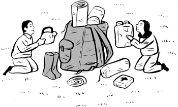
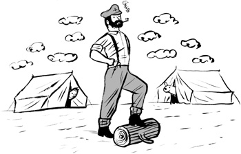
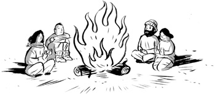
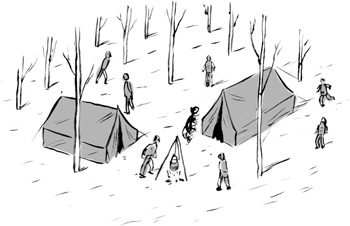
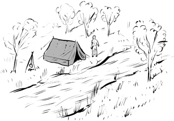
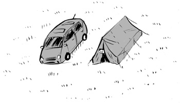
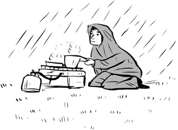
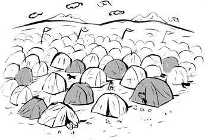
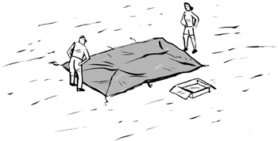
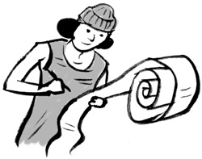

Matthew De Abaitua是《闲散者》杂志的特约编辑，也是一位忠实的露营者。他的Twitter动态和受欢迎的网站cathandmathcamping.com提供了关于在英国哪里以及如何露营的有趣且实用的信息。他还是小说《红人》的作者，该书入围了阿瑟·C·克拉克奖的候选名单，目前正被Shynola制作成电影。Matthew与妻子Cath和年幼的家人居住在苏塞克斯。
星空下睡眠的历史与实践
MATTHEW DE ABAITUA
HAMISH HAMILTON 企鹅图书印记
企鹅集团出版
Penguin Books Ltd, 80 Strand, London WC2R 0RL, England
Penguin Group (USA) Inc., 375 Hudson Street, New York, New York 10014, USA
Penguin Group (Australia), 250 Camberwell Road, Camberwell, Victoria 3124, Australia (a division of Pearson Australia Group Pty Ltd)
Penguin Group (Canada), 90 Eglinton Avenue East, Suite 700, Toronto, Ontario, Canada M4P 2Y3 (a division of Pearson Penguin Canada Inc.)
Penguin Ireland, 25 St Stephen’s Green, Dublin 2, Ireland (a division of Penguin Books Ltd)
Penguin Books India Pvt Ltd, 11 Community Centre, Panchsheel Park, New Delhi – 110 017, India
Penguin Group (NZ), 67 Apollo Drive, Rosedale, Auckland 0632, New Zealand (a division of Pearson New Zealand Ltd)
Penguin Books (South Africa) (Pty) Ltd, 24 Sturdee Avenue, Rosebank, Johannesburg 2196, South Africa
Penguin Books Ltd, Registered Offices: 80 Strand, London WC2R 0RL, England
首次出版 2011年
版权所有 © Matthew De Abaitua, 2011
插图版权所有 © Paul Blow, 2011
摘录自《曼彻斯特漫步者》，作者Ewan MacColl，经Ewan MacColl Ltd许可收录
作者的道德权利已得到确认
保留所有权利
在不限制上述版权保留权利的前提下，未经版权所有者和本书出版商的事先书面许可，不得以任何形式或通过任何手段（电子、机械、复印、录音或其他方式）复制、存储或引入检索系统，或传播本出版物的任何部分
ISBN: 978-0-14-196895-7
“毕竟，不适是露营者潜意识中寻求的。我们厌倦了奢华和便利。我们对复杂的文明产生反叛，渴望暂时回到最初的原则。我们愉快地忍受潮湿、寒冷、烟雾、蚊子、黑蝇和不眠之夜，只为了再次触及赤裸的现实。”
John Burroughs，《枫树下》
“我们逃离城市，但我们带着城市中最好的东西”
Ralph Waldo Emerson，《阿迪朗达克》
附录：Cath的打包清单参考书目致谢
打包与搭建

其他乘客用惊恐的迷恋神情看着我们，有一个人甚至表现出鄙视。我羞愧地低下头。我们的样子多么滑稽，一个肩膀宽阔、大腹便便、身高六英尺二英寸的男人，在八十升背包的重压下脸涨得通红，还有他的妻子，娇小玲珑，身高不过五英尺，背包让她看起来像一个倒退着走进衣柜的女人。我们还有一个孩子，一个金发蹒跚学步的孩子在一辆大型三轮婴儿车里踢腾着。伦敦交通礼仪这本薄薄的小册子被违反了。自从一位越南男子在277路公交车上运输装有罗非鱼的聚苯乙烯箱子，在早上八点时将冰冷的鱼水溅到通勤者的西装裤上——这是如此严重的礼仪违反，以至于需要在司机旁边贴上新的警告标志：“请不要将您的鱼带上这辆公交车”——自那以后，乘客们还没有目睹过如此严重的公交礼仪灾难。
Cath的背包里装着两周的衣物，足以应对各种天气和时尚场合的鞋类，三段塑料折纸可以展开成座椅，一袋茶蜡和阻燃纸灯笼，各种毛绒玩具，薄薄的平装儿童文学作品，温暖的毛衣，防水服，太阳镜和一个装有研磨香料的特百惠盒子。平衡放在婴儿车顶部的是一个蓝色保温袋，里面装着冷冻的升装牛奶、奶瓶、水果、零食和香肠。公交车颠簸着停下，作为一个超载的四条腿、三个轮子的野兽，我们前后摇摆着。
1908年托马斯·希拉姆·霍尔丁撰写的《露营者手册》——现代露营之父——在打包问题上这样说：“在露营中，细节就是一切。我仔细考虑衣物、拉力、重量、尺寸、体积和打包问题，几乎到了极端的程度。”霍尔丁是自行车露营的先驱，为周末乡村旅行设计了轻便、易于运输的装备。在他倡导轻装上阵之前，英国人踏上露营旅程就像在殖民非洲的另一部分：在一次湖区之旅中，一支十九世纪的露营队伍带了两吨装备，用马车运载，包括一架风琴、一个独立的食品储藏帐篷、一箱饼干和一架望远镜。（公平地说，他们的一些真正重物，比如铸铁壁炉，会被埋在土里，打算第二年再挖出来。）
我的打包系统遵循了Thomas Hiram Holding的精神，如此详细且高度紧张，以至于像铲子这样小的物品都可能让整个系统失衡。我对自己在打包过程中所获得的自豪感和乐趣感到惊讶。在那段被称为二十多岁的长期愚蠢懒散时期，Cath和我从未进行过一次真正重要的假期。我们既不计划也不准备任何事情。准备工作与酷相反。它带有军事色彩和童子军的味道。随机应变、即兴发挥、年轻的自发性，这些是时髦的价值观。
大自然要求准备。城市憎恶准备。城市奖励即兴发挥。计划制定了又放弃。如果你感到厌烦，叫辆出租车就能继续前行。你无法在田野里叫到出租车，你无法拉动那根救生索然后在自己的床上醒来，尽管天知道有足够多的愤怒的人在凌晨三点把湿透、破烂的帐篷扔进汽车后备箱，然后开车回家。
露营装备被摊放在我的卧室里，这是A1207号路（也就是Graham Road）上一栋维多利亚联排房屋改造的地下煤窖。城市海浪的声音在天井中回响：公交车冲过雨水沟渠的回流声，陌生人的争吵声，墙壁因从路过的宝马车低音炮传来的节奏性压缩声而颤动。我拿出了一些爱尔兰西海岸的地形测量图。对于一个睡在Hackney繁忙街道下的男人来说，乡村地图是对异域领土的承诺。
为露营旅行打包是一种乐趣。Horace Kephart，二十世纪初的美国woodsman，也是一本关于露营和woodcraft大部头著作的作者，对露营者摆弄装备的过程写过一段深情的描述：“在漫长的冬夜里，整理你心爱的装备，制作和装配小盒子和手提袋，让每样东西都有自己合适的位置，设计出只有你的巨大大脑才能构想出的新巧思，这是极大的乐趣。”Kephart，职业图书管理员，背弃了家庭生活。“对许多城市人来说，总有一个时候，大城市让他厌倦。他讨厌它的景象、气味和喧嚣。每项职责都是负担，每个来访者都令人厌烦。绿色田野和连绵起伏的山丘，高大的森林和清凉湍急的溪流的景象浮现在眼前。”生活在城市中是令人疲惫的，特别是在东伦敦狭窄、高耸的街道上。我们在鼻子和电脑屏幕之间半码的空间里工作，然后回到Hackney这个没有屋顶的迷宫。我们因缺少地平线而感到不适。
打包花了两个小时。Cath为旅行的每一天都数出了内衣和御寒的热内衣，然后是五颜六色的儿童衣物包，如果我们要把所有东西都装进去，一切都必须用聚乙烯压缩袋包装。在我背包的底部放了一叠尿布、湿巾和尿布袋，还有装着衣服的最大压缩袋。然后是Trangia，我们的便携厨房，一个酒精炉，锅碗瓢盆像俄罗斯套娃一样一个套一个地装在一起。它闻起来有浓烈的变质酒精味，底部覆盖着一层黑膜。它需要单独的袋子。然后是更多的衣物袋，没有一个是我的，都是Cath打包的溢出物。我抑制住抱怨为我们的孩子Alice打包的四顶帽子的冲动：一顶防水帽，一顶超保暖毛线帽，一顶遮阳帽，还有——因为她一戴上这些帽子就会立刻甩掉——第四顶帽子，Alice唯一愿意戴的帽子，一顶脆薄的帽子，除了占地方外没有任何用处。
接下来是刀具。当然要有瑞士军刀，但只是为了它精巧的镊子，用来取出大自然的飞箭走石——蜱虫、叮咬、荆棘和碎片，这些都是任何露营旅行的一部分。作为刀具，它毫无用处。Horace Kephart建议避免使用它：“当心组合刀具；它们可能是还过得去的开瓶器和开罐器，但也就仅此而已。”我不同意Kephart的观点——它们作为开瓶器也很无用。Kephart打包了一把带有四英寸半刀刃的小护鞘刀。因为我在这次旅行中无意开膛破肚动物，所以我打包了一把法国Opinel刀，有山毛榉木柄和三英寸不锈钢刀刃。
然后是床铺，每个都大约有卷纸筒大小，装在各自的束口袋里。我们不用舒适的充气床垫，这些”Therm-a-Rest”只需要四次长呼气就能充气。大型舒适的充气床垫对我们节俭的背包来说太重了。而且，在寒冷的夜晚，所有那些空气可能形成一块坚固的冷块，吸走体热；或者，如Horace Kephart所说，“充气床垫在温和的天气里很奢华，但在季末太冷而无法使用，除非用毯子或毡垫很好地隔热。床垫越薄，在这方面就越不令人反感，因为它不会偷走你那么多的体温。”
用我的大手，我将装备揉捏到袋子里，用力向下按压，仿佛背包是一口井，我正在其中淹死一群猫。打包需要压缩，压缩需要愤怒。随着时间的推移，我开始将此视为父亲式愤怒，这是拖着抱怨的家人穿过拥挤的英国交通系统所需的红色能量：交通堵塞，拖车被手腕拖着沿应急车道行驶，用餐时间的高速公路服务区，穿着睡衣的家庭享用成桶的鸡肉，一年中的第一个银行假日。
背包的颈部因最后一刻的毛巾和毛衣而膨胀。我勒紧了它，然后用帽套盖住，睡袋被塞在下面。我将垃圾袋和水瓶塞进背包两侧的网兜里。一张羊皮卷在Therm-a-Rest周围，这是孩子的床。我把这个绑在背包上，然后就完成了。
Cath 把头探进卧室门缝。“别忘了帐篷。”
我确实忘了帐篷。
这是一个四人隧道式帐篷，有三根杆子，重约九公斤，这让它稍微太重而无法绑在背包上。相反，帐篷被放在自己的小购物推车上推着走，用弹性带固定在位置上。“别忘了帐篷”是我们的口头禅，因为它是唯一一件不绑在我们身上的行李，所以在路上众多的换乘中很容易被落下——从公共汽车到地铁到主线火车到长途汽车到飞机再到公共汽车。
据说玛格丽特·撒切尔曾说过：“如果一个男人在二十六岁时发现自己还在坐公交车，他可以认为自己是人生的失败者。”那么，作为一个三十多岁的男人，把美丽的年轻妻子变成了驮马，还征用了学步儿童的推车来运输物资，我该如何看待自己呢？在公交车上，其他乘客为我做了这个评估。在他们的注视下，我感到强烈的羞耻感，如此强烈以至于我无法再忍受，于是踏上了上层。
不幸的是，上层比我预想的要矮，我的背包卡在了地板和天花板之间。如果说下层的乘客用震惊的迷恋眼神审视我，那么上层那些通勤到Shoreditch无薪实习工作的潮人们只是轻蔑地叹了口气。我无法脱下背包。过道太窄了。背着它我也无法前进。我能前进的唯一方式就是蹲着。但背包真的很重。公交车在交通灯处猛冲。我踉跄着跌倒在手和膝盖上，就这样屈辱地，我爬过那些漠不关心的乘客，到了公交车后部的唯一空座位。
楼下的乘客主要是老年市民，Cath应付着他们关切的询问。
“你们在做什么？”
“去露营。”
这个解释不够充分。Cath尽力向怀疑的乘客们阐明我们看似疯狂行为中的理性。如果我让这些camping旅行听起来完全是我的主意，某种疯狂的男人项目，让全家都被迫参与，Cath总是很快就会反驳我。不，她是平等的伙伴。
去camping有很好的理由，特别是如果你有小孩的话。Camping和育儿是两种活动，从外面看，都像是对轻松生活的反常和任性的放弃。决定要孩子，踏上育儿这样一个混乱而要求很高的冒险，类似于决定去camping的决定——不顾天气预报，手头资源有限，对目的地只有模糊的想法，对未来会带来什么没有把握。
Camping是不可预测的，这就是为什么它优于在西班牙度假村度过的两周，或在托斯卡纳别墅度过的一个月。同样对不可预测性的渴望促使我主张要孩子。虽然回想起来很荒谬，但我对二十多岁时聚会、醉酒、焦虑的谈话和对承诺的犹豫不决的生活感到厌倦，将育儿视为一次结果不确定的冒险。Camping是Cath和我作为父母做出的决定性决定之一；即使我们不知道这个决定会如何发展，至少它已经做出了，生活继续前进。
这些论点与Cath在那个雨天的周五早晨在公交车上提出的不同。她让事实自己说话。
“我们喜欢camping。”
“但是孩子呢？”乘客问道。
“她也喜欢。”
“你们一定会很冷。”
“我们带毛衣。”
“你们为什么没有车？”
现在这是个好问题。事实是Hackney的人均汽车拥有率是英国最低的。在我们在Hackney生活的十年里，汽车是不必要的。你会把它停在哪里？你怎么能在这些街道上留下任何有价值的东西？我们购物不需要汽车。Tesco距离我们家只有五分钟的步行路程。我爸爸曾经试图开车去那里，试图在周六的交通中穿过那200码；花了他一个小时，最后他已经精疲力竭。Cath和我为我们的步行、我们的公交出行和我们冲向车站而自豪。我们本来会在汽车保险和汽油上花费的钱都用在了出租车、公交车和火车票上。一切都很合理，直到你开始camping。
在金融中心核心的利物浦街，我们下了公交车。然后，在第二次违反伦敦礼仪的行为中，我们带着所有装备登上了地铁。公交车上的人还会眼神接触，而在伦敦地铁上则有微弱的听觉霸凌，不满的哼声和咳嗽声。这次特殊的旅行是在2005年7月7日恐怖袭击之前进行的，之后在地铁上背背包变得如此问题重重，我们更愿意乘坐小型出租车穿越城市，这是一个妄想的计划，最终会以一个东欧出租车司机在老街环岛第四次转圈时大喊”这是什么？我在哪里？“而结束。
继续前往斯坦斯特德机场，在面对瑞安航空行李限制的情况下，我被迫将帐篷作为手提行李。这确保了通过海关的困难旅程。整个上午我们都肆意无视公共交通的惯例，但只有在机场，当局才能因我们的违规而惩罚我们。海关官员展开帐篷，好像他从未见过这样的东西。他轻蔑地凝视着防水布和地布，然后他在帐篷袋里发现了一些他真正不喜欢的东西——一个橡胶锤和一袋金属钉子。
“你打算用这些做什么？”
我眯着眼睛努力抵制讽刺。“搭我的帐篷。”
“在飞机上？”
“不，之后。”
“这些是干什么用的？”他拿着杆子，用弹性绳串在一起的精细玻璃纤维段。
“它们是支撑帐篷的杆子。”我指着摊在地上的雨布说，“帐篷这样子我们没法睡觉。”
我想说，别担心，我不会试图在过道里组装一个四人隧道帐篷来劫持飞往科克的飞机。我也不会试图用帐篷钉固定机组人员。
海关官员在帐篷袋里查得更深，发现了非常可疑的东西。灰尘。
“这里面很脏，”他说着，把袋子翻了个底朝天，给我看所有的灰尘。
“这是土，”我说，“非常脏的土。”
他取了样本去检测。幸运的是，检测结果显示我帐篷上的土就是土，而不是在棕色海洛因田地上露营留下的残留物。
巴士的羞耻感被愤慨取代了。我讨厌飞行。我讨厌在气压变化中声音变得平淡而尖细。我讨厌当地面从轮子下方移走时尾骨那种不确定的感觉。我讨厌餐食服务那种做作的常态。我讨厌氧气面罩的威胁，如果机舱失压，面罩会像绞刑架上的小偷一样摇摇晃晃地掉在我面前，那会是什么感觉。我讨厌在现代主义中感到无助；我讨厌整个飞行过程都在焦虑发作，所以时间就像爬着肚子一样缓慢前进。飞行依赖于一种愚蠢的共识——机上电影、糟糕的食物、装红酒的小洗眼杯——这样你就可以避免思考你处境的可怕现实：屁股后面有10万磅的推力，只要一只迷路的加拿大鹅就可能造成鸟撞。这种愚蠢的共识从机场开始，对行李限重、液体肥皂和可疑鞋子制定越来越任意的规则。在护照检查处给乘客下药然后把他们堆在货舱里，难道不是更安全更方便吗？飞行的刻意平凡帮助我们忽略实际发生的事情。露营则相反。它要求你的注意。它剥去令人麻木的家庭日常，让我们更现实地看清自己是谁，在做什么。在大自然中度过一个周末后，周一早晨，文明似乎更加任意，更像是某人曾经做出的决定，而不是必然性。当我独自站在登机口，帐篷摊了一地时，我想，我不应该为此感到羞耻，我应该为此感到荣耀。
这是一个明亮清新的春日早晨。连日的雨水让地面变得松软。田野边缘泥泞，然后倾斜进入纵横交错Wapsbourne庄园农场的众多沟壑之一。透过矮林主干的缝隙，一条绳子上的轮胎在沟渠上方悠闲地旋转，像是乡村版的傅科摆。在我试图携带帐篷作为手提行李登上瑞安航空班机五年后，我们仍在露营，我们将永远露营。我们又有了两个孩子和一个更大的帐篷。我们再也无法把所需的一切都背在身上。我们是普通的汽车露营者。
Cath和我搭建帐篷。我们用结婚夫妇那种嘟囔的语调讨论到底选择哪个位置。木屑床铺在泥土上。田野中央比较干燥，但我想在边缘搭建。我们争论选择哪个湿透、烧焦的火坑作为我们的专属，这微弱地呼应了已婚夫妇在销售人员听力范围内进行的那些压抑讨论。在选择营地时，我考虑距离设施的远近、遮阴前景、地面坚实度、水源位置以及其他露营者的位置：加入群体和侵犯群体之间有着微妙的区别。Cath指导我转动帐篷，直到入口面向营地中心，这是我们将成为社区一部分的标志。我们的帐篷又大又舒适，为家庭的温和冒险提供庇护。我们一起搭建它，咔嗒声中将杆子滑入套筒，安装帐篷用来通风的小帽子，把结构拉紧竖立，然后赶紧固定帐篷翼，免得它们引起风的注意——搭建帐篷的行为多么亲密，这是与装备的华尔兹，是我们婚姻的行动。其他露营者在我们工作时移开视线。
搭建帐篷时没有交谈；经验告诉我们，这项工作最好在最少对话的情况下进行。断言记起了礼貌，转变为建议。我们相差一岁的两个蹒跚学步的孩子Alfred和Florence在我们脚边转悠。幼儿们被缠在帐篷的精细部件中，然后笑着逃到荆棘丛，再到沟壑。我听到一位露营者抱怨幼儿们在拨弄他的拉绳。我严厉地把他们叫回来。
幼儿们要求喂食，需要换尿布，然后在我抓着尿布的追赶下跑出去，再带着关于太阳和飞机的问题回来，这些问题等不了。“说话！”男孩要求道。但我拒绝。太阳很高。我们需要遮阴。帐篷必须搭起来。还必须取水。头顶上，任务在它们的飞行计划中盘旋。任务是无情的。即使没有露营的复杂情况，育儿也是如此。所有露营家庭都相似，因为任务让我们如此。我们深陷其中。
帐篷搭好了，这是多么令人敬畏的结构啊，现代技术与游牧美学的典型融合。我们的帐篷是一个六边形底座的金字塔，向上升起到一个高通风口；三个卧室向北、西、东倾斜，南端用作入口。通风的高顶中央部分让我们白天保持凉爽，低矮舒适的卧室在夜晚为我们保温。当我在黑暗中从远处看到它，被荧光棒和灯笼照亮，看起来像埃及UFO时，我想起一些学者将希伯来语的帐篷一词ohel比作阿拉伯语的ahl，这是家庭或部落的众多词汇之一。我们是一个露营家庭。
在Wapsbourne Manor Farm度过的两个夜晚，孩子们都哭着醒来，我爬进帐篷寒冷的中心，诅咒我们决定成为露营家庭的那一刻，一边嘟囔着一边颤抖着穿上牛仔裤，心想为什么，为什么我们要这样做？光着脚站在冰冷的防潮垫上，我意识到这都是我的错：我把帐篷搭在了湿泥上。盖上防潮垫后，浸湿的土地没有干透。结果，帐篷比应有的温度更冷，这就是孩子们哭泣的原因。
我选择了泥泞的地点，因为干燥的地方离邻居的帐篷太近。通过保持距离，我遵循着贝都因谚语”我们相距远远地搭帐篷，这样我们的心才能贴得更近”。相距远远，这样鼾声就不会打扰彼此。相距远远，这样你早晨第一眼看到的不会是露营者从帐篷里探出的憔悴、宿醉的脸庞，来确认对天气的疑虑。最关键的是，相距远远，这样我们就能免受彼此日常生活的地狱折磨。没人应该听到我催促孩子们排队。没人应该听到Cath和我讨论早餐，为了让家庭保持目标而不断交换的平淡信息。每当朋友建议一起租小屋时，我都会引用这句贝都因谚语。无论大家的初衷多么良好，小屋度假总带有被动攻击性协商的暗流。家庭不能共享厨房。让我们围绕着营火这一古老的兄弟情谊聚集，而不是围绕餐桌，承受中产阶级烹饪的表演焦虑和过于熟悉的谈话话题。
如果你把帐篷搭错了地方，你就有整夜的时间来为自己的错误而苦恼。自从有了汽车，我有了核选择：半夜把孩子们装进后座开车回家。我从未按下这个按钮，但我曾经很想这样做。在小型的、几乎没有组织的音乐节上，我们被迫在舞台听力范围内露营，凌晨三点听着瘾君子为了音响系统争斗，没有观众来吸收低音（我必须记住更频繁地打包耳塞）。有几次，整个营地都是灾难，在黑暗中开车回家似乎比留下来更可取。
每年的第一次露营总是杂乱无章、令人焦虑，因为你要努力记起你的装备和营地生活的惯例。在Wapsbourne Farm搭帐篷是为了弥补今年早些时候在那里的灾难性旅行，当时我们是唯一的露营者。三月份，地面因霜冻而坚硬，树木光秃秃的。夜幕迅速降临，大地变得寒冷。我点燃了篝火和烧烤架，但没有准备好应对夜晚压倒性的黑暗。篝火对黑暗毫无影响。烧烤架有盖子，所以对围绕在我身边的小孩子们来说实际上是看不见的。为了安全起见，我把烧烤架的炭倒进营火里，过程中烧伤了指尖。痛苦！我在黑暗中跑来跑去哀叹我的遭遇，诅咒我的处境，被饥饿、尖叫的孩子们追着。少数几根香肠在这场危机中幸存下来。两个学步的孩子狼吞虎咽地吃光了。Cath和我都没有食欲，我们的大孩子在摇摆和恶心。
我肯定会开车带我们回家。
回想起来，我当时太疯狂了，不适合开车。被夜晚和疾病逼疯了。我们尝试了睡觉时间。断断续续地睡了一个小时，然后开始呕吐。我们得了猪流感，为学步的孩子们大规模接种疫苗的一个意外后果是，他们精力充沛，想要关注和活动，而同时Cath、我们的大女儿Alice和我正在防潮垫上爬来爬去，处于永久排泄的幻觉状态。
凌晨四点是统计上人们最可能死亡的时刻。Tom Wolfe称之为饮酒者的时刻，是你在晚上狂欢后惊醒的时间，每个细胞都中毒了，你的大脑就像一台洗衣机，旋转着灵魂的脏衣服。我认为凌晨四点是我们原始祖先的换班时间；在平原上成群睡觉，他们有一个轮换系统来决定谁值夜班。作为我们队伍中唯一还醒着的人，我发着烧躺在帐篷里，警戒着捕食者。我觉得我快要死了，所有关于猪流感的炒作可能会成真。我想，我现在能开车回家吗？叫醒孩子们并把他们装进车里会很容易。穿过黑暗的田野和夜间小路就不那么容易了。而且有风险，考虑到我即将死亡，开车可能超出了我的能力。一向体贴的我，没有叫醒Cath告诉她我快要死了，推理她宁愿在我死亡时继续睡觉，然后早上再收拾残局。
Cath和我第一次搭帐篷时，在Dover的一个小田野里搭了一个微型单人帐篷，我们把它搭反了。我们当时十九岁。装备是借来的；Cath拿了她哥哥的大蓝色背包，我背着我堂兄的新式红色背包。帐篷属于我姐姐，太低了，我必须用肘部爬进去。因为我把它搭反了，到了晨露时分，帐篷贴在了我的脸上。在黎明前颗粒状的蓝光中，我穿衣服，收拾背包，催促Cath离开她的睡袋。我很高兴能早起，为渡轮做好准备。在欧洲导航的责任重重地压在我的肩膀上，我的思绪被铁路时刻表纵横交错。对我来说，准时比睡眠更重要。对Cath来说不是。如果帐篷没有搭反，没有在她周围倒塌，那么那天早上我们很可能会有第一次露营争吵，她在床上磨蹭，而我急于
收拾营地出发。结果我们到多佛港口太早了，渡轮还在法国那边。
我们的欧洲之旅孤独而平淡。我们没有遇到任何人。我们把帐篷搭得离其他年轻冒险者太远了，那些精瘦、晒得黝黑的欧洲大陆背包客看起来比我们这两个苍白的北方人更加老练和自在，我们穿着马丁靴在鹅卵石街道上踢踏着。就像贝都因男人坐在帐篷门廊里社交一样，我们本应该向同伴露营者表明我们愿意交谈。
诗人阿方斯·德·拉马丁在1850年出版的《东方游记》中记录了他与贝都因人的旅程。他描述了贝都因人如何搭建帐篷：
[…贝都因男人分散到一片平原上，跳下马来，将长矛插入地面，把马拴在上面。女人们四处奔跑，在丈夫们的马匹附近搭建帐篷。然后，仿佛被施了魔法一般，我们发现自己置身于一座城镇中…只有女人负责搭建和拆除帐篷，她们以惊人的熟练和迅速完成这项工作。她们通常承担营地的所有劳作。]
贝都因女人不仅负责搭建和拆除营地，她们还用山羊毛和羊毛编织独特的黑色帐篷，因此这种帐篷被称为bait sha’r，即毛发之屋。
与贝都因人一起旅行的维多利亚时代作家们坚信他们正在观察《旧约》中族长们的社会：贝都因男人遵循亚伯拉罕的习俗，在炎热的白天坐在帐篷门口；帐篷与《圣经》中描述的相符，有一道粗糙的帘子将帐篷的公共区域与私人区域分开——前面是社交生活；后面是家庭的私人房间。《士师记》描述了在这个卧室里，希别的妻子雅亿如何用帐篷桩钉穿了敌对将领西西拉的头骨。在《以赛亚书》中，上帝被描述为像帐篷一样铺展天空，这个隐喻在我们凝视星空时重现。他独自搭建天空，展示他的力量和统治，然后指示以色列人用另一个露营隐喻来扩展他们的领域：“要扩张你帐幕之地，张大你居所的幔子，不要限制；要放长你的绳子，坚固你的橛子。”《出埃及记》以摩西在西奈山上接受的详细指示结束，这些指示是关于华丽建造会幕——聚会的帐篷，一个上帝在以色列人营地中居住的地方。
人类从一开始就在帐篷里睡觉，围着篝火聚集。考古学家弗兰克·霍尔在伊朗和伊拉克周围进行了多次挖掘，研究大约8000年前的动物驯化。位于伊朗胡齐斯坦地区安迪梅什克附近的新石器时代营地Tepe Tûlâ’i，看起来不过是一个直径约六十米、高一米半的土丘。它在公元前6200年到5900年之间的某个时期被占用了大约200年。1973年，霍尔在当地工人的帮助下挖掘了这个遗址。从灰烬沉积物、古代篝火遗迹和史前陶器碎片中，确定了遗址的用途和年代：Tepe Tûlâ’i是牧民们季节性使用的营地，这些人可能在其他地方从事有限的农业。在距离土丘100米处发现了燧石碎片和灰烬区域，表明这是一个广阔的定居点。发现了山羊和瞪羚的骨头，山羊很可能是放牧的，瞪羚是在胡齐斯坦平原上狩猎的。44块犬科动物骨头的发现表明这个部落养狗。当地工人确认这个新石器时代营地的布局与现代游牧营地相同。挖掘暴露了当地工人识别出的独特圆形巨石，这些石头来自大约三英里外的卡尔赫河。他们认出了石头的排列，三排，作为chul或在帐篷中放置床具的平台。弗兰克·霍尔写道：
[我们雇佣的男人过去几年曾在这个地区露营，使用与我们正在挖掘的相同结构。冬天他们使用典型的卢里帐篷，顶部是黑色编织的山羊毛，而夏天他们制作koolas，即用杆子和茅草或芦苇搭建的开放式结构。]
我们的身体自新石器时代以来基本没有改变。我们的身体进化出了露营的能力。在十九世纪后期和二十世纪初期，这个时代对文明人身体状况恶化极为担忧，露营被视为补偿城市生活消耗的一种方式。被大规模工业化社会中个人力量缺失所折磨，露营者用祖先或游牧他者的神话包装自己；这种对真实性的挪用，用露营让自己感觉更真实，在今天的Wapsbourne农场林地中延续着，那里有帐篷和蒙古包出租。像Qashqai、贝都因人或苏族等游牧民族的生活为西方社会的露营者提供了浪漫的神话；我们的生活越先进复杂，就越需要在简单生活中临时度假。
1913年，44岁的波士顿艺术家约瑟夫·诺尔斯赤身裸体进入森林，没有火柴或刀子，没有衣服或食物，以证明他能像原始人一样生存。他坚持了整整两个月，然后被发现穿着熊皮在铁路轨道上蹒跚而行。这个生存主义实验被指控造假，有证人报告说他们看到约瑟夫时不时地到记者的小屋里吃热饭。
尽管受到这样的指责，Joseph Knowles的英雄之旅仍然受到赞誉，因为它让社会相信，柔弱的内在可以通过一次露营快速得到锻炼。“过度文明化的人能拥有的最好假期，”Horace Kephart写道，“就是去一个可以狩猎、捕获并烹饪自己食物，搭建自己庇护所，做自己家务的地方，这样，在某种程度上，重新掌握那些wildcraft的失传技艺，它们是我们祖先传承下来的遗产，但现代人中一百个里连一个都不了解的。”
当代露营者可能无法杀死自己的食物，但露营仍然是自力更生的学校。露营的教育作用可以追溯到古罗马的Campus Martius，那个士兵训练和举行比赛的军事场地，并延续到今天大学的”campus”校园。我们露营是为了提升自己：我带孩子们去露营，因为我希望他们了解天气和火，并获得来自无人监督的乡村探索的身体勇气。数字领域是一个糟糕的游乐场，因为它没有风险：电子游戏让玩家进入猎人的全神贯注状态，但将这种心智状态与物理现实断开连接。可以通过按重启按钮抹去后果的行为什么也教不了我们。露营让我们和孩子们从数字领域的无休止分心中脱离出来，哪怕只是一个周末。逆境和限制，以及从现代媒体的需求中获得的自由，都能塑造品格。
将露营用作教育体验的做法出现在1930年代的Forest School中。现代那些时刻盘旋的直升机父母被建议不要看[第5章]的部分，其中Forest School的重要人物让他们的三个年幼孩子（7岁、9岁和10岁半）在河边的树林里没有任何成人监督地露营了六天。
对成年人来说，露营提供的不是工作的休息，而是一种不同类型的工作。简单的小任务，比如搭帐篷或生营火，有着即时而有形的回报，优先于城镇中复杂、抽象或去技能化的工作。在这个看似无害的娱乐活动之下，隐藏着对当代生活中被中介化、被动、抵押贷款、压力重重状态的疏离。对信徒来说，露营就是自由；对批评者来说，它代表着对人类花费千年试图摆脱的自然牢笼的反常怀念。每一个从露营旅行中回来并确信其美德的人，都有另一个人发誓”再也不会”。在这个叙述中，我包含了一些更具挑战性的经历，因为露营的不可预测性正是它优于简单消费休闲活动的原因。Cath和我露营并度过美好时光的那些时候，我大多省略了。快乐写成空白。
在写这本书时，我选择了一条通过露营历史的左手小径。它始于十九世纪末对原始的热爱和对与土地失去亲和力的渴望。沿着这条路径，我们将遇到Ernest Thompson Seton和他受印第安启发的Woodcraft Way。再往前，这条Woodcraft Way引向激进的露营团体，如Kindred of the Kibbo Kift，以及在Order of Woodcraft Chivalry指导下在New Forest的Sandy Balls进行的露营和教育的进步实验。小径分叉了。我们将经过德国青年运动Wandervogel和Bünde令人不安的森林，但不会过深地进入那个特殊的黑暗之心。这条左手小径是一条反主流文化路线。右手小径涵盖了像童子军和女童军这样的大众主流运动，美国的教育夏令营，Alan Rogers露营指南，这些故事我留给其他人去讲述。这个故事的范围也必然有限，主要是英国和美国，这意味着省略了世界其他地方的露营历史，从澳大利亚bushcraft到捷克woodcraft运动的革命作用。
一路上，我们将伴随着露营特立独行者，如Nessmuk和Horace Kephart，他们教会美国人如何在荒野中露营，尽管那片荒野正受到工业化的威胁。我们的美国故事始于1858年阿迪朗达克的哲学家营地，先验主义诗人Ralph Waldo Emerson参加了这次活动，他的写作改变了美国灵魂与荒野之间的关系。内战后，美国人在William H. H. Murray的露营热情激励下成群结队地前往荒野，结果他们的热情遭遇了黑蝇和无情的雨水。在二十世纪初，我们将围绕营火与Theodore Roosevelt和John Muir一起，看他们为未来几代露营者协商保护荒野的问题。汽车的到来既威胁又开放了荒野。我们将与Henry Ford和Thomas Edison一起露营，见证他们开创汽车露营时代。技术，以现代帐篷和装备的形式，被用来让我们更接近自然，结果好坏参半。在1960年代的反主流文化中，我们将遇到那些负责发明圆顶帐篷并引领轻量化露营装备创新的人们，他们创造了背包旅行革命。
露营的时尚潮起潮落。在写作时，即二十一世纪第二个十年的开始，英国的露营正享受着复兴。五分之一的成年人在过去三年中参加过露营或房车度假，另有7%的人希望在未来参加；现在，420万英国人正在考虑在星空下过夜。2010年，Mintel发现40%的英国人不打算度假
国外的营地预订量增长了16%，帐篷销售量翻了一番。露营和大篷车俱乐部报告其2009年会员数量增长了52,000人，特别是三十到四十九岁年龄段的增长尤为显著。值得注意的是，由于年轻家庭开始露营（他们希望给孩子们一种回归基本生活的体验），俱乐部成员的平均年龄从五十五岁下降到了四十九岁。露营和大篷车俱乐部估计，英国每一百个成年人中就有一个是会员。
这种现象有经济原因：英国货币疲软，机场运转不良，人们明显比以前更穷，并预期会变得更穷。也有文化原因：关于我们生活方式的确定性正受到压力，环保运动表明当前文明的发展方向是不可持续的，而为此买单的方式——资本主义本身——正在经历一场清洗。在这个时刻，人们想知道，是否存在另一种生活方式？我能用更少的东西生存吗？我应该逃到山里去吗？这些都是人们在历史长河中一直在问的好问题，也激励着人们去露营。我们知道旅行给了我们看待家的不同视角；露营给了我们这些，还有更多——它的游牧根源质疑了家本身的必要性。
在现代，我们露营是为了成为比自己更大的事物的一部分：荒野、格拉斯顿伯里人群、政治团体、教会、童子军、自然、历史。露营用户外的他者性替代了四面墙壁和发光屏幕的局限。心灵之窗被敞开。风景是一种心境。因为我对动植物无知，大部分时间都在房间里盯着屏幕，所以我把自然体验为一种他者性，而不是熟悉的领域。我渴望地平线和森林的异教堂。我躺在睡袋里，聆听晨鸟合唱的教义问答和潺潺溪流。对我来说，露营的艺术就是在享受自然的他者性的同时减轻其艰难：带太多装备，土地的神秘品质就会变得难以捉摸；带太少，任何崇高的思想都会被身体的不适所湮灭。所以找一块平整的地面，最好是早晨能晒到太阳的，比周围环境高一些但有一些天然遮蔽，一块不在树下也不在附近溪流泛滥区域的地面，能够取得柴火和水源，与其他露营者保持友好距离，清理地面上的树枝和石头，准备与大地贴脸而卧。搭帐篷是一种希望的行为：希望你能体验到一些真实的东西，希望你和你的人会因这次经历而得到改善，但最重要的是，希望不会下雨。
[营地队长]

我的计划是乘公共汽车游览凯里环路，沿途在各个美景点搭帐篷。在一个小笔记本里，我记录了公交时刻表以及可能的露营地的电话号码和地址。尽管我花了很多个晚上制定这个计划，但我决心不让规划扼杀这次露营之旅。我要在组织性和自由性之间取得良好的平衡。我要成为舵手，稳定但不专横。我要像天鹅一样，表面平静，水下快速划动。
凯里环路位于爱尔兰西南部，是一个被环形道路环绕的壮观的山湖地区。我们的第一站是卡赫西文的曼尼克斯角露营地。根据我的笔记本，公交车程是三十八英里。我们按时到达，营地主人莫蒂默·莫里亚蒂迎接了我们，他是个瘦削的抽烟斗的男人，像许多露营地主人一样，开着一辆非常破旧的车。曼尼克斯角有用来生泥炭火的火盆，还有一个破旧的钢琴放在休息室供露营者弹奏。我们在棕榈树下的一块突出陆地上搭起帐篷，从这里我可以观察三种不同天气的争斗——北边的蓝天泻湖，东边的灰色哥特式阴影，以及西边一朵正在爆发的愤怒雨云。我合上笔记本，泡了一杯茶，坐在俯瞰海湾的一块大平石上。我惊讶于能在大西洋边露营。景色包括瓦伦西亚岛，早期的跨大西洋电缆从那里将点和划传送到新世界。加勒比海遥远的飓风通过波涛汹涌的海浪发回它们自己的信号。
休息时，我敏锐地意识到自己内心的声音。在海湾的寂静中，这个声音几乎可以听见。我的大部分想法都是我和一个专横的想象对话者之间的对话台词。他自立为营地队长。他确切地知道什么时候应该开始做饭，需要获得什么物资，以及如何分配这些物资。他研究过地图，总是热衷于推进我们前往下一个目的地。我想知道是否可能训练出一个不同的内在声音？我不想要一个内在队长带着他那惩罚性和不必要的行程，我想要一个自由精神作为我想象中的顾问，一个野蛮诗人，他会在笔记本里填满时刻表以外的东西。
第二天早晨，我们租了自行车，骑到瓦伦西亚岛的山顶。我有一年多没骑自行车了。能够按自己的意愿、以比步行更快的速度旅行感觉太棒了。在下山的路上自由滑行，阳光在海湾水面上闪闪发光，我女儿戴着头盔的睡眠中的头靠在我的背上轻撞着，我真的很快乐。我正值三十出头，正是为人父母的甜蜜时光；我正在做作地摆脱十年毫无意义的享乐主义，追求更有意义的东西
坚实的东西，我可以往里面敲木桩。我试着皱眉头，戴着一顶平顶帽。Camping是一种成人礼。我正自由地进入成年生活的新阶段。
在接下来的几天里，我们形成了健康的作息规律，早餐吃鸡蛋和当地熏制厂的熏鲑鱼，然后骑车去海滩或城堡废墟。Cath和Alice很满足，但我内心的船长在这种闲散中变得躁动不安；他想要继续前进。我的笔记本上记录着我们尚未达成的所有目标。谁知道这好天气还能持续多久？
我们在Mannix Point撤营，搭巴士去Caherdaniel。我担心我不会认出campsite的巴士站，直到我们错过了，那就太迟了；在爱尔兰乡村，巴士站之间相距数英里。根据我的笔记本，campsite距离城镇只有几英里。我估算了巴士的速度，计算出我们应该在大约十分钟的车程后停车。穿过Caherdaniel村庄后，我默默数了600秒，然后请巴士司机让我们下车。
“我们几天后再见，”我一边从行李舱取出我们的camping装备一边说。“我们正在乘巴士游览凯里环路。”
“这是最后一班巴士，”他坐在座位上说。
“今天的最后一班巴士。”
“这个季节的最后一班巴士。最后一班巴士直到”——他看了看手表——“直到三月。”然后他开车走了。
我盯着我的笔记本。里面没有关于季节性时刻表的任何内容。然后我意识到我们不在我以为的地方。无论我在巴士后面做什么计算都与现实不符。疯狂是一种扭曲的逻辑形式。
“为什么巴士司机让我们在这里下车？”Cath看着这片荒凉的路段问道。
“我让他这样做的。”
“这里是campsite吗？”
“不是。”
“你为什么不请巴士司机让我们在campsite下车？”
因为船长不寻求帮助！船长是果断的。他领导；其他人跟随。只有无知的人才问问题！我带着家人沿着路边走。没有小径。我敏锐地意识到我们是多么脆弱。这就是我所有计划的结果，背着背包，在黄昏时分推着婴儿车沿着荒野中的公路行走。我们没有走多远，幸运的是，一辆车停了下来，一位担心的瑞士女人走了出来。她坚持要开车送我们到目的地，当我把婴儿车装进她的汽车后备箱时，她指着我站在路上的家人问：“你不觉得这有点危险吗？”
我是一只天鹅。一只倒立的天鹅。表面上，疯狂地踩水，而在下面，优雅地溺水。
1897年，四名男子在爱尔兰戈尔韦的康尼马拉进行了一次cycling旅行。这些人从西北部的斯莱戈出发，经过斯温福德和卡斯尔巴。旅行的领导者和自封的”skipper”是Thomas Hiram Holding，一位53岁的裁缝。Holding平均每年camping一个月，估计他在英国的河流、湖泊和河口上行进了4000英里。十一年前的1886年，Holding和其他三人曾乘独木舟进行苏格兰西部湖泊的camping之旅。他是skipper，其他三个之前不相识的人被分配了出纳员、大副和船舱服务员的角色。这些人都有白领工作，这次camping之旅经过布特岛和阿伦岛，为他们提供了城市工作和生活所缺乏的身体锻炼。
这次旅行也是一种成人礼，很像我在凯里经历的那种；Holding团队中有两人”已经结婚”，两人急于结婚，因此这次旅行让未婚男子能够”研究那些已经安定下来、变得清醒并承担起生活中最严肃职责的明智男子的性格”。
凭借如此丰富的camping经验，Holding自然会承担船长或skipper的角色。他的旅伴们很容易地服从于他，这种方式对任何参加过单身派对的人来说都很熟悉，当陌生人聚在一起时，他们会跟随一个假定的领导者——伴郎。作为船长，Holding负责帐篷和装备的组装，这些在当时要么是委托制作，要么是campers自己制作的；当Holding认识的一对已婚夫妇透露他们打算骑双人自行车在苏格兰进行cycle-camping时，他委托制作了两套帐篷和装备，每套重十四磅，由四个城镇的七个人制作。康尼马拉的camping之旅是Holding十五年来的梦想，尽管只有在配备橡胶轮胎的安全自行车发明后，这样的自行车camping旅行才变得可行。
营地船长的角色在早期的camping和户外手册中经常出现。根据Holding的说法，船长是”邀请朋友并参加过之前远征的人”担任的角色，这个职位需要委派和分工：
聪明的camper会努力摆脱尽可能多的责任……至少将一半的工作交给另一个人。这并不容易，有三个原因。首先，这个伙伴可能是那种讨厌责任的人之一。其次，他可能充满了自己在度假的想法。第三，他可能希望一切都很轻松。
船长的责任是向农民请求在他们的土地上camping的许可，并协商合适的租金以及购买牛奶和鸡蛋。Holding还自封为厨师，确保口粮公平地分配给他的camping伙伴。船长确保campers不会熬夜太晚，并且早起享受一天的时光。他体现了旅行的抱负；他是campers更好的自我。
在他们的爱尔兰之旅中，四个男人三人并排睡觉
一顶小帐篷，四人横躺着睡觉，脚对脚。“当然，严肃地说，整件事都是不可能的，”他写道，“要把四个成年男子塞进一顶重两磅、地面空间只有五英尺九英寸乘六英尺的小帐篷里。但是，真的，在尽力而为的情况下，我们竟然如此舒适，这真是令人惊讶。”在典型的早晨，男人们会醒来轮流在河里洗澡，队长先下水，而他的下属则清洗前一晚用餐后的餐具。如果下雨，四个男人必须同时在小帐篷里穿衣服。早餐会在一个叫Mersey的甲醇炉上烹饪，顾名思义，这是由一位与Holding一样热爱划独木舟的利物浦建筑师开发的；Mersey是Trangia嵌套锅具和甲醇燃烧器的前身，炉子装在一套嵌套锅具内，煎锅用作盖子。一锅粥之后是厚厚的培根片和炸土豆。经过早晨的辛劳后，露营者们躺下抽烟斗，看着云朵飘过。
Holding认为，要在camping中表现出色，“一个人身上的野性不能完全被文明化掉——必须保留一点点才能成功。”他所说的”野性”是指美洲印第安人或罗姆人吉普赛人，这两个民族被征用来作为camping自由的象征，“完全的任性、放纵、随心所欲、生活的自由”。这种自由需要队长的远见和纪律才能获得。camping的艺术源于计划与自由、军事化与浪漫主义、队长与印第安人之间的这种矛盾。
Thomas Hiram Holding作为现代camping之父的声誉建立在1908年出版的《The Camper’s Handbook》基础上，这本书确立了他作为camping热潮领军人物的地位。《Daily News》将其描述为”露营者的古兰经”。Holding中年时期的照片显示，他是一位热情、和蔼的绅士，戴着草帽，鬓角灰白，留着温和的胡子，无领白衬衫的袖子卷起，左手夹着烟斗。这里又是他，穿着粗糙邋遢的样子，像是在营地待了三天或更久的人。他在帆船的船尾，戴着破旧的草帽，留着初生的咸涩胡须，穿着舒适的毛衣，光着小腿和脚。工作日他是伦敦的裁缝和裁缝杂志的编辑，周末他是老船长。
Thomas Hiram Holding于1844年出生在什罗普郡的Prees，父母是摩门教徒。1853年全家移民到盐湖城。在穿越美国的漫长跋涉中，四个Holding孩子中有两个去世了。Thomas Holding九岁时首次体验camping，当时他们在俯瞰密西西比河的高原上扎营。营地有300人住在帐篷和马车里，持续了一个多月，那片土地上雷鸣般地奔跑着大量野生动物、羚羊和水牛。在孩子们悲惨死亡后，这个家庭没有在美国定居，而是返回了英国。
在美国的camping手册中，营地队长就像登山探险队或殖民地探险队的领队。美国考古学家、探险家和作家Alpheus Hyatt Verrill写道，最有woodcraft经验的人应该担任营地队长，如果队伍中所有成员都具备这种条件，那么应该选择一个性格好、实用、冷静且具有良好判断力的人。对于美国woodsman来说，队长不是专制者——当出现分歧时，Verrill建议举行会议，如果队伍的大多数人不同意领导者的意见，他应该放弃自己的权威。队长执行团队的明智判断，这在远离文明、在阿迪朗达克山脉偏远湖泊和山区camping时是必要的任务。
1906年4月，Thomas Hiram Holding创立了国家露营俱乐部。四个月内，150名男女会员加入。到《The Camper’s Handbook》出版时，即两年后，国家露营俱乐部的会员已增长到800多人。Camping热潮席卷各个阶层和职业：“英国社会分裂的几乎每个阶层都为今天的Camping兄弟会贡献了成员，”他写道。当地媒体惊讶地注意到在Cunningham Camp发生的阶层混合，这是英国最早知名的campsite之一。不仅工人阶级青年从利物浦前往马恩岛Howstrake的campsite；中产阶级也去海边，与社会地位较低的人一起度假，在这个原始的度假营地里，到1904年，五英亩土地上排列着1500顶帐篷。
露营和房车俱乐部日益增长的权威取代了营地队长的角色。俱乐部成为营地智慧和规则的储藏库。队长或船长的角色被降级为仅仅是”营地管理员”。由于缺乏有偿帮助，需要营地管理员，但他们的权威有限：“他们可以要求会员取水、清理垃圾，以及为营地福祉执行其他行为。”
营地队长的职位可能看起来是一个有趣的遗迹。然而，在大型团体camping中，通过选举队长，有人来分配工作，这样勤奋的人就不会被所有工作压垮，可以避免很多潜在的怨恨。团体camping涉及的大量物品，以及设备的无谓重复，可以通过事先的严密组织来减少。每年，我们在东苏塞克斯Dernwood Forest的森林营地组织团体camping，我的手指都渴望选出一个队长，一个公认的权威人物。
能够解决关于垃圾处理或柴火收集等令人尴尬的谈判问题的人。我们没有营地队长，而是扮演东道主的角色，仿佛整个营地就是一场漫长的晚宴；作为东道主，我必须用手推车把垃圾运到回收站，做饭，早上清理营地，处理其他人忽略解决的未结账单。在这种自怜的时刻，我呼应霍尔丁的话：啊，要是队伍中的某些人不那么愚蠢地把露营之旅设想为一段不间断的休闲时光就好了！
现代露营者不愿被人指使，尤其是当他们觉得自己在度假时。相反，我们必须以身作则来激励他们。或者更准确地说，是内疚感。大多数人在看到我在营地的劳作后，会为了团体的利益而去做一些任务，比如洗碗或收集柴火；在一个周末的时间里，相信营地的天生善意比长期的组织管理更可取。如果我们避免营地队长和管事的专横，我可以为团体露营推荐一个简单的规则：每个露营者都应该为团体的利益带来一样物品。它可以是斧头、营火三脚架、防水布，或者就像一位露营伙伴的情况，一桶七十二品脱的当地啤酒。打包一样能让营地惊喜和愉悦的物品，改善我们所有人的处境。
托马斯·希拉姆·霍尔丁的《露营者手册》包含了关于露营优势的论述，以及关于床铺、帐篷、服装和烹饪的有用章节。他充满了明智的建议：营地的理想人数是三人；如果一个人让你无法入睡，你有权制止他的打鼾。他断言营地需要一个活动，一个共同目标。“一个固定营地，”霍尔丁写道，“要想取得成功，应该有某种不费力、不疲劳地持续进行的计划和兴趣。”队长会确保遵循这个计划，防止团体变得松散和漫无目的。在这个传统中，露营是一项运动，而不是假期，需要”一点无畏精神、一些勇气，甚至决心”。
这项运动不仅限于男性。女性非常受欢迎：
[也许我可以在这里说，我见过她们在机敏和聪慧方面超越男性。她们学会搭建和安装帐篷及其设备、烹饪和整理是多么快速，她们多么适应洗浴。那种美丽的开朗精神和她们在男性听力范围内的愉快笑声为所有人增添了额外的乐趣。]
而且因为没有什么比让男人就生活的方方面面（包括服装）向女性提供建议更让女性享受的了，霍尔丁自由地论述了女士在营地的正确着装，包括她们的紧身胸衣（“应该穿一条非常窄、柔软和柔韧的腰带来代替紧身胸衣”）、裙子（“露营最好的裙子是离地面三英寸的。不应该更少，也不需要更多”）甚至是灯笼裤（“柔软的安哥拉毛，不是羊绒”）。
第一位与霍尔丁自行车露营协会一起露营的女士是F·霍斯菲尔德夫人。她在《露营者手册》末尾贡献了一篇题为”女士和自行车露营”的文章，直接解决女性的担忧。霍斯菲尔德夫人描述了露营对爱德华时代家庭主妇的吸引力。露营是从家务劳动中的解脱。与打扫和整理家庭大房子的各个大房间相比，每天整理帐篷的任务是次要的，营地的烹饪远比在家正式得多。她为自己参与这项运动的实用方面而自豪。霍尔丁和他的露营者正在制作自己的帐篷，通常还制作自己的装备，霍斯菲尔德夫人认为女性在对帐篷进行维修以及在冬季制造帐篷方面都是无价的。在她的自行车上，带着挎包和日式篮子，她携带了与丈夫相似的负荷，二十磅的装备对比他的二十八磅（这里对他露营装备的描述让我发抖，因为我注意到他正在拖着一台爱德华时代的相机和许多”摄影板”）。营地为女士和已婚夫妇设置了单独的场地，已婚女士会陪伴她们中的单身女性；尽管如此，户外的自由和营地的非正式性对爱德华时代的女性来说是令人兴奋的。
对于担心带孩子露营的女性，霍斯菲尔德夫人向她们保证，她最近从一个营地回来，她带了一个十二岁的男孩和一个十二个月大的婴儿。“带婴儿露营需要一定程度的决心，但那些住在大城镇的人会因为他们的孩子在帐篷下待一两周后健康状况的大大改善而得到很好的回报。”
霍尔丁和霍斯菲尔德夫人都论述了食物问题，尽管他的食谱更详尽，但远不如她的有吸引力。他对似乎每种可买到的罐装食品的评论让任何读者都感到厌烦，天知道他认为自己在树林里制作blancmange是在做什么。
对于爱德华时代的绅士露营者来说，露营团体的组成需要仔细考虑。托马斯·霍尔丁和阿尔菲厄斯·海厄特·韦里尔考虑他们对伙伴的选择，就像为真人秀节目选角一样。霍尔丁编纂了一个露营者喜剧刻板印象的目录，从好天气露营者到理想的失败者，总是抱怨队长的方法和匆忙。理想的类型包括精力充沛的露营者、自立的露营者，以及最好的理想露营者，拥有极度耐心这一基本美德，并牢记”在营地两个人之间说的不愉快的话会永远保持。寓意：那就不要说那句话。”
Holding的好心情与Alpheus Hyatt Verrill对不合适野营伙伴的抱怨形成对比：“避免与易怒、不耐烦、懒惰、过分敏感、神经质、暴躁、迷信或过分挑剔的人一起野营。不要指望一个酗酒的人，或者一个离开俱乐部、晚礼服或日报就迷失方向的人能成为好的野营伙伴。”所有手册都同意野营应该节制，这是一个不值得恢复的习俗（虽然我可能会被说服撤回我推荐威士忌作为野营饮品的建议；在集体野营中，一瓶单一麦芽威士忌在午夜围着营火打开后造成了混乱，一位女士寻求我们帮助她如厕，然后立即消失在沟里）。Verrill重申耐心是首要必需品，他强调了另一个与当代野营者相关的品质：“人必须接受事物的本来面目，而不是自己希望的样子。”
爱德华时代的人认为户外空气具有恢复性，这在一个快速工业增长导致城市被污染雾霾淹没的社会中是可以理解的。文明让英国人生病。“有哪个时代像我们这样病态吗？”回归土地者Edward Carpenter问道。在星空下睡觉是治愈方法，房屋专门设计了特殊的露天阳台用于此目的。
乡村空气具有净化作用。户外是与城市道德和物质肮脏形成的良性对比。Holding宣扬”肌肉基督教”的福音。这个术语首次出现在1850年代，用来描述Charles Kingsley和Thomas Hughes的小说，这两位运动员和艰苦生活的倡导者，他们选择小说这一媒介与他们的观点相矛盾，即书呆子气和教育是女性化的毒药，需要以钓鱼、狩猎和野营形式的粗犷男子气概来平衡。这种意识形态的微弱回声在《野营者手册》中响起，特别是在Holding警告野营时没有时间进行文学追求时。野营强化筋骨，磨练精神，但它也是从心灵幽闭恐惧症中的解脱，这对神经的危害就像拥挤的街道一样糟糕。
肌肉基督教认为自然是上帝的面容；野营就是调查祂的神圣作品。人工制品是颓废的。健康和简朴是美德。身穿耐磨粗花呢（绅士的Kevlar），Holding躺在他的糖果条纹帐篷外，头发整齐分缝，表情严肃，他的独木舟Osprey在他脚边。他放松的姿态简单地说：这就是我所需要的一切。
野营是城里人在乡村的度假，是文明生活的休憩。在1870年代，谷物价格因美国大草原和阿根廷粮食进口增加而受到冲击，价格崩溃。八磅牛肉的批发价从1873年的五先令五便士下降到1896年的三先令九便士。到1885年，英格兰和威尔士的小麦种植面积减少了一百万英亩。乡村人口流失，工人前往城市寻找工作。随着居住在乡村的人越来越少，对乡村生活的记忆变得模糊和浪漫化。“一小股城里人开始到乡村寻求空气、运动、娱乐和精神上的恢复，”C. E. M. Joad写道。“随着二十世纪第二次工业革命的到来，涓涓细流扩大成了河流；因为第二次工业革命是交通运输的革命。”
交通运输革命包括1885年John Starley发明的”安全自行车”，之所以这样称呼，是因为它的同等大小车轮让骑行者的脚能够到地面，因此不像大小轮自行车那样危险。1888年，John Dunlop为他儿子的自行车发明了充气轮胎，使用橡胶让骑行不那么颠簸。自行车让普通工人能够到达乡村，Thomas Hiram Holding是自行车野营的先驱。在1900年代初，汽车还是新奇事物。自行车是王者。道路如此安全，以至于1906年5月26日出版的《男孩自己的报纸》向其学童读者推荐从伦敦到Newhaven海岸的单人夜间自行车骑行，途径Caterham、Godstone、Ashdown森林和南唐斯。
Holding的自行车和独木舟野营经验鼓励他开发自己的轻量化装备和帐篷，因为现有的装备笨重且具有军事色彩。作为一名熟练的裁缝，Holding开始创造自己的帐篷设计。他最喜欢的是一个小型”A”型帐篷，他称之为Wigwam。由丝绸制成，重量只有十一盎司，可以放在外套口袋里携带。它使用拐杖作为杆子，沉重的钢制地钉构成了重量的大部分。Holding致力于改进1892年Frans Wilhelm Lindqvist在瑞典发明的Primus炉具。他对紧凑、空间和固体包装的持久价值观导致了婴儿Primus的诞生，这是一种石蜡燃料压力炉。
与Thomas Holding不同，Jerome K. Jerome的《三人同舟》中的三人是新手野营者。三个人驾驶一艘野营小艇沿着泰晤士河航行，希望度过狂野自由的时光。小说开篇描述三人感到萎靡不振和肝火旺盛，肝功能失调是所有懒惰的根源。1889年出版的这部作品，比Thomas Holding的康尼马拉之旅记录晚两年，Jerome的喜剧杰作讽刺了Holding的肌肉基督教；野营的基督教美德由George阐述，他像所有野营者一样好奇，为什么生活不能总是这样，“远离世界及其罪恶和诱惑，过着清醒、平静的生活，行善积德”。雨水提供了答案。三人开始时还算舒适，将船停泊在一个安静的角落，搭建帐篷。
帐篷，做晚饭和抽烟斗，但当天气变坏时，在滑雪板上搭帐篷是如此困难，他们选择了酒店：
[帆布的搭建比我们任何人预想的都要困难得多。抽象地看起来如此简单。你拿起五个铁拱，像巨大的槌球门，把它们装在船上，然后把帆布拉过去，固定住：我们以为只需要十分钟……你不会想象这是危险的工作；但现在回想起来，令我惊奇的是我们中竟然有人活着讲述这个故事。]
露营俱乐部中更有经验的成员是具备实用技能的男男女女，他们能够在每次旅行中改进帐篷和装备的效果。这些来自工业背景的中下层阶级成员，能够将他们的想法和设计转化为制成品。露营俱乐部创建了一个品牌Camtors，向成员销售他们的产品。一些露营装备已经由被称为高山俱乐部的精英登山者团体开发，比如弗朗西斯·塔克特测试了睡袋的原型，爱德华·怀姆珀以自己的名字命名了登山用的怀姆珀帐篷。
高山俱乐部和爱德华·怀姆珀的冒险比托马斯·霍尔丁的露营运动早了三十年。如果露营对于肝火旺盛的爱德华时代人来说是一种适宜的静谧自然追求，那么登山就是轻快、有力和严酷的维多利亚男性气质的典范。
维多利亚露营的活力推动了弗朗西斯·高尔顿的《旅行艺术》，该书首次出版于1855年，是一本从探险家、移民、传教士和士兵——那些以露营为职业一部分的人——那里收集的无情实用知识汇编。高尔顿身材高挑、苗条，穿着整齐，是一位杰出人物，前额被比作圣保罗大教堂的圆顶。他的家族是非常成功的贵格会枪械制造商，父亲的去世给了高尔顿独立的财富。他放弃了行医。在与皇家地理学会商议后，他开始了对南非的两年探索，他唯一的动机是对冒险、发现和射击的热爱。
高尔顿的《旅行艺术》一开始就安慰那些害怕旅行和露营的年轻人，“野蛮人很少杀害新来者”，然后继续以军事化的风格进行。有一章专门讲弹药和所谓的”敌对行动”。关于野营活动——源自瑞士德语单词beiwacht，bei意思是”在旁边”，wacht意思是”守望”，即像守望者一样在粗糙的麻袋或毛毯中睡在户外——他引用了拿破仑的话：这位法国将军更喜欢他的士兵野营，因为他们脚朝着火睡觉，而士兵脚部的状况对战役的成功至关重要。此外，他觉得野营时士兵的感官更敏锐，不会被帐篷墙壁虚假的安全感所麻痹。正如高尔顿所指出的，如果有危险，野营的人会像动物一样跑进黑暗中，而不是聚集在帐篷毫无根据的保护承诺周围。
高尔顿还提供了什么其他露营建议？嗯，他提醒我们，当柴火稀缺时，我们可以燃烧骨头，就像1829年俄国战役期间的部队搜刮墓地寻找燃料一样。在轻松的话题上，他建议在持续下雨时在你的马肚子下点燃火柴抽烟斗。
像霍尔丁一样，他也就营地中女性的问题提供建议，特别是当地人妻子的用处。在一次不成功的全男性露营后，一位酋长告诉他，不带女性是他们所有麻烦的原因：
[女人是为劳动而生的：她们中的一个可以搬运或拖拽相当于两个男人的东西。她们还搭建我们的帐篷，制作和修补我们的衣服，夜里让我们保暖；事实上，在这个国家，没有她们的帮助就无法进行任何相当远距离或长时间的旅行……女人，虽然她们做所有的事，但维持费用微不足道：因为，她们总是担任厨师，在缺乏时期，仅仅舔舔她们的手指就足以维持生存。]
高尔顿关于如何在沙漠中搭帐篷的讨论很有启发性：必须将沙袋系在牵拉绳的末端，然后埋到一英尺深，从而承受高达五十磅重量的拉力。他露营穿越的景观是危险的，这本书对同时代读者的吸引力在于他在面对险恶环境、人群和野兽时的英勇行为。卷首插图是一匹带鞍的马浸没在湖中，我们的英雄冒险家头戴高帽，身穿外套和子弹带，紧抓着马尾。高尔顿迎合了粗犷探险家的神话，在星空下野营。以维多利亚时代的男子气概，他断言露营者真正需要的只是生肉和毛皮袋，在这方面，他的现代对应者是像贝尔·格里尔斯这样的冒险家和电视主持人。
《旅行艺术》在高尔顿有生之年出了九版，这是一本振奋人心、残酷的读物（它包括”死亡情况下的程序”等章节，在”夺取食物”下高尔顿写道：“到达营地时，当地人通常会惊恐逃跑。如果你饿了，或者急需他们拥有的任何东西，大胆地走进他们的小屋，拿你需要的东西，留下足够的报酬。在这些情况下过分拘谨是荒谬的”）。
维多利亚远征队的暴力露营实践逐渐转变为爱德华时代英格兰牧歌般的河畔露营。托马斯·希拉姆·霍尔丁将武装远征队精简为三个骑自行车或独木舟的露营者。取代危及生命的殖民冒险的是在高地和爱尔兰各地的独木舟运动，以及骑自行车
穿过萨塞克斯郡，这对霍尔丁所针对的城市职员读者来说已经足够了。从孤独的城市绅士的角度来看，露营有许多优点，霍尔丁列举了这些优点：
– 它教会他不小的自立能力。 – 它给他独立的新动力。 – 它为他打开了个人资源的可能性。 – 它教会他在逆境中保持耐心。 – 它为他开启了新的乐趣。它给他更大的自由。 – 它提供心灵的休息。 – 它具有娱乐性。 – 换一种形式重复，它是重新创造。 – 它让老人保持年轻。 – 它给年轻人他们原本不会有的经验。 – 它让男人更能容忍家庭生活。 – […] – 它教会他对其他人的耐心和宽容。 – 它让他远离商务的辛劳。 – 它为一个人打开新的社交圈。 – […] – 它重新唤起他对乡村的品味和热爱。 – […] – 它让一个人能够远离家庭；或让他的家庭暂时远离他。 – 它让一个人能够向家庭介绍一种新的、粗犷的、纯真的乐趣。 – 它在他身上产生新的个人主义——是为了更好。 – 它有扩展他地理知识的倾向。 – 它有助于强化他的体质。 – 它增加他的身体活动，因此倾向于延长他的生命。 – 它是一种教育力量，需要用一个章节来描述。
一百多年后，霍尔丁的清单仍然适用。露营地可能比霍尔丁时代更受限制，帐篷可能受益于尖端技术和设计，但体验的基本要素没有改变。人们继续以各种方式和在各种地方露营，其动机与爱德华时代盛行的关切大致相同。在霍尔丁的露营优点清单中，我们可以添加一些当代的补充：
– 它提供了从包围我们的屏幕中解脱的机会。 – 凝视篝火。它会改变你。 – 它带来低期望。任何高于生存的都是额外收获。 – 它是你与环境之间的协商。你既不能完善也不能控制它。 – 它让你的孩子走出房子进入大自然。大自然是孩子们学会承担风险以及这些风险有后果的地方。 – 它让你处于一个准备比金钱对福祉更重要的地方。 – 它鼓励你发现土地及其情绪。 – 它教你如何训练和使用火，从而控制生存所需的元素。 – 它迫使你面对敌人：雨水、泥泞和寒冷的地面。 – 它帮助你意识到你既不是无助的也不是掌控一切的。 – 它惩罚贪婪。 – 它让你面对浪费。 – 它让你脱离家庭舒适。 – 它向你开启一种拥有更少物品的生活。
一个不去露营的理由清单同样容易列出：
– 在炎热的日子里在小帐篷中醒来就像在塑料袋中醒来。 – 大多数露营地就像郊区，有明确划定的营位、糟糕的酒吧、敲诈性的商店和过分关心厕所状况的同伴露营者。 – 清晨第一眼看到其他人的脸。 – 其他人的脚。 – 第一次有蹒跚学步的孩子穿着泥泞的雨靴跑过你的帐篷。 – 火会燃烧。树会擦伤。昆虫会叮咬。如果人类天生就是为了露营，他就会生来拥有无感觉的皮肤。 – 你在凌晨三点需要上厕所。外面很冷。你静静地躺着，时间不确定，顽固地想让自己重新入睡，不管膀胱的压力如何。没用的。你必须面对夜晚。 – 最简单的任务变得痛苦地复杂和拖沓。 – 打包和搭建占用了一天的大部分时间；拆营和拆包又需要一天。假期什么时候开始？ – 这听起来像很多辛苦的工作。 – 你忘记了在康沃尔潮湿一周的痛苦吗？ – 否认自己文明的优势，或假装你在某种程度上超越了文明，这是反常和清教徒式的。 – 对成年人来说，这是一种不体面的追求。 – 露营地有太多规则，没有自由。 – 这不是对你的物品的逃避。仅仅是你的物品的迁移。
但是，请记住：正是积极和消极的共存使露营体验生动而有意义。有时一张照片捕捉到一个既是微笑又是痛苦表情的表情；从那个表情中，你无法判断这个人是快乐还是悲伤。对我来说，露营就是那个既是微笑又是痛苦表情的笑容。正如我们培养对酸味的品味一样，我也学会了欣赏存在于叠加状态中的体验，也就是说，在某种未知状态中进行，也许朝着幸福，也许不是；那些既有做的理由又有不做的理由的体验。在美国荒野中跌跌撞撞，幽默作家查尔斯·达德利·华纳捕捉到了露营的矛盾乐趣和痛苦，那个既是痛苦表情又是微笑的表情；即使在迷路和被雨淋后，他的露营伙伴们仍然保持着高昂的精神：‘对于这个散乱跌撞的队伍来说，世界又变得年轻了：它回到了万物的开端；它摆脱了传统，可以自由地在任何地方建立家园：这个运动具有革命的所有希望。’
要了解从1886年到1913年二十七年露营的讽刺概述，跨越英国社会所谓的黄金年代，一个其美好精神和轻松幽默像阳光斑驳的小溪流向一战深渊的时代，我们转向《帐篷故事》，这是一本插图日记，记录了在湖区德文特湖南部马内斯蒂森林中洛多瀑布和卡特贝尔斯山之间的年度露营。它由赫伯特和阿格尼丝·温妮弗雷德·瓦伦丁编制，
一位训练有素的艺术家，劳伦斯和A. E. 豪斯曼的表妹，她的钢笔速写描绘了当时的camping理想：一个穿着短袖衬衫戴着帽子的男人，跪在地上，在一个搭在树前的小帐篷外搅拌锅里的食物；在另一幅画中，同一个男人仍在做饭，但现在他的伙伴在背景中提着一桶水走向火堆。一块突起的陆地伸入湖中，背后是一片树林，这让人想起霍勒斯·凯普哈特对完美夏季campsite的描述：“一个开阔的小丘、一个低矮的山脊，或者更好的是，一个大胆的岩石点伸入河流或湖泊中……固定营地的最佳地点是在河流或湖泊附近，或者在一个大胆的森林小岛上，有海滩浴场、划船和钓鱼水域。”在沃金顿附近找到了这样一个不太远的田园诗般的地方后，瓦伦丁一行每年都会重访这个地点。
到达后，瓦伦丁营地通过投票选出厨师和杂工的角色，以及他们的值班顺序——每天指派两到三个人。厨师的工作日很辛苦，早上七点开始，直到该上床睡觉时才能休息。要照料火堆，削土豆皮，准备蔬菜和烤肉，更不用说布丁的事了。这些camping者不满足于罐装烤豆和香肠。成箱的食物储存在储藏帐篷里，晚餐开始时，绅士们穿着衬衫打着领带在湖边用餐，围坐在铺着桌布的桌子旁。饭后，指定的杂工开始洗涤和擦干盘子，因为”自从狗死了，我们就得自己洗碗了。“营地队长执行就寝时间，用”mell”开玩笑地履行这项职责，在坎布里亚方言中是一把大锤。
伯特伦·史密斯，马车旅行的先驱，热衷于他的追求如何提升和美化肮脏的家务工作：
[我经常告诉自己，削土豆皮不可能真的有什么乐趣，否则早就被发现了。然而，当我坐在溪边的门垫上，拿着尖刀和水桶时，我完全没有意识到工作中缺乏任何乐趣。相反，只要土豆继续展现出我一直在它们身上发现的物质和轮廓的宏伟多样性，这就是一项引人入胜的追求。]
他甚至承认，在如此多的旅行和在陌生城镇采购物品后，“渐渐地，我对购物失去了所有羞耻感。”
每年八月，瓦伦丁一行在一个高约十四英尺的大帐篷里camping。五个不穿外套的小伙子，穿着衬衫袖子，没有马甲，穿着高腰长裤，戴着白色遮阳帽，在营地队长分配给他们的任务中工作：这里一个家伙拖着一根打结的树枝，而他的campmate把衬衫挂在晾衣绳上。一个人准备火堆，另一个人修剪蔬菜。每个人都留着浓密的胡子。
在德文特湖边的两周里，camping者们从早上五点到夜幕降临在湖上钓鱼，黄昏时在树林中漫步，观察松鼠和鸟儿工作。围着风琴和小提琴唱歌，用长粘土烟斗抽浓烟草，摔跤比赛和模型游艇。他们向湖边更远处的女士们唱小夜曲，饭后辩论政治。就寝时，camping者们在油灯的光线下回到他们的行军床上。如果营地队长允许他们闲散，那么一个小伙子可能会躺到吊床上，或者刮个胡子。他们什么都不缺。用号角召唤彼此吃饭，他们分享着持久的好心情。我羡慕瓦伦丁营地的黄金岁月。我羡慕他们自由地利用湖区的权利，随意划船和钓鱼，不担心关于火堆和收集柴火的限制。（目前在马内斯蒂森林的campsite甚至不允许帐篷，只允许大篷车。）然后我想起日记结束于1913年。一年内，1914年8月7日，基奇纳勋爵发起了招募活动，平均每天有33,000人入伍。爱德华时代的camping田园诗变成了奥尔德肖特和蒂珀雷里的成排钟形帐篷，然后前往蒙斯和马恩战场以及屠杀。
瓦伦丁camping日记让我对从未享受过的自由产生怀念。我们的生活被多少不必要的规则束缚，即使在湖区，这曾经是英国景观最接近美国荒野未经驯化生活的地方。我也渴望他们的分工：当凯茜和我camping时，没有家务活的分配——我们两人必须始终工作，我们没有仆人或司机的奢侈。“我刚刚参观了一个理想的家庭营地，”霍尔丁写道，这个讽刺的回忆让我充满渴望。“它在河中的一个岛上。有用餐帐篷、睡觉帐篷、仆人帐篷、雨天烹饪帐篷和船篷帐篷。在这里，这个家庭和他们的仆人正在度过一个’野蛮’的假期。”
作为营地队长的替代选择是：波希米亚camping者，一个由美洲印第安人和欧洲吉普赛人融合而成的浪漫理想。吉普赛人在英国是一个熟悉的形象，首次出现在英国文学中是在托马斯·莫尔十六世纪对一个从事手相术的吉普赛女人的描述中。在传说和文学中，在威廉·华兹华斯、简·奥斯汀和乔治·艾略特的作品中，吉普赛人有时是邪恶阴谋的发起者，有时是失落的自然生活方式的象征。在1853年发表的《学者-吉普赛人》中，马修·阿诺德将吉普赛人与抵抗”现代生活的奇怪疾病”联系起来，代表着一种过去的生活方式
工业和圈地运动。“吉普赛人是田园英格兰的阿拉伯人，是我们的公地和林地上的贝都因人，”亨利·克罗夫顿如此写道。
像约翰·拉斯金和威廉·莫里斯这样的作家和艺术家培养了对失落的乡村英格兰的向往，维多利亚时代的终结见证了许多乌托邦和新伊甸园的构想。艺术家们特别被吉普赛人所吸引，被那种摆脱了受薪工作无聊的生活方式的承诺所吸引。奥古斯都·约翰和约翰·桑普森游历利物浦郊外的吉普赛人营地，被一种摆脱文明束缚的存在理念所迷醉。1909年拍摄的奥古斯都·约翰的照片显示他留着胡须，穿着小腿长度的靴子，站在大篷车旁边，颇具魅力，扮演着Romany Rye的角色——一个采用吉普赛人形象的英国绅士，让自己显得诱人地懒散、流浪和神秘莫测。一个开放道路的公民。
亚瑟·格罗夫纳夫人，威斯敏斯特公爵的嫂子，在夏季伪装成吉普赛人周游全国。她化名为”莎拉·李”，从她的货车后面售卖篮子。1907年，《纽约时报》在她的货车通过牛津郡前往阿斯科特的路上追上了她：“她每天早上5点起床，自己做早餐，通常8点上路。她可能会写一本关于她吉普赛生活经历的书。”记者注意到跟在亚瑟·格罗夫纳夫人后面的第二辆补给大篷车，称她为被称为”陆地游艇”的大篷车旅行社会潮流的创始人。亚瑟·格罗夫纳夫人在露营和大篷车旅行时化名的做法让我们想起了吉普赛人绑架英国孩子并将其当作自己人抚养的传说，这是格罗夫纳夫人作为”莎拉·李”所体验的另一种生活的幻想。
吉普赛人是已知的存在。美洲印第安人更加异域、更加陌生，比典型的被动罗姆男性形象拥有更多的暴力色彩。因此，美洲印第安人比亚瑟·格罗夫纳夫人的安托瓦内特式的假装游戏激发了对社会更激进的批评。爱德华·卡彭特的著作——一个与一个叫乔治·梅里尔的年轻工人建立家庭的同性恋无政府主义者——将印第安人的例子与社会的病态进行对比。易洛魁印第安人的习俗是僵化的、荒谬的和残酷的，但至少在这些限制范围内，成员们和睦地生活在一起。相比之下，当代英格兰是病态的。文明腐蚀了人类本性的统一，财产所有权是大多数这些弊病的根源；房子将人与自己分离，当他违背意愿工作来支付抵押贷款时，它用墙壁和窗户将他与自然隔开，并通过家庭的竞争性地位展示使他与同胞对立。卡彭特还深情地写到了户外性爱。只有在自然面前，他赞美道，在灼热的阳光下或在高高的星空华盖下，被芬芳的大气包围，才能完全理解性拥抱的意义。
他的书《文明：其原因与治疗》于1889年出版，在回归土地运动中具有影响力。它质疑进步，质疑维多利亚时代的假设，即”足够长的礼帽和电话历程最终会将我们带到这种理想状态。“在卡彭特的论战中，这种理想状态是一个无地的异族阶级，以及一个阶级对另一个阶级统治的各种形式。从当代的角度来看，在21世纪第一个十年灾难性房价崇拜的经济余震中，卡彭特对财产所有权的攻击得到了同情的听取。他对进步的质疑和对原始价值的看法为我们关于露营故事的下一部分提供了很多信息。但他对另一种生活方式的热情导致了一个不幸的时尚声明。他开始制作和穿着凉鞋。更糟的是，穿袜子配凉鞋。
凉鞋在整个20世纪及其后都与自由主义同义。在《通往威根码头之路》（1937年）中，乔治·奥威尔将另类人群讽刺为”一群沉闷的高尚女性和穿凉鞋的人”。道格拉斯·亚当斯让他的行善天使穿上舒尔博士的凉鞋和白袜子。凉鞋的怪异至今仍然存在于穿Birkenstock的有机露营者身上（我们的鞋柜里有两双Birkenstock，如果我想让凯丝尖叫着退缩，我只需要将它们套在我穿着袜子的脚上，在房子里走来走去）。
可怕的凉鞋配袜子组合不仅在美学上令人厌恶；袜子和凉鞋的组合是一种哲学上的逃避，是自由主义拒绝对鞋子或赤脚做出承诺的表现。只有在深夜，当我醒来想看星星，走出内帐篷，仍然穿着袜子时，我才会认真考虑套上一双凉鞋。尽管我知道我的恶习不会被发现，但我无法让自己越界，而是费力地系好我的靴子。
我曾经一两次尝试过凉鞋配袜子，感受到了由于脚部周围额外的填充物而导致的皮带不雅的收紧。那种感觉让人咬牙切齿，就像咀嚼聚酯纤维一样。
卡彭特的凉鞋，受到克什米尔印第安人的启发，解放了脚部，使其能够引导社会走向自由。鞋子，那个皮革棺材，是欧洲文明的束缚力量之一，与财产所有权、资本主义和警察一起。（“想象一下任何体面的北美印第安人的愤怒，”卡彭特低声说道，“如果有人告诉他们需要警察来维持秩序的话。”）
对卡彭特来说，美洲印第安人社会代表了从阶级冲突中的解脱。美洲印第安人也没有遭受明显的
富人与穷人之间的对比在维多利亚时代的伦敦是如此明显。就像吉普赛人一样，印第安人为病态的文明人提供了一个浪漫的对照，这两个民族的形象在camping神话的核心跳动着，这些形象不是他们真实生活的样子，而是被无奈文明化的人们想象和崇拜的样子。浪漫的理想在一个持久的主题中发挥作用：camping是一个新开始的承诺，通过与失落时代和民族的价值观重新连接而在自然中复兴。
青年转向面对印第安人的篝火。鲁德亚德·吉卜林的诗《年轻人的脚步》，写于1897年并献给W. Hallett-Phillips，一位也被称为”坐狐”的户外运动者，预示着即将到来的camping运动：
[谁在黄昏时闻过木烟？谁听过桦木燃烧？] [谁能快速解读夜晚的声音？] [让他跟随其他人，因为年轻人的脚步正在转向] [前往经验证的欲望和已知快乐的营地！]
[篝火的呼唤]

坎布里亚的景观，带着峭壁和草皮，摇摇欲坠的悬崖，起伏的草皮和古老扭曲的树木，为想象力提供了抓手；夜幕降临时，树林退入暗示性的轮廓，远处的小林变成一棵巨大的树。黄昏时溪流流得更快，傍晚的第一只蝙蝠几乎像微风中烧焦的纸片。
Bowkerstead农场的田野里有篝火。篝火是我们都在这里扎营的原因。营地里回响着兰开夏口音；来自布莱克浦、伯恩利、布莱克本和伯里的人们，这些从前工业化西北地区充满活力的B城市的人们，来这里利用生火围坐的许可。过度兴奋的父亲们用壮观但短暂的火焰燃烧燃料，然后四处寻找更多可燃物，撕碎木箱，渴望地凝视着围栏。不习惯生火的男孩们变得头晕目眩，表现得像傻瓜。在我去厕所的路上，我经过一个哭泣的女孩，她的父母惊慌失措，她的脸颊被一个跳跃沸腾的棉花糖烫伤了。
农民向我们出售压缩木屑的粗短圆柱体用来燃烧。在群山之间的寂静中，二十多堆篝火的烟汇聚成一朵低矮、平坦的灰色云朵。除了棉花糖，没有人在火上做饭。camper们有烧烤架和燃气炉来做这些。篝火是一种装饰性的新奇事物，或者是放纵挥霍的信号。
我想使用我的篝火。我希望篝火成为我们营地的引擎，成为它的生命之心。孩子们看着我工作，当我刮出火坑并在周围放置一圈石头时，他们的眼中充满了强烈的迷恋。石头防止火势蔓延到地面，它们保持和反射热量，并保护火焰免受微风影响；太多氧气会使燃料消耗得太快。我向孩子们解释这些，享受父亲指导的时刻。篝火是利用燃料中所含能量的低效方式，因为很多能量被用于温暖大地，更多的能量被抛向星空。
我的篝火始于一个由点火棒组成的金字塔，固定在撕碎的、松散握紧的报纸条周围，放在一根原木的平面上。木屑块被放置在引火物旁边，它们一起冒着响亮的烟。轻轻地，我四肢着地，俯身吹一个长吻；火的闪烁、争吵的精灵回应着我的爱抚。一旦所有木头都在燃烧，我加了一些煤炭，这样火就会燃烧得更均匀更久，更容易在上面做饭。我在一些觅食的砖块上放了一个烤架，在火上烤一块羊肩肉，然后用箔纸包裹它，让它煮透。在篝火上做饭让我坐立不安，经常检查肉和火，但不——这很关键——不干预它们，因为每一次戳和捅都会散发热量。当羊肉煮好后，我把它放在一边休息，然后把燃烧的煤炭摊在火坑里，准备烤一些面包。我向孩子们解释这一切。但他们没有在听我说话，他们在听火说话。
“我们是烹饪的猿类，火焰的生物，”理查德·兰厄姆在《捕捉火焰：烹饪如何造就人类》中写道。兰厄姆提出我们的进化飞跃需要熟食提供的能量盈余。他引用了历史上许多人试图仅靠生食生活而失败的案例。我们的身体已经进化到需要热饭。烹饪之火在人类的心脏燃烧。
我们与篝火的联系有多古老？成堆的烧焦文物表明篝火被设置在69万到79万年前的某个时候。一些考古学家提出人类对火的掌握可能有150万年的历史，他们以在南非Swartkrans遗址发现的烧焦骨头作为证据。甚至猿类也能生火。倭黑猩猩Kanzi被教会通过指向板上的符号来交流；在一次森林之旅中，Kanzi使用这些符号要求树枝和棉花糖。他把树枝折成小段，用火柴点燃并烤棉花糖——大概没有让任何棉花糖粘在他毛茸茸的脸上。
兰厄姆想象篝火可能如何培养宽容：“在被炉边餐食吸引的熟食者中，更冷静的个体会更舒适地接受他人的存在，并且不太可能激怒他们的同伴。”篝火意味着我们的祖先不再需要独自在树上睡觉以获得保护，他们可以一起在地面上睡觉。围绕篝火烹饪奖励了社交个体，他们”被赶走的频率较低，能更多地获得熟食，并且比野性的个体向后代传递更多基因”
那些醉酒无度的恶霸扰乱了和平，以至于他们被”冷静者联盟”孤立了。我喜欢”冷静者联盟”这个短语；它唤起了群体的安静智慧，长老会议，我们祖先的露营者。
露营者是进步的，我指的是他们照亮了大多数人的需要，而不是少数人的贪婪。为了阐述这个宏大的主张，我们必须前往纽约州北部的广阔森林、湖泊和高峰，前往那个在十九世纪初时在美国地图上还是一片未知白色空间的terra incognita。1761年的一张英国地图将其标记为”狩鹿之乡”，早期作家称其为”莫希干山脉”或”黑山脉”。大多数时候它被称为”北方大荒野”或简称”荒野”。第一个看到这片荒野的白人是1609年的塞缪尔·德·尚普兰，尽管他在与声称拥有这片土地的易洛魁印第安人发生冲突后很快逃离了。
1837年，地质学家埃比尼泽·埃蒙斯受纽约州立法机构派遣，负责勘测北方的大荒野。他的向导是约翰·切尼，一个身材矮小、温和的男人，经验丰富的猎人，对动物生命怀有敬畏之心。他们一起攀登了被称为塔哈瓦斯(Tahawus)或云之分裂者的山峰。云景与山峰之间的距离不比上帝伸出的手指与人类慵懒的指尖之间的距离更远。俯视着大片原始绿色森林，切尼说道：“这让人感受到将整个造物置于脚下是什么感觉。”在未受伐木业蹂躏的高峰地区，似乎上帝的工作是一个持续的过程。新世界就是伊甸园。勘测完成后，埃蒙斯为这片荒野建议了一个名字——阿迪朗达克(Adirondacks)，源自易洛魁语中对阿尔冈昆部落的称呼。
令人惊讶的是，阿迪朗达克地区在美国早期欧洲定居者中如此长时间未被探索和命名，尽管他们可能只是太忙了。前沿生活是艰苦的，而荒野是那些最抵制建立工作社区的地区。法国历史学家德·托克维尔在1840年出版的《美国的民主》第二卷中指出，美国在采纳欧洲盛行的对自然的浪漫欣赏方面是多么迟缓：
[在欧洲，人们大谈美国的荒野，但美国人] [自己从不考虑它们；他们对无生命自然的奇观毫不敏感，可以说] [他们甚至没有察觉到围绕他们的巨大森林，直到这些森林在斧头下倒下。他们的眼睛] [专注于另一番景象：美国人民观看着自己穿越这些荒野的行进，排干] [沼泽，改变河流方向，征服自然。]
德·托克维尔描述了一个没有诗意的前沿人民，专注于扩展他们的统治并颤抖着历史学家罗德里克·纳什所认定的”荒野仇恨”。自然的恩惠既没有限制也没有权利，纯粹作为一种被征服和开发的资源而存在。
但诗人、知识分子和艺术家中已经发生了态度的变化。1836年，拉尔夫·沃尔多·爱默生的散文《自然》开启了超验主义的哲学和文学运动，这将深刻改变美国与荒野的关系。自然将代表美国，正如历史之于欧洲：高贵。在整个景观中，一系列营火被点燃，每一个都是通向进步的美国未来的信标。不幸的是，我们故事中的第一个营火，由爱默生的朋友亨利·大卫·梭罗如此不小心地点燃，蔓延到了周围的灌木丛，烧毁了价值超过2000美元的300英亩优质木材。尽管如此粗心，梭罗仍被认为足够负责任来教男孩们如何露营以及如何攀登附近的瓦楚塞特峰。梭罗的瓦楚塞特之行是他早期散文之一的主题，记录了他与同伴理查德·富勒的露营之旅。在《瓦楚塞特之行》中，两人在山顶搭起帐篷，比普林斯顿村高出1000英尺。在帐篷里他们阅读维吉尔和华兹华斯，一个是古代诗人，另一个是湖区的浪漫理想主义者，并想知道他们的营地是否会像赫尔维林或帕纳索斯一样在诗歌中被颂扬。阅读后，两人觅食蓝莓并配牛奶食用。画眉鸟的歌声在整个山脊上回响。夜幕降临。月亮几乎满圆。它明亮地透过帐篷的薄壁照射进来。散文以号召从山上的一夜带回一些东西结束，这些洞察将提升平原上的生活；露营作为哲学隐退的理念。
1845年，梭罗开始写作《瓦尔登湖》，记录了他独自生活、自给自足、亲近自然，在池塘边小屋中度过的时光。两年零两个月里，他远离附近的康科德镇居住。“大多数人过着安静绝望的生活，”他断定道，这个尖刻的评论让我想起英国情景喜剧中父亲们的面孔，杰弗里·帕尔默在《蝴蝶》中的压抑渴望和疲惫犬儒主义，或休·丹尼斯在《失控》中精疲力竭的自由主义；也就是说，梭罗对大众个人体验的诊断，对你的脸在资本主义下看起来是什么样子的诊断，现在仍然像当时一样真实：他觉得，市场让人没有时间成为机器以外的任何东西。
《瓦尔登湖》探索了独自在荒野中度过时间的道德潜能；它构建成一个激动人心的号召，要求转离大众的命令，服从内心的节拍，那个经常被引用的不同鼓点。要听到那种内在节奏需要沉默。在美国人的想象中，进入荒野的旅程，露营，是一种方式
寻找那种寂静。这是一种逃离压迫、义务和法律的方式，追求绝对的自由。
梭罗描写了凝视火焰的恢复性行为，火焰如何净化思想中”在白天积累的渣滓和尘俗”。在我们的家中，电视已经取代了壁炉，成为我们凝视的光源。如果篝火和电视都能催眠观者，让他陷入无思考的漂流状态，那么屏幕还会哄骗、责备和干扰；人们不是清除一天的渣滓，而是承担了更多的渣滓。屏幕通向一个象征性的数字领域，充满层叠的窗口和闪烁的光标，欢快的图标和无情的干扰，各种虚无存在于各种虚无之地。篝火可以燃烧掉这一切。
梭罗没有参加1858年的”哲学家露营”，这是一个由十名男子及其向导组成的杰出团队，他们冒险进入阿迪朗达克山区，但爱默生参加了，还有诗人兼《大西洋月刊》编辑詹姆斯·拉塞尔·洛威尔，以及世界著名科学家路易斯·阿加西。这次露营在记者兼艺术家威廉·詹姆斯·斯蒂尔曼的自传中有详细记述，在所有绅士中，他是最有荒野经验的人。他经常去那里绘画和寻找灵感，被一种希望所驱使，希望找到”艺术的新主题、精神自由，以及与精神世界更紧密的接触，超越物质存在的东西”。斯蒂尔曼在荒野中待了几个月，通常独自一人。在寂静中，他的想象力过度活跃。人类的心智倾向于听到声音和看到面孔，在月亮上看到脸庞，让夜晚充满人性的幻觉。篝火加剧了这种倾向。透过火焰凝视，看向火焰的中心，那里木材在转化中脉动和沸腾，然后突然抬头看向周围的树木：
[一次又一次，当我独自坐在夜晚的篝火旁，清醒地做梦时，我] [听到湖对岸有声音叫我过去接它，有一个夜晚] [我在黑暗中划船超过一英里，却没有找到任何人。] [有一天我在树顶观察鹿群，在大白天，眺望] [山脉，沿着山脊有尖耸的冷杉和长长的平坦岩石脊线] [不规则地交替排列，突然一种诡异的感觉涌上心头，] [山顶看起来像一座有尖塔和城墙的城市，我听到了乐队的音乐，] [然后听到猎号声随风传来，完全产生了] [一个狩猎队伍匆忙下山进入山谷的声音幻觉，这让我] [感到真正的恐慌，仿佛我被追赶着必须逃跑。]
文明人如果在野外待得太久就会发疯，或者他的智力会退化到狗的水平。斯蒂尔曼认识一些偏僻地区的家庭，知道他们如何在森林和酒精的影响下堕落。露营旅行的持续时间足以获得精神上的提升。再长的话，生存的斗争就会驱逐所有更高的沉思。对于哲学家露营，斯蒂尔曼安排运送一群杰出的男士深入他所钟爱的荒野。取代孤独中的幻象声音的，是启蒙思想的话语在篝火旁展开。科学家和艺术家一起狩猎和钓鱼；远离城镇的干扰，他们希望露营的特殊条件，其非正式性和严酷的实用性，能够激发新的思想。
斯蒂尔曼的画作《阿迪朗达克的哲学家露营》捕捉了一个典型的晨景。画面设在阳光斑驳的森林中，哲学家们在中景，每个人只有三四英寸高，这幅画强调了人类相对于周围参天大树的渺小比例，特别是一棵引人注目的枫树贯穿整幅画面，诗人詹姆斯·拉塞尔·洛威尔因此将这个地点命名为”枫树营地”。大多数人在观察步枪练习，而一些人围绕着科学家阿加西和杰弗里斯·怀曼，看他们解剖并讨论鱼类的解剖学。（在这次旅行中，阿加西发现了一种新型的淡水海绵；怀曼是查尔斯·达尔文的通信者，支持他的进化论。）在场景的中心，独特地位于两组人之间的，是诗人爱默生。
在他的日记中，爱默生描述了露营地：“福兰斯比池塘。从今以后应该叫斯蒂尔曼池塘，因为这位勇敢的艺术家建造了良好的营地，并领导了优秀的团队，让他们在湖头附近的小海湾底部安营扎寨。”营地方圆十二英里内没有定居者，爱默生颇为赞同地注意到，蚊蚋和蚊子保护着森林免受旅游业的侵扰。
男人们用三面新剥的云杉树皮建造了一个小屋，朝东面湖开放，由两棵大树支撑，有一个壁炉和一张用层层云杉和冷杉枝条制成的床，上面覆盖着芳香的雪松。
一天晚上，斯蒂尔曼与诗人洛威尔交谈，讲述他在树林中经历的幻觉体验，那些声音和奇异的音乐。洛威尔敲掉烟斗里的烟灰，说虽然他相信斯蒂尔曼描述的那种精神世界，但那纯粹是主观的。这些话对艺术家产生了强烈的共鸣，当男人们在日落时分乘船到湖上时，他仍然因兴奋而颤抖。
水面如镜，倒映着周围的松树和山脊，形成了另一个世界。随着太阳西下，阴影占据了周围环境，使成群的松树变暗，蚕食着山坡，直到只有山峰抓住了最后的光线。阴影也落在了斯蒂尔曼的内心。漂浮在湖上，在寂静中，内外的阴影中，他感到
已经成为了风景的一部分。他感到有一个精神存在悬浮在他身边，并听到它说话。然后，枪声响起，这是返回用餐的召唤。之后，男人们肩并肩睡在香脂冷杉和雪松枝叶铺成的床上，脚朝向火堆。Stillman保持清醒，凝视着星空，星星像同谋者一样对他眨眼。最终他睡着了，但这是一种奇特的睡眠，因为当他醒来时，他感觉整夜都在交谈中度过。
第二天晚上，当其他人出去在湖上嬉戏时，他坐在篝火旁，继续与想象中的对话者——他的守护神——交谈。他们争论梦境与现实、主观与客观以及精神本质的区别；想象有一条普遍精神之河，守护神建议道，你的个性是由在那条河中的静止状态产生的效应，就像岩石在流过它的水中产生涟漪一样。类似于基督在荒野中受到魔鬼的诱惑，守护神反驳了对上帝的正统观点。声音暗示的不是无处不在的造物主，而更像是一种普遍法则。当守护神疲倦时，Stillman请向导将篝火的温暖光芒变成熊熊烈火，惊飞了栖息在树上的鸟儿；在那令人安心的热量中，他沉沉睡去。
这次遭遇在Stillman为《大西洋月刊》撰写的文章”主观性”中有所描述，这是对精神体验的生动而令人不安的叙述，也是对在熊熊篝火旁睡眠边缘获得洞察力的见证。Camping的视觉潜力来自于离开家园，日夜置身户外，直到自我与周围景观相互渗透。篝火蕴含着知识和转变的承诺，不仅仅是个人的转变，还有发现能够改变社会的思想。
哲学家营地持续了一个月。并非所有人都坚持到最后。法官Ebenezer Rockwood Hoar提前离开了。在给妻子的信中，他写道：“我昨天从湖泊和山脉回来——比去时更加黝黑和睿智。Emerson先生和我都没有向对方开枪，Emerson先生已经被认为是一位非常可敬的woodsman。”他详细描述了营地的日常：一天从湖中游泳开始，八点供应早餐，六点用晚餐。篝火驱赶蚊子和蚊蚋，他机智地观察到camping对他们体面着装的影响：“我们的队伍穿着costume聚集时是一群相貌奇特的人，考虑到他们的身份，我认为他们中的任何一个人都会因为很轻微的证据而被判定为海盗，特别是Emerson先生。”
艺术家兼组织者Stillman认为这次camping非常成功，在参与者之间建立了独特的纽带：
[在如此巨大的孤独中，摆脱了社会惯例，看到人的本来面目，心灵似乎向心灵敞开，这在社会中是完全不可能的，即使是最非正式的社会。Agassiz有一天说，当一个小小的个人问题显示出同伴中某人性格的局限性时，他在阿尔卑斯山的经历中总是发现，当同伴们在强制亲密的条件下生活时，人们很快就会发现彼此。我们在Adirondacks也发现了这一点：伪装很快就被丢弃，人们看到同伴的真实性格，这在社会中是不可能看到的。惯例消失了，面具变得透明，无论好坏，人都赤裸裸地站在质疑的眼睛面前——纯粹的个性。我认为在我们更绿色的Arden，在俱乐部两三周的聚会中，我对同伴性格的洞察比我们在城市中的整个生活所能给予我的更多。]
Emerson的诗《Adirondacs》献给他1858年8月的旅行同伴，是对他们camping生活的描述性记述：
[我们砍伐小树制作杆子和横梁，] [剥下白云杉的树皮来防风挡雨，] [然后点燃了篝火。]
这首诗包括他对十位向导的赞美，“健壮、红润的男人，嬉戏而天真”，但它并没有完全投身于荒野。这是一次camping旅行，根据定义是日常生活的间歇。“我们逃离城市，但我们带来/城市的精华。”荒野并不优于文明。
[我们赞美向导，我们赞美森林生活：] [但我们会牺牲我们珍贵的] [书籍、艺术和训练有素的实验知识，] [或者认为苏族人能与Agassiz匹敌吗？] [哦不，我们不会！]
Camping向这些伟人彼此展示了自己，它剥去了城镇生活的虚伪，暴露了参与者的本质品质。篝火的光芒在围坐在旁的所有人的真实面孔上闪烁。但他们不能留下，也不希望留下。进步要求他们回归。Camping是暂时的，正是由于这种暂时性，在自然之间、过去与现在之间有一种漂移。不可能持久地回到失落的生活方式。Camping不承诺任何永恒的东西。它是在过去与未来可能之间穿行的方式。
内战结束后，经济繁荣通过改善的铁路运输连接开放了Adirondacks。游客随之而来，从他们惯常前往Catskills或白山的旅行中分流。以前是猎人和浪漫主义者的专属领域，这样一个令人生畏的荒野通过William H. H. Murray于1869年出版的旅行书《荒野中的冒险；或Adirondacks的Camp生活》与度假的概念联系起来。
William Murray是一个精力充沛的人和有力的传教士，
因连续两天不睡觉狩猎而闻名，然后回到他的
教众面前发表激动人心的演说。1840年出生于
康涅狄格州吉尔福德的一个贫困家庭，他通过
体力劳动维持生计，后来进入耶鲁大学。毕业后他成为一名
牧师，并向康涅狄格州当地报纸投稿，讲述他在
阿迪朗达克山脉Camping的经历。这些文章被收集成
他的《历险记》，于愚人节出版，在夏末之前
迅速印刷了十版。大英图书馆收藏了一个特别的
游客版本，其中包括火车时刻表、关于当地
向导性格和可信度的笔记，以及旅行所需装备和服装的说明。
在这些实用信息中，穆雷对上帝之国的诱人描述：
“从山顶上，我用肉眼数出了四十四个湖泊，
在旷野深处闪闪发光，如同纯净光芒的宝石
镶嵌在祖母绿色天鹅绒的褶皱中。“温德尔·菲利普斯
将其描述为一本”点燃了一千堆营火，教会了一千支笔
如何书写自然”的书。
穆雷将神奇的治愈功效归功于
阿迪朗达克山脉。他引用了一个年轻人的案例，一个城市居民
和肺病患者，在六月一日，被他的向导抱着
进入森林，然而到了十一月的第二周，“他
走出来时皮肤黝黑如印第安人，身体健壮。在五个月里他
增加了六十五磅体重，而且是’肌肉结实’的体重，
正如他们在森林里说的那样。荒野接纳他时几乎是一具尸体。
它将他作为一个快乐健康的人送回家中和世界，
就像曾经在松树下bivouacked的任何人一样。“阿迪朗达克山脉
成为患有肺病这种旧欧洲疾病的城市人的避难所，
他所要做的就是Camping并吸入森林、山脉、河流和湖泊的
治愈气息，就能在这种被认为是真正美国式的
相遇中获得力量后回到城镇。
穆雷认为，女性也会茁壮成长；无论她们是
娇弱的女士还是脆弱的女学生，他保证她们
在旅行期间每天能增加一磅体重。阿迪朗达克山脉
对女士和肺病患者的友好来自于其众多河流，
在向导和他的独木舟帮助下很容易穿越：“如果你
倾向于懒惰，这是所有可以想象的地方中最懒惰的。
在这个地区tramping是未知的。无论你想去哪里，
你的向导都会划桨带你去。”
不幸的是，穆雷的读者相信了他。在1869年
阴郁多雨的夏天，几千名游客到达后发现这个
地区设备不足以容纳他们，向导也太少，无法
带他们到他们渴望的营火旁。游客们对环境的
严酷、黑蝇和蚊子以及在小径上的长途马车旅行感到愤怒。
由于他们的愚蠢，他们被称为”穆雷的傻瓜”。
尽管如此，阿迪朗达克山脉靠近纽约和波士顿，
必然会被旅游业开发，并有更多勇敢探险者
撰写的旅行书籍。
最有影响力的阿迪朗达克山脉指南之一是乔治·
W·西尔斯，以他采用的印第安名字Nessmuk而闻名。
一个肺部虚弱的小个子男人，他在《森林与溪流》
杂志上的信件在1880年代发表，获得了声誉。
它们推广了在阿迪朗达克山脉轻装旅行，他比任何人
都更多地教会了美国如何Camping，基于他简单的
格言”我们不是去绿色森林和水晶般的水域去rough it，
我们是去smooth it的。”
在威廉·H·H·穆雷的时代，独木舟是印第安独木舟
和英式划艇的混合体，平均十五英尺长，三英尺宽，
两端尖锐，十英寸深，重六十到九十磅：对于一个
魁梧、宽肩的向导来说是沉重的负担，对于像Nessmuk
这样瘦弱、肺部虚弱且年老的人来说更是太大了。
正是Nessmuk对能够携带的独木舟的需求，
使得美国荒野对中等收入的Camper变得可及，
就像托马斯·希拉姆·霍尔丁和他的独木舟和自行车
将乡村Camp引入爱德华时代的中产阶级一样。
Nessmuk不是为第五大道的运动员社交名流写作。
他的读者是”机械师、艺术家、作家、商人、
店员、生意人——工人，可以说——他们急需
并且完全应得每年至少一次的休息和放松季节”。
Nessmuk是一个瘦削、惊慌的野兔般的男人，
有着棕色眼睛，胡须和小胡子似乎在他的小脑袋上
固定得不牢。身高刚过五英尺，体重很少超过110磅，
他于1821年12月2日出生在马萨诸塞州牛津平原，
原名乔治·W·西尔斯，是十个孩子中的老大。
出生时，他的体重仅有四磅。家，正如他在
阴郁的回忆录《森林符文》中回忆的，是一个”gore”，
一块在城镇测量时遗漏的三角形土地。在这个
简陋的家附近，有一个尼普马克印第安人保留地
（或者如Nessmuk所称的Nepmug），在Nepmug湖岸边
有一个印第安营地。在这里，一个被白人称为
印第安人利维、被他的部落称为Nessmuk的年轻人
与五岁的乔治·西尔斯产生了感情，日复一日地
把他高高举在肩膀上绕湖而行，教这个小男孩
woodcraft和对森林的热爱。十二岁时，在当地
锯木厂辛苦工作四年后，西尔斯逃跑去与他在
科德角的祖母同住，开始了他不安分的生活，
在十九世纪美国留下了令人回味的轨迹：西尔斯
结了婚，有了三个孩子，像他父亲一样成为了
鞋匠，但他仍然没有安定下来。他会把家人留在家中，
从一个镇走到另一个镇，做几天cobbler后继续
漂泊。随着内战的爆发，他加入了一个伐木工团，
猎人和伐木工人。Sears在三十九岁时参军作战，但仅仅三个月后就因在训练连队时摔断脚而退役。他对财富的追求使他两次前往亚马逊河，想要在橡胶热潮中发财，尽管他的计划并未成功。他曾是俄亥俄州的教师、牛车驾驶员、科罗拉多的矿工、《蒂奥加县煽动者报》的项目编辑、德克萨斯的牛仔，以及密歇根荒野中的露营者和猎人；他估计，在他的一生中，露营的总时间达到了十二年。当《森林与溪流》杂志开始发表他的信件时，他已经五十九岁，对自己是什么样的人毫不后悔：
[对我自己来说，我有时觉得自己像个野蛮的印第安人或古老的狂战士，伪装] [成十九世纪的美国人。当文明的束缚变得过于压抑时，我就抛开它，回归野性，] [在那里闲逛并让我的灵魂得到清新…我爱马、枪、狗、鳟鱼和美丽的] [女孩。我讨厌偷猎者、撒谎的鳟鱼钓手和酗酒的运动员。我抽烟，] [偶尔喝杯酒，在讲述我的狩猎和钓鱼] [功绩时，撒谎从不超过场合所需要的程度。]
由于患有肺结核，他读了William H. H. Murray关于阿迪朗达克山脉具有治疗功效的记述，以及它给肺结核患者带来的奇迹般治愈效果，于是决定亲自尝试。Henry David Thoreau写道，一个人”富有的程度与他能够承受放弃的所有东西成正比”，这一崇高的哲学原则在Nessmuk关于独自长途进入森林时的打包建议中得到了简洁而实用的体现：“轻装上阵，越轻越好。”
Nessmuk是众多寻求在阿迪朗达克山脉治愈肺结核的患者之一。受到Dr Brehmer在瑞士达沃斯中心成功经验的启发，并且自己也来到森林治疗结核病，Dr Edward Trudeau于1884年在萨拉纳克湖边建立了一个疗养院，其他疗养院很快也纷纷建立。在此之前，医学期刊推测露营对肺结核患者的益处，一些理论基于户外生活带来的食欲增加，以及这如何缓解了肺结核患者的消化不良状况。James Blake在1860年的《太平洋医学外科杂志》中写道，坚持认为大自然是治疗这种疾病的唯一方法：
[…把这些消化不良的人赶到山里，让他们背着毯子和] [给养，几天之内他们就能够] [消化，不仅能消化，还能品尝俄亥俄州制作的最肥美的熏肉：他们甚至] [不愿意浪费从这美味的] [肉块在营火前烧烤时滴下的油脂。]
阿迪朗达克山脉的治疗包括芳香的林地空气、锻炼、新鲜猎杀的鹿肉和鳟鱼制作的丰盛餐食，以及对Nessmuk来说最重要的——营火的欢快火焰。“五十年的经验使我相信，病人从野营生活中获得的很大一部分益处可归因于开放式营地和管理良好的营火。”他所说的开放式营地，是指用倒下的树木制作的庇护所，用树皮和铁杉枝叶防雨，入口面向火堆。他更喜欢被好营火温暖的大地，而不是帐篷内的床铺。在他充满轶事和实用建议的手册《Woodcraft》(1884)中，他写道：“森林营地应该总是允许前面有明亮的火，头顶有一个倾斜的或棚屋式的屋顶，将火的热量反射到下面的铺盖上。任何达不到这一点的营地，都缺乏温暖、明亮和健康的要求。这就是为什么我摒弃所有封闭的帆布帐篷。”
Nessmuk是营火的天才。在《Woodcraft》中，他专门用一整章来讲述”营火及其重要性——通常制作营火的浪费错误方式，以及制作营火的正确方式”。他自认为天性懒惰，总是在寻找做事的更简单方法。在与经验丰富的猎人的一次旅行中，他们的营火烧得如此炽热，以至于人们几乎无法在上面点燃烟斗，也无法在旁边安然入睡而不被烤焦，他坚持说他可以用一半的燃料和不到一半的劳动制作一堆火，并且能够在整夜保持稳定的热量。伐木工人嘲笑Nessmuk是个新手，继续他们浪费的方式：“哦，你是个波士顿男孩。你习惯于每根木材花八美元。我们在这里没有必要节约木材。我们可以按英亩来烧。”到达另一个营地时，经验丰富的伐木工人去挖掘一把大斧头和一些威士忌，这些是在上次旅行结束时埋藏的，结果发现洪水冲走了他们的标记。没有斧头，他们怎么能生营火呢？Nessmuk承诺，如果他仅用小斧头无法生出和他们以往一样好的火，那么他们可以把他绑在山毛榉树上，把他留在那里。
他写道：“我们首先砍倒了一棵直径十英寸的茁壮胡桃木，切下三段，每段五英尺，然后把它们搬到营地。这些是后垫木。”当胡桃木带着树汁还很新鲜时，燃烧缓慢且持续时间长。“在火的后面打入两根粗桩，原木一根叠一根，牢固地靠在桩子上。桩子稍微向后倾斜，最大的原木放在底部，最小的放在顶部，以防止向前倾倒。”在这些后垫木前面，用手斧从铁杉树上剥下的树皮、树结和小原木搭成的金字塔，在大家都醒着时提供明亮、高耸的火焰；随着睡眠的到来，Nessmuk的方法提供了由”夜间柴火”——十几根直径四到六英寸的桦木和白蜡木杆——提供燃料的缓慢燃烧且稳定的火焰。
Nessmuk将他的节俭解释为懒惰，但这其中有着深刻的意义，源于他童年时与印第安人的邂逅。印第安人的营火相比定居者挥霍的篝火要小得多。大火显示了白人在荒野中是多么不自在。印第安神话甚至谴责神灵烧太多木头：易洛魁印第安人有一个关于北极光的传说，认为那是快乐狩猎场营火光芒的反射。传说责备神灵建造如此巨大的营火是浪费，呼吁他们不要烧光伟大神灵的所有森林。
在《Woodcraft》的整本书中，Nessmuk都在劝告不要浪费。森林里野味丰富，但他追随梭罗，主张只杀死你需要的量在道德上是正确的。随着阿迪朗达克山脉的开发推进，他看到自己的老营地被摧毁并变成了制革厂，将工业带来的荒凉视为对这一原则的违背：“这是同样古老的掠夺和贪婪故事。让我们今天去’赚钱’，明天去’分账’；尽可能恶毒地欺骗彼此，让后代见鬼去吧。”他对富人和”人们通过迂回曲折的道路获得财富和地位”的看法很低。受美洲印第安人启发，他的露营方法是环境意识的早期例子，意识到新世界的丰富是暂时的，除非制定法律条款保护它，否则人类会迅速将荒野变成木材和磨坊大坝。
Nessmuk于1890年5月1日在家中去世。在他生命的最后几年，他再也不能去露营了，所以他和家人在院子里露营。他在《森林与溪流》中的讣告描述了这个场景：
[上周六传来的悲伤消息，宣布] [’Nessmuk’的死讯，并非完全出人意料。几个月来] [朋友们都知道西尔斯先生身体非常虚弱…去年夏天，] [太虚弱无法到森林里露营，却无法抵挡对往昔生活的渴望，他在] [家中院子的铁杉树下搭起帐篷，与孙子一起”游戏般”地外出。经过] [刚过去的漫长而疲惫的冬季禁锢后，他渴望户外生活：4月的最后一天，] [在爱的怀抱支撑下，他在同样的树下外出了一会儿。第二天早晨2点，5月1日，他去世了。上周六，在] [他选择的同样铁杉树下的地点，他们让他安息了。]
Nessmuk去世两年后，阿迪朗达克公园成立，为后代保护这一地区，并立法规定它保持”永远荒野”。对荒野的态度已经转变，从殖民者感受到的恐惧和厌恶变成了对自然的热情。阿迪朗达克山脉成为了富人的游乐场。财阀们建造了所谓的大营地，巨大的豪宅作为他们的第二个家。但大陆上其他自然奇观呢，从约塞米蒂山谷的红杉到大峡谷？问题是：能否找到政治意愿来阻止资本主义对美国荒野的冲击？能否有一种对土地的进步态度？
一个名叫约翰·缪尔的年轻苏格兰人喜欢睡在巨大的红杉枝条下。他于1838年4月21日出生在邓巴，是八个孩子中的第三个。作为男孩，他周六观看北海冲击东洛锡安黑色岬角，然后沿着海岸漫步，观察鳗鱼和螃蟹的奇特习性。他的家庭在1849年移民到威斯康星州。他在威斯康星大学学习但从未毕业，因为他倾向于广泛而非深入学习，尽管如此他获得了足够的植物学和地质学知识，让他怀着狂野的热情飞奔到草地上。他从印第安纳州步行一千英里到佛罗里达州，并在笔记本中记录了这次冒险，上面写着他的姓名和地址：“约翰·缪尔，地球星球，宇宙。”只有一场严重的疟疾阻止了他继续前往南美洲热带丛林的计划，沿着亚马逊河的支流，然后乘木筏顺流而下到大西洋。“我的计划就是沿着我能找到的最荒野、最少人烟、最少踩踏的道路向南方推进，寻求最大范围的原始森林。”
在这些旅程中，他并不完全是在露营。他睡在森林和开阔的草原上，没有任何毯子、晚餐或早餐。他的营火是他的装备和伙伴；在之前徒步穿越加拿大荒野时，他听到狼群在附近嚎叫，不得不迅速添柴让摇曳的火焰重新燃起。这一千英里的跋涉让他能够研究人迹罕至道路上的植物财富。脚痛疲惫，他被与土地的精神纽带推动着前行，严格的宗教成长让位于对自然丰富的狂喜：“我该如何述说这些源源不断涌入我心中的无尽美景？”缪尔是爱默生的狂热读者。救赎可以在自然中找到。“这仍然是创世的清晨，”他呼喊着，呼应着约翰·切尼第一次凝视北方大荒野时的惊叹，感受到与欧洲不同的是，在欧洲，基督教由古老破败的大教堂代表，而在这片土地上，上帝仍然是崭新的。美洲生活在创世的永恒黎明中。
在植物学跋涉之间，缪尔在锯木厂工作，正是在约塞米蒂山谷的一家磨坊工作时，锯着倒下的木材建造小屋，他遇到了他的英雄拉尔夫·沃尔多·爱默生，这位伟大的诗人和哲学家营地的老手。爱默生于1871年5月5日来到约塞米蒂山谷，起初
缪尔过于害羞，只能在会议后面徘徊，没有直接接近他的偶像。相反，他递交了一封充满激情的信件。爱默生印象深刻，前往锯木厂会见这位仰慕者。为了获得英雄的关注，缪尔带来了许多他在旅行中发现的植物干标本，以及他所见过的山峰和森林树木的素描。
缪尔三十三岁，爱默生六十八岁。缪尔是这位老人哲学的年轻典范，践行着超验主义者的原则。他们一起骑马前往巨大的红杉林。缪尔恳求诗人留下来与他一起露营，但这位年迈的杰出绅士已经不适合露营了，他把缪尔独自留在森林中，睡在巨树树皮的褶皱里。缪尔对偶像拒绝露营感到失望：
[但可惜，太晚了，太接近他生命的日落。阴影正在变长，他依靠着朋友们。他的随行者们满怀室内哲学，未能看到我野外计划的自然美丽和充满希望的前景，善意无知地嘲笑它，仿佛想象波士顿人可能会接受塞拉山脉对上帝的显现而付出粗糙露营的代价必然是有趣的。无论如何，他们不会接受，坚持让爱默生先生待在酒店和小径上。]
他与爱默生又见了两天面，继续倡导他们一起露营。
露营是缪尔对自然的祈祷，而那个仪式的核心是营火：‘我描绘了我要生起的巨大的、改变气候的、鼓舞人心的营火，赞美红杉火焰的美丽和芬芳，讲述伟大的树木如何在紫光中变得神圣地站在我们周围，而星星在巨大的穹顶之间俯视；最后敦促他们前来，创造一个不朽的爱默生之夜。’但无论是诗人还是他的随从都无法被说服去冒险面对寒夜的空气。超验主义者们已经变老且被驯化了，’既充满老式的循规蹈矩，也充满大胆的智力独立’。他们不再听从营火的召唤，这种召唤缪尔在他的日记中雄辩地描述道：
[山中营火的荣耀远比想象的要伟大…人可以创造任何大小的一天，调节自己太阳的升起和落下以及它闪耀的亮度。你凝视着被照亮的树木，仿佛从未见过树木。杉树羽毛般的叶片如何奇妙地展现出它们的美丽，仿佛这棵树以蕨类植物为枝条。而每一棵草和雏菊，现在注意力集中了，可以看到它们的本质，闪亮的花冠和圆锥花序与闪烁的火焰同情地摇摆和点头…茂密的树干和枝条在火中升向天堂，从几个世纪的太阳中慢慢聚集的光再次回到太阳，以清澈旋涡般的火花和永远变化运动的火焰，不知疲倦的元素力量的典型…火花像彗星一样流出，或像来自太阳的圆形星状世界。它们以奶白色的慷慨之路飞向太空，然后以羽毛般纯净如雪的白色片状物落下。]
但如果缪尔未能说服爱默生分享他的营火，当涉及的不仅仅是诗歌和哲学时，他没有再次失败。1903年，约翰·缪尔与西奥多·罗斯福总统露营了三天，围绕营火，两人讨论了美国荒野的保护。
西奥多·罗斯福是美国的露营总统。作为一个患哮喘的男孩，他在阿迪朗达克山脉的保罗·史密斯度假村度过了三个夏天，在那里追求他对观鸟的热情。罗斯福曾经做过农场工人、牛仔，作为上校，率领’粗骑兵’骑兵在美西战争中发挥了决定性作用。当他担任副总统时，他正在马西山下的树林中露营（重新命名的塔哈乌斯山，埃比尼泽·埃蒙斯和他的向导约翰·切尼曾从山峰上俯视荒野，宣称它与造物主同类），这时传来消息说麦金利总统濒临死亡。穿过崎岖的道路，他的向导迈克·克罗宁骑着冒着热气的马匹飞奔，从树林中的营地接回新总统。
1903年春天，罗斯福担任总统两年后，与当时两位伟大的博物学家进行了露营旅行。他与约翰·巴勒斯在黄石公园东北角露营了两周。在成为总统之前，罗斯福成功地游说保护黄石公园，因为虽然它在1872年被指定为国家公园，但没有分配足够的资源来保护它免受商业开发。1894年，时任总统格罗弗·克利夫兰签署了一项保护该地区的法案。罗斯福与约翰·巴勒斯重返黄石公园是享受这一胜利的机会。在他的自传中，他写道他的意图是向巴勒斯展示公园里的大型猎物。他独自进入荒野，穿过崎岖的乡村徒步十八英里，寻找几百只麋鹿群，他想看到但不杀死它们。总统选择在公园露营时不开枪，这样他的旅行就不会卷入关于狩猎的争议，对于一个感觉’好像我应该为营地提供肉食。我总是这样做’的人来说，这是一个牺牲。他只是尽可能接近麋鹿吃午餐。他对巴勒斯更感兴趣的是鸟类生活，以及总统本人所代表的人类标本感到失望。在为《大西洋月刊》写的一篇文章中，巴勒斯描述了与西奥多·罗斯福围坐营火是什么感觉：
[在露营时，我们总是在帐篷附近的空地上生一堆大火，我们坐在原木或露营凳上，听总统讲话。]
他滔滔不绝地倾吐着这些内容！多么丰富多彩、生动形象的话题啊——
轶事、历史、科学、政治、冒险、文学；还有他作为一名
牧场主、猎人、Rough Rider(罗斯福骑兵队)成员、立法者、文官委员会委员、警察
局长、州长、总统的经历片段——最坦率的坦白、最犀利的
批评、对著名政治领袖、外国统治者
或他自己内阁成员的精彩描述；总是以他的坦诚令人惊讶，以他的
记忆力令人惊叹，以他的幽默令人愉悦。
罗斯福行程的下一站是加利福尼亚的红杉树林和
约翰·缪尔。那是1903年5月。约翰·缪尔时年六十五岁，
声名显赫，带领他创立的塞拉俱乐部的成员们徒步登山。1901年，缪尔在《大西洋》杂志上发表的一系列
倡导扩大国家公园的文章集结出版，
引起了这位年轻总统的注意——罗斯福
上任时才四十出头。经过事先安排，
两人在约塞米蒂的雷蒙德会面。缪尔身穿一套专门为这次旅行
购买的新羊毛西装到达，还带了几名背夫
和两匹骡子来运送他们的军毯被褥和
足够三天的食物。两人脱离了随行人员，
一起踏上了约塞米蒂的小径。在旅行前，
约翰·缪尔在一封信中写道：“一位来自华盛顿的有影响力的
人想和我一起进入塞拉山脉旅行，
我也许能够在营火旁自由交谈中为森林做些好事。“营火和自由交谈相伴而生，因为
露营是一个可以暂时搁置正常生活等级制度的地方。缪尔对罗斯福坦诚相待，有一次甚至质疑他的狩猎爱好，
说：“总统先生，
您什么时候才能摆脱这种杀死动物的幼稚需求？“在野外，在巨大的红杉树下，伴着他特有的熊熊营火，缪尔可以坦率直言，
因此对像罗斯福这样的人最具说服力。
他们在马里波萨树林的灰熊巨人树下扎营，
这是一棵有着六英尺直径树枝的红杉。罗斯福描述了
这一场景：
第一个夜晚天空晴朗，我们躺在巨大
红杉林渐暗的林荫道中。那些壮丽的树干，色彩美丽、形态匀称，在我们周围
矗立，如同一座比中世纪最虔诚的
热情所能构想的任何教堂都更宏伟的大教堂的柱子。隐士鸫在傍晚优美地歌唱，
又在黎明时分以一阵美妙的音乐再次歌唱。
两人骑马上到冰川点，那里的积雪和冰层
足有五英尺深。他们再次扎营，缪尔生起营火，
在火上煮了些咖啡，烤了两块他为此次活动特意
打包的肥厚牛排。很难想象对这位胸膛宽阔的总统来说，
还有什么比徒步旅行、惊人的景色和一对烤牛排
更有效的说服方式了。围坐在营火旁，两人讨论了森林保护
和缪尔关于山谷形成的冰川理论。他们的营火谈话
有些困难，因为两人都想主导谈话。最终，在徒步和谈话的疲惫下，两人
钻进了一堆军毯中。第二天，他们醒来时
身上覆盖着五英寸厚的雪，银枞枝上挂着锯齿状的冰柱。总统宣布：“这是我一生中最壮丽的
夜晚。“在后来的一封信中，缪尔坦白道：”与总统一起露营
是一次难忘的经历。我完全爱上了
他。”
第三天，两人下到山谷中，在
草地边缘扎营。这次游览让罗斯福看到了
伐木和旅游业造成的破坏，缪尔讲述了他目睹的
肆意森林破坏，以及在获取红杉林时
对政府的欺诈行为。
罗斯福问约翰·缪尔应该怎么办。缪尔坚持认为
公园应该置于联邦控制之下，并将其边界扩展到
约塞米蒂山谷。总统没有做出承诺，但渴望
他们能再次会面。露营之旅结束后，
罗斯福继续前往西海岸进行更传统的政治活动，在锡拉丘兹的演讲中他回忆起了这次
露营之旅：
在那些巨大的红杉下过夜，就像躺在一座非人手所建的神殿中，
一座比任何人类建筑师可能
建造的都更宏伟的神殿，我希望保护
这些巨树林，因为让它们消失
对我们的文明来说将是一种耻辱。它们本身就是
纪念碑。
在这次演讲的节奏和宏伟中，
可以察觉到约翰·缪尔风格中那种睁大眼睛的狂喜，这种风格很大程度上受到了
梭罗的影响——缪尔孜孜不倦地研读他的散文——以及爱默生的影响，
这位苏格兰人无论走到哪里都携带着他的诗歌。
西奥多·罗斯福的任期持续到1909年春，
到那时已经保留了超过148,000,000英亩的森林保护区，
比他就任总统时多出100,000,000英亩。他将国家公园的数量翻了一番，创建了
十六个国家纪念地，包括大峡谷。为了更好地服务于约塞米蒂，
缪尔的特别热情所在，罗斯福在1906年6月签署了
《约塞米蒂收回法案》，将约塞米蒂
山谷赠地和马里波萨巨杉林从州
控制中撤回，置于联邦保护之下，将它们纳入
约塞米蒂国家公园。罗斯福与约翰·缪尔保持着密切关系，
在缪尔的妻子去世后，罗斯福写信给他，恳求他的
朋友”朋友，尽快到山间和树林中去吧。
它们对你的帮助将超过任何男人或女人所能给予的。”
在黄昏的掩护下，在德比郡的某个地方，两车载着
放荡不羁、漫无目标的二十多岁年轻人在一条
路线。我不知道我们在哪里，也不知道计划是什么。我下车伸展腿脚，发现了一个水库、蚊虫，以及在水边一辆烧毁汽车的锈蚀骨架。我们从后备箱取出所拥有的少量装备，用塑料袋装着，能走多远算多远，然后搭建了一个野外营地。
在英格兰和威尔士，wild camping大多是被禁止的。同样违法的还有我们生起并点燃的营火。我当时二十五岁，也许更年轻。我对营火一无所知，只知道它们是不被允许的。香肠被烤熟，酒被喝掉。喝了太多酒，以至于我们轮流光脚跳过营火，笑着跑来跑去，从原木上摔下来。出于习惯和恶习的偏执，我一直警惕地注视着远处的一盏灯，确信它的闪烁表明我们被人监视着，很快就会受到惩罚。
第二天早上，我起床开始探索荒野。虽然我既没有woodcraft技能也没有自然技能，除了松树之外很难辨认任何其他树木，但我对崇高感有着渴望。我寻找一个安静的森林小径，那里矮林山毛榉间洒下的光线就像被彩色玻璃染色的光束一样神圣。我的想象力对着冷漠的森林咆哮，这种浪漫主义只会因为对它所迷恋的树木和植物的事实性知识而减弱。事实是障碍。感受才是至关重要的。
在爬上一个斜坡时，我发现了感受的局限性，特别是在导航方面，因为我们的野外营地实际上就在一个游客中心的停车场旁边，那里有男女厕所、礼品店、自行车租赁和咖啡冰淇淋摊位。令其他人惊讶的是，他们正围坐在满是垃圾的营火旁抽着手卷烟，我从野外漫步中回来时带着一托盘卡布奇诺，还跟着护林员。
护林员对营火很不满。他指着远处的森林。
“你看到那片森林了吗？”他问道。
是的，我们都能看到那片森林。
“我们多年来一直在努力创造那片森林。你知道这个营火可能让你们花费多少钱吗？”
宿醉的年轻北方人傲慢无礼地耸了耸肩。
他再次朝远处的森林做手势。“一千一百万英镑。”
“那就一千三百万吧，”来了这样一个恶毒的回答。
护林员看着我，期待一个更合理的回应；毕竟，我正端着卡布奇诺。但我能说什么呢？我们在水库贫瘠、没有树木的岸边扎营。在营火和森林之间，一个方向是大型停车场，另一个方向是数百万升的水。我知道生火是违反规定的，但营火要蔓延过去需要相当特殊的情况。
十五年后，在Snowdonia南部一个叫Gwalia Farm的小营地旅行时，我看着一群年轻人搭建他们的营地。他们和我们多年前在Derbyshire时没什么不同，被迫来到乡下寻求一些自由和火焰。到达后，他们发现每周35小时消费娱乐媒体的工作完全没有为露营做好准备。他们试图在沼泽地里搭帐篷。在被高草包围的野生池塘旁，他们笨拙地寻找柴火，带回来最绿、看起来最潮湿的树枝；我怀疑他们试图直接用Zippo打火机点燃木头。几个小时后，他们来拜访我们的营地，被木烟的味道和在营火上烤的羊腿吸引过来。
“我觉得我们不应该在沼泽地里扎营，”一个赤膊上身、有纹身的小伙子说。
“营火不…”他的朋友犹豫了。“它不工作。”
“你们需要营火来驱赶昆虫，”Cath观察道。“因为在那个池塘附近你们会遇到很多蚊虫和蚊子。”
他们沮丧的抓挠在这个问题上很有说服力，即使他们没有说出来。不过，我理解在生营火方面寻求帮助是多么困难（不是说他们直接寻求帮助；这些小伙子像受伤的狗展示伤爪一样展示他们的伤口，希望我能推断出他们需要什么）。承认你不会生火，人类的基本技术对你来说是遥不可及的，这很令人尴尬。我给了他们几个点火器、一些干木头和一根闷燃的原木。当他们跳回他们下沉的、被蚊虫困扰的营地时，我短暂地幻想着一个像Gwalia Farm这样的营地网络遍布全国，粗犷的林间空地，年轻人可以逃离他们的卧室和深夜超市的前院，学习建造印第安人庇护所和生营火。
为青年教育留出野外场所的梦想并非新鲜事物；可以说其最有影响力的倡导者是一位艺术家、作家和狼猎人，名叫Ernest Thompson Seton，他是二十世纪初纽约的社会名流，他为当地青年开办的woodcraft营地启发了Robert Baden-Powell的童子军运动。
Ernest Thompson Seton的绝技是用印第安人的方式生营火，不用火柴，使用bow-drill。在他的小说《Two Little Savages》中，他描述了这个过程。将一根十五英寸的干冷杉削成四分之三英寸厚，两端尖锐，大致八面体。在这根杆的两端各系一根像松弓弦一样的绳子。然后将一块平的香脂木修整到大约半英寸厚，在边缘切一个凹槽，就在这个凹槽上方挖一个小碗。在地面半英寸深的洞中，放置一块平的松木朽木（完全干燥和腐烂的木头），在这上面放置作为火板的香脂木片。冷杉杆的底端放在火板的凹坑中。冷杉杆的顶端适合一个有socket孔的小石头（一百年后，在Sussex的woodcraft营地周围搜寻，我们找到了这样一个小石头；它正好贴合手掌，里面有一个大小合适的socket孔）。然后，
使用一根约三英尺长的木棍，在弓上来回拉动，让木钉在火板上旋转。棕色的粉末会从凹槽中流出，落到下面的火绒上。随着火板上的凹坑加深，粉末变暗并在火绒顶部形成冒烟的堆积。粉末一开始冒烟，就扇风助燃。移开火板，从凹坑中提起火绒，在空中挥舞直到粉末闷烧并burst into flame。加入雪松刨花作为引火物，你就有了用古老方式生火的开始。
篝火的渐进性质，它文明化迷失灵魂并在合作而非竞争精神中将人们聚集在一起的潜力，在Ernest Thompson Seton身上找到了拥护者，他是另一位来自故国的传奇移民，也是我们camping历史中的关键人物。
Seton很大程度上设计了童子军运动的项目。在华尔道夫酒店晚餐后，Baden-Powell宣布Seton是童子军运动真正的奠基人之一，而他自己”只是叔叔之一”。早在童子军在普尔港布朗西岛扎营之前，Seton就在自己的土地上为当地和问题男孩组织营地，并在他称为Woodcraft Way的户外教育项目中教他们”像印第安人一样思考”。只有通过camping和篝火，Seton相信我们才能重新发现人类精神的联系，我们彼此之间被城镇和城市日常生活所掩盖的本质慷慨。作为野生动物的专注观察者，以及极其成功的自然艺术家和作家，他相信竞争，即所谓的适者生存，不如合作重要。在篝火旁实践的相互援助法则比相互斗争法则对我们的生存更重要。
Seton出生时名为Ernest Evan Thompson，1860年8月14日生于达勒姆郡南希尔兹。他的母亲Alice Thompson以她当时正在阅读的浪漫小说Ernest Maltravers为他命名，该小说由Edward Bulwer Lytton所写。小说的主人公是一个”狂野、热情、古怪的存在…比大多数人更大胆更疯狂…任何奇怪和古怪的东西对Ernest Maltravers都有不可抗拒的魅力。“Ernest Thompson的故事，以及他创立的Woodcraft Way，也是一个大胆而疯狂的故事，一条通往童子军和女童军运动踏平小径的道路，然后偏向自己特殊的方向。
Ernest是十一个存活儿子中的一个。在命运的低谷之后，他的父亲Joseph Thompson于1866年带着家人前往加拿大，购买了一百英亩的森林地带，让家庭能够建立新生活。Thompson一家作为农民坚持了四年，然后卖掉土地搬到多伦多，Joseph在那里找到了更适合他性情的会计工作。“从1871年到1879年，多伦多沼泽是我钟爱的、永远有回报的度假胜地，”Ernest Thompson Seton写道。他还在Don Valley玩耍，那是城市北部的一片wooded峡谷和草地景观。他跟随野鹅箭形的北飞，攀爬穿过茂密的森林墙壁，直到来到一个被铁杉、桦树和松树环绕的山谷。在这里他为自己建造了一个秘密小屋，命名为Glenyan。这个简陋的棚屋高五英尺，长六英尺，屋顶由树皮和树枝构成。他制作了弓箭和用旧油灰刀制成的scalping刀，想象自己是野人，是印第安人，在烈日下围着火光裸体跳舞。
当避难所被三个流浪汉占据时，现实侵入了。他们弄断了他自制的项链，用贝壳当扑克筹码，烧了他的弓箭作燃料，污损了这个地方。对年轻Seton的打击是可怕的；他的健康受到影响，被送到农场休养。后来他将这段生活经历作为Two Little Savages的基础，这是一个关于户外冒险和改编印第安人woodcraft智慧的故事，其虚构形式归功于Rudyard Kipling的干预；1898年，Seton和Kipling这两位以动物故事闻名的作家相遇，Kipling建议Seton将woodcraft手册转化为故事，相信这样会更有启发性。
Two Little Savages揭示了Seton与他憎恨的父亲Joseph的troubled关系。主人公Yan对自然的痴迷遭到父亲的反对。“他的父亲处境贫困。他是一个品味refined的正直男人，但懒惰——在生意上是个失败者，对世界宽容但对家人严厉。他从未对儿子的wildwood追求感兴趣；当他觉得这些可能干扰男孩的教育时，就完全禁止了。”
Yan走进树林，遇到了一个陌生人，一个苏格兰博物学家，教他鸟类的习性和名称。“Yan看到[那个人]有着像他自己一样的头发——粗糙的、paleolithic鬃毛，堆积在他崎岖的眉毛上，像暴风雨肆虐的岩石上堆积的海藻。”这个崎岖的博物学家是理想的父亲，是家中那个贫穷、uptight男人的替代品；他不仅能教Yan树林的方式，还是苏格兰人，对应Thompson家族对Seton祖先苏格兰血统的声称。Joseph Thompson相信他是George Seton的后裔，即第五代Winton伯爵，一个十七世纪的贵族，因参与1715年雅各布党起义而在罗马度过流亡生活，并因此叛国罪被剥夺头衔。尽管历史记载George Seton死时无子，但似乎他确实有一个儿子Charles Seton，出生在诺森伯兰郡。Charles Seton当代后裔记录的一箱传家宝证实了Joseph Thompson的血统，因此他的儿子Ernest有权使用Seton姓氏。
在后来的回忆录中，Ernest Thompson Seton会dismisss他的
父亲是他见过的最大恶棍之一，将约瑟夫·汤普森与圣保罗（因为设计了谴责西顿虔诚母亲爱丽丝必须服从这样丈夫的教义而受到指责）和卡斯特将军（因为对夏延族和苏族的罪行而受到谴责）并列为邪恶三位一体。约瑟夫·汤普森是”一个无用的游手好闲者、小骗子、殴打妻子者和杀害儿童者”，这一判决遭到欧内斯特兄弟姐妹的质疑。《两个小野人》是他摆脱父母束缚的探索，成为一个拥有高贵苏格兰血统的印第安男孩。
摆脱父亲影响后，他花了一段时间才决定该叫自己什么：欧内斯特·埃文·汤普森、欧内斯特·汤普森-西顿、欧内斯特·西顿-汤普森、狼汤普森。他的第二任妻子叫他酋长，对他的woodcraft男孩们来说，他是黑狼。取新名字是woodcraft运动中反复出现的主题。它标志着从城镇生活向野外生活的忠诚转移，模仿美洲印第安人的命名习俗；也许它起源于一个人对父亲的仇恨。
1879年，十八岁的西顿到达伦敦学习艺术。他在摄政公园附近租了一间房间，过着孤独、饥饿但快乐的生活，主要是因为他发现了大英博物馆图书馆及其丰富的博物学插图和观察资料。因为太年轻而无法进入图书馆，他向博物馆受托人、威尔士亲王、首相迪斯雷利和坎特伯雷大主教请愿，几天内就收到了每个人的礼貌回复和终身会员资格。
在人生的这个孤独时期，他练习各种无我模式：禅修、素食主义和禁欲。因此饥饿的西顿开始听到声音。野性的呼唤。北美的荒野要他回去。他服从了，没有完成学业就返回加拿大。当他二十一岁到家时，他憎恨的父亲向他出示了一张537.50美元的账单，这是汤普森家庭在他成长过程中花费的总金额，包括他出生时的医生费用。
西顿最著名的动物故事是《柯仑帕之王洛博》，收录在他的文集《我所认识的野生动物》中，该书从1898年10月20日出版到作者去世期间售出了数十万册。《柯仑帕之王洛博》讲述了西顿猎杀一只老灰狼及其狼群的真实故事。这个故事首次发表在1894年11月的《斯克里布纳杂志》上，被年迈的列夫·托尔斯泰称为”我读过的最好的狼故事”。
西顿对狼的兴趣最初形成于1892年，当时他回到巴黎的朱利安学院继续艺术学校的学习。受到巴黎报纸上一个樵夫在猎狼时失踪故事的启发，西顿画了一幅血腥全景画，描绘一只狼啃噬人类遗骸，而狼群的其他成员在一旁站岗。这幅作品最初名为《狼的胜利》（后来可怕地改名为《徒然等待》），这幅宏伟的画布高四英尺半，宽七英尺，展现了大自然复仇的震撼。狼努力将人头夹在颌间，门齿在头骨曲线上滑动。这幅画因反人文主义被沙龙拒绝，西顿回到多伦多，先在父亲家中展出，然后在当地一家珠宝店后面展出。在加拿大，对这幅画的愤怒继续存在，因为它被攻击为对人类神圣性的亵渎。
为了逃避丑闻，西顿接受了在新墨西哥州消灭狼群的任务，正是在这里他在柯仑帕谷地捕获了老洛博。他的故事详细叙述了捕获过程。无论诱饵如何精心设置，狼群都拒绝触碰有毒的肉。它们以杀羊为乐，但吃掉了如此多的优质牛群，以至于老洛博的悬赏达到一千美元。这只老狼躲避陷阱，蔑视所有猎人的狡猾计谋，仿佛它们是劣等物种的产物。
西顿的风格是对狼的博物学观察，而不是《丛林之书》及其同类作品的广泛拟人化。他并非总是严格遵循事实，美国博物学家和作家约翰·巴勒斯发表了一篇严厉批评自然作家虚构行为的文章，其中引用了西顿作品中的许多实例，包括据说一只狐狸给幼崽喂毒药以免它们被俘获，以及同一只狐狸通过搭乘逃跑绵羊的背来逃脱猎犬群的追捕。巴勒斯的文章发表在《大西洋》杂志上，引用这些异常行为，讽刺地建议将西顿的书从《我所认识的野生动物》改名为《只有我认识的动物》。对这种过度讲故事的批评得到了美国总统西奥多·罗斯福的赞扬，他特别反感自然作家在开头几行就声称其叙述的真实性的倾向。指控文章发表仅几周后，西顿在安德鲁·卡内基主办的年度文学晚宴上与巴勒斯会面。晚宴的记录对西顿有利，巴勒斯显得既忏悔又准备撤回指控，至少在涉及西顿的部分是如此。就洛博的故事而言，基本事实无可争议：在西顿在新墨西哥州最后住所的壁炉上方，悬挂着伟大洛博的毛皮，还有一个生锈的捕狼夹和西顿套索的破损绳套。
到了二十世纪初，他的自然故事的成功和投资使西顿成为富人，财富估计达20万美元。他的妻子格雷丝·加拉廷·西顿是女权主义者和争取妇女参政权者，也很富有。他们
在第五大道的公寓，他成为了篝火俱乐部的创始会员，这是一个由商人和艺术家组成的社团，他们团结在一个信念下：动物有生存的权利，无论它们对人类是否有用。西顿的会员身份表明了他作为东海岸知名绅士的地位，直到老年他仍是一个古怪的社会人物（71岁时，他对一只吠叫的狗的回应是四肢着地跳向那只狗，用下颚咬住它的喉咙）。篝火俱乐部的理念预示了后来的动物权利运动，尽管很难想象今天的动物福利倡导者会像在一次年会上那样，跟在两头烤全猪后面在阿斯特酒店的舞厅里游行。
1910年6月12日，篝火俱乐部在西顿的庄园Wyndygoul举行聚会，这是位于康涅狄格州格林威治附近的150英亩湖泊和壮丽森林。Wyndygoul这个名字是西顿根据他认为祖先曾拥有的一处英国乡村庄园而命名的，这片土地是由几个农场拼凑而成的。他以低价购买了这片土地，并设计和筑坝将沼泽地改造成了一个三分之一英里长、包含十五个岛屿的湖泊。他将这个湖命名为Pipestave Pond并在其中放养了鳟鱼。在周围种植的桦树和松树中，他引入了松鼠、水獭、狐狸、水禽和臭鼬。在庄园入口处有两根石柱，上面站着铁制斗牛犬守卫，每只都标有贵族式的S标记。
Wyndygoul是一个理想的露营地，也是那个上流社会奢华时代的见证，在那个时代，成功的纽约人可以想象自己是一位领主。这个庄园是一个精心模拟的荒野：
[在二百英亩的林地中，边界不会拥挤或突兀。] [这里有空间容纳森林本身的隐私和神秘。居住在那里的野生动物，] [受到保护但未被破坏，这种保护不会强加在它们的注意力上，] [它们有充足的空间选择自己最合适的栖息地，] [无论是深沼泽灌木丛，还是高地岩石缠结的灌木，] [或是棕色水面上的悬崖，或是正午阳光普照的草地。] [这里有隐蔽中的隐蔽，因此Wyndygoul的害羞而多样的居民] [不会被迫进入非他们自己选择的联合中。]
篝火俱乐部在Wyndygoul的聚会由一个十加仑的苹果酒桶提供燃料，包括各种woodcraft任务，如竞技飞钓、左轮手枪比赛、步枪竞赛和飞靶射击。下午，有独木舟比赛，包含陆地搬运和篝火。参赛者必须将独木舟搬运150码的陆地距离，然后划过湖面，最后生火烧水。每个队伍配备一把斧头、一把猎刀、一个锡桶和一根火柴。接下来是煎饼篝火烹饪比赛，100名与会的律师、银行家和医生被给予一根柴火、一把camping斧头、一个煎锅、一片猪肉、面粉和发酵粉、一把叉子、一把勺子和一小瓶枫糖浆，挑战谁能最先劈柴、生火、调制面糊并制作煎饼。煎饼烹饪比赛在一块被水牛头骨围绕的图腾石旁举行，位于俯瞰湖泊的尖锐小山丘脚下——间谍山，西顿为男孩们建立的印第安营地，也是camping历史上的一个关键地点。
欧内斯特·汤普森·西顿如何创立woodcraft运动的故事始于他对Wyndygoul的改造和他对土地的围栏。围栏惹恼了之前在农田上狩猎和玩耍的当地男孩，所以他们拆掉了围栏，射杀了西顿的动物，并在他的门柱上涂鸦。他知道这些年轻破坏者是谁，但他没有惩罚他们，而是走进他们的校舍，邀请男孩们”到我地方的印第安村庄来”，在复活节假期期间露营。男孩们要带两条毯子。1902年耶稣受难日，四十二名当地男孩参加了露营。
游泳和用餐后，男孩们聚集在篝火旁听西顿歌颂红人——那些在他们的时代之前就被消灭的高贵印第安人。西顿正处于他财富的巅峰，是一个高大、英俊、健壮的男人，有着一头浓密的长黑发。他通过不用火柴点燃篝火来开始议事会。这个表演总是能引起观众的惊叹。那个周末，男孩们戴上羽毛头饰，拿起弓箭，要么赤膊上阵，要么裹着毯子，在熊熊篝火前，以帐篷为背景。这就是西顿童年的梦想，他的Glenyan，重新复活了。
西顿认识到篝火作为文明力量的威力。他没有寻求惩罚Wyndygoul的破坏者，而是信任围绕篝火的群体力量，通过人造的美洲印第安仪式和camping体验联系在一起，来控制任性的本能。营地只允许使用印第安名字，关键是，男孩们将是他们自己的权威。他坚持让男孩们从自己中间选举酋长和议员，而他将担任他们的巫医。成年人会提供指导但不会负责，将控制权交给男孩们。这个运动拒绝正式的宗教和纪律；相反，帮派本能——“所有8到18岁男孩的真正宗教”——将是统治力量。“力量和可能性存在于启蒙的本能中，”西顿写道，“给予昵称的习惯，对个人装饰的热爱……氛围的强迫力，小仪式的力量，对浪漫的热爱，我们篝火的魔力。”
西顿的woodcraft项目结合了各种印第安生活方式的方面：从太平洋海岸文化，他采用了图腾柱；从易洛魁人他采用了部落政府；从平原民族他采用了奥马哈部落祈祷和coup的概念，
这些是授予战士们勇敢事迹的荣誉，比如触碰敌人的尸体。童子军徽章就起源于这种coup。Seton发展的通用营地火堆演变成了议事火堆。在接下来的五年里，每年夏天都在Wyndygoul举办夏令营，年轻的露营者被称为”Woodcraft印第安人”或”Seton的印第安人”，这取决于报道者。通过Seton在《女士家庭杂志》上对他们事迹的记述，woodcraft运动传遍了美国，推广户外活动作为一种改善力量的美德，其进展只受到Seton进步理想的反复无常以及他对美洲印第安人的迷恋所阻碍。每年都会出版手册《Woodcraft印第安人桦树皮卷轴，包含他们的宪法、法律、游戏和事迹》的新版本，这是Seton为指导这个运动而写的。
Seton在《桦树皮卷轴》的介绍中指出，这是一个全民都转向户外生活的时代，而户外生活的顶峰就是camping。Seton注意到camping变得不受欢迎，因为它与在荒野中勇敢的单独冒险联系在一起。Seton写道，这个错误的产生是因为作为一门艺术的camping没有被理解：“这是一种廉价而愉快的生活方式，同时也是那些被过度忙碌世界的压力所折磨和摧毁的人们的精神和身体救星。”他开出了一个处方：每年以部落形式组织的一个月camping生活。
Seton的Woodcraft秩序中只有十条法律。第一条是”不要反叛”；第二条是”不要点燃野火”。这两条法律归结为一个原则：围绕营火团结在一起。（第5条法律，“不要将任何种类的火器带入十四岁以下儿童的营地。弓箭足以满足他们的需要”，是对我们当时对儿童的信心与现在对他们的恐惧之间差异的讽刺提醒，当你在美国童子军官方当代网站上发现关于”风险管理”的详细说明以及鼓励使用营地炉灶而不是营火的建议时，这种差异变得几乎令人震惊。）
Seton的camping艺术包括星象学、手语、识别动物足迹、地图阅读以及在地球上进行三角定位。男孩们通过个人成就获得个人装饰的激励，受到时间和空间而不是同伴的挑战，目标是提高多数人的技能而不是造就少数冠军。总的来说，Seton设计了一个通过智力、体力和精神手段建立品格和男子气概的项目——在Wyndygoul营地，这种精神理念转化为”在树林中思考的东西，在树林中做的东西，以及在树林中享受的东西”。
Seton是对的。文化上对男孩运动的渴望确实存在；但他的Woodcraft印第安人，具有部落结构和缺乏成年人领导，对主流来说太具有颠覆性。Seton的公共生活观念受到无政府主义者彼得·克鲁泡特金(Peter Kropotkin)的启发，他在多伦多遇见了克鲁泡特金，两人在自然能为人类提供道德指导这一点上达成了一致。当资本家引用”适者生存”来暗示自由市场模仿了自然界血腥竞争时，克鲁泡特金拒绝接受竞争是物种生存的主要机制。在他穿越满洲北部荒野的旅行中，他仔细观察了遇到的动物活动，得出结论：在一个物种内部，互助比竞争对生存更重要。他写道：“自然必须被认识为人类的第一位道德老师。”印第安神话对动物的态度，赋予它们巨大的智慧，与这位俄国无政府主义者的信念相符，而正是Seton做出了这个关键的综合。这种互助的倡导不仅破坏了十九世纪资本家的宣传，还导致了和平主义，将战争冲动视为不是天生本能而是文明的产物，一种不自然的行为。Seton发表了反资本主义的宣言，如”我们的制度已经崩溃。我们的文明是失败的。无论何时推向其逻辑结论，它都会造就一个百万富翁和一百万穷人。在其阴霾下没有完全的幸福。“1905年，感觉到Woodcraft印第安人及其颠覆性领袖不适合美国，他在营火俱乐部的同事之一丹尼尔·比尔德(Daniel Beard)建立了一个名为丹尼尔·布恩之子的青年运动，以美国拓荒者而不是相反且有问题的印第安人形象作为模式。但事件已经在进行中，由于英国战争英雄罗伯特·巴登-鲍威尔(Robert Baden-Powell)的机会主义，这将压倒两人的努力。
巴登-鲍威尔作为童子军运动创始人和马菲京围攻战争英雄的声誉，在他死后的一系列传记和研究中受到了攻击。迈克尔·罗森塔尔(Michael Rosenthal)在《品格工厂》(1986)中考察了童子军的起源以及巴登-鲍威尔所谓的发明在多大程度上归功于Wyndygoul的woodcraft营地。巴登-鲍威尔的《童子军手册》剽窃了Seton的《桦树皮卷轴》，去掉了有问题的印第安人形象，用衰落帝国的军国主义取而代之，基督教取代了Seton的自然崇拜泛神论。woodcraft项目的关键方面，如为力量或良好品格的事迹授予coup，被改编成童子军徽章系统。在遇见Seton之前，巴登-鲍威尔传播了一个模糊的想法，即改编他在马菲京遇到的侦察项目以造福英国男孩。（尽管他声称组织了马菲京的”童子军”，但根据《品格
Factory 这些侦察员在他到达之前就已经存在，并被巴登-鲍威尔的副指挥官爱德华·塞西尔勋爵用作信使。）通过熟人介绍，西顿和巴登-鲍威尔了解到彼此对建立户外团体的共同兴趣。西顿给巴登-鲍威尔寄了一本他的woodcraft手册《桦树皮卷》，他们在同年1906年在萨沃伊酒店会面，当时西顿正在英国进行巡回演讲。在这次午餐中，西顿说服巴登-鲍威尔，不要继续将他的童子军计划嫁接到现有的少年旅上，而应该基于woodcraft建立一个新的青年组织。
巴登-鲍威尔的童子军运动一夜之间获得了国际成功。第一个童子军营地于1907年8月在布朗西岛举行，这是西顿和巴登-鲍威尔在萨沃伊会面一年后。关于他对童子军的影响，西顿写道：“我的想法被采用，我所有的游戏被挪用，用新名称伪装，我计划的要点被利用，却没有一句对我的致谢，也没有解释为什么我应该被排除在一个由我开始的运动之外。”手册《童子军手册》于1908年出版，到1910年英国已有10万名童子军。
在这里，我们的露营历史分为两条路径。我们可以沿着右手边的路径跟随巴登-鲍威尔，在这条路上露营回归其军事传统，远离自然，致力于推进上帝和国家的事业。在这条路径的尽头，我们会遇到美国的雄鹰童子军偶像，这是尼尔·阿姆斯特朗、史蒂文·斯皮尔伯格和唐纳德·拉姆斯菲尔德等人获得的级别，这一荣誉在21世纪已被卷入美国文化战争的党派斗争中：为抗议克林顿总统的性丑闻，美国童子军取消了美国总统签署雄鹰童子军证书的传统；然后在2000年，最高法院辩论该运动坚持禁止同性恋者领导童子军队伍的合法性。法院维护了美国童子军将同性恋者排除在领导职位之外的权利。
我们不走那条路径，而是跟随西顿，沿着Woodcraft Way的左手边路径，在那里我们会遇到20世纪的进步运动，从天体主义到素食主义，从女权主义到生态意识，在篝火旁的社会主义处稍作停留，而在树林深处潜伏着更古怪的野兽：神智学和神秘主义，以及法西斯主义的可怕诱惑。这个路径分岔是欧内斯特·汤普森·西顿和罗伯特·巴登-鲍威尔之间的选择。西顿说：“我的目标是培养一个男人”；“巴登-鲍威尔的目标是培养一个士兵。”西顿是美国的首席童子军，这个职位在第一次世界大战时被解除。他的观点被认为不适合一个正在准备战争的国家。但如果他的woodcraft理念对男孩来说太温和，那么它们适合女孩。
美国营火女孩是1910年由教育家和社会改革家路德和夏洛特·古利克创立的运动（路德·古利克还参与了篮球的发明，要求一位年轻的基督教青年会教练设计一项室内团队运动）。她们的营地采用了伪印第安名称Wo-He-Lo，代表工作(Work)、健康(Health)和爱(Love)的核心理念。女孩们制作自己的仪式服装和串珠头带，装饰着她们选择用来代表自己性格的符号。营火女孩的核心信条是服务；路德·古利克写道：“生育和抚养孩子一直是大多数女性的首要职责，这必须永远持续下去。这涉及服务，持续的服务，忘我，总是服务。我建议将火作为女孩运动的象征，家庭之火——而不是野火。”
营火女孩的任务包括能够制作十种标准汤，识别三种婴儿哭声类型，并记录每日账目。这个计划可能听起来保守，但它是在第十九修正案批准（给予美国女性投票权）前十年成立的。格蕾丝·加拉廷·西顿（欧内斯特的第一任妻子）和丽莎·比尔德（丹尼尔·比尔德的妹妹）在营火女孩中推广woodcraft。在塞巴戈湖的森林湖岸边，女孩们进行有组织的划船表演，然后欢快地从她们的印第安独木舟上向后跳下。她们制作自己的珠宝和陶器，用印第安艺术装饰船桨，学习骑马和养蜂。她们手拉手围成圆圈在篝火旁跳舞，一部分是仿印第安仪式，一部分是从旧欧洲半记忆的民间舞蹈。她们制作煎饼，在篝火上煮炖菜，然后在翻转的独木舟庇护下露营过夜。用她们的女家长夏洛特·古利克的话说，营火女孩们”坚强如钉子，沐浴在阳光中”。
战争结束后，一些从战壕中幸存下来的高级童子军退出了巴登-鲍威尔的运动，对其为屠杀摇旗呐喊感到厌恶。这些激烈、理想主义且满身战伤的年轻人从战争中归来，决心重新构建社会，摧毁旧制度的废墟；他们不想放弃户外生活，但他们已经超越了一个男孩运动。他们回到西顿的进步理念，创立新的青年运动，随着女性的解放和营火女孩的成功，这些运动将女性作为平等伙伴。因此篝火的进步之光被传递下去，传给了激进的露营团体，如Woodcraft骑士团和Kibbo Kift同族会。
[营地活动]

[’短上衣和兜帽。半圆形排列的帐篷。日落时搭建，清晨时撤收。亡命之徒] [… ?’]
[摘自小册子《Kibbo Kift：其目标和理念》]
这些身影沿着威尔明顿长人像行进，这是一个刻在陡峭的温多弗山上的白垩巨人像。男人们穿着及膝短裤、棕色皮带、紧身上衣，戴着尖顶绿帽，模仿森林绿林好汉罗宾汉和他的快乐伙伴们。女人们戴着阿拉伯式头巾来遮挡阳光，穿着及膝连衣裙，系着皮带。在他们灰色Bergen背包的襟翼上，画着一个标记——一个大写字母K，旁边是营火的缭绕烟雾和一棵绿色冷杉树。男男女女用张开的手掌互相致意，右手高举，高喊”呼！“所有徒步者都携带粗糙的白蜡木手杖，用手杖撑地攀登长人像，一边唱着他们自创的歌曲《部族来了》。
长人像高200英尺。今天，轮廓用混凝土勾勒，在刘易斯和伊斯特本之间A27公路上行驶的车辆都能看到长人像。但在徒步的那个时代，1929年8月，这个在长草中勾勒的身影是山坡上的神秘水印。
温多弗山及其周边地区蕴藏着英格兰古代历史的丰富遗迹：新石器时代的燧石矿、青铜时代的墓冢和罗马梯田道路。徒步者们沿着陡峭的山坡行进，在长人像的中心进行了简短的献祭仪式。他们的声音在凹坡特有的声学环境中回响。就这样，他们向后追溯，向远古追溯，进入史前时代无面帽兜的虚空。人类的进化是一个逐步退化的过程，每个阶段都存在疏离。首先，人类与神的合一分离，然后被逐出与自然的和谐。分离的过程无情推进，每一次断裂都在人与世界之间增加一道隔阂。他失去了与祖先的联系。他与他人疏远，与社区和同伴疏远，直到连妻子和孩子都对他变得陌生。每一次切割都是由资本和工业的工具造成的，两片剪刀刃协同切割。最终的离婚，终极的离婚令状，由弗洛伊德颁布：人类与自己的自我疏离。徒步者们穿越虚空，进入帽兜，寻找新石器时代人的粗糙之手，他们与唐斯丘陵微妙起伏形态和谐共处的古老向导。
仪式完成后，徒步者们继续翻越长人像无特征的头部，到达山顶。在那里，他们俯瞰南唐斯，这是一片建立在白垩岸上的积云状景观，有着鲸背般的山丘和翠绿的山谷。云影掠过耕作的麦田。远处是海湾和闪闪发光的英吉利海峡，还有被称为七姐妹的白垩悬崖的七座山峰。每座姐妹峰都标志着可怕的永恒：数万亿个球石藻——纳米浮游生物——在深邃的温暖海洋中生死，留下它们的碳酸钙鳞片，经年累月堆积成闪闪发光的白色悬崖。在海滩上，高悬的太阳被这些地质陵墓反射，形成令人惊叹的光芒无处不在。
南唐斯，其名称来源于撒克逊语dun，意为”山丘”，是这些奇特徒步者出没的众多英格兰景观之一。他们的仪式将世界宗教的教义与古代英国异教传统相结合，这就是立石、山岗和巨石圈的阿尔比恩，西尔伯里山和乌芬顿白马。这些古代遗址蕴含着沉睡的意义脉动。开玩笑地——在弗洛伊德意义上没有真正的玩笑——他们中的一个男人脱得精光，蹲在塞恩巨人巨大阳具的根部，仿佛要将性能量吸入自己体内。这种祖先崇拜现在听起来很荒谬：在二十一世纪，巨石阵是一个旅游景点，A303公路上过往的车辆放慢速度凝视，然后加速前往多塞特度假。但在1929年，英格兰史前遗址仍保持着足够的神秘力量，激励着这群精选的徒步者和露营者，他们试图改变西方文明的方向。他们是最引人入胜的英格兰改革运动，一个几百人的精英组织，在威尔明顿长人像献祭之际，他们已经存在九年了；他们就是Kibbo Kift部族。
1914年9月8日，约翰·哈格雷夫离开《童子军》杂志办公室，参军加入大战。身材瘦小但极其健壮，有着浓密黑发的二十岁哈格雷夫是最早的童子军成员之一，于1908年加入，也就是《童子军手册》出版的那一年。作为两位艺术家的儿子，他十五岁就离开学校成为插画家和作家。十九岁时，他出版了畅销书《孤独技艺》(1913年)，将童子军的理想主义带给了远离有组织童子军团体的乡村男孩。这本书被Baden-Powell注意到，邀请他成为《童子军》的专职艺术家。他被称为白狐，或者朋友们简称”狐狸”。
《孤独技艺》包含了哈格雷夫关于如何制作简单轻便帐篷的说明。取一块7×7英尺的方形帆布；在四角插入四个一英寸的窗帘环，添加一个三角形补丁和绳子将帐篷悬挂在树枝上，然后用三个桩将剩余的三个角固定在地面上。帐篷可睡一人。《孤独技艺》是一个坚定个人主义者的作品，一本自立和自控的手册。生活纯净，说话真实，纠正错误，跟随踪迹。不要做浪费者。保持沉默并准备行动。不要说话。做点什么。坚忍、智慧的美洲印第安人与英国英雄并肩而立：圣乔治、亚瑟王、库克船长、鲁滨逊·克鲁索。这本手册吸引了
追随者：年轻的乔治六世国王和他的兄弟亨利王子，
格洛斯特公爵，被他们的导师带到了其中一个lonecraft营地。如果哈格雷夫对未来的国王都具有如此魅力，你就能理解他对跟随他的年轻童子军所wielded的影响力。
1914年，在白金汉郡山毛榉林旁，在俯瞰切斯河的梅霍尔农场，哈格雷夫与他自己的童子军队告别。然后他回家向他挚爱的父亲告别。戈登·哈格雷夫是一位艺术家和贵格会教徒，他带着家人从儿子在苏塞克斯丘陵米德赫斯特的出生地，游历威斯特摩兰和坎伯兰，“在紫色石楠花和泥炭沼泽水洼中的夕阳里”。他与儿子分享着对人类学和乡村的热情。哈格雷夫生于1894年，他的童年早期是在英国浪漫主义的发源地度过的，那片湖泊和群山之地，少年华兹华斯偷偷溜出，偷了一艘船，在月光下航行，在崎岖夜山的巍峨压迫之下。一片男孩们自由奔跑的土地。
入伍后，约翰·哈格雷夫在地中海远征军第10师第32野战救护队服役。他放弃了他的lonecraft，住进了奥尔德肖特与其他二十二个人共享的钟形帐篷。在一排排军用帐篷中，士兵们等待训练。钟形帐篷没有防潮布，下雨时泥泞的溪流在本应是人们睡觉的地方流淌，如果有足够空间的话。空气中弥漫着粗话和twist烟草的浓烟。哈格雷夫就像一只笼中困兽。作为一个自给自足、富有艺术气质的个体，他发现这种与同伴的强制亲密接触，丝毫没有减少他对大众的蔑视。士兵们被转移到蒂珀雷里军营，哈格雷夫全身心投入士兵生活，训练他的六十二名士兵学习信号旗语，并教授他们童子军的隐蔽技艺。他具有操练所需的嗓音和举止。他教士兵们匍匐前进，利用植被丛或地面隆起作为掩护。训练场似乎为童子军提供了展现才能的机会。但面对战争的恐怖现实时，童子军训练还够用吗？
苏夫拉湾位于土耳其加利波利半岛海岸。1915年8月6日夜，发起了一系列登陆行动以打破达达尼尔海峡战役的僵局。约翰·哈格雷夫从他的船上观看了苏夫拉湾登陆。在他1916年发表的记述中，他写道：
[没有荣耀。这里确实有死亡——机械化死亡横行——] [但荣耀在哪里？] [这里是有组织的谋杀——但它是钢铁般冰冷的！没有肉搏的] [荣耀。一颗地雷在你踏上干地之前就将你炸散；或者一发高] [爆炸弹摘掉你的胃，留下你作为一堆血肉模糊的人肉，] [而不是一个医学认证的健康人类。] [机械化死亡摇摆不定——但它持续进行。如果它在海湾一侧] [放缓了杀戮火力，那只是为了在另一侧重新爆发。]
哈格雷夫乘坐驳船登陆苏夫拉湾。救护师的搜索区域沿着卡潘贾·瑟特，一道位于马蹄形群山一侧的山脊，一片荒凉崎岖的荒地。在炮火下，救护师向山中的火线推进，然后将伤员抬回包扎站。士兵们每晚睡眠时间不超过一两个小时。时间变得混乱和破碎。子弹呼啸。哈格雷夫通过绘制每种土耳其炮弹的爆炸来分散注意力。他甚至在8月26日的炮火下为《Scout》撰写了一篇专栏，为恐怖蒙上了面纱：“…我在过去几天所看到的景象太可怕了，无法描述。这是战争的阴暗面——太令人毛骨悚然，不忍详述。”
这小队人马睡在海湾边缘的掩体中，一起在海中洗浴游泳，哈格雷夫渐渐喜爱上了他们的陪伴：
[我曾在各种营地和临时宿营地睡觉和生活。我挖掘并帮助] [挖掘掩体。我曾在干枯的死草中平躺，“在广阔星空下”。我曾爬到] [岩石边缘后面，蚂蚁爬过我身体时入睡。我曾以一双靴子为枕头入睡。我曾在] [干涸的山洪河床中生活和打盹数周。一张绑在树枝上的防潮布] [就是我的起居室。我曾蜷缩在牛船甲板上的一卷绳索中入睡，] [在救护车里，在担架上，在农舍谷仓里] [以及在篱笆和草垛下。我曾在蓝色] [地中海边的沙滩上入睡，蟋蟀和蚱蜢整夜] [“嗞嗞”和”嗡嗡”叫个不停。] [但我们在Buccaneer临时宿营地海湾边缘掩体中的夜晚] [是最愉快的。]
这些在苏夫拉湾的经历验证了他童子军训练的价值。在整个8月和9月的炮火下，他的lonecraft确保了他的生存。他沿着干涸的水道追踪，在荆棘丛后掩护，一直被狙击手的子弹追寻。土耳其士兵是”天生的侦察兵”，只有那些接受过野蛮童子军狡诈技艺训练的士兵，才能在这场大战的大失败中脱颖而出。无法找到北极星的军官在夜间无法找路，也无法阅读比例尺太小而无实用价值的地图。整连的士兵被歼灭，因为他们迷了路，无法读懂地形。巴登-鲍威尔的畅销手册承诺《童子军训练》。在苏夫拉湾，这可不是孩子们的游戏。
当他的师于1915年9月30日从苏夫拉湾撤离时，约翰·哈格雷夫是他所在分队中唯一幸存的士官。他当时二十一岁。
盟军在苏弗拉湾和安扎克湾的8月攻势中伤亡18,000人。尽管他的生存证明了童军活动的价值，但战争本身却指控了Baden-Powell运动领导层的失职，这些老化的例子正是那些在苏弗拉湾让士兵们失望的同样可鄙的军官阶层：英布战争（1899-1902）的老兵，这是一场不光彩的战役，近50万人花了三年时间才击败4万布尔人。
第一次世界大战是帝国时代的终结：一个文明的合法性和统治权被机枪火力撕得粉碎。必须有新的事物来接替。不可能想象同样的旧秩序会持续下去。Hargrave从苏弗拉湾出来时身上爬满了虱子，患有”心脏劳损”。他感染了疟疾，因病退出了战争。生存使他确信自己拥有天生的权威和命运，他在火线下的专栏使他成为童军运动中的杰出人物；Baden-Powell知道他是个麻烦。在给他的顾问Percy Everett爵士的信中，他坦白道：“我对Hargrave唯一的疑虑是他的极端观点和可能走错方向的可能性，但是，在你和我的监督下，我认为他应该是一个非常有价值的代理人。”1917年12月6日，John Hargrave被童军任命为woodcraft和露营专员。但他不会如此轻易地被同化。对Baden-Powell的爱国主义和军国主义毫无兴趣，他决心寻找一条新的道路。
在因病退出第一次世界大战后，Hargrave回到了他的lonecraft营地，开始净化自己的冲突经历，退入与大地的静默交流中。他练习冥想，研究世界各地的宗教、神话和传说。在步兵冲突的长期恐怖中幸存下来就是被改变了。士兵们经常将他们对死亡的不可思议的逃脱归因于——用Paul Fussell的话说——“大量非常不现代的迷信、护身符、奇迹、神迹、圣物、传说和谣言”。壕沟战是火的洗礼；士兵被引入了死亡和幻象的神秘阴影领域。具有讽刺意味的是，战争的现代工业屠宰场激发了一些退伍军人产生神秘主义、中世纪和田园式的思维方式。
作为战争英雄，Hargrave在童军中的地位有所提高，尽管他为《童军》杂志撰写的定期专栏发展出了与Baden-Powell领导层相反的思想。在1917年夏天发表的一篇文章中，仍然是在Kindred of the Kibbo Kift成立前三年，他写道他为大约30个男孩举办的一个营地，在英国公园里搭建了五六个帐篷，“一个开阔而荒野的地方，有大片的森林土地和翠绿草地的起伏”。他与读者分享了营地的基本例行活动。首先，男孩们挖了厕所，然后搭建帐篷，点燃了炊火和会议火。星期天，他和男孩们脱光衣服进行洗浴游行，用冷水管相互冲洗。然后，只穿短裤和背心，赤脚赤腿进行自然徒步。在这次远征两周后，Hargrave为他的年轻读者阐述了他对人类沿着童军路线进化的必要性的信念。在一篇题为”骨子里的天性”的文章中，他写道：
我们必须继续进化。我们正在帮助进化出一个新的童军男性种族——我们是进化新分支的开始——我们正在让自己变得不同于旧的文明男孩——我们正在努力变得更健康、更健壮、更警觉和更敏锐——我们将把我们的童军训练”从一代传到另一代”。
如果第一次世界大战是一个古老而堕落的文明的产物，那么再生需要青春活力，在野营和长途徒步中磨练。1917年12月，在一篇题为”在自己国家的先知”的专栏中，他预测未来男孩的教育将更像童军教育，户外学校将使社会摆脱导致苏弗拉湾可怕事件的疾病：“一般人——公众——将发现他们在战前过的生活模式根本不是生活，而只是精神和身体的停滞，他们将把scouting作为治疗这种文明疾病的良药。”
通过消灭年轻人与老年人之间的一代人，第一次世界大战创造了前所未有的代沟。战争的可怕经历，家人和朋友的无谓屠杀，在欧洲似乎梦游般陷入的冲突中，把一切都置于质疑之中。Hargrave在他1919年出版的论战作品《大战带来启示：非自然存在的自然重建》中为这些问题提供了答案。封面有一个插图，显示一个婴儿在一个硬背的印第安摇篮中，悬挂在单独的树枝上。在左边，三个阴影人物正围着营火讨论。
Hargrave阐述了在青年中正在成为常识的观点。文明过度发展了我们的智力，同时忽视了身体和灵魂。文明可能进步，但我们呢？他在社会的每个阶层都看到了退化，由城市生活的衰弱影响和国家最优秀青年在战争中的灭绝造成的体质下降。历史上治愈堕落文明的方法是游牧部落对城市的洗劫，比如成吉思汗的部落。技术进步赋予了城市社会无法克服的武力优势。如果野蛮人不能再攻破城门，更新从何而来？他的答案是文明必须产生自己的野蛮人储备。
John Hargrave在《大战带来启示》出版时年仅25岁。它的雄心是无耻的，被青年的真实愤怒所激发。“每个人——富人和穷人，男人和女人
——都感到不满、不满足，对旧制度”厌倦了”。值得称赞的是，哈格雷夫没有找替罪羊。“每个人都必须意识到，每个人都或多或少地要为我们文明的腐朽状态负责。”他关于优生学的一些想法带有那个时代的特色。他提出，通过改善社会和教育标准，男男女女会变得如此自豪和有力，以至于他们会自愿结成合适的伴侣关系。政府不需要颁发繁殖证书。自然优生学将产生于健康和智慧的男女相互寻找。一切都是自愿的。在他看来，Camping教育显然是正确和自然的道路，因此不会有什么反对声音。
哈格雷夫提议划出英国乡村的大片土地，作为他的户外和woodcraft活动及营地计划的国家训练场。新森林将是其中之一，埃平森林、北唐尼丘陵和南唐尼丘陵、奇尔特恩山、白马山、索尔兹伯里平原、门迪普山和科茨沃尔德也是如此。他想象中，贵族地主会很乐意为这样的目的出租他们的土地。“我们拥有世界上一些最好的camping场地，”他写道，“我们拥有的风景，其狂野和浪漫的壮丽是无法超越的，而且我们在距离每个伟大工业城市几小时车程内就拥有这一切。”在每个训练场，camping、徒步和冥想的瑜伽师会向年轻人讲授和训练知识野蛮人的学科。私人家庭营地将为父母在夏季训练他们的孩子而设立。如果一个男孩没有通过成人礼的考试，他就不能入学。如果一个青年没有通过成年考试，他既不能投票也不能结婚。
在大英帝国摇摇欲坠的衰落过程中，力量衰减是一种普遍的焦虑。巴登-鲍威尔的《童子军手册》是在帝国安全和其男性力量的全国危机情绪中出版的。1903年，成立了一个关于身体退化的跨部门委员会。第一次世界大战后，大英帝国的衰落以及美国的相应崛起变得明显。
哈格雷夫无意保存帝国。他争论说，第一次世界大战带来的是现有阶级结构合法性的终结：“上层阶级已经意识到’群众’确实是人类——而’群众’也意识到’上层十分之一’实际上和他们是一样的。”随着这种对阶级认知的改变，新的社会关系得以建立。他既不认同工人阶级也不认同老板，既不是右翼也不是左翼。他是一个和平主义者，尽管是一个强壮的和平主义者，要求他的追随者具备体力和力量的身体素质。同样，这是一个大众选举权时代，哈格雷夫对民主的拒绝可以被视为对大众统治前景的反抗。1918年的《人民代表法》赋予了妇女和穷人选举权，将750万选民的选民群体转变为超过2000万人。哈格雷夫不愿被委员会统治。他设想了一个新的精英阶层，这个精英阶层不是由出身决定的，而是由健康、智力和camping决定的，他自己是无可争议的领袖。
1919年春天，哈格雷夫在他的大篷车营地——梅霍尔农场躲了起来。每个月圆时，他的童子军巡逻队（全部17岁或以上）聚集在议事火堆周围，在周末练习他们的woodcraft，或在伦敦的工作允许的情况下尽可能经常练习。在一个绿橙色的表演大篷车里，哈格雷夫写作和绘画，然后在他的A型加拿大帐篷里睡觉，这个帐篷是他的朋友”游荡狼”为他手工制作的。帐篷重约十磅，由埃及棉和竹竿制成，带有一个延伸到地面的防雨布。这个营地吸引了追随者，就像他的营地总是那样。3月下旬，《Punch》杂志对《大战使其归家》的评论承认他的复兴想法是合理的，“但不适合我们这些即使在国家紧急情况下也无法摆脱传统暴政的人”。对他的论战的积极批评回应增强了他作为领袖的天命感。他继续在印刷品中抨击童子军运动的方向，要求更严格的测试和更少的徽章，真正的户外侦察而不是室内游戏和讲座，更少的操练和更多的部落传统，更多的侦察和更少的呐喊。他为童子军训练场的游说在1919年6月吉尔威尔公园营地的建立中取得了成果。作为woodcraft专员，哈格雷夫是领导训练场的自然选择，但巴登-鲍威尔越过了他，任命弗朗西斯”船长”吉德尼为吉尔威尔营地长：吉德尼被巴登-鲍威尔描述为”完美的男孩-男人”，我们必须假设这是一个赞美之词。
以这种方式被忽视促成了哈格雷夫对童子军运动的疏离。那年8月，他在大篷车营地被”小狼”C. J. 芒福德拜访。他们谈了整夜，成立了恩登博小屋，由七个人组成，其目的是将童子军运动中的woodcraft元素”析出”。
同月，他前往新成立的童子军训练营吉尔威尔公园，对他在那里看到的情况感到震惊，在《小径》的一篇文章中记录了他的愤怒。哈格雷夫以”我们的红色布尔什维克”为笔名，严厉抨击了童子军的行为，他们在应该追踪稀有鸟类时却跑来跑去吹号角。强调列队检阅而非woodcraft生存技能表明童子军从第一次世界大战中什么都没学到。
到10月，他甚至开始质疑基督教在童子军运动中的作用
童子军。“Woodcrafter 会花时间研究世界上的各种宗教进行比较，”他写道，“以便从所有伟大的导师那里获得智慧。这个 Woodcrafter 认为’强制性宗教崇拜’（比如强制教堂游行和封闭的军队）是不好的。”《The Great War Brings It Home》的高潮呼吁建立一个世界宗教，一个主要宗教和哲学的综合体，强调它们的相似性而不是差异性，作为对一个伟大力量的崇拜——生命和自然的力量，伟大的精神。
随着 Hargrave 与 Baden-Powell 的对抗进入最后阶段，他忙于招募有同情心的童子军。在那个十月的整个月里，每周三都会有一个 Scalphunters 俱乐部聚会，新成员会被带来。11月，Hargrave 与他的长期恋人 Ruth Clark 结婚，她是 Merrie Campers 的领导者，也是《Camp Fire Training for Girls》的作者。她的 woodcraft 名字是 Minobi，意思是快乐的心，她为这个新兴运动带来了自己的追随者。到1919年底，Kibbo Kift 正在孕育，John Hargrave 的第一个也是唯一的孩子也在孕育中。
“Kibbo Kift”这个词是什么意思？John Hargrave 解释了词源：
[Kibbo Kift 这个词是古英语（柴郡方言），意思是”力量”或”任何巨大力量的证明”。它们与古老的方言词”kebbie”（一根棍棒、俱乐部或粗糙的钩头棍子或手杖）和”kifty”（意思是可靠、好的、真正的、OK、正确的、合适的、“良好形式”或符合传统）相关联。]
在现代人眼中，他们名字中的三个 K 似乎直接来自三K党，三K党的复苏也发生在1920年代。如果 Kindred 意识到了这种联系，他们也没有提及。
1920年8月18日日落后，Kibbo Kift 的 Kindred 在 Vauxhall Bridge Road 的 Denison Hall 成立。由 John Hargrave 起草并由他的妻子 Minobi 和 Little Wolf Cecil Mumford 见证的 Kin 契约，吸引了不满的童子军、左翼政治人士、前女权主义者、神智学者、素食主义者和艺术家。七点契约如下：
儿童户外教育——营地训练和自然技能
身体、心灵和精神健康
技能训练小组和技能行会
Woodcraft 家庭，或屋顶树
当地民众集会和文化发展
国家裁军——人类兄弟情谊
基于这些要点的国际教育。国家间贸易自由。货币购买力稳定（在所有国家）。公开谈判而不是秘密条约和外交。世界委员会。
契约从教育迅速进展到资本主义的重组和建立新的全球政治权威。你不能说 Kindred 缺乏雄心。结合男女同校营地的承诺，Kin 契约说服了像 Emmeline Pethick-Lawrence 这样的前女权主义者加入。像 Hargrave 一样，她也是贵格会教徒出身，在大战期间一直为国际妇女和平联盟而奔走。Denison Hall 以其激进聚会而闻名。两年前，Emmeline Pethick-Lawrence 参加了在该大厅举行的关于人口问题的讨论，特别是考虑新女性在创造未来种族中的作用。性学家 Havelock Ellis 的论文正在讨论中：“在新道德的眼中，理想的女性不再是温顺的苦工，而是自由的、受过教育的女性，受过训练，对自己和种族有责任感，决心只生育最好的孩子。” Kindred 承诺为女性和她们的孩子提供精英训练。
Emmeline Pethick-Lawrence 在青年团体工作的经验可以追溯到19世纪。她把自己的声望借给了 Kibbo Kift，并与她的激进主义伙伴 Mary Neal 一起加入，Mary Neal 是一个高瘦的女人，有着引人注目的蓝眼睛，Pethick-Lawrence 形容她是一个务实主义者，有着尖锐的机智，“为气氛带来了晴朗霜冻日子的光芒”。1892年，这两个女人带着 Mission 工作女孩俱乐部的女孩们一起度过了一周，为工人阶级开创了海边度假的先河。1901年，Mary Neal 与 Cecil Sharp 一起复兴民间舞蹈和古英语民谣，他们会把这些教给在国王十字车站 Somers Town 的裁缝合作社里负责的贫穷年轻人。
在 Mary Neal 的联系人中有未来的首相 Clement Attlee。当时是 Stepney 市长的 Attlee 主持了一个叫做 Poplar 卡美洛俱乐部的委员会，致力于为工党运动建立青年派别。Mary Neal 为 Hargrave 获得了这个委员会的成员资格，让他能够接触主流激进分子。Attlee 也曾在达达尼尔海峡战役中服役，也许这让他倾向于支持 Hargrave。来自南伦敦合作运动的青年工作者被 Attlee 的政治合法性印记所吸引，因此 Kindred 的队伍得以壮大。
到1921年10月在 Emmeline 和 Frederick Pethick-Lawrence 的大房子里举行的 Kibbo Kift 第二次会议时，该运动已有200名个人成员，主要来自伦敦和周边各郡。在他对 Kibbo Kift 的重要社会学研究《Social Movements and Their Supporters》（1997）中，Mark Drakeford 对组成 Kindred 的各个团体的共同理想如何提供足够的向心力将他们在早期结合在一起进行了深入而有见地的分析。Kindred 包含了如此多样的人物，从可怕的 May Billinghurst——一位截瘫的前女权主义者，在饥饿罢工期间凶猛地反击试图强制喂食她的医生，她的轮椅在 Kindred 营地的照片中可见——到 Baron von Pallandt，一个
聚集了荷兰贵族等对神智学有浓厚兴趣的人士。这样一群激进分子和怪人很快引起了内政部和特别处的关注，他们在早期阶段密切监视着Kibbo Kift。他们察觉到了微弱的共产主义影响，但得出结论认为”然而，这些领导人可以……被合理地描述为怪人。”
特别处可能已经宣布Kibbo Kift基本无害，但童子军运动并不同意。约翰·哈格雷夫继续攻击他们的等级制度，在左翼期刊《外交事务》中写道：“他们靠战争谋生，从战争中获得晋升和更高的薪水——他们就是战争。”1921年1月，伦敦童子军委员会年度大会通过决议，禁止White Fox在任何童子军会议上发言或继续为《Trail》杂志撰稿。在《总部公报》的一封信中，约翰·S·R·潘克赫斯特反对这项决议，称其为反动的。但哈格雷夫和贝登-鲍威尔之间的持续斗争已经到了不可调和的地步。童子军运动将继续在Kibbo Kift的形成阶段贬低和攻击它，将其描绘为共产主义的，因此完全不适合年轻人。
White Fox可能以为自己对数十万年轻人的思想有影响力，但没有希望克服童子军这样巨大的力量。Kibbo Kift不会成为与贝登-鲍威尔匹敌的群众运动。它也不会成为工党青年运动，正如阿特利和卡米洛特俱乐部所希望的那样。它的命运比那要奇特得多。
Kindred每年露营四次，与季节同步。他们的露营地包括水晶宫和海威科姆的布拉德纳姆公园，他们还在德比郡的马特洛克、白金汉郡的米森登和古索尔兹伯里聚集——这是一个铁器时代的山堡和古索尔兹伯里的遗址。他们总是在寻找新的露营地点。“露营岁月已经变成了一个漫长的露营，”前成员莱斯利·保罗回忆道：
只有地点发生了变化，我们选择的是多么完美的地方：它们的名字本身就是不朽的英格兰！在普林西斯里斯伯勒，在怀特利夫白垩山坡上雕刻的巨大十字架下；在肖勒汉姆山谷上方丘陵的喜鹊谷底；在霍舍姆附近的锤子池塘边；在史泰宁附近，或在钱克顿伯里环下；在巨石阵的视线内；凝视着威尔明顿长人；在康尼斯顿湖畔；从阿博茨伯里天鹅湖步行可达；在梦幻的克赖斯特彻奇大教堂下；在哈斯尔米尔的蒂姆伯斯科姆；在绞刑架湾；在怀伊河巨大弯曲的草地上，在西蒙兹亚特的山坡下；或者在那个有着北欧名字加斯的小村庄里，高高地在威尔士山丘上，距离兰戈伦不远，俯瞰着富饶的柴郡平原，在那里清晨时分英格兰的所有云朵都枕着。
在圣灵降临节，Kindred的盛大聚会举行。这被称为Al-Thing，来自古北欧语，指千年历史的冰岛原始议会的聚会，这是男人、女人和他们孩子的群体露营。在Al-Thing上，有摔跤比赛和戏剧表演。在这里，Kindred举行他们的议会会议，讨论争议并做出决议。整只羊和牛被烤制，巨大的面包被烘烤，面团上标有象征性的K。活动分为智力和体能训练，包括歌曲和诗歌创作、音乐演奏、横幅刺绣、木偶和面具制作，以及锻炼精神和强化肌肉的试验。男人和女人穿着基于美洲印第安人服装的服装锻炼，男人穿缠腰布，女人穿短裙。一些Kindred仅靠前一个冬天准备的口粮生存，以测试他们对紧急状态的准备程度。他们强大的弓箭手队伍磨练着技能。
Kibbo Kift的Kinlog记录了他们的官方历史，这是一份装饰手稿，始于约翰·哈格雷夫的出生，结束于1982年11月21日他88岁时的去世。其页面由Kindred成员Blue Falcon精美插图，艺术反映了该组织的折衷兴趣：埃及象形文字、未来主义水彩画、《大都会》遇见中世纪。Kibbo Kift Kindred的服装和手工艺品收藏在伦敦博物馆，包括他们的礼仪服装。虽然典型的露营服装和手杖用于徒步旅行，但更引人注目和秘密的服装用于仪式。这些包括欢乐大师Hawk的无袖外衣，有着超大的直肩膀和强有力的中央符号。贴花毛毡图像大胆、简单且象征性：一把倒置的战斧、夜晚和白天下的松树、表示水的波浪线。颜色果断而充满活力。哈格雷夫规定了风格：“有活力的人使用有活力的颜色——红色、黄色、蓝色和金色。纹章的、原始的、热血的、有力的。”一张照片显示Hawk，一个名叫弗兰克·迪克森的英俊男子，有着深色头发和眼中愉快的光芒，用他的礼仪噪音制造器的扭转来召集团体注意。这就是Al-Thing的超凡脱俗如何被召唤的。
在Al-Thing上，一百多顶帐篷以半圆形搭建在被树林环绕的大型平坦公地上。一个穿着豹皮的男人击鼓。他与一个穿着看起来像巨大粉碎小麦的女人表演部落狩猎舞蹈。一队穿着短裤和连帽上衣的赤脚男人庄严地跟随着一个披着斗篷、拿着高杖的男人。四个戴着头罩的青少年男孩抬着某种方舟，杆子搁在他们的肩膀上，方舟顶上有一个图腾：一个跪着的
一个木制人像高举着Kibbo Kift的伟大标记。这个伟大标记是一个延长了垂直线的单个K，使这个字母看起来像一棵无叶的冬日之树。来自营火的一缕木烟将这个标记一分为二，呈现出阴阳的蜿蜒对称。
Kibbo Kift成员经常摆出制作K符号的姿势拍照，他们笔直的姿态构成了K的垂直线，他们的手臂完成了这个字母。这是一个向太阳祈求的古老手势，被Kindred改编用来展示他们对不同光芒——知识之光的敬意。做出K的手势就是向艺术、科学和哲学致敬。Hargrave的所有符号和仪式都蕴含着层层叠叠的意义。Kindred的徽章是圆形的，象征着永恒；营火也代表着生命之火。当一个人赤身站在山坡上，用手臂做出K的标记时，他不仅仅是在崇拜自然或太阳，他是在承认人类的智识和精神遗产。
艺术天赋和工艺技巧备受推崇，这在露营者的个性化彩绘帐篷和仪式服装中显而易见。在空地那边，一位印度女性在神秘少女们的围绕下主持冥想。他们还会表演戏剧，比如Woodlanders在1924年第五次Al-Thing上演出的《伟大禁忌》。Mummers的服装有一种原始而令人恐惧的感觉：一个小身影用黑布蒙着头，脸上画着骷髅，胸前有一个大大的交叉骨头；另一个演员戴着一个鹿头大面具，他的手势如埃及象形文字般精确排列。Kindred在艺术方面既有天赋又有纪律。
也有很多社交活动，围坐在营火旁，用茶杯和茶碟喝茶。整体氛围充满生机：怀孕的妇女和抱着婴儿的母亲都在Al-Thing扎营。“所有最好的女孩都在KK里，”欢乐大师Hawk如此坚持。Kibbo Kift不是一个自由恋爱运动，也不拥抱天体主义。它是一个由健壮年轻男女组成的露营运动，这就已经足够震撼了。许多人在那里遇到了他们的伴侣。伟大的摄影师Angus McBean娶了一位Kibbo Kift同伴；后来他才成为Quentin Crisp的恋人，并因鸡奸罪服了两年半的苦役。
一位记者参观了位于白金汉郡Bradenham Common的Kindred营地。那种自由的氛围让他因性感魅力而头晕目眩。他注意到男人们的长发和女人们的短发。这位记者写道：
[当我到达他们谨慎隐藏在林木山丘中心的营地时，我想要道歉地退出……当我试探性地进入时，我看到了非常短的裙子、裸露的晒黑双腿、波波头发型和裸露的手臂。那一刻这种印象太令人震撼了。当我犹豫时，我注意到一个穿着某种美化版童子军服装的男人突然向另一个穿着相同服装的人举起双臂，大声喊道”呼！“两个年轻女孩也举起双臂喊道”呼！“这确实不太令人安心……]
在偷听了Kindred的一次会议后，记者找到了John Hargrave。当被问及这个运动是关于什么的时候，Hargrave说：“很简单，我们想要生活，想要被单独留下，想要健康，想要享受事物。一千年后我们将征服世界。每个人都会站在我们这边。不会再有战争。我们是生存主义者。我们坚持要活着。”
日落后，营火仪式开始了。议会之火的守护者穿着华丽的猩红色服装，上面有蜿蜒的金色火焰，挥舞着香炉吟诵道：“能量，能量，不息的能量……微观世界和宏观世界。一，一，一就是一。”然后Kindred进行夜间游戏，这是一个带着燃烧火炬的夺旗游戏版本。Leslie Paul记得在Hargrave房子后面一个永恒的夜晚玩这个游戏：
[闪烁的火炬仍在向各个方向飞舞，划出优美的弧线，时明时暗，像舞蹈的萤火虫。当夜风从春天的草地上带来芬芳时，我想这就像希腊，祭司暴民的火炬在Hymettus山坡的树林中搜寻，前往黎明仪式。]
成员们会从组织内的朋友那里获得一个新名字。命名和服装切断了与营地外阶级束缚生活的联系，让每个成员都能在一个新秩序中创造自己。男人取动物的名字，女人取植物和草药的名字。Kibbo Kift实现了露营的变革承诺。
Vera Chapman在1919年Kings Langley的一个聚会上第一次见到John Hargrave。他穿着晚礼服，“他看起来有点像Mephistopheles，我对他相当着迷。他有一种拜伦式的气质。”Vera Chapman应May Billinghurst的邀请参加了Al-Thing，后者从牛津认识她。她记得这个营地：
[……充满了活力和兴奋。你完全被带离了这个世界。有图腾等等的神秘色彩。会议开始时有相当多的神秘主义、仪式主义……你生起营火并进行祈求，这确实建立了一种属于另一个世界的感觉。这是一种神奇而宗教的氛围。这是你无法否认的精神宗教，在天空下。]
Vera Chapman后来创立了托尔金学会并写作中世纪小说。她后来加入了吟游诗人和德鲁伊教团，Kibbo Kift的一些神秘仪式也渗透到了那个运动中。简而言之，她是一个极其令人印象深刻的人，她将在Kibbo Kift的经历视为自己生命的根本体验，这是Kindred中的普遍态度。当
Mark Drakeford在1970年代采访了幸存的成员，一些人穿着他们的服装与他会面，夫妻之间用他们的亲族名称互相称呼。Frank Dixon总是被称为Hawk Dixon，甚至他的妻子也这样叫他，她从未加入过Kindred，对此也毫不在意。成为Kibbo Kift的一份子意味着被一种理想所改变，这种理想持续的时间远比一个周末的camping要长得多。
1924年，第五次Al-Thing在白金汉郡West Wycombe的Bradenham Hill Farm举行。在过去的一年里，Kindred的队伍已经扩大到近500名成员，大部分增长来自那些想要创建工党青年运动的团体。John Hargrave对这些成员来说过于专制。以现代主义的方式，中心无法维持，事情开始分崩离析。
在1924年的Al-Thing上，一项批评John Hargrave领导的决议被提出。Hargrave拒绝共同签署一个当地团体Brockleything的盟约，该团体由来自Camberwell、Deptford和Lewisham的Kinfolk组成。他还放逐了Kindred成员Eric Peake，被称为Wanderwolf，罪名是”背叛”，但没有给他为自己辩护的机会。“在被告缺席且不知情的情况下进行审判是对基本公民自由的背叛，”异议者声称。“我们不相信一个正派的男人或女人能够容忍这种行为，或者与一个容忍这种行为的组织保持联系，哪怕一刻也不行。”
此外，Hargrave的言论让他们感到尴尬。他的意图”如果《可移动住所法案》(Moveable Dwellings Bill)成为法律，就要在每个机会都违法”被视为轻率之举，他对童子军运动的持续挑衅也是如此，称他们为”童子军男孩”并坚持认为他们是糟糕的campers。分裂团体反对Hargrave就Kindred的力量、影响力和成就做出宏大的公开声明，他们认为这只会让运动看起来可笑。从根本上说，他们反对Hargrave加强对运动的控制并寻求成员更大的服从性。对Hargrave的谴责并未扩展到Kindred的其他成员。决议明确表示”我们将Kibbo Kift视为个人、部落、小屋、屋顶树和事物的自由联合，仅通过他们对共同盟约的签署而结合。我们继续对这一盟约给予最充分的赞同。”
这一决议的签署者之一是Leslie Paul。这份文件既标志着Kibbo Kift Kindred的分裂，也是Woodcraft Folk的开端，这是分裂团体随后建立的运动，也就是Attlee和Camelot Club早年前签约加入的左翼青年运动。Woodcraft Folk至今仍在延续。在他的自传《愤怒的年轻人》(Angry Young Man)中，Leslie Paul对这场争斗表示遗憾，因为它意味着Kindred中更有经验和才华的新成员离开了，留下他和Hargrave作为对立青年运动的领袖，沉浸在他们的”激情幼稚行为”中。
Vera Chapman在决议提出时在场。天气很糟糕。一个寒冷潮湿的圣灵降临节。一旦谴责动议摆在桌面上，Emmeline Pethick-Lawrence坚持在讨论任何其他项目之前必须先辩论这个问题。天气迫使辩论转移到附近一个废弃的谷仓里。二十二名成员参与了这场激烈的争论，风在松散腐烂的木材间呼啸，老鼠在烛光中窜逃吱叫。异议者要求代表权，但Hargrave根本不想按民主路线管理运动。谴责投票以八十八票对五十五票被否决。以典型的Kindred戏剧性方式，Leslie Paul和其他异议者直接走出了营地。Kinlog将这次分裂记录为对大众统治和民主的正义拒绝：“久战言辞之争。然Kindred终坚持英格兰民众之道——他们的祖先——自由人自愿被从他们中间选出的首领领导，民主派从此被轻蔑地驱逐。”
Kindred的反民主倾向源于pacifism和H. G. Wells的思想，他被列入了他们的顾问委员会。Wells曾写到需要一个新的统治阶级，他称之为”武士”(Samurai)，这是一个由知识分子、未经选举的理性主义者组成的阶级，是那些取得了非凡成就并通过了某种测试或入会仪式的男男女女。武士们还被期望独自进入wilderness一周，以保持他们的身体和精神强韧。这个非世袭的、自愿的统治阶级优于民主选举产生的统治阶级，因为Wells认为在民主制度下，被选上的唯一方式就是利用爱国情绪，而培养民族主义会导致战争。Wells在一次讲座中还提出了自由法西斯主义作为实现自由社会的方式；换句话说，专制主义和武力的手段将被用来实现进步的目标。在Wells的影响下，Kibbo Kift悄悄拒绝成为一个民主运动。
在他的自传中，Leslie Paul对John Hargrave的决定不那么批评：“在经过同样强烈的多年努力后，我轮到自己同样惨败地建立工党童军运动，我不能责备他预先决定这不值得尝试。”然而这个人的态度仍然令人厌烦。“我记得那些日子里的他高大，有着尖锐的、几乎是罗姆人(Romany)的特征，鹰钩鼻，还有一头浓密的波浪状黑发…Hargrave说话时总是好像拥有绝对甚至傲慢的确信，知道自己要去哪里，在做什么。”对Leslie Paul和woodcraft运动来说，Kibbo Kift的故事就此结束。然而，对于那些被留下的人来说，1924年Al-Thing的分裂反而让他们更加紧密地团结在一起。
Charles A. Tacey在十六岁时加入了Kindred
在1927年，约翰·哈格雷夫(John Hargrave)为其运动发表的公开宣言《Kibbo Kift的自白》出版这一年。塔西(Tacey)在第三帕特尼童子军团，并为《男孩自己》杂志撰写露营文章。从多塞特郡骑行露营归来后，他顺道造访了Sandy Balls，遇到了Kindred组织，他们正与另一个叫做”森林骑士团”的进步团体一起露营，我们将在后续章节中遇到这个组织。那一年，他在Al-Thing仪式上入会，取名威尔·斯卡雷特(Will Scarlet)。
为了解更多关于查尔斯·A·塔西的信息，我拜访了他的儿子乔恩·塔西(Jon Tacey)，他住在汉普郡安多弗北部的一个村庄。他的母亲埃拉(Ella)也是Kindred的成员，取名布里奥妮(Briony)。乔恩于1933年在萨里郡森林中的一个tipi里受孕，这是一个独特的经历。厨房墙上的巴克明斯特·富勒圆顶纸模型证明了对露营的持续兴趣。乔恩设计了一种他称为Yurpi的帐篷，是yurt和tipi的结合体，当我们围坐在厨房桌旁聊天时，他用纸制作了一个小帐篷，遵循哈格雷夫在《Lonecraft》中制定的规格。墙上挂着一把金色镰刀。我认出了它的神秘意义，并指向它。
“这意味着你是德鲁伊吗？”
“那是朋友送的礼物，”他解释道。“是的，我曾是德鲁伊。现在我是一个不再修行的德鲁伊。”
艺术家奥利维亚·普伦德(Olivia Plender)也坐在桌旁。2005年，她在康尼斯顿水节上展示了一个关于Kibbo Kift的项目。一部名为《带回罗宾汉》的视频将她对Kindred的研究与当今关于士绅化和经济危机的故事交织在一起。她拍摄的采访显示，历史学家和前成员对这个运动都有不同的看法。在康尼斯顿的节日上，一个小乐队穿着Kibbo Kift仪式服装的复制品，在村庄中游行歌唱。
乔恩向我们展示了他父亲的传令棒，并解释了上面雕刻的符号：这里有一个嘴巴代表Kin传令官的角色，那里是Kibbo Kift的标记和他的分会Wandlething的标记，在一根接骨木枝条上精细地雕刻和绘制。
“我以为我弄丢了这个，”乔恩说，他脸上的表情显示出找到这根棒子对他意味着多少。
“我的父母在1933年结婚，一年后我出生了，我怀疑这让他们很烦恼。我和他们一起露营的第一个记忆是1938年在海威科姆(High Wycombe)的Al-Thing。我睡在他们的小三角帐篷里。’不要碰侧面。确保防潮垫不要从帐篷边缘滑出。’所有这些事情。天黑后，每个人都聚集在白垩坑的篝火周围，唱着Kibbo Kift兄弟会的古老歌曲。”
到1938年，Kibbo Kift兄弟会已经是一个与十多年前查尔斯·塔西加入时不同的运动了。Kibbo Kift被一个叫做”社会信贷”的想法所改变，这是约翰·哈格雷夫接受的新经济体系，认为这是他们一直在为之训练的事业。社会信贷是由C.H.道格拉斯少校(Major C.H. Douglas)设计的。道格拉斯认为消费者和生产者都不必要地被债务负担；消费者必须向银行借贷来购买商品，而这些商品价格高昂是因为生产者必须向银行借贷来维持经营。高价格意味着消费者无法购买所有生产者的产品，因此必须开拓海外新市场，这就是战争的原因。
为了缩小生产和消费之间的差距，信贷将分配给人口。对和平主义者来说，社会信贷承诺遏制资本主义扩张主义的暴力后果。这也是将银行排除在体系之外的一种方式。从1924年起，社会信贷的研究对Kindred成为强制性的。它在1927年被加入到Kindred盟约的第三条款中，与查尔斯·塔西入会的时间相同。
在纳入社会信贷之前，Kindred是一个青年运动，其成员通过露营和学习来训练自己成为身体和智力上的精英。这需要花费大量时间，对年轻人来说还好，但对于有事业和家庭需求的人来说就更难适应了。随着对社会信贷的接受，这个训练期结束了，现在他们的工作是将想法传播给民众并让事情发生。Kindred为危机进行了训练。他们有一个”诺亚方舟”计划来应对社会崩溃。随着华尔街崩盘和英国失业率翻倍，危机来临了。1931年1月3日，约翰·哈格雷夫宣布按准军事路线重组剩余的Kindred。
该运动蜕变为社会信贷党，被称为绿衫军，他们的队伍因来自中部地区的”失业者军团”而壮大。重点从露营转向游行。许多成员离开，新成员加入，少数人留下，查尔斯·塔西就在其中。
作为社会信贷党的领导者，哈格雷夫将他的表现方式模仿于那个时代的煽动家。绿衫军与一百名鼓手一起游行，这是一种凶狠的、能让街道停下来的戏剧行为。他始终坚持绿衫是服装，不是制服。绿衫军是对奥斯瓦尔德·莫斯利(Oswald Mosley)的黑衫军和共产主义红衫军的讽刺。下班时，从Kibbo Kift转过来的其他领导成员对他没有敬畏。执行任务时，传播绿衫军宣传，他是他们无可质疑的领导者。埃兹拉·庞德(Ezra Pound)在疯狂的迷雾中写作时，谈到绿衫军表演街头运动的角色，他告诉哈格雷夫，他全副武装但不知道要去哪里。
绿衫军是哈格雷夫对1930年代政治的干预，目的是打破激烈的战斗
极左和极右。他们经常进行挑衅活动：1938年盖伊·福克斯之夜午夜时分，哈格雷夫的追随者在英格兰银行外焚烧了英格兰银行行长蒙塔古·诺曼的肖像。预算日4月25日，一辆汽车载着蒙塔古·诺曼的肖像蹲在一名全副武装士兵背上，驶过伦敦金融城。汽车两侧贴着国民服役海报和”征召银行家优先”的标语。1940年2月29日正午，社会信贷党成员R.J.格林身穿绿色夹克、衬衫和领带（身边有警察陪同），将一支绿色箭矢搭在弓上，射向唐宁街10号的窗户。箭杆上写着这样的信息：
[结束希特勒主义——战争需要无债务的英国——社会信贷是唯一的解决方案——社会信贷即将到来]
哈格雷夫早在1925年就批评希特勒。在给罗尔夫·加德纳的信中——加德纳在20世纪20年代初充当Kibbo Kift和德国青年运动之间的中间人——哈格雷夫拒绝了”希特勒发展的那种民族主义，从远处看，更像是三流的喜歌剧”。但他采用社会信贷理论并攻击银行，使他与法西斯分子的反犹太主义言论保持一致。
“啊，那个，”乔恩·塔西说道。“有一种观念认为整个银行体系都由犹太人经营，但约翰·哈格雷夫不是反犹太主义者。他努力让人们不要想，‘哦，他们都是可怕的犹太银行家，他们在欺骗我们。’”
哈格雷夫急于与种族驱动的意识形态保持距离。《Kibbo Kift的忏悔》中有一章题为”种族谬论和北欧无稽之谈”。但社会信贷是法西斯分子赞同的理念。在关于绿衫军的通信中，英国法西斯联盟的J.A.麦克纳布给埃兹拉·庞德的信中写道：“奥斯瓦尔德·莫斯利爵士一直欢迎社会信贷派对正统金融的攻击……他很高兴地观察到大量聪明人至少看穿了旧的金融骗局。”但是，在确立这一点后，麦克纳布继续抱怨绿衫军的行为，以及他们与法西斯分子在英格兰北部一次会议上的冲突。绿衫军会通过在中央排成一线并敲鼓来扰乱共产主义者和法西斯分子的集会。麦克纳布意识到，尽管黑衫军和绿衫军都不喜欢国际金融，但绿衫军是反法西斯的盟友：
[据我在伦敦的亲身观察确实了解到，绿衫军过去是、现在仍然与红色阵线认同。他们参加了阿比西尼亚战役期间几乎所有所谓的和平示威，与共产主义者和社会主义者站在同一个平台上发言，谴责意大利是战争贩子和侵略者，加入要求经济和军事制裁的呼声，总的来说与所谓的反法西斯统一战线共同行动。]
社会信贷的创始人C.H.道格拉斯少校在三十年代末被曝光为狂热的反犹太主义者。哈格雷夫和绿衫军不得不与他们创始理念的发起人划清界限。
战争爆发后，查尔斯·塔西问哈格雷夫他应该做什么。哈格雷夫告诉他报名参军并尽力而为，因为战后绿衫军需要有影响力职位上的人。查尔斯·塔西在战争中表现很好；他以上校军衔归来并被授予OBE勋章。但第二次世界大战是这个团体的终结，尽管哈格雷夫认为配给制在某种程度上归功于他提出的社会信贷体系。
战后，哈格雷夫在斯托克纽因顿以社会信贷纲领竞选议会。“我当时在那里，”乔恩·塔西回忆道，“约翰·哈格雷夫喜欢表现得戏剧化。他几乎踮着脚走路，像美洲印第安人一样。我和他一起乘车旅行，他可以足够正常。但他在谈话中以自我为中心。他希望人们听他说话。他可能会盛气凌人。他的一生都在努力变得特别，试图让他的想法在某种意义上被采纳。”计票时，哈格雷夫败选并失去了保证金。在随后的年月里，他的老支持者尽其所能地为他提供资金。查尔斯·塔西委托他为自己的教育用品公司编写《’典范’词典》。哈格雷夫通过按手治疗成为了一名治疗师，并绘制治疗艺术作品。他再次结婚，娶了一位名叫格温多琳·格雷的女演员，并将她重新命名为戴安娜。他在西汉普斯特德的福琼格林路的一套公寓里隐居起来。
在20世纪70年代，音乐家克里斯·贾奇·史密斯写了一部关于Kibbo Kift的摇滚音乐剧，在创作过程接近尾声时，他惊讶地发现约翰·哈格雷夫还活着。哈格雷夫和他的妻子戴安娜邀请他到公寓共进晚餐，寒暄过后，哈格雷夫问这位年轻、有些被吓到的克里斯·史密斯：“好吧，这到底是怎么回事？”
“我花了一年时间写一部关于你的音乐剧，但我没有意识到你还活着，”克里斯回答道，他很快就被约翰·哈格雷夫重新命名为贾奇·史密斯。贾奇和他的音乐搭档回来后，在晚餐后向哈格雷夫和戴安娜演唱了关于Kibbo Kift的音乐剧。他们表示赞同，尽管剧中描绘的英雄在运动转变为社会信贷党时离开了运动。
“约翰·哈格雷夫是最非凡的人，肯定是我生命中遇到的最令人信服的人，”贾奇说道。“他有着巨大的存在感。非常敏锐的智力。他说话轻声细语但引人入胜。穿着整洁，有着伟大的罗马鼻梁，注重外表；他想成为一个令人印象深刻的人。我坐在那里就像蛇面对猫鼬一样。他当时已经相当耳聋了
那时他生活中的一段时光，这很适合他，因为他可以不受干扰地谈话。他善于旁征博引；他能从一个话题延伸开去，一个小时后又把它带回到最初陈述的主题。
我过去每隔几周就会去那里待一个晚上。我们的谈话更多是关于神秘主义政治，而不是户外生活。在KK成为绿衫党后，他就没有继续将露营带入中年生活。
在《不列颠群岛同胞行动计划》中，Hargrave写道：“我们必须驱散笼罩着的’英国已经完了’这种感觉。”同胞组织存在于与我们当前相似的历史时刻，这是一个文化疲惫和政治悲观主义的时代，紧随着一场金融崩溃。他们以智慧和体能的勇气回应当代弊病，男女皆然，这是一个充满活力、富有创造性的社区，有着超越其地位的理想，通过露营和人造仪式结合在一起；他们取名如Seeonee Wolf、Little Lone Wolf、White Chief、Little Elk、Wappo和Little Owl，他们实现了他们领袖的非凡梦想，他们的首领，身着镶有四英寸紫色边饰的亮白色长袍和斗篷，John Hargrave。
同胞们游弋在与法西斯主义相同的思想潮流中：反民主、一个魅力超凡且不容质疑的领袖、种族复兴、“对理想主义革命的替代性期待”、对银行家和国际金融的攻击——这些都是国家社会主义的标志。差异同样重要：和平主义、反民族主义、反对反犹太主义，以及在街头与法西斯分子战斗。在1920年代初，John Hargrave的woodcraft手册《部落训练》(Tribal Training)对德国青年运动产生了重大影响，整个十年中英德两国团体之间有着相当大的交流，这主要归功于Rolf Gardiner的努力，他是一个自立的沟通渠道。
Gardiner在1930年代与国家社会主义做出了一些不明智的结盟，他的声誉从此一蹶不振，我们将在后面的章节中看到。到1926年，Hargrave和他的追随者被Nesta Webster妖魔化，她是一位著名的法西斯阴谋理论家，其作品建立在臭名昭著的伪造文件《锡安长老会纪要》(The Protocols of the Elders of Zion)之上。她将Kibbo Kift与共产主义者和社会主义者联系起来，认为他们是与魔鬼为伍的世界兄弟会。
像现代主义时代的许多知识分子一样，John Hargrave对大众感到厌恶，认为民主是一种虚假。务实但拥有极其矛盾哲学的Kibbo Kift是农业未来主义者，受H. G. Wells启发的知识分子，他们也将英格兰的古老过去神话化为神秘的Albion。
他们将古代与未来主义的结合——技术允许与自然更深层次的连接——在露营历史中反复出现。这是露营的激进理念。
一条史前小径从多塞特海岸延伸250英里到诺福克Wash。5000多年来，人们一直在这条小径上行走或骑行。我们所知的第一段称为Ridgeway，这是一条白垩山脊，始于威塞克斯高地，在Goring Gap被泰晤士河一分为二，高出低地和山谷，那些地方曾经因为森林和沼泽、狼和野猪而充满危险。在奇尔特恩山脉的Ivinghoe Beacon，小径的第二部分开始了，即Icknield Way，这是一条狭窄的走廊，也是英格兰西南部与东海岸之间的古老交通线路，这条小径被商人、旅行者和侵略者稳步踩踏，可以追溯到青铜时代。
在一次夜间徒步返回他在俯瞰Chess河的Latimer的营地时，John Hargrave穿过了Icknield Way，这启发了《Kibbo Kift的忏悔》(The Confession of the Kibbo Kift)的结束语。
这篇题为《精神》(The Spirit)的英格兰神秘主义颂歌是Hargrave的写作最接近其现代主义同侪成就的作品。D. H. Lawrence的信徒Rolf Gardiner认识到《精神》中的天才，将其描述为”真正宏伟的劝诫，是先知在愚蠢任性的人类荒野中呐喊的真实声音；这是英国土壤中众神的声音”。
Hargrave了解瑜伽和冥想。他将东方思想——无我的清明——与D. H. Lawrence的感官存在综合起来；“当心灵和已知世界淹没在黑暗中时，一切都必须消失。”夜间徒步是通往埋藏在文明之下的深层知识的途径。独自与自然为伴时那种充满电流、肾上腺素激增的感觉，每一种感官都对掠食者保持警觉——这就是存在！这就是生命！难怪学者David Bradshaw看到John Hargrave的某些特质充盈在Mellors——Chatterley夫人的情人——的红裤子里。
《精神》以呼吁伟人们进入隔离状态并为即将到来的工作做好准备而结束。这篇文章在Charles A. Tacey，Will Scarlet的葬礼上被朗读。
我将前往巨树林立之处，深入森林的半明半暗中
压倒在山毛榉的巨大身躯上。我知道那个地方，余辉像淡淡的光环照耀着山丘，梣树和榆树在那里
扎根大地，将它们的力量抛向天空。在山丘顶峰之上的倾斜地面上，一棵海棠树和一棵弯曲的荆棘
蹲伏着，彼此紧紧抓住。
我将不安地绕过它们，在梣树和榆树下屏息通过，沿着山谷向下到达通向松林的小径
黑暗在那里合拢，脚步无声地踩踏，肺部充满了
悬垂帷幕、针叶地毯和松果的香味…
轻踏过从Icknield Way古老英雄们的鲜血和身躯中
长出的草地，他们早已化作尘土。
回到居住之地，回到营地。
露营神秘主义者

“什么是真正的camping呢？”Mick Tutt问道。“如果你睡在自己制作的帐篷里，这算真正的camping吗？如果你早上起来穿上自己制作的缠腰布和moccasins，这算真正的camping吗？”Mick曾与一个就是这样做的人一起camping，他叫Logan，是一个捷克woodcraft团体的领导者，他亲手制作了自己的帐篷和装备。总有人比你更厉害。总有人更加真实。
“Logan把他的车停在帐篷看不见的地方。在整个camping期间，他不想看到那辆车。”
“因为汽车不真实吗？”我问。
“只有坐火车才算真正的camping吗？或者应该总是徒步到camping地点？”
Mick和我在Sandy Balls Holiday Park的Woodside酒吧里。Mick是这个campsite的永久居民，和妻子Sue住在附近整洁的小屋里。
我即兴给出了真正camping的定义：“真正的camping是任何在帐篷里度过的日日夜夜，给你户外生活的神秘体验。真正的camping是一种制造陌生感的技巧。你拥有的熟悉家居用品越少，陌生感就越强，让你对诡异的星空、上弦月、九月的寒意、黎明的鸟鸣声更加敏感。对我来说，这就是真正camping的本质。”
即使我在犹豫着说出这番话时，我也在想，我能制作自己的缠腰布吗？Cath会让我穿吗？一个大个子男人穿着简陋的缠腰布在Orchard会是什么样子——那是我们在New Forest的Sandy Balls camping时住的碎石场地？现在是九月下旬。黑莓正在转色，退休人员的第一批旅行车已经从学校假期的冬眠中出现。
旅行车绝对不是真正的camping。旅行车和camping是非常不同的活动，把它们放在同一个场地上就像让板球队对阵足球队。装备不同。规则不同。心态根本不同。旅行车的艺术是小型化；它不是把家庭领域抛在身后，而是缩小后拖着走。进入旅行车就像步入一个缩小比例的仙境；这里有小电视、小微波炉和小冰箱。
欣赏巧妙的空间利用：既是牙刷架又是调料架，可以变成床的桌子，柜子里的桶自以为是厕所。我的父母最初是camping者，但在1980年代初转向了另一边，催化剂是我父亲Eddie在Toxteth骚乱中受的伤。十一岁的我的工作是引导旅行车进入停车位或将其推到拖车杆上。我放下支腿，检查电路，取来淡水并倒掉废水。
关于那些假期，我只记得纸牌游戏和思乡之情；睡在家庭住宅的微型版本里让我想念真正的家。
休闲旅行车的早期先驱之一Bertram Smith认为，旅行车的特殊魅力在于其”复杂性和完整性，全部乐趣就是带着一个装备齐全的住所，甚至包括鞋拔和裁纸刀”。旅行车是骄傲的象征。在Sandy Balls的Orchard场地，我看到对面场地的男人擦拭他的Swift移动房屋，就像他梳理昂贵的狗一样。旅行车使用者被束缚在他们的身份象征上：纯种狗和小房子。我偷听他们关于狗和交通的聊天。旅行车使用者害怕低桥、狭窄的道路和蛇形摆动。哦，他们多么害怕蛇形摆动！我母亲用低沉、迷信的声音谈论蛇形摆动：“他们在A303下坡时发生了蛇形摆动”或”他离开高速公路太快，开始蛇形摆动。“方向或速度的快速变化、侧风或卡车的冲击波都会导致旅行车摆出。如果司机过度纠正转向，惯性会导致向相反方向摆动。当旅行车在其系绳上跨越道路摆动时，车轮失去抓地力。如果司机无法控制，蛇就会猛击。旅行车折刀。汽车失控。尾巴摇狗。狗摇主人。
“如果有电力接入和卫星天线，这算真正的camping吗？”我想知道。
Mick在捷克共和国就与Logan进行了这样的辩论。之后，Logan穿着手工制作的缠腰布和moccasins出去，回来时带着一个用树枝和草制作的卫星天线。他把它贴在帐篷一侧。Mick Tutt拍着桌子，想起这个回忆就笑了。
“如果我们整天在帐篷旁，在火上做饭，砍柴，远足，然后晚上回到酒店，这算真正的camping吗？”他问。
“那是一日游，”我回答。睡在帐篷里是camping的第一原则，更不用说真正camping的稀有条件了。其余的都可以讨论。
从1960年代末到1990年代末，Mick是一个叫做Order of Woodcraft Chivalry的camping团体的活跃成员。他的一个女儿继续与他们camping。作为二十出头的年轻人，Mick在该组织内创立了Phoenix Lodge。Phoenix代表了他试图在一个他认为自1916年成立以来已经偏离其真实起源的运动中回到真正camping的尝试。它的真实性。
“在1960年代初，”他解释道，“该组织决定通过这些’家庭camps’来扩大成员资格，访问的家庭可以体验Order of Woodcraft Chivalry的经历。这不是真正的camping，更像是帆布下的Butlins。它是规整的，膳食是集体用餐。我想自己做饭，但这打乱了有组织的活动，因为人们在不同时间吃饭。一些从一开始就在那里的老成员支持我。他们理解我
正试图回到他们在1930年代所希望的那种生活方式。
在其名称和意象中，森林骑士团(Order of Woodcraft Chivalry)追溯到中世纪骑士的理想，以一面盾牌作为象征，盾牌上绘有圣乔治十字架，下方交叉着两把倒置的斧头。
这个名称有些问题，甚至有些滑稽，骑士团已经做出了协调一致但未能解决的努力来改变它。当这个名称在1916年被创造出来时，它是一个认真但笨拙的尝试，试图融合三种不同的理念，其中两种——宗教秩序和骑士精神——属于被称为中世纪主义的理念群，一种渴望恢复被工业革命打破的生活方式血统，回滚资本主义并回归行会制度。一面绘有圣乔治十字架的盾牌似乎是对失落的阿尔比恩(Albion)和更简单的乡村生活方式的哀叹。
但不要被误导。在1920年代末的鼎盛时期，骑士团的核心圈子关注的是进步教育、实验思想和坦率的性讨论。
我离开米克·塔特(Mick Tutt)的小屋，沿着河边步道(River Walk)的指示牌前行。小径两旁是高大的松树和成片的木屋，通向一条蜿蜒下行至埃文河(River Avon)的崎岖小径。周围的林地经过了大量管理工作，疏通了沙球(Sandy Balls)本身的植被，打蜡了那些睾丸状的小山丘，这些山丘启发了一个世纪的双关语。(每年复活节，彩蛋都会从好运球(Good Friday Ball)上滚下来，庆祝其生育力。)在一个沙球处右转，我跟着指向民众大会(Folk Moot)或集会场所的标志，发现大木头围绕着一片烧焦的土地排列成两个同心圆。这里是森林骑士团至今仍举行年度议会，即”大会”(moot)的地方。火的守护者从火中取灰，加入他或她点燃的下一堆火中；永恒的营火。我见过这个地方1920年代的老照片；木烟升起，笼罩着骑士团的男男女女，他们光着腿，懒散地围坐在火边。一排排森林工艺者(Woodcrafters)坐在梯形的土堤上。杜鹃花丛挤在他们身后。森林似乎在推挤着他们的存在。骑士团的盾牌被高高举起，同样的盾牌今天被保存在沙球场地上一个生锈的容器里。在老照片中，没有木圈。树木像副官一样站在穿着礼仪斗篷的酋长身边。在最后方，一群戴着白帽子的孩子观察着成人的神秘仪式。
从圆圈出发，我沿着小径继续向河边走去，到达了绿林(Greenwood)。这片林地有另一个火圈，还有一对移动厕所。灌木丛后面，是埃文河宽阔而缓慢的流淌。绿林的露营历史已有一百年，露营者，无论老少，每天早晨都会在河水的清冽中彻底浸泡开始新的一天。在1930年代，年轻的失业男子在绿林接受自给自足的生活训练；他们建造宿舍和餐厅，制造织机并织自己的布料，种植蔬菜和挤羊奶。这个被称为格里斯·菲尔德(Grith Fyrd)(盎格鲁-撒克逊语意为”和平军队”，Fyrd读音为”feared”)的工作营在绿林待了八年。格里斯·菲尔德的男子们还制作自己的露营装备，在长途露营旅行中使用，探索国家的状况，包括战间期构成英格兰的农场和工厂、巨石阵和贫民窟。绿林还被森林学校(Forest School)使用，这是一个关于露营教育益处的教育实验。森林学校和格里斯·菲尔德都源于森林骑士团的进步教育本质，这是一群专注的男男女女，他们不仅仅向往失落的真实时代，而是利用露营和森林工艺来实验不同的生活方式。但这些都是后话；首先是时候见见这个运动的创始人了。
欧内斯特·韦斯特莱克(Ernest Westlake)被埋葬在伍德林角(Woodling Point)，这是一个独特的山峰，俯瞰着绿林并远眺福丁布里奇镇。他的棺材是用带着树皮的冷杉木制成的。代替黄铜把手的是皮带，而不是在棺材盖胸部的铭牌，他的名字被刻在木头上。他的森林工艺棺材多么迅速地将他的遗体送入了分解的循环翻滚中！土地的騒动、奔跑的林间生物和茂盛的蕨类植物使这个地点感觉更像一个交汇点而非安息之所。1976年的猛烈森林火灾在周围松树的树皮上留下了疤痕，但没有在墓地上方的木拱门上留下痕迹。拱门上刻着森林骑士团的象征和一段铭文：
[在这里，在俯瞰他家乡小镇的伍德林角，安息着欧内斯特·韦斯特莱克1856-1922年的遗体[雕刻者弄错了，他出生于1855年]。森林骑士团的创始人，第一位英国酋长，被尊为骑士团之父。他的远见和公共精神为自然美的爱好者和青年培训保护了沙球，在他的伟大灵感森林学校中。]
墓志铭包含了萨福(Sappho)诗歌《致黄昏》的最后一行，这首诗献给黄昏星赫斯珀罗斯(Hesperus)，黎明之子。在诗中，星星的到来带回了白天散落的一切——绵羊、山羊和疲惫的孩子——回到家中。最后一行可以翻译为”你把孩子带回到母亲身边。“这是骑士团教育精神的座右铭。刻在墓地上，它有一种异教徒式的暗示，将死亡视为回归本源。
欧内斯特·韦斯特莱克的母亲汉娜·韦斯特莱克(Hannah Westlake)在他十八个月大时死于肺结核。他由他的姑姑阿格尼丝(Agnes)抚养长大，他的父亲在1863年娶了阿格尼丝。韦斯特莱克家族是受人尊敬的南安普敦贵格会(Quakers)家庭，他们可以追溯自己的
血统可以追溯到约翰·韦斯特莱克，他在十七世纪被贵格会创始人乔治·福克斯皈依。欧内斯特的童年是隐居的。当育儿室的门一打开，他就走进福丁布里奇家周围的树林，在树上搭建高台，在夏日微风中摇摆度日。他在白垩和沙土中挖掘洞穴；洞穴对男孩的永恒吸引力是他后来教育计划的核心，该计划旨在唤醒和重现孩子内在的原始本能。七八岁时，在前往法国南部家庭露营旅行的路上，我记得贪婪地凝视着多佛白悬崖上的角落和洞穴。我渴望在那里安家，离开家人与群体一起奔跑。正是这种本能，森林骑士团(Order of Woodcraft Chivalry)被设计来培养和转化，这样孩子就能准备好加入文明社会而不留下未解决的原始渴望。
大学毕业后，欧内斯特·韦斯特莱克作为调查员加入了心灵研究协会。一个典型的任务是前往汉姆村调查骚灵事件。这个鬼魂在房间里投掷靴子和椅子，甚至把猫扔进火中。欧内斯特发现，与当地牧师的证词相反，这都是一个残疾小女孩的恶作剧。加入协会后不久，他娶了表妹露西·安·拉特，他们有两个孩子：1893年出生的奥布里·韦斯特莱克和1896年出生的玛格丽特·韦斯特莱克。悲剧的是，露西·韦斯特莱克于1901年在接受胸膜炎吗啡治疗期间去世，年仅三十六岁。欧内斯特·韦斯特莱克的微薄财富在一系列不幸的投资中损失殆尽，他哀叹道：“我现在身无分文，无家可归，丧妻而且要抚养两个失去母亲的孩子，现在家人想从我身边带走我的孩子——但我不会让他们离开。”
欧内斯特·韦斯特莱克驾着他的吉普赛马车在新森林周围旅行，穿着凉鞋，这是进步意图的明确信号。他编制了一份探水术参考书目，阅读约翰·拉斯金的《芝麻与百合》等作品，该书呼吁重建骑士精神，以及其他有影响力的反现代主义作家，如查尔斯·金斯利，他的肌肉基督教影响了托马斯·希拉姆·霍尔丁。在这些作家和思想家看来，工业革命摧毁了阿尔比恩的社会和谐与自然景观，取而代之的是肮脏的城市和堕落的公民。韦斯特莱克思考着时代的问题：如何才能转变文明的毁灭性进程？如何才能拯救英格兰？重演理论的教育理论提供了答案。
“重演理论”由G·斯坦利·霍尔提出，受到恩斯特·海克尔令人恐惧的”生物发生定律”启发。生物发生定律提出，胎儿生长阶段与我们从海洋生物到猿类再到智人的进化过程相匹配。“个体发生重演系统发生”是海克尔的公式；个体发生（胚胎的生长）反映了物种的进化历史（系统发生）。这个理论现在已经被推翻，但在科学和哲学领域都具有很大影响力，并启发了卡尔·荣格的集体无意识理论。教育理论家G·斯坦利·霍尔提出，我们应该将儿童的健康发展视为重演人类进化历史的过程。如果在子宫中，胎儿从变形虫到鱼类再到智人，那么一旦出生，孩子必须从石器时代进步到青铜时代再到铁器时代等等，然后才能”诞生”进入成年期。青春期是心理和身体发展的危机点：
[九到十二岁的孩子很好地适应了他的环境，发展也很均衡；他可能代表了一个古老而相对完美的种族成熟状态…在青春期初期，这种与自然的古老统一与和谐被打破；孩子被赶出了他的天堂…他必须为这种心理-生理本性演化出一个更现代的故事…这是生命中最关键的阶段，因为失败几乎总是意味着倒退、堕落和沦丧。]
答案是放纵本能。人类的动物性与拱形理性一样都是上帝的恩赐。对于本能仍然强烈的孩子来说，那种辨别和按照古老准则行动的能力使他们更接近上帝。这些本能在camping时得到最好的表达。
重演理论为将真正的camping置于教育核心提供了伪科学的理由。欧内斯特·韦斯特莱克孤独的童年——爬树和挖洞穴，以及他对原始人工艺品的业余研究，意味着他在智力和情感上都倾向于相信这个理论。他的儿子奥布里·韦斯特莱克在1914年在剑桥参加了童子军，欧内斯特看到一个有camping的青年运动可以将重演理论付诸实践。作为贵格会教徒和和平主义者，韦斯特莱克不能支持童子军的军事训练。但如果欧内斯特·汤普森·西顿的森林技能实践和精神与英国特色的象征相结合，那么就可以建立一个新的运动。韦斯特莱克联系了西顿，这个老家伙同意担任拟议组织的大酋长。
欧内斯特·韦斯特莱克设计了”森林骑士团”这个名字，以唤起中世纪时代的宗教团体。在巴哈伊信仰（一个成立于十九世纪中叶的进步信仰）的会议上，奥布里·韦斯特莱克解释说，该团体将满足对”社会宗教”的需求，“一种融入生活每个细节的宗教，一种拥抱每个活动领域的宗教。我们寻求的这种宗教已经存在于每个孩子身上。”这是对贵格会信仰的阐述，即神圣之光存在
在每个人身上，教会不需要在人与上帝之间进行调解。进步露营教派的蓝图很大程度上借鉴了贵格会的原则：直接体验神性，将宗教与日常生活相结合，通过实践学习。
尽管他们在早期从塞顿那里借鉴了很多，包括他们的集会口号”蓝天！“，但森林骑士团并没有向美洲印第安人寻求意义。真实性存在于内心，需要通过仪式的心理考古学来发现它。
G. Stanley Hall建议为孩子们设定时间和地点来释放他们的野蛮本能。在他的《青春期》一书中，他建议”每个青春期男孩都应该属于某个俱乐部或社团，以与安全相适应的秘密性为标志。一些深奥、神秘的东西，一个象征性的徽章、暗号、一个分会…为友谊提供真正的基础。“森林骑士团将具备所有这些，甚至更多。女性也受到欢迎加入这个运动。但青少年的教育并不是骑士团雄心的极限。Ernest Westlake认为，如果文明要健康发展，文明本身需要经历一个重演的阶段。”文明就像一棵树，“年轻的Aubrey Westlake说，”其高度和延伸严格受限于根部和下枝的强度。“对于社会和个人而言，健康的未来需要通过仪式和本能的释放来复兴过去。
森林骑士团是第一次世界大战的产物；Westlake的计划得到了贵格会运动的支持，作为和平计划。年轻人要被灌输骑士精神的服务信条，通过露营和重演，他们将在成年之前表达并净化战斗本能。应Sidcot学校校长的要求，Aubrey Westlake在1916年夏季学期组织了骑士团的首次教学，与索姆河战役的零时重叠。
我们打开Sandy Balls的集装箱，那里靠着波纹铁墙放着森林骑士团的纹章盾牌，背后是倒置的交叉绿色斧头，涂着圣乔治十字。在集装箱后面，堆放着骑士团在1920和1930年代以”森林之道”印记出版的手册。Westlake家族的理论分散在这些出版物中。骑士团的大多数成员从未面对过运动的单一凝聚性表达或宣言，这是一件好事，因为这使得骑士团对构成其会员的主流贵格会和善意的中产阶级更容易接受。
我从储藏室取出一本《如何运营森林骑士精神：行为、考验和冒险》，这是一本小的橙色平装书，印于1922年，此后从未打开过。圣乔治十字继续困扰着我；它现在主要与足球锦标赛相关，在任何涉及英格兰的国际足球锦标赛的期待月份里，超市货架上充斥着机会主义的跟风营销，啤酒罐、蛋糕和薯片都飞扬着圣乔治十字，假装归属感。数百万面在中国工厂批量生产的圣乔治十字被固定在汽车天线上，悬挂在卧室窗外。圣乔治旗是约翰牛的挑衅呐喊，是这些岛屿的邦联旗。英国性作为共同的不满。（在黑斯廷斯外的一个露营地，旅行拖车围绕着周边排列，每一辆都被挡风板围住，都飞扬着圣乔治旗：爱国的马车围绕着无旗、无信条的中产阶级露营者扎营在田野中央。）
Ernest Westlake选择红十字来唤起中世纪骑士精神。对他来说，这不是民族主义挑衅的象征。事实上，对于一个以圣乔治十字为标志的运动来说，他们的出版物中令人惊讶地缺乏爱国主义或民族主义的修辞。我对使用圣乔治十字的不安不是源于骑士团本身，而是源于露营一般与民族主义的关联。不，让我们诚实一点，是露营与法西斯主义的关联。
两次大战之间的英国青年运动很大程度上归功于他们在德国的先驱和同时代者：从1896年到第一次世界大战活跃的Wandervogel，以及Bünde，这是一个涵盖各种露营和徒步团体的统称，在整个1920年代蓬勃发展，直到希特勒在1933年将他们的队伍并入希特勒青年团。在露营历史的范畴下写纳粹德国是尴尬的，但无法避免。
第一次世界大战后，青年运动承担起改变社会方向的责任。这种改变的路线是否直接导致了国家社会主义是一个复杂的问题，但必须解决。如果我们要庆祝露营的简单乐趣，那种接近土地的感觉，未言但明显的社区感，露营者在行动而非被动消费中的欣喜，那么我们必须考虑这些想法在德国从二十世纪初到希特勒在1933年担任总理期间的可怕迭代。
骑士精神的复兴并非始于Ernest Westlake。历史学家Walter Laqueur观察到，对于Wandervogel来说，“中世纪成为伟大的理想：男性美德和诗意之爱，真正的信仰和忠诚随着骑士时代的消失而消失。”这种对骑士精神的理想化在第一次世界大战中Wandervogel的毁灭后幸存下来，传递给了Bünde，即继承它的德国青年运动。离开1927年Bünde的复活节营地时，Rolf Gardiner观察到”从这些年轻人身上出现了对Einsatz（机会）的明确渴望
民族命运和生活重心，几乎沿着骑士团的路线发展。骑士精神成为纳粹主义DNA中的一个活跃序列。胡伯特·兰津格的画作《旗手》（约1934-6年）将希特勒描绘成一个身着闪亮盔甲的骑士，骑着黑马，举着卐字旗。党卫军将自己视为新的骑士团。思想会不顾我们的意图而复制、传播和变异。
Wandervogel是1896年由施特格利茨文法学校速记学习小组创立的反主流青年运动。学生们去徒步旅行。他们喜欢这样。他们徒步穿越哈茨山脉，在莱茵河畔露营，漫游在巴伐利亚和波希米亚之间的山区。一个领袖出现了，沉郁而不太聪明的卡尔·费舍尔。1901年，第一个Wandervogel协会成立，由十个男孩组成。与巴登-鲍威尔的童子军不同，没有成人领导，也没有统一的计划。其他Wandervogel团体涌现，有些是左翼，大多数是右翼，都在反抗那个时代的束缚。
Wandervogel拒绝世纪之交威廉德意志僵化的社会秩序及其原子化的机械生活，转而追求漫游、歌唱（Wandervogel歌曲已进入德国流行歌集）、舞蹈和露营的生活。主要来自中产阶级家庭，他们在德国的山水中寻求真实的重塑，就像当代资产阶级青年在非洲或印度的间隔年中寻找真实一样。
长发赤足，无根自由且没有计划，Wandervogel虽然模糊但充满魅力；他们的第一个十年见证了稳定增长，同时也有青年运动特有的分裂和冲突。他们的早期领袖卡尔·费舍尔，其面容被比作正在逼近的雷云，因专制而被拒绝；他组建了一个分裂团体Altwandervogel，然后在1906年消失到中国。
尽管每个Wandervogel团体都发展出自己独特的身份，但有一些共同特征。成员年龄在12到19岁之间，领袖比他们大几岁，拥有绝对权威。每个团体至少有七八个成员，最多不超过二十个——大约是能舒适地围坐在篝火旁的人数。他们的服装便宜而华丽，帽子上装饰着时髦的羽毛。
理查德·米勒在关于波希米亚主义起源的书中描述了Wandervogel的生活：“他们共同出钱，说流浪汉俚语、农民方言和中世纪俗语。他们喧闹粗鲁，有时破烂肮脏，被荆棘撕破。他们背着背包，穿羊毛斗篷、短裤、深色衬衫，戴提洛尔帽，穿厚靴子，系亮丽的围巾。半像流浪汉半像中世纪人，他们让长辈们非常反感。”他们经常被称为原型嬉皮士，他们用”Heil”互相问候的习惯是那个时代的”嘿，伙计”，直到被纳粹采用。他们是更广泛的生活改革运动的一部分，这个运动包含天体主义、素食主义和太阳崇拜，还带有一点神智学。
1907年，女孩首次参加Wandervogel郊游。随之而来的是自由恋爱的指控，像Jungwandervogel这样的团体因同性恋而臭名昭著。Wandervogel与嬉皮士的相似性在雨果·赫普纳（艺名Fidus，意为”忠实者”）的艺术作品中最为明显。Fidus的画作在1960年代地下文化中被重新发现。
他为Hoher Meissner报告封面创作的画作（这是一份关于Wandervogel关键聚会的记录），描绘了一群赤身的男子，有着狮子般的鬃毛，持剑配鞘，戴着发带，手拉着手，凝视着远方；在他们脚下，两个赤身的少女在植被中嬉戏。高悬的太阳发出迷幻的漩涡笼罩着他们所有人；如果Incredible String Band是新生的北欧复制品，这就是他们专辑的封面。
Fidus的迷幻漩涡表达了Wandervogel体验的强度，如同嬉皮士的LSD之旅一样具有开拓心智和变革性的作用。“青年运动真实而最深刻的体验很难描述，或许不可能分析，”沃尔特·拉克尔写道。“夜间和日出时行走的体验，篝火的氛围，产生的友谊……触动了非常深层的情感和弦。”真正的露营难以定义；它是露营者分享的深层感受，本能而原始。
1913年10月的Hoher Meissner聚会是Wandervogel各个团体达成共识的尝试。露营似乎是他们唯一同意的事情，直到宣布禁止尼古丁和酒精。最终，在篝火旁高唱一些激昂的歌曲后，大家同意青年应该宽容并尊重每个人的观点，只要它是真诚的，是寻求真理的结果。这形成了他们的Meissner公式基础：“自由德意志青年，出于自己的主动，在自己的责任下，怀着深深的真诚，决心独立地塑造自己的生活。为了这种内在的自由，他们将在任何和所有情况下采取团结行动。”
第一次世界大战熄灭了实施这一公式的任何希望。战后，青年运动激进化向左倾，其成员中涌入了德国犹太士兵。Wandervogel被称为Bünde的运动所继承，这是德国青年运动的第二阶段，持续从1919年到1933年。比Wandervogel更少个人主义，当然也更少无害，Bünde对新成立的魏玛共和国的自由民主制度产生了激烈反应。
Kibbo Kift的思想和方法被一个大型
Bünde的一部分。约翰·哈格雷夫(John Hargrave)的书籍在德国翻译版中很受欢迎；他对经济改革和世界和平的呼吁，以及他的精神纪律、独处和冥想、身体健康和精神觉醒的计划，帮助塑造了1920年代早期到中期的Bünde，随着Bünde变得更加务实，他的影响力在这十年中逐渐减弱。通过约翰·哈格雷夫的写作，欧内斯特·汤普森·西顿(Ernest Thompson Seton)的印第安神话与德国浪漫主义融合，为这些运动中思想的意外迭代提供了另一个例子。当青年运动拒绝传统政治时，他们转而寻求一系列反文化思想，这些思想以令人担忧的方式混合在一起。西顿神话中的印第安人及其与土地的密切关系与血与土的民族主义(Volkisch)神话混合。沃尔特·拉克尔(Walter Laqueur)将Volkisch定义为”不是民俗的，而是指德国右翼思想和政治中的一个特定趋势。它不等同于民族主义，因为它将人民(或者准确地说，种族)置于国家和民族之上，作为至上善”。“Woodcraft Folk”是以德国语境中”volk”的”人民”含义命名的，而不是”精灵”或”手工艺”意义上的词汇。即使是看似无害的”从实践中学习”这一教育原则，作为woodcraft的核心信条，在国家社会主义的教学营中也有相关性，那里强调”通过行为进行教育”。一旦你否认民主的有效性，并设计出一种可以被描述为任意浪漫错觉的精神气质，思想就会聚集和凝聚，并且容易落入有强大议程的人的操控之下。正如约翰·哈格雷夫所观察到的，“缺乏成熟度——青春——虽然对推动力至关重要，但永远不能成为一项政策。”
欧内斯特·韦斯特莱克(Ernest Westlake)想要土地。他想要一个地方，在那里他可以建立森林学校并将他的教育理念付诸实践。但他没有钱。当他看到在福丁布里奇(Fordingbridge)附近的戈兹希尔(Godshill)有九十四英亩的林地和一间小门房出售时，他提交了一份投标。
欧内斯特·韦斯特莱克如何获得Sandy Balls的故事是韦斯特莱克家族故事中少数几个神奇思维时刻之一。他被当地木材商奥蒙德先生(Mr Ormond)出价超越。他没有放弃梦想，而是派遣一名代理人向商人出价多几百英镑。奥蒙德先生同意了，尽管那天下午晚些时候，他出现在韦斯特莱克家，处于激动状态，无法说出为什么他同意出售土地。他能否从承诺中解脱？他不能。
奥布里(Aubrey)知道没有钱支付抵押贷款的利息，但他的担忧得到了父亲平静的回应：“一切都会好的。”
就在欧内斯特·韦斯特莱克将自己抵押到极限的同时，奥布里开始在伯蒙德西(Bermondsey)与另一位年轻医生阿尔弗雷德·索尔特医生(Dr Alfred Salter)合伙开设医疗诊所。奥布里将当地伦敦男孩介绍给骑士团，认识到他们将从新获得的Sandy Balls营地中受益。1920年，奥布里带着十二名伦敦男孩在那里度过了一个月(骑士团的教育计划需要比童子军通常更长的营地时间)。
奥布里·韦斯特莱克的woodcraft名字是金鹰(Golden Eagle)，以表彰他在骑士团中的重要作用以及他引人注目的红金色头发。无论他对父亲在Sandy Balls投资有什么顾虑，营地都是成功的。更多儿童加入了伯蒙德西的分会，包括男孩和女孩。冬天像露营者一直以来那样度过，为即将到来的露营季节做准备。在装备大规模生产之前，这意味着缝制轻便帐篷、制服和背包，以及写信说服父母允许他们的孩子参加。
到了1921年夏天，骑士团的七十名成员在Sandy Balls露营。欧内斯特·韦斯特莱克点燃了仪式性的营火。烟雾芬芳。在松树轻柔摇摆的枝条之间，阴影加深。聚会是寂静的，儿童和成人的面孔决心体验神秘和敬畏。灰胡子的酋长，在他的古怪中保持宁静，以苏格拉底对当地神灵的祈祷开始：“亲爱的潘神，以及所有haunts这个地方的其他神灵，请赐予我内在灵魂的美，愿外在和内在的人合而为一。愿我认为智者是富有的，愿我拥有只有节制的人才能承受或携带的黄金数量。还有别的吗？我认为这个祈祷对我来说已经足够了。”
一年后，从一次民俗集会返回时，欧内斯特·韦斯特莱克与奥布里一起骑着他的摩托车和边车。一辆汽车将他们挤向路边。边车轻轻翻倒。欧内斯特的头撞在路缘石上，再也没有恢复意识。
在Sandy Balls的酒吧里，克莱夫·鲍文(Clive Bowen)递给我第一期《Pine Cone》，这是Woodcraft Chivalry骑士团的期刊，售价六便士。克莱夫，魁梧、胡须浓密，喜欢用他的Opinel刀尖懒散地削木，建造了一根描绘Sandy Balls历史的图腾柱。它矗立在广场一侧，靠近自行车租赁处，在比萨店的视野范围内。克莱夫与林登·鲍文(Lynden Bowen)结婚，她是奥布里·韦斯特莱克的孙女。为了纪念她的祖父，一只金鹰栖息在图腾柱顶端。
Sandy Balls在奥布里的一生中发生了变化，主要是以他不同意的方式。他希望这个地方能够自给自足，所有露营者的食物都在他女儿的花园里种植。1949年建立了一个带有泽西奶牛群的小型有机农场，但在1961年关闭。商店进行了现代化改造，为拖车房车安装了电力接入，这些举措由奥布里的儿子和林登的父亲马丁·韦斯特莱克(Martin Westlake)与他的同事们实施，使Sandy Balls作为企业运营。
露营地的事务经常在我们交谈时让Lynden离开。“这就像在农场工作，”Clive观察道。“她总是随叫随到。总是有人需要她。”我问她是否觉得在露营地长大让她与其他人不同。
“我记得被人嘲笑过，”她说。“村里的人认为我们是女巫。他们听说了这里发生的聚会。这个地方被传成了天体主义者营地，但它从来不是，也从来没有成为过。”
我觉得这种名声部分归因于酒吧桌上摆放的《Pine Cone》杂志副本。第一期发行于1923年7月，用Aubrey写的讣告纪念了Ernest Westlake的去世，但杂志主要被其编辑Harry “Dion” Byngham的偏执观念所主导。Byngham是一个热衷的天体主义者、神秘主义者和蹩脚作家，他为了纪念酒神狄俄尼索斯而将自己的名字改为Dion。Byngham的社论对于一本基于贵格会儿童woodcraft运动杂志的创刊号来说极不合适。他解释《Pine Cone》的标题既代表散落在Sandy Balls周围的松果，也通过他挚爱的狄俄尼索斯代表阴茎头部，“一个狂野灵魂、柔韧身体的青年，他携带着一根权杖或酒神杖作为他意志、爱情和力量的象征。在酒神杖的顶端固定着一个松果，这是生命的古老象征；周围缠绕着常春藤和葡萄藤的枝条。”从某种意义上说，因为Byngham将自己的名字改为Dion，《Pine Cone》就是他阴茎的头部，直接向年轻读者的心中喷射繁殖的种子。正如他后来写道，骑士woodcraft教团”应该自豪地将自己视为其所属社会有机体（国家或文明）的勃起阴茎”。
Dion Byngham短暂担任负责职位的适任期随着1924年4月出版的《Pine Cone》第四期内容而结束。在内封面上有一张Dion和他女友摆裸体造型的照片，题为”春天的黎明舞蹈”。Byngham躺在地上，一条腿弯曲以保留一些端庄，吹着笛子，而Mary Perkins则抓着植物嬉戏，露出一个乳房。“我们在这里——活着，”他的社论宣称。“那我们不妨好好活着。我们确信活着是好的。”裸体舞蹈似乎是生活的喜悦。“因此，充实地生活意味着充实地行动。充实行动的唯一目的是让我们赢得更充实的生活。”等等。Byngham的散文经不起多少引用，但它传达了对行动的重视和对反思的厌恶，这些都是当时的风尚。至于杂志的其余部分，有人谈论教团充当人类与尼采式超人之间桥梁的作用。Byngham还发表了Victor Neuberg写的一个戏剧场景，Neuberg是神秘主义者，也是Aleister Crowley的同伴。与此同时，在会议上，Byngham推动教团承诺在Sandy Balls进行男女混合裸体洗浴，他坚持需要震惊Godshill的村民：“我们必须震惊和伤害一些人……男女的衣着都应该减少到最低限度。”
教团内的保守派反对Byngham试图将其转变为狄俄尼索斯崇拜的企图。这不仅仅是因为裸体或阳具意象，还有他有毒的优生学言论：
[人类的未来取决于少数人。不仅未来的种类取决于这些少数人，而且几乎任何未来的可能性都取决于他们。他们必须以某种方式抵消庞大的亚人类阶层的影响，这个阶层可能包括狂热活跃的金融家、愚蠢的”贵族”、各种等级的自鸣得意的可敬人士和傻笑的庸俗之人，以及无能的堕落者和无业者大军。为了拯救我们自己免受亚人类的威胁，我们必须有意识地选择，再选择。]
Byngham在营地与女友发生性关系，并为自己辩护说，既然Sandy Balls的其他自然生物都在繁殖，他为什么不能？最终，他因为与女友和几名新闻记者在苏塞克斯的田野里裸体跳舞而被教团停职。公平地说，Byngham的优生学言论在1920年代中期并不罕见，他后来对希特勒青年团运动的所见所闻感到恐惧，在巴伐利亚的一个青年营地亲眼目睹了他们的军事言论，他称之为”密集的死亡文化”。
在整个丑闻期间，他仍与Aubrey Westlake保持友谊，1925年夏天他们一起参加了在Hammersmith的Kelmscott House（William Morris的前住所）举行的花园聚会。描述墨索里尼政权为”新民主诞生”的作家Gertrude Godden向特别部门报告了她对这次各种激进团体聚会的厌恶；他们的名字让这次花园聚会听起来像超级英雄大会：有来自明日公民协会、世界青年神智学联合会和圆桌骑士团的代表。主要发言人是Harold Bing，一个良心拒服兵役者，他在监狱中度过了三年，目睹了拒绝战斗的人们所遭受的痛苦、疯狂和死亡。用Godden的话说，他是”精力充沛、金发、简朴生活类型——晒得黝黑，充满力量；会议的推动力”。
Gertrude Godden穿过人群，直到遇到Aubrey Westlake，她与他进行了简短交谈，坚持说他们之前在Kibbo Kift同胞的Al-Thing聚会上见过面。Aubrey坚决否认他们见过面。Byngham就在他身边。两人都被描述为令人厌恶的类型，特别是Byngham被称为”过度发达的动物——完全说明了标志这些
运动’。迪昂·宾厄姆身上有着日场偶像的气质；他比其他首领要矮一些，梳着向后梳理的头发，衣领敞开，露营短裤用豹纹皮带系着。
在花园聚会上，人们唱着流浪鸟(Wandervogel)的歌曲，并拥护激进的和平主义。在一份充满偏见的报告中，格特鲁德·戈登仍然敏锐地诊断出这些团体面临的危险：“运动的真正威胁在于，它是革命宣传，披着浪漫的外衣，巧妙地向不成熟的青年宣扬文明根基的’破坏狂欢’。”‘破坏狂欢’，这是乔治·伯纳德·肖在一篇关于教育的文章中创造的短语，表达了英国和德国青年运动中蕴含的生存主义幻想。秩序团和Kibbo Kift都讨论过诺亚方舟策略，即在社会崩溃时躲在Sandy Balls避难。(生存主义幻想继续成为露营吸引力的一部分。在9/11之后的恐怖和焦虑时代，我经常被关于伦敦脏弹的白日梦所困扰，并计划带着我们可靠的帐篷平衡在婴儿车上通过欧洲隧道逃生。)
1924年8月银行假日，西奥多·费思富尔带着他的儿子格林和来自他在诺福克的实验学校——修道院门学校的孩子们前往Sandy Balls。一些孩子乘火车去，一些坐西奥多·费思富尔的T型福特车，后备箱里装满了帐篷和露营设备，还有一些——包括12岁的格林——骑自行车去。费思富尔对秩序团如何根据成长和发展阶段将成员分为年龄组很感兴趣，这是他在学校组织学生时采用的方案。在秩序团中，5到8岁的孩子是’精灵’，而8到12岁的是’林童’。12到15岁的早期青少年是’追踪者’；15到18岁的后期青少年是’探路者’。分组一直延续到成年。年轻成年人是守路人。25岁时他们成为旅行者，这个阶段持续到60岁。任何超过60岁的人都是智者。
在他孙女玛丽安娜的自传中，西奥多·费思富尔被描述为一个性学家，他与一个马戏团舞者私奔并建立了一个公社。他性格多变，非常聪明，迷恋弗洛伊德的思想，但他相当松散地遵循这些思想，这符合他的兽医职业。在1960年代，他对反文化报纸《国际时报》的贡献和他发明的’性冷淡盒子’确保他出现在杰梅因·格里尔的《女性太监》中。他对性的弗洛伊德式解读导致了一些可疑的断言；他甚至支持手淫导致失明的老生常谈，声称’男孩们经常将对其性器官不适宜性的担忧转移到眼睛上，这样做会扭曲他们的视力。’
在民众大会上，他遇到了诺曼·格莱斯特，后者带着他的三个孩子来到秩序团营地。格莱斯特的妻子艾琳在1918年的流感大流行中去世；与欧内斯特·韦斯特莱克一样，失去配偶使他的精力和关注从家庭焦点转向了更大的善。在整个营地期间，格莱斯特和费思富尔就’新心理学’的意义和可能性进行了深入对话。格莱斯特还遇到了多萝西·瑞威尔，他将在1930年民众大会期间的一个有争议的仪式上与她结婚。
诺曼·格莱斯特一直在寻找一个同情他的个体和群体发展理论的社会组织。他对秩序团产生了关键影响，将他们用作测试他的抗性和敏感性概念的活体实验室。他将婴儿特征化为’抗性的’，即相信世界会适应他们的需要和欲望，当世界未能做到这一点时，就诉诸久经考验的方法来获得他们想要的东西。健康的个体也能够对自己进行调整以适应外部现实，这是一种’敏感的’修正。理想的心智综合这两种方法来应对未来。
格莱斯特对秩序团的影响在他们接受根据他的双重治理理论进行重组时得到巩固，即在秩序团内分配对应于抗性和敏感性方法的角色。秩序团的结构已经体现了他的二元性原则的一部分：权威在大首领和他的大元帅之间分享，更多的牧养精神职责分配给火焰守护者。火焰守护者寻求新想法、创造性可能性和精神指导；首领和大元帅代表传统，即事情一直以来的做法。1929年，经过大量辩论，格莱斯特成功地将他的理论嫁接到领导层上。奥布里·韦斯特莱克当选首领后，将属于运动的抗性倾向，而被任命为火焰守护者的格莱斯特则是敏感的。这种抗性-敏感性的领导方法释放了创造力，这导致了秩序团对整个社会最重要的贡献——森林学校和格里思·费尔德的工作营。
1929年，欧内斯特·韦斯特莱克建立森林学校的雄心终于在Sandy Balls松林中的一个小平房里实现了。校长是卡思伯特·拉特，奥布里·韦斯特莱克的表兄，也是贝斯纳尔格林的小学教师。奥布里的妻子玛乔丽·韦斯特莱克曾一度担任学校的舍监。孩子们尽可能多地在户外活动，用餐和上课、收集木材和在河中玩耍。每天早上，校长清空孩子们的夜壶并生火。那里有土厕所，没有自来水。有校服，尽管孩子们需要自己制作
自己参加强制性的针线活课程。三个R被三个H所取代——心灵(heart)、头脑(head)和双手(hand)，意味着通过头脑（分析推理和理论）、心灵（情感健康以及政治和社会智慧）和双手（实用技能、制作和实践）来培养完整的个体。
蒙特梭利关于游戏价值的思想很有影响力，对自然是良师的信念也是如此。第一年有三名学生入学，他们都患了猩红热。尽管开始困难重重，学校后来还是吸引了进步知识分子的孩子，比如诗人罗伯特·格雷夫斯，以及那些抗拒传统教育的孩子。
营地可以成为教室。和孩子坐在一起，向他们展示雨云在山脉上空的移动过程，比在黑板上用图表解释地形降雨的作用更有教育意义。但它提供的教育不仅仅是一次延长的实地考察。自然只是其中一门学科。the Order的营地涉及整个家庭，让孩子们感受到母亲和父亲的影响，这在1920年代和1930年代对五岁以下的孩子来说是难得的体验。此外，维多利亚时代的人教育孩子是为了让他们在帝国中占有一席之地，这是一个确定而稳定的未来，但到1920年代中期已不再存在。人们认为，不确定的未来需要培养即兴发挥能力的教育。
露营是森林学校课程不可分割的一部分。每个孩子都有自己装饰过的帐篷、一条毯子和折叠在自制背包里的防潮垫。孩子们需要自己搭帐篷、生篝火并在火上做饭——主要是他们用弯针从河里钓到的鱼。玛乔丽·韦斯特莱克对她三个孩子的能力如此有信心，以至于当他们分别七岁、九岁和十岁半时，她让他们在格林伍德无人监督地露营了六天。她和奥布里在第六天中午回来，发现营地井然有序，洗过的衣物晾在蕨类植物上晾干，最小的孩子在河里清洗自己。孩子们为父母准备了午餐，端上了苹果布丁和一份难以下咽的洋葱沙拉。这次实验被宣布为完全成功。
诺曼·格莱斯特担任学校董事，在周末履行这项职责，同时在工作日继续在伦敦从事精神病学工作。他的妻子多萝西·雷弗尔是森林学校的高级女教师。她在《帐篷学校：露营作为教育技术》一书中记录了自己的经验和智慧。帐篷学校是一种让孩子通过生活和实践而不是仅仅通过听讲或阅读来学习的技术，她断言。当这些理论可以在河流上观察到实际作用时，地理和物理更容易掌握。成长需要自由。用欧内斯特·韦斯特莱克的话说，孩子们需要去”在世界中闯荡”。多萝西鼓励男孩们反击；否则他们如何学会勇气？她通过给一个男孩一些火柴和纸来燃烧，帮助他克服胆怯。玩火的经历给了他信心。当另一个男孩攻击他时，双方激烈交手。“此时，”多萝西写道，“我起身打开通向花园的门，因为教室不适合打架。”
她对带孩子露营充满了明智的建议，她认为这是孩子遇到生活时”最少绒絮和装饰”的许多有益方式之一。在带孩子露营之前，应该向他们展示预定地点的地图和他们将要行走的路线。这让孩子能够预先在想象中构建对那个地方的印象。带领儿童营地的成人需要几个品质：了解几首歌曲；开朗的性格和一些露营专业知识；演奏音乐和跳舞、讲故事和游泳的能力；但最重要的是，拥有对一切事物的百科全书式知识，这样他们就能回答孩子们对周围世界的所有询问。
每个年龄组都需要不同的露营体验。对于Woodlings（八到十二岁），露营是如何行动和如何存在的实用教育，享受自然元素，觅食和烹饪食物，建造庇护所并保持自己温暖、快乐和娱乐。对于十二到十五岁的Trackers，他们的不安分和群体本能意味着应该鼓励他们徒步和露营。Trackers想要狩猎，所以多萝西给他们设定了杀死老鼠、小鼠和兔子等害虫的任务。在学校组织的长夏徒步旅行中，一个Tracker部落一个月可以走320英里，亲身学习古代人类是如何以及在哪里生活的。“男孩们在许多方面都是小野人，”琼·韦斯特莱克在她的回忆录中回忆道。“他们用叉状棍子杀死毒蛇，出于某种未知的原因，他们养成了对蚁酸的喜好，乐于吃木蚁肿胀的腹部。一个男孩吃了毒芹，不得不洗胃，这件事被掩盖了。”
1934年，多萝西·雷弗尔写作时也预感到了互联网将给父母带来的问题。当时有一个普遍的真理，即在未来，工业进步将消除对劳动的需求，并导致一个闲暇富足的时代。露营运动的目的之一就是设计出有用的方式来填补注定属于我们的闲暇时间。她写道，在未来：
“……孩子们将能够触及文明的所有资源，这些资源只需按一下按钮就能获得……可能会有越来越多所谓的文明’娱乐’随时可得……问题是我们所有这些聪明的东西对孩子有多少好处和帮助……如果所有这些都很容易
[on tap, are we to limit his opportunity of pressing a button?]
露营对于具有革命思想的成年人来说也是必不可少的训练。它将提供：
[… a background to his courage if it should ever become essential to defy the power] [behind the big bank balance … In times of widespread instability like the present,] [a set of people capable of living comfortably in light-weight tents and of taking] [their homes on their backs and trudging on their own two feet wherever they] [determine to go are less likely to lose their heads in a national or world-wide] [emergency, than those who have never known what it is to break contact with] [houses.]
Dorothy Revel 还建议年轻夫妇在结婚前应该一起到偏远的地方露营，“作为对婚姻准备的试炼和防止错误结合的保险”。性教育是针对教团所有成员的，无论老少。
对于儿童，性教育意味着对所有问题给出坦率的答案，不带任何拘谨，但要注意不要超出儿童的理解范围。不同年龄儿童之间以及儿童与成人之间的恋爱关系是绝对禁忌的。集体裸体洗浴将满足儿童对自己身体的好奇心。教团的导师们会在场确保没有不当行为。学生们回忆起 Dorothy Revel 在留声机上播放轻歌剧《地狱中的奥菲欧》，脱掉衣服只留下她那双大皮鞋，然后跳舞。当涉及到性教育时，儿童并不是问题所在。问题在于成年人，特别是 Wayfarers 的核心圈子。
圈子中的十八名成员被选中担任”敏感大脑”，这符合 Norman Glaister 的抗性-敏感理论。圈子每两周聚会一次，探讨围绕性、宗教、酒精和战争的进步思想，其中大部分都挑战了运动的贵格会基础。圈子的活动被保密，这只是增加了当他们的辩论被披露时的丑闻和震惊。为了供核心圈子考虑，起草了一系列关于性的报告，总是由 Harold Dinely Jennings White 博士撰写。与 Theodore Faithfull 一样，Jennings White 是一位已出版的性学家；他的论文《同性恋和性倒错的心理原因》曾在英国性心理学研究学会的名义下出版，该学会由 Havelock Ellis 和 Edward Carpenter 创立。Jennings White 为教团撰写的报告质疑婚前贞洁和婚姻本身。他设计了一个群婚制度，带有规范化的滥交，尽管没有迹象表明教团实际实施了如此不当的做法。他确实为”教团的一些性冒险”提出了建议，他对自己性技巧的描述预示了 Luther Vandross 的作品：“如果男人知道如何唤起女人，女人就不必采取任何主动。男人应该像艺术家演奏乐器一样演奏女人…就我个人而言，我更喜欢花一到两个小时来完成完整的交响乐。”教团”从实践中学习”的教条被用来刺激更加拘谨的成员。
这些报告对一些成员来说太过分了。教团的 Lewes 小组辞职了，认为核心圈子已经变得高雅而邪恶。Dion Byngham 或 H. D. Jennings White 的思想被邮寄到家长家中或从营地带回家的可能性是一个真正的风险。
教团中心理学家和医生的突出地位确保了改革不会因谨慎而受到阻碍。1930年，Jennings White 大胆地反对手淫会引起发作的观念。教团的保守成员感到震惊，指出”关于手淫的整个章节不仅会让年轻人认为这没有害处，而且明确地让他们养成这种习惯。“有人提出教团应该教导性是已婚夫妇的专有领域。Aubrey Westlake 提交了激烈的回复。在他的诊所里，他看到了真正的不道德，”以道德的神圣名义被阻挠和压碎的生活”。这些不是从事滥交的放荡个体。改变性道德是一种道德命令。Dion Byngham 有些好笑地注意到他们性探索的严肃性：“我们有庄严的中年人委员会在讨论青少年的性’问题’和性行为。”Norman Glaister 和 Dorothy Revel 在民俗集会上穿着完整的森林骑士团服装举行的结婚仪式，进一步向保守派表明核心圈子正在享受自由。
Norman Glaister 在 Sandy Balls 的 Greenwood 建立 Grith Fyrd 营地方面发挥了重要作用，这是一个为失业男子设立的工作营地。百代新闻团队记录了这些瘦削如鞭的男子的行动，作家 Aldous Huxley 和 J. B. Priestley 也前往参观。Grith Fyrd 的目标是值得称赞的：将年轻的失业男子从城市中带出来，重新安置在 Sandy Balls，在那里他们将学会集体和自给自足地生活，并在这样做的过程中，恢复他们的自豪感和自我意识。与森林学校一样，露营是教育性的。对于抑郁、营养不良的男子，它被提议作为无用感的治疗方法；就像阿迪朗达克山的消费病营地一样，男子们将在六个月后精力充沛地回到社会，适合在社会中找到新的位置。当自给自足无法满足他们的所有需求时，通过男子们的失业救济金汇集资金，因为 Aubrey Westlake 和 Norman Glaister 成功地游说让男子们实际上在 Grith Fyrd 登记，而不是回到家乡去做。营地更多的是精神性的而非政治性的。这是一个男子们自愿参加的地方
为了拯救自己和获得自由而努力。
Grith Fyrd于1932年3月在Greenwood开始，其创始人将其视为一种新生活方式的严肃实验。最初的六名男子立即面临着为自己建造居住场所和建立基本设施的挑战。合作是生存的必要条件。每个人都是必需的，这对大萧条时期的人类废料来说是一个强有力的信息。
该计划在全国媒体上刊登广告，失业男子纷纷涌向Sandy Balls。最初的六名男子建造了一个宿舍小屋，并为分配地破土动工。他们逐渐建立了一定程度的自给自足。在休闲时间，他们唱歌跳morris舞，这是复兴快乐英格兰的刻意尝试。国家复兴的理念指导着夏季的长期camping徒步旅行，其中一些持续八周，行程500英里，男子们了解了这个国家美丽和丑陋的两个方面。
Grith Fyrd的人数达到了五十人的最佳水平。男子们在自制织机上编织自己的衣服，挤羊奶，在艾文河中洗澡。他们在自己建造的餐厅里一起用餐。什么都不出售。男子们用救济金购买他们无法自己供应的物品。第二个营地在德比郡的Shining Cliff建立。Norman Glaister设计了一个交换系统，使两个社区可以在不使用金钱的情况下进行贸易。金钱是让人们做他们不想做的工作的一种方式。Quaker(贵格会)的”服务”理想，即Ernest Westlake骑士精神的宗教基础，宣扬工作应该是快乐的、充实的，并且本身就是奖励。避免使用金钱是一种精神姿态，而不仅仅是政治姿态。
到1934年，Sandy Balls设有Forest School、为失业男子提供的Grith Fyrd营地、Woodcraft Chivalry(林艺骑士团)的定期营地以及为度假者提供的十二间配备家具的camping小屋。Sandy Balls的抵押贷款负担沉重，如果要继续支持其理想主义项目，该场地需要进一步的商业开发。由于Aubrey Westlake是其父亲土地的继承人，财务状况使他承受压力，但对Norman Glaister等其他主要人物来说却不是问题。与此同时，该团体的成员人数在下降，成年人首次超过了儿童人数。
成员人数的下降和控制Sandy Balls经济方面的迫切需要无疑促成了Aubrey Westlake的计划，即对运动施加全面控制，驱逐Norman Glaister，拒绝抵抗-敏感方案，并将权力集中在他和其他三人身上。但这只是部分原因。Norman Glaister警告说，运动内部正在出现一股黑暗力量：独裁的诱惑。冲突在1934年的一次激烈民众大会中达到顶峰。
那年6月，Oswald Mosley的法西斯支持者在奥林匹亚举行的集会爆发了斗殴。7月，纳粹党进行了罗姆政变，即长刀之夜，处决了希特勒的批评者和敌人。德国青年运动的著名领导人也包括在那次清洗中，包括Eberhard Köbel，更为人所知的是Tusk，他是Bünde集团dj.1.11(即1929年11月1日由Köbel创立的德意志青年团vom 1.11)的著名领导人。Tusk是一个传奇人物。受到John Hargrave和H. G. Wells的武士理念启发，即青年运动作为社会精英的创造者，Tusk在dj.1.11中引入了严酷的军事训练，以及禅宗教义、共产主义热情，以及对希特勒青年团的渗透和颠覆。他开创了使用拉普兰人黑色帐篷kohte的先河，至今仍在使用。Tusk被盖世太保逮捕，只是通过割腕然后从医院窗户跳出才得以逃脱。大多数德国青年运动与希特勒合作。英国青年运动通过与德国同行的接触，在清洗期间失去了朋友和熟人；一些人，如woodcraft领导人Leslie Paul，对希特勒政权的必然后果发出了有预见性的警告。其他人花了更长时间才意识到危险，有些人为时已晚，无法挽救他们的声誉。
特别是一个人，Rolf Gardiner，我们之前简要遇到过他作为Kibbo Kift和德国青年运动之间的中间人，他是两国青年之间的纽带。Gardiner是一个有问题的人物，时进时出于当时的各种运动，并且是Sandy Balls的常客。他沉迷于极端的morris舞；与他的团体Travelling Morrice一起，他表演力量和剑术的仪式。Gardiner参与了向英国引入劳动营。他参加了Deutsche Freischar每年复活节举行的劳动营，并于1932年在东北部的Cleveland建立了同样的营地。每个营地都将一片荒地转变为花园。这些男子大多是失业矿工；他们讲述自己的生活故事和该地区的历史。他将劳动营视为一种媒介，一个各种地区利益——农民和乡绅、矿工和教师——可以融合成具有地区影响力和自决的运动的地方。
Rolf Gardiner的持久热情是复兴农业传统和地方治理。他在Gore Farm举办了一系列教育营地，以建立一个可以振兴Wessex的模范农村庄园。他将Kibbo Kift视为一个教派，并认为Bünde提供了更好的例子：
[Bund是一个精英。它是一片土壤，不断被自我耙松、重新挖掘、重新施肥，强壮的天性可以在其中成长。它是经验的容器。它不像法西斯团体那样是矛头；它更像是一种酵素，能够使死材料结果，]
它与所接触的一切都充满了肥沃的能量。它最终形成了纪律、形式和有机体。
考虑到这种受堆肥启发的修辞，加德纳后来成为土壤协会的联合创始人并在有机食品运动中发挥重要作用，这并非巧合。这一认识来得太晚，无法完全为加德纳开脱。
加德纳对纳粹计划的看法完全错误。他将第三帝国视为一种圣杯，永远值得追求，却永远无法实现。在《阿德尔菲》期刊的页面上，他与莱斯利·保罗就希特勒青年团的性质进行了持续的争论；保罗将希特勒重生的承诺描述为诱捕青年运动的诱饵。“德国青年尽管有各种愿望，但已不再自由，除了为微薄的报酬工作和在时机到来时为祖国而死。”加德纳认为希特勒并没有背叛青年运动，相反，国家社会主义是他们抱负的顶峰，是”三十年重新发现德国土壤”精神的成功复兴。加德纳在土壤中看到的准神秘特性让他对纳粹主义所带来的人类悲剧视而不见。
十年末，他的眼睛被打开了。1937年在德国青年营地，加德纳察觉到”一种坚硬的空虚和机械的热情”，这与他的理想不符。在观察戈林在农民大会上的演讲时，他目睹了纳粹集会令人不安的群体心理：
一股群体狂热的洪流席卷了整个巨大的房间，压倒和抹去了每个个体，淹没了所有个人思考和反思。对我来说，这是一次可怕的经历。因为我感到盲目、不可抗拒的力量正在被释放。这种狂热中没有克制，没有自我批评，没有仁慈，没有人性。它内在地狂野和原始，非个人化和恶魔般。历史和命运在这一刻像巨大精灵的翅膀一样掠过人们；它们带来了鲁莽的力量，却没有一丝耐心、宽容或爱。
无法完全为他的意识形态错误开脱。他坚持血与土之间的联系正是纳粹意识形态的核心。他在1930年代初的一些较为晦涩的文章具有反犹色彩，正如前同事斯蒂芬·博恩所指出的，“即使是奥斯维辛也没有对你的观点产生影响。”
教团的巨大分裂发生在1934年夏初。简单来说，奥布里·韦斯特莱克试图夺取运动的控制权，他被拒绝了，因此退出了参与，并带走了沙丘球场。在他的权力争夺期间，奥布里发表了关于认识希特勒主义积极因素重要性的评论，并考虑如何利用这一点为运动注入活力，简化组织并将其方向集中到一个能够共同行动并意见一致的群体中。他提议解散宪法并承诺使用武力：“如果情况需要，我们将毫不犹豫地使用武力，将其视为生活的组成部分，如果明智和负责任地使用，它是一件美好的事情。”一个成立于1916年作为对童子军专制行为反应的运动，怎么会在1934年投出对希特勒的赞赏目光？
普遍的危机感促成了对大首领、行动派的呼唤。奥布里的提议被教团拒绝，值得称赞的是，他接受了他们的决定。在接任新酋长的控制权时，乔治·帕森斯承诺教团致力于世界和平事业，并花时间思考对元首的情绪。“我们是否经历了’元首’时期，还是过去三年的麻烦是因为我们害怕这样的经历？无论如何，我确信我们现在还没有为’元首’做好准备。”
奥布里·韦斯特莱克并不认为他的行为是独裁的。他真诚地认为自己是在为所有人的最大利益行事。他预见到让沙丘球场成为一个成功企业的重要性，这将涉及与诺曼·格莱斯特的心理社会实验不相容的变化。分裂对所有参与者来说都是创伤性的，也许这只是一场关于金钱的争论，除了历史背景和奥布里不幸提及希特勒意味着在那个晚上，时代的可怕阴影掠过了沙丘球场的林间空地。那年晚些时候，在罗尔夫·加德纳的主持下，纳粹青年代表访问了格里斯·菲尔德营地。奥布里没有与他们会面。
与教团决裂后，奥布里希望格里斯·菲尔德离开他的土地，他们最终搬到了德比郡的营地。两百名男子经历了这个计划。第二次世界大战将解决大规模失业问题。诺曼·格莱斯特后来在牛津郡创立了布拉齐尔斯公园综合社会研究学校，其管理委员会也由格林·费思富尔和多萝西·雷维尔组成。罗尔夫·加德纳在整个第二次世界大战期间继续在他位于斯普林海德的农场经营工作营，甚至接纳了德国战俘。今天，这座农舍是创意和可持续生活的中心。森林学校于1937年关闭，当时只有16名学生。一群教师和前学生成立了一家公司——森林学校营地，继续实践欧内斯特·韦斯特莱克和其他人的理念。
1937年，奥布里·韦斯特莱克在伯蒙德西执业的合伙人阿尔弗雷德·索尔特在车祸中丧生。听到这个消息后，奥布里在灵感闪现中决定伦敦对他的妻子和五个孩子来说不是安全的地方，全家应该全职搬迁到沙丘球场。营地将成为他们的诺亚方舟。替代医学和有机农业将是奥布里·韦斯特莱克的关注点，同时抵制一些
Sandy Balls进一步发展的商业举措。他将与森林骑士团(Order of Woodcraft Chivalry)和解，并在生命的最后阶段被尊为大酋长。他于1985年10月去世，团体的盾牌徽章用鲜花制作并放置在棺材脚下。在一个寒冷的秋季星期六，他被安葬在耶稣受难日山(Good Friday Hill)上。森林骑士团至今仍每年在Sandy Balls的绿林中扎营。现在成员不足五十人。
作为对德国和英国青年运动关系探索的补充说明，值得注意的是希特勒青年团对巴登-鲍威尔童子军的拉拢。1937年，坦沃思童子军访问了位于汉堡西北部北海沿岸库克斯港的希特勒青年团营地。这些十三岁的童子军在火把照明的纪念游行中参与了”希特勒万岁”的敬礼，这种体验让男孩们既感到振奋又深感不安。
希特勒青年团曾多次到英国进行camping旅行。1937年7月30日，一支希特勒青年团骑行队伍在林肯郡的斯波尔丁登陆，与扶轮社会晤，享用了香肠土豆泥晚餐，然后在富尔尼公园扎营。其中二十人为当地的《波士顿和斯波尔丁自由报》拍摄了合影。8月8日，二十二名海德堡希特勒青年团成员在利物浦街车站站台上受到诺福克第一阿特尔伯勒小组童子军长的迎接。他们乘地铁到尤斯顿，然后前往利物浦，在那里受到另一位童子军长的接待，并被带到威尔士进行camping之旅。在赫尔，一支希特勒青年团骑行队伍在德比郡巴斯洛的约克公爵度假营地扎营五天。这些团体的领导者总是拍照，这引起了当地民众的极大反感，人们怀疑camping被用作间谍活动的掩护。
当年11月，希特勒青年团高级地区领导人哈特曼·劳特巴赫(Hartmann Lauterbacher)与巴登-鲍威尔勋爵会面，讨论两个组织之间更密切的联系。这次会谈被认为是成功的，巴登-鲍威尔获得了一项协议，推翻了英国童子军访问德国时不得穿制服的禁令。当童子军领导人萨默斯勋爵和休伯特·马丁就如何最好地回应这些提议向英国政府寻求建议时，巴登-鲍威尔给德国大使写了一封信：
[我感谢您给予我的友好谈话，它让我看清了贵国对英国的感情，我可以说这完全与我对德国的感情相互呼应。我真诚希望在不久的将来，我们能够通过双方的青年来表达这种感情。]
德国大使把巴登-鲍威尔拉到一边，坚持认为英德之间的真正和平取决于将两国青年在友好的条件下培养起来。他承诺安排巴登-鲍威尔与希特勒会面，进一步讨论这个计划。巴登-鲍威尔表示他完全支持任何能够促进国家间更好理解的行动。与希特勒的会面提议从未实现。
[完美的营地]

“我们为什么要这么频繁地camping？我们在寻找什么？”我坐在珀斯郡克里夫附近康里克罗夫特高草甸的营火旁，看着云朵在低矮黑暗的山丘上掠过。
“你说我们为什么camping是什么意思？”凯茜的表情既不是不耐烦，也不完全是恼怒；我说出口的第一句话往往是她最意想不到的。她正在小心翼翼、从容不迫地将鸡蛋打散到整齐的银箔托盘里。
“这是我们今年第十二次camping之旅。”我数过了；在帐篷下度过了三十六个夜晚。一种平行的生活。我用靴子拨弄着营火。照看火堆是我的任务，但火堆在做大部分工作。
“我们这么多次camping到底在寻找什么？我们是在寻找一个归属的地方吗？”
凯茸和我都出生并成长在利物浦，然后在伦敦度过了十多年，之后才搬到苏塞克斯。我们的迁移完全是典型的。你再也回不了家了。
“我不认为这是关于归属感，”凯茜说。“当我们开始频繁camping时，你过去总是站在田野里问我，’我们能住在这里吗？’有时是斯凯岛上的灯塔，或者爱尔兰的小屋，而我会……我不知道……我不会听。对我来说，camping是关于行动的。”
凯茜非常热衷于行动。我们正在走出为人父母的紧张阶段；在我们搬到新城镇后不久，我们最小的两个孩子相差不到十二个月就出生了。没有时间盘点或安定下来。当朋友问我有孩子是什么感觉时，而问这个问题的总是准爸爸，我会把手放在他们肩膀上，提醒他们，他们正站在站台上拿着票，等待着轰鸣着沿着铁轨疾驰而来的快车。如果他们表现出任何对这种前景的畏惧，凯茜会俯身对他们耳语，“你必须man up。”“Man up”意味着默默承受痛苦而有尊严，意味着”默默感谢你不是女人，做你必须做的事情让为人父母对每个人都有效”。“Man up”意味着当你坐在营火旁，对脚趾甲裂开长篇大论地抱怨时，记住你的听众是那些眼神闪烁的母亲们，她们在产房里总共失去了一浴缸的血。三年持续的重型mothering让凯茜变得凶猛。那个吃莲花的中层管理者，那个害羞而缺乏自信的消费者已经不复存在。有任务要完成，现在就是完成它们的时候。Camping是一个动词。
我让自己有用起来；我拿起装着颤抖鸡蛋的银色包裹，轻轻地把它们放在悬挂在火上的烤架上。
“你认为存在完美的campsite吗？”
“你能从我们访问过的所有营地中创造一个完美的吗？”
我理想中的完美campsite有一条河流穿过。那里有树林，就像Comrie Croft一样。有黎明的鸟儿合唱。鸟鸣让我们感觉良好，因为那是安全的声音。当有危险时，鸟儿会停止歌唱。我露营的巅峰时刻重现在脑海中，记忆的热点，深深烙印在心中的时刻：黎明时分在Edale醒着躺着，听着溪流在鹅卵石间渗透的声音；坐在Kerry环岛Doulus湾边缘的一块大石头上。我希望在完美的campsite上有动物，比如刚刚为我们下了早餐蛋的鸡，或者Plaw Hatch农场的棕白色Meuse Rhine Issel牛群，它们的牛群肥皂剧；在栅栏后面，公牛哞叫着灵魂音乐，母牛们在期待中蹦跳嬉笑。为了我们完美campsite的卫生设施，让我们采用Bodmin Moor上South Penquite农场的木制太阳能加热淋浴间，以及Gloucestershire的Abbey Home Farm树林中的简陋土制厕所。在我们追求完美的过程中，让我们不要忘记天气。在我完美的营地上，天气是多变的，这样我就能研究它的每一种表现形式，观看雨阵沿着山谷靠近，并在雨后的彩虹中感受激动。我甚至会在夜晚接受强风，让我有修理guy rope的满足感。
Campsite有一个中心和外围。中心通常是接待办公室和小商店。或者可能是木材堆。或者篝火。我完美的campsite是一个从中心向外扩散的组织，即兴的、临时的，但足够好。没有分配和编号的营位。一个摇摇欲坠的秩序从camper们的个人愿望和才能中涌现。从几个简单的原则——我们在距离邻居谨慎的距离搭帐篷，但又足够接近设施——一种模式将会出现。这是我们实现秩序的首选方法，一个自组织的、自下而上的系统。这与罗马人完善的自上而下军营截然相反。罗马军营的中心是praetorium，即将军营房，高高耸立在所有其他建筑之上。周围的军营被标出、平整，是一个完美的四边形，有宽阔笔直的道路，被十二英尺高的城墙围绕，并有同样深的壕沟防卫。根据吉本的记载，罗马军团沿着大河——莱茵河和多瑙河——或沿着barbarian边境扎营。他们完善了军营的秩序，移动的要塞城市。我不是古典历史专家，但我猜测罗马军团在建立营地之前不需要土地所有者的许可。如果我能在英国任何地方搭帐篷，寻找完美campsite将涉及一个后勤计算，这与军团所做的计算基本没有什么不同，甚至包括barbarian的临近性。Campsite必须有水和木材，平坦的地面和良好的排水，这取决于土壤；不透水的粘土在夜晚特别寒冷，在这种土壤中挖掘的任何厕所都需要一段时间才能排空。岩石和板岩无法打桩，但白垩排水容易，也许最好的地面是西部岛屿的沙质machair，一层薄薄的草覆盖在沙子上，由放牧的羊群保持整洁。
一旦找到合适的地面，就有通达性、隐私和供应的后勤问题需要考虑。营地必须容易到达，但不能太容易接近以至于被道路或小径俯瞰。在追求隐私的过程中，不要被诱惑深入树林；那里阳光很少照射，营地会很潮湿。永远不要在树下搭帐篷。有死枝”寡妇制造者”掉在你和帐篷上的危险，榆树特别容易在没有警告的情况下失去枝干。降雨后，水会沿着树枝流动，在帐篷的某个点上持续滴落半小时或更长时间，损害防水性能。树木习惯性地脱落各种植物碎片，所有这些都会粘附并弄脏帐篷。
然后我们必须考虑主风向；位于山坡中途的campsite会受到轻柔的微风，能吹走蚊虫和小昆虫，但又不会强到危及帐篷。谷底不是camping的理想场所，因为它们容易发生山洪并在夜幕降临时产生特殊的寒意，当冷空气沿着山坡滚下形成雾气，让你的头发湿润后背。
完美的campsite不需要异常的景观。一个背靠小树林的高山草甸，有一座小山通向溪流或河流，可以容纳一百名camper的聚会。
风向决定了营地的布局。主导的东南风将厕所和cooking fire放在营地的东侧。显然这些应该在相对的两极，厕所在营地的东北端，靠近那片小树林，距离水源至少200码，cooking fire在东南侧，靠近河流，便于取水。Cooking fire需要在附近挖一个油脂坑和垃圾坑。背风搭帐篷，呈四分之三圆形，朝向溪流或河流。然后加入人员。
在1900年5月20日给《纽约时报》的一封信中，一位通讯员指出”有许多理想的营地，但需要理想的人来创造它们。“谁是理想的人？不是我们。我们帐篷的侧面在家庭噪音中颤抖：幼儿在黎明时尖叫，爸爸在深夜打鼾。我应该在帐篷周围放置锥形标，还有警察事故胶带。你如何从像我们这样的人中创造一个理想的营地？你必须在个人自由和群体需要之间取得平衡。达到这种平衡需要规则。
露营地多么喜欢制定规则啊！总是有规则。关于噪音的规则和严格的熄灯时间。关于帐篷大小的规则和垃圾分类放置位置、游戏室和游泳池的使用、到达和离开时间的规则。烧烤架不得接触草地。不允许球类运动。基本规则在到达时立即告知。把这个系在你的帐篷上，这样我们就知道你已经付款了。把你的护照给我们，我们会把它保存在保险箱里。
这是我的规则：如果有标志警告不要把狗笼放进洗衣机，那么这个营地的规则就太多了。
大多数成年人都会遵守露营地不成文的共识。狗和孩子需要用小标志把一切都说明清楚，告诉它们可以去哪里、不可以去哪里，以及必须在什么时间离开。狗必须始终由成年人监督。孩子们不应该被放开束缚。我记得在法国度过的童年假期中，有一个专门为孩子们设立的围栏区域，或者叫做快乐俱乐部。父母必须额外付费才能让他们的孩子被盖章并安排在快乐俱乐部里。我的父母从不为任何东西额外付费，所以我只能靠在交叉网格围栏上，看着老练的意大利男孩女孩们在蹦床上翻筋斗。
露营地需要规则，因为露营地汇集了不同年龄、国籍、种族和社会群体的人，他们在儿童行为方面没有共识，或者用一个同样具有分歧性的例子来说，在露营地收音机和狗的角色方面也没有共识（露营俱乐部的一位通讯员曾建议将营地分为收音机和狗区域以及无收音机无狗区域）。确实有一般的露营准则，但如果像我一样，你不属于露营组织，如露营俱乐部或童子军，那么你的前几次旅行将在对自己对其他人有多么烦人的幸福无知中度过。作为一个年轻人，我是一个极其不体贴的露营者，不仅在草地上玩球类游戏，而且在凌晨两点喝着罐装啤酒时这样做。如果我知道其他人觉得这种行为令人讨厌，我会感到羞愧。但是天太黑了，我看不清那些小标志。
已知最早的英国假日营地之一是坎宁安青年营地，于1894年在马恩岛建立。坎宁安营地的第一条规则是”只有品德良好的青年和男子才有资格进入这个假日营地，如果任何人不幸通过言语或行为证明并非如此，他将面临立即驱逐。”
以其创始人约瑟夫·坎宁安命名的坎宁安营地，最初于1887年作为利物浦托克斯泰斯男孩的年度夏令营开始。它前往兰迪德诺附近的大奥姆角，然后搬到马恩岛，先是在拉克西，然后在1894年搬到距离道格拉斯两英里的豪斯特雷克营地。
在坎宁安营地，成排的烛光钟形帐篷等待着男性露营者。在世纪之交，每周有600名男子参观该营地。这个自称”地球上最好的假期”的营地与黑池寄宿房屋及其专制的中下层阶级女房东相比，具有相当大但温和的吸引力。
1903年夏天的一场风暴过后，他的六十五顶帐篷被撕碎，约瑟夫·坎宁安在岛上找到了一个新营地，小瑞士，占地五英亩，围绕着一个塔式凉亭布置，容纳了1,500顶帐篷，包括一个100英尺长的餐饮帐篷。每顶帐篷都搭建在木地板上，配有八张弹簧床。作为比利·巴特林假日营地的先驱，帐篷和平房都配备了电灯，有固定的晚餐时间和为数千名客人提供的大规模餐饮服务。在坎宁安营地的早期，当地居民在市政厅会议上表达了他们对与年轻女性非法行为的怀疑。所有露营者都必须佩戴带有钟形帐篷徽章和金色马恩岛三腿徽标的徽章，以便容易识别。
在第一次世界大战期间，豪斯特雷克营地被征用作拘留营。假日营地很容易被重新用于军事管制，一层油漆就把专横的欲望制度转变为军事效率。红衣队员是快乐的军士长。享乐主义和拘留都需要暂停通常管理行为的法律；营地是个人或国家可以行为不端而不受惩罚的地方。
“营地”一词源于campus，拉丁语意为”田野”；大学校园总是设在城镇和城市的边缘，因为在修道院传统中，知识的获得是对永恒的沉思和分享，所以这种活动必须尽可能远离世俗生活令人分心的异端邪说。在营地，在那个门槛处，适用不同的规则。在他的《没有目的的手段》中，哲学家乔治·阿甘本问”什么是营地？“；他的回答，在大屠杀的阴影下写作，是”营地是地球上出现过的最绝对的非人道条件得以实现的地方。”
集中营起源于1896年西班牙人在古巴创建的campos de concentración，或者英国人为布尔人建立的集中营（就在巴登-鲍威尔离开战场后不久）。阿甘本宣称，“营地是当例外状态开始成为规则时开放的空间。”产生于军事管制和随之而来的法律权利暂停，营地是这种法外地位在空间中的体现。关塔那摩湾，X射线营。庇护寻求者的营地，人们在系统之间滑落。
露营地所有者制定规则。有些人在整个营地分散戒律，以纠正多年来露营者犯下的各种错误；极少数人将限制保持在最低限度
最低限度，测试这样一个观念：人们被赋予的自由越多，他们就会表现出越多的责任感。进步运动被露营所吸引，因为它承诺从社会规则中获得自主权。无政府主义哲学家Hakim Bey写到了临时自治区，这是公共活动的短暂而易逝的起义，一个人们聚集在一起实现共同愿望的营地，“一片只受自由统治的土地”。施加自己规则的自由。
营地是向对象灌输价值观的工具：军队训练营、大学校园、美国童年的各种夏令营。营地可以是训练、归属和游戏的场所，或者在其邪恶的反面，成为隔离和强制劳动的场所，在那里法律的保护被撤销。
营地的政治承诺在哲学家G. A. Cohen的一本薄薄的著作《为什么不是社会主义？》中得到了探讨。他用营地生活的例子来证明资本主义的信条是如何自然而轻易地消失的。Cohen想象了一次露营旅行，露营者都是平等的，并期待着美好的时光。他们都带来个人装备，并乐意轻松地分享。这种互惠源于一种相互理解，即营地是分享东西的地方；那些擅长烹饪的人这样做，是因为理解其他人会洗碗。离开营地的露营者通常会把剩余的易腐食物分发给留下的露营者。他们的慷慨并不是期望直接得到回报。毕竟，他们即将离开。相反，将一品脱牛奶或几个鸡蛋递给邻近帐篷的人，是鼓励善意循环的简单方式，这种善意不仅延伸到这个营地，还延伸到未来的其他营地。对Cohen来说，尽管他自己承认不喜欢露营，但社会主义模式显然是组织露营旅行的更好方式，而不是资本主义模式；如果露营者试图为他们的相互帮助建立市场交换，而不是慷慨地给予以期望来自同伴露营者的互惠行为，那么营地将很快解散。社区和平等是营地的固有品质。完美的营地是一个公平的竞技场。
我决定把这些想法提给一位营地主人。Cath和我回到Wapsbourne Farm，与Paul和Jean Cragg交谈，他们是被称为Wowo的营地的经营者。Wowo非常受欢迎，而且理所当然。它满足了我对完美营地的许多标准，特别是在其最少标识方面。
“标识就是污染，”Paul Cragg解释道。我们坐在他都铎式农舍旁边的一栋附属建筑的办公室里。“标识是对物理、心理和情感环境的破坏。”
“你如何让人们知道规则是什么？”我问。
“规则源于人们直觉上认同的尊重的一般原则。我们希望吸引有爱心价值观的人。”
Wowo吸引了很多人，对Paul和Jean来说，诀窍是在尽可能多的露营季节里，将游客分散到他们的五十个营位上。“露营季节持续八个月，”Paul说。“它由四个月的旺季和两侧各两个月我们称之为淡季组成。每个人都想在夏季银行假日期间住下。这些是最先被预订的。下一个热门时段是五月到八月之间的周末。然后是那之外的周末。接下来，你想在七月和八月的学校假期期间销售工作日的容量。今年夏天我们全部售出了。明年，我们希望销售五月和六月的所有工作日容量。我们在三月、四月和十月下旬的工作日容量大多未售出。在那些时候你要寻找不同的人群。家庭不喜欢在寒冷时露营，春天比秋天冷得多。你要寻找生存类型，bushwhacker，那些真正喜欢与大自然面对面接触的人。”
Wowo的询问远远超过了他们的空间，我们讨论了他如何使用互联网来衡量潜在市场的方法。Paul正在考虑一个会员制度，在争夺营位时给予参与的露营者优先权，未售出的容量可供非会员使用。我怀疑会员制将是实现他1979年初到这个农场时雄心的关键一步。他的父亲，一位土豆种植者，用他在1976年干旱期间赚取的利润购买了房子和土地。Cragg先生的土豆种植在粘土土壤上，比竞争种植者的土地保水性更好，这给了他定价权；在农业中，财富的成败就取决于这样的因素。
Paul因为吸食大麻被学校开除。他十四岁时搭便车环游欧洲，十五岁时又去了一次。
“我是一个寻求者，”他说。
“寻求什么？”
“我在寻找回到我年轻时拥有的扩展意识体验的方法。”
Paul在一个Cree印第安社区遇到了加拿大人Jean。他当时十七岁。从那里，Paul开始对超觉静坐感兴趣，并在旧金山的TM大学学习了三年。当他1979年来到Wapsbourne Farm时，他决心成为一名有机农民。他的父亲给了他一台拖拉机，Paul很快就透支了。1970年代末有机农产品没有太大的市场。Cragg夫妇在1980年代初到中期有了三个孩子，“然后不知怎么的，我的生活走向了不同的方向，我最终成为了为超市服务的大规模单一栽培工业农民”。Cragg夫妇作为大型农民拥有的合作社的一部分，盈利地种植草莓，直到1990年代初被超市解散。债务随之而来。巨大的、令人崩溃的债务。农场和
庄园房屋几乎被出售。随之而来的是长达十年的痛苦财务危机管理。他们使业务多元化，但到2005年，这些业务也开始萎缩。看起来待售标牌又要竖起来了。
‘我当时五十多岁，年纪够大了，开始思考为什么我所设定的目标实现得如此之少，那就是建立一个远离工业消费文化的精神意图社区。但我没有取得任何有意义的进展。然后Jean提出了这个露营的想法。这真的不能再愚蠢了。我以为如果幸运的话，它能支付电费账单。她一直纠缠我，所以我为拖拉机后面买了一台大割草机，对一块露营地进行了景观美化和整理。她在互联网上的一个大型平台上获得了一个清单。访客数量呈指数级增长。就在那时我意识到，伦敦提供了一个几乎无限的露营者市场，而我们提议提供的那种露营地类型供不应求。这是一个美妙的祝福。’
英国不缺露营地，但缺乏合适类型的露营地。什么是合适类型的露营地？
允许生火的露营地。‘我们几乎在其他所有方面都可能做错，但仅仅是能够生火这一点就意味着人们会容忍很多不便。’ 在周五和周六晚上，Paul走过露营地，检查是否有人过于醉酒或反社会。他感受到露营者的期待，当他们结束晚餐，倒几杯葡萄酒或啤酒，安顿下来迎接主要活动时。‘整个露营地都被营火迷住了，’他说。’他们都在接受火疗。’ 一年中，在Wowo的营火中燃烧了300吨木材。
Wowo是Craggs家的家，他们希望确保与合适的人分享他们的家。会员制度将允许他们为露营者完善和培养价值观，而不是规则。‘根本上是社会价值观，’Paul解释道，’对他人及其财产的尊重。作为露营地业主，你会体验到看见人们情感能量的转变，从他们到达时愤怒、消极和咄咄逼人，被旅途压力所困扰，然后，在两天聆听黎明合唱和两夜火疗之后，他们离开时已经转变了。这就像Jekyll和Hyde。’ 我们进一步谈论了他终生对深奥知识的追求和一些关于火精灵的非正统想法，然后我们与Jean和Cath、我的孩子们以及一群Wowo的人在庄园房屋的乡村厨房里享用大蒜汤。大家分享了一些关于更苛刻露营者的轶事，特别是那些住在蒙古包和印第安帐篷里的人，他们对服务的期望更高。一个小伙子讲述了一次有露营者向他抱怨分发给他的热水瓶太烫的事情。
我从未想过露营地业主是在从事hospitality(接待)业务。我不会为我的快乐而让业主负责。我带着自己的快乐而来。
我也带着愤怒而来。我是那个以Hyde先生身份到达、以Jekyll博士身份离开的露营者。这段露营史的一个中心主题是露营地转变的潜力。woodcrafters(木工艺者)通过采用不同的名字和服装实现了这种潜力。Paul Cragg观察到的情感变化表明了一种更常见和当代的转变，一种自我之间的切换，从愤怒、不耐烦、任性的消费者转变为平静的人类。无数缓解压力的药物被销售，从草本精华到数独；露营，这种轻度体力活动、简单任务、充足日光、放松、鸟鸣和流水的环境声音以及净化火焰的结合，本可以是治愈方法，如果打包和前往露营地的旅行不是如此压力重重的话。
第一次在银行假日开车时，我尝到了英国有多愤怒：长长的交通争论队伍，在那些车里，满是怨恨和相互指责。拖车没有帮助。拖车在环岛上翻倒。拖车在硬路肩上被锥标围起。正如任何精算师都知道的，一年中的第一个银行假日对于中年早期的男性来说是致命的。他们是拥有摩托车但在寒冷冬季往往不骑车的人。在第一缕阳光出现时，以及在乡村飞驰的前景下，他们把车取出来，但在休息后有点生疏和发胖，犯了在交通堵塞中穿行的错误。就这样，一个死人被锥标围在硬路肩上，我们继续驾车前往我们的银行假日。
《银行假日法》于1871年通过。为了利用这个新的休闲时间，工人组织帮助成员储蓄进行团体假期，主要是去海滨度假村的远足。其他致力于自我提升的年轻工人阶级男女，在银行假日参与提升生活的露营、漫步和远足。这些穿着钉靴的年轻城市人加入了围绕Clarion报纸及其专栏作家Robert Blatchford形成的松散团体。
Clarion被宣传为’文学、政治、小说、哲学、戏剧、娱乐、批评以及其他一切的插图周刊’。换句话说，对于在初等学校受教育并希望提升自己的工人阶级男女来说，这是完美的读物。广泛的职责范围反映了创始人对报纸构想的模糊性；他们的主要标准是它应该赚到足够的钱来养活创始人及其家庭，以及明星作家Robert Blatchford可以自由地写他想写的任何东西。甚至报纸的名字都是一个意外；联合创始人Alexander Thompson建议应该叫Champion，但被误听了。
1891年12月12日，这份周刊的第一期出现在曼彻斯特的街头，这是一个烟雾弥漫、污秽不堪的工业城市，用威廉·莫里斯的话来说，它是”地狱的前厅”。这份报纸很快成为了一种现象。
作为一名前火枪手，布拉奇福德已经因其关于军人生活的专栏文章而拥有了一批追随者。作为社会主义的皈依者，他写了一本论战性著作《快乐的英格兰》(Merrie England)，倡导一种摆脱工厂压迫和贫民窟肮脏的自然生活。他宣扬通过教育、节制和身体健康来实现改善。他写道：“我的理想是身体的节俭和精神的富有。”《号角报》(Clarion)童子军小组成立了，负责销售《快乐的英格兰》的便士版，《号角报》骑行者骑车前往偏远村庄传播理念。《号角报》俱乐部倡导朴素生活和高尚思想，在户外提供友好的社会主义。布拉奇福德从未读过卡尔·马克思的著作，也许这正是他的小册子如此受欢迎的原因。
年轻的《号角报》骑行者在北部乡村四处奔驰，分发《快乐的英格兰》，然后安营扎寨，为第二天的骑行做准备。露营是传播宣传的一种方式，也是社会主义的训练。奔宁山脉乡村与城镇肮脏环境的对比坚定了他们打破现有制度的决心。第一个曼彻斯特《号角报》营地于1895年8月在柴郡的塔布利溪搭建，由四顶钟形帐篷、一顶方形厨房帐篷和一顶大帐篷组成。峰区的《号角报》营地吸引了400多名camping骑行者。曼彻斯特铁路职员查理·里基用诗歌纪念了《号角报》营地：
[画眉歌唱，蜜蜂嗡鸣之处，] [远离恶臭、令人窒息的贫民窟，] [我们将在小溪边搭起帐篷，] [沉没所有忧愁，不想明日，] [把生活看作一个快乐的梦。]
这个时代的社会主义朝着两个方向发展。用乔治·伯纳德·肖的话来说，一个分支致力于”组织码头工人”，而另一个则想要”坐在蒲公英丛中”。布拉奇福德属于蒲公英阵营。他不想改革工业主义，而是要将其一扫而光。他是阿尔比恩的另一个信徒；正如威廉·莫里斯和威廉·布莱克、理查德·杰弗里斯以及最近的彼得·多尔蒂所唤起的，阿尔比恩是一个影子国度，英格兰的伊甸园，一个在共同所有制下的浪漫乡村英格兰愿景。
《号角报》俱乐部售出了超过一百万本《快乐的英格兰》。罗伯特·布拉奇福德被宣布为现存社会制度的最大生存威胁，但他因支持第一次世界大战而丧失了这种力量。布拉奇福德从来不是传统的社会主义者。作为一名老兵，他的政治立场是小英格兰主义者，或者如他另一本书的标题所坚持的，英国属于英国人。他反对帝国扩张，因为这需要工业化的北方来推动；他认为有闲暇的工人阶级比殖民地更可取。他对德国威胁的执念导致他倡导全民军事训练。《号角报》联谊会——一个致力于改善世界的组织群体，包括《号角报》童子军和骑行者、《号角报》合唱团、《号角报》手工艺行会和《号角报》假日营地——松散且非正式的组织与他严厉的国民服役愿景格格不入。随着战争爆发，《号角报》的发行量从90,000份下降到10,000份。
约翰·弗莱彻·多德是一名《号角报》骑行者。他和两个儿子在距离诺福克郡凯斯特村一英里的地方camping。1906年，在侦察过地点后，他带着来自东区的十个朋友在海边搭起帐篷camping。围坐在篝火旁，夜空中清晰传来海浪拍打的声音，他们决定这里将是社会主义camping地的完美地点。很快，一千人在凯斯特营地camping，在”早上好，同志们！“的呼声中醒来。这些早期的camping者中许多是工会成员，他们既组织舞会也组织辩论。营地种植了菜园；男人照料和收获蔬菜，女人负责烹饪。工党的重要人物前来参观，包括乔治·伯纳德·肖和凯尔·哈迪。弗莱彻·多德节制且严格执行camping地规则。不准饮酒、不准赌博、不准使用不当语言、不准两岁以下儿童入住、晚上11点后不准制造噪音。这些限制确保了大部分客户是白领工人，工人阶级则在更商业化的度假村寻找乐趣。一如既往，camping地的规则决定了谁受欢迎，谁被排斥。
随着凯斯特营地的发展，帐篷中出现了小屋，将场地固化为假日营地。作为基础套餐的一部分，钟形帐篷在凯斯特营地一直保留到1930年代，也许是因为它们与自由的联系。与比利·巴特林的准军事化娱乐宫相比，凯斯特营地的广告承诺”你可以随心所欲。凯斯特没有军事化管理。“诺福克假日营地快车上挤满了携带尤克里里、鼓和小号的度假者，组成即兴乐队。约翰·弗莱彻·多德经营凯斯特假日公园直到1950年代。该公园至今仍在Haven旗下继续经营，Haven是英国家庭假日公园的运营商，最近在场地增加了一个camping区域，这承认了camping日益增长的受欢迎程度。
不同的社会主义camping团体分享着政治价值观和强烈的自我改善意识。由于起源于禁酒运动，它们并不是每个人心目中的好时光，但对于有抱负的工人阶级来说，camping是摆脱工业肮脏环境的一条出路。
西里尔·乔德正站在德比郡温纳茨山口一次集会的麦克风前。那是1932年6月。乔德四十岁，头发很短
灰发、短而粗硬的胡须和一身破旧的西装。山坡上满是漫步者和露营者，路边散落着自行车。一辆《每日快报》的货车停在那里，车顶上放置的扬声器向聚集的人群播放着乔德的演讲，一万名漫步者聚集在这里要求通过《山区通行法案》。有些人骑马而来，有些人骑驴或坐马车，大多数人步行，少数人开着令人讨厌的汽车。这项法案作为一项进步事业有着悠久的历史，可以追溯到1884年。
乔德审视着眼前这片光着膝盖和晒成棕色面孔的人海，背包和野营装备如岛屿般分散其中，然后解释了《山区通行法案》中的提案内容：
[该法案规定，步行者和艺术家应该被给予进入荒地和野外地区的权利。这些地区包括所有超过一定高度的土地、荒原，以及其他可以证明不需要用于耕种或放牧目的的土地。步行者——这个名字可以代表艺术家、田野博物学家、闲逛者、寻求独处的人、诗人和对大自然的神秘追求者——在这个拥挤的岛国比土地所有者、运动员甚至农民更重要！]
他停下来观察自己话语的效果。这些漫步者都很年轻，光着腿的女孩们专注的神情让这个老色鬼微笑。他是自由、美丽和性改革的坚定信仰者。他沉醉于北方荒原的活力、野外的原始清新以及从秘密地方散发出的精神力量。如果大自然被太多恋人蹂躏，就像汉普斯特德荒地的绿荫小径那样，她就会失去安慰和更新的力量。
乔德是南方人。人群是北方人。“我们这些生活在南方的人几乎无法理解漫步运动对北方年轻人的影响力。你们背弃了你们父辈建造的城市。你们的队伍在任何机会下都会向乡村进军。你们是一场革命的活见证。”人群鼓掌。他凝视着高耸的石灰岩峰，想起了更北边的金德斯考特原始高原，那个复活节，漫步者在那里与看守员发生了冲突。反抗的种子在罗瓦思的一个营地种下。漫步者原本打算步行到布利克洛，但被一群看守员阻止，他们辱骂并威胁了漫步者。感到屈辱和沮丧的漫步者回到了营地。用非法侵入活动的主要组织者本尼·罗斯曼的话说，“大家一致认为，如果有足够多的漫步者在场，任何一群看守员都无法阻止他们进入荒原。我们决定组织一次大规模侵入来证明我们的观点。”
乔德在温纳茨山口对人群的演讲呼应了本尼·罗斯曼在侵入当天早晨那场鼓舞人心的即兴演讲。罗斯曼爬上采石场的一块突出岩石，俯视着数百名穿着各具特色的漫步装备的年轻男女——各种长度和颜色的短裤、军用背包和超大背囊——他即兴勾勒出了土地不公和盗窃的历史，从公共土地的圈地运动到土地所有者在议会游说反对《山区通行法案》。
曼彻斯特和谢菲尔德之间的山区受到手持棍棒和枪支的看守员保护。一年中有十二天，金德斯考特被用于狩猎。步行者希望在一年的其余时间里有一条可以使用的小径。金德斯考特被小径环绕，但没有一条公共步道穿过它。西里尔·乔德在他的《漫步者宪章》中描述了这一场景：
[通往金德斯考特的所有道路，这个高原抬起它丑陋的头颅到大约两千英尺的高度统治着这个地区，都被看守员把守着，步道本身也被看守员包围。步行者只要偏离一百码左右，看守员就会出现。而步行者，作为守法公民，不会偏离，结果是，被限制在步道本身，他们在一个晴朗的星期天形成几乎连续的队伍，延伸整条路径的长度。拥挤程度确实不亚于一条机动车道！而在两边，延伸到地平线，是荒原广阔的空旷空间，荒废而空旷——也就是说，除了看守员之外是空旷的。]
八名看守员在桑迪·海斯下方的山坡上等待着金德斯考特的侵入者。年轻男女向着冲突进军，他们的脸上混合着决心和恐惧，人群中爆发出不服从的叫喊声、《红旗》和《国际歌》的歌声。女性们后退了。男性们继续前进，四十人，解下腰带。发生了扭打。看守员使用了他们的棍子，其中一人爱德华·比弗被打昏。这没什么严重的。漫步者到达了金德斯考特，然后返回海菲尔德，在那里他们遇到了强大的警察力量。本尼·罗斯曼是被逮捕的五人之一，他将因非法侵入而在监狱度过四个月。
金德斯考特侵入事件是争取英国乡村通行权斗争中的关键时刻。它源于对如此少数人能够对野外地区行使如此统治权的难以置信，特别是当如此多的人需要进入野外来使他们的生活变得可以忍受时。对曼彻斯特和谢菲尔德的年轻失业者来说，有三样便宜的东西可以利用：骑自行车、野营和漫步。野营是自制的和野外的。作家汤姆·瓦格霍恩记得使用他母亲用银色阻塞气球材料缝制的背包。他的帐篷没有门。作为防潮垫，他使用报纸和毛巾，他的铁钉靴是他的枕头。帐篷几乎不比bivouac袋好多少，饭菜用”dixies”（一种大型金属锅或水壶）在营火上烹饪，或者用Primus炉
stove. 但它代表着自由。民歌领袖Ewan MacColl担任了Kinder Trespass的新闻官，他的歌曲《曼彻斯特漫步者》的每一段都强调了这一事业的重要性：“宁可与群山分离/我想我宁愿死去。”这几乎成了一种宗教。星期天是用来徒步的。荒野取代了教堂，会众穿着铁钉靴，Benny Rothman和Cyril Joad是他们的传道者。他们相信救赎在于”在大自然中享受孤独时所伴随的增强的自我意识”。
在Kinder Scout的行动是争取进入英国乡村权利的更广泛运动的一部分。演讲结束后，Cyril Joad回到伦敦，忙于将进步运动的个人和团体聚集在一面旗帜下——进步社会和个人联合会，简称FPSI。他们的宣言包括Clough Williams-Ellis的一篇文章，阐述了国家公园的提案、《山地进入法案》的通过和贫民窟清理，所有这些都是改善英国环境的进步措施。Williams-Ellis将国家公园视为与美国划定的荒野地区相同的概念：“国家公园是一个安静研究大自然各种表现的地方，一个用于行走、攀登和探索的地方，一个用于camping的地方，一个行人的天堂，一个风景的圣地，一个城镇居民逃离日常生活喧嚣忙碌的避难所。”
与FPSI有关联的Aldous Huxley参加了他们1935年的教育小组。他们是怪人的可接受面孔，积极关注性教育、天体主义或裸体主义(gymnosophy)，以及太阳的治愈力量。Huxley1930年发表的短篇小说《The Claxtons》是对怪人虚伪的尖刻讽刺，这些进步人士有着高尚的自我克制和灾难性的被动育儿方法。在《The Claxtons》中，rucksack是精神性的徽章。“对于现代高尚思想、纯洁心灵的条顿人或盎格鲁-撒克逊人来说，rucksack的丑闻就像十字架的丑闻对方济各会一样。”Herbert Claxton留着风吹的胡须，穿着灯笼裤，总是背着他的rucksack，即使在牛津街购物时也是如此。Huxley给这个可怜的人物几句精神饱满的台词，承认了作者自己对怪人的矛盾态度：“然而，如果没有这些怪人…你现在会在哪里，你会在做什么？你会打孩子，折磨动物，因为偷一先令就吊死人，做所有在美好的旧时代他们做的其他可怕的事情。”《The Claxtons》出现在Huxley的短篇小说集Brief Candles中，其中包含对那个时代进步理想主义的尖刻描绘，并暗示中年男子对camping兴趣背后的性动机：“他五十岁了。这是牧师开始专注于火车上小女学生内衣的年龄，是著名考古学家开始对童子军运动产生真正热情兴趣的年龄。”
对社会主义怪异一面的消化不良攻击也出现在George Orwell的The Road to Wigan Pier中。Orwell的这段话如此恶毒，标志着社会主义内部两个派别——码头派和蒲公英派——之间的彻底决裂：
[有一种可怕的——真正令人不安的——怪人在社会主义者聚集的地方普遍存在。人们有时会产生这样的印象，仅仅是”社会主义”和”共产主义”这些词就像磁力一样吸引着英国的每一个果汁饮用者、天体主义者、凉鞋穿着者、性狂、贵格会教徒、“自然疗法”江湖医生、和平主义者和女权主义者。]
Orwell特别被开心果色衬衫和卡其短裤中宽大臀部的景象所冒犯；简而言之，就是campers。无论是否合理，Orwell对进步camping兄弟会的尖刻批评预示了左翼在二战后将要采取的转变，从乡村关切转向关注城市更新。
社会主义camping青年运动Woodcraft Folk是由Leslie Paul在离开怪异的Kibbo Kift后成立的，初始成员有七十人。在为Comradeship and the Wheatsheaf杂志撰稿时，Leslie Paul强调了camping、woodcraft和健康在阶级斗争中的作用：“未加修饰的大自然给了我们对抗资本主义的重要健康和哲学。”不会有感染了Kindred的那种”楼下女仆”神智学。Kibbo Kift是一场彻底的失败，超出了界限。Woodcraft Folk仪式要简短、庄严、切中要点。Paul的修辞风格很大程度上归功于Wandervogel的浪漫反动派；面对大众社会，他是反叛的，是John Hargrave的嬉皮士中的朋克：
[那种阅读News of the World的人当看到我们hiking走过街道时会有点不安；他觉得我们与Daily Mail、一杯茶和巴斯小面包以及星期天早晨的教堂不相配。所以他称我们疯狂。我们确实疯狂；因为人在不考虑理智时最理智。我们笑，我们唱歌，我们被晒黑。我们hike，我们camp，我们对着雨打响指。我们蔑视暴民的话语。我们违反不成文的法律。我们不受惯例约束。我们憎恨你们的工厂、你们的衣服和你们的精神道德标准；我们憎恨你们泥泞的街道、你们刺眼的广告牌、你们的”广告真实性”。我们憎恨你们的房子、你们的家具、你们的墙纸和你们”安全第一”的思想。这都是腐朽。这都是伪装…这是毒品，毒品，毒品，如果毒品不够强烈就用刺刀和机关枪。]
Woodcraft camp以一个简单的占领土地仪式开始，
一块由议会管理员割下的草皮。然后挖掘厕所，点燃篝火，搭建帐篷。Woodcraft是一个教育训练营。多年来营地时间表略有变化，但基本程序保持不变。早上七点半起床号，然后进行十分钟到半小时的锻炼，接着是Wapenshaw或”武器展示”，人们会将物品从帐篷中取出检查是否有遗失，并给帐篷通风。经过十五分钟的会议后，开始各种活动：日光浴、跑步、跳跃、自然知识、安静测试、柔韧四肢和敏锐眼力。中午用餐后有一小时的休息时间。下午早些时候进行辩论，关于战争与和平、资本主义与社会主义的讨论会。从四点半到五点茶时间是自由时间。八点钟，所有人聚集进行重新点火仪式。每个团体的发言人向聚集的人们传达信息，然后在火上放一根树枝。歌曲和有趣的故事持续到八点四十五分或十点，然后聚会以”告别仪式”和营火颂歌结束。年长的青年，即先锋队员，可以晚睡半小时。长者们需要在十一点休息。
营地的选址延续了Kibbo Kift对阿尔比恩古代遗址的兴趣。1928年Woodcraft Folk在Steyning的营地几乎就在Chanctonbury Ring的阴影下。完美的营地需要阿尔比恩的遗迹。1933年，Woodcraft Folk在Symonds Yat的Huntsham Court Farm扎营三周；这是怀伊河边一片五十六英亩的草地。该地点包括女王石，一块青铜时代的立石，高六英尺半，另有七英尺半埋在地下。标志着英格兰和威尔士边界的古代营地也在附近，还有廷特恩修道院的宏伟废墟。
约500人参加了Huntsham Court Farm的营地，比预期的800人少一些。女王石是来访的Alfred Watkins讲座的主题，他是ley lines的发现者（或发明者）。Watkins研究了英国的早期营地，认为它们位于这些ley lines或视线的交汇点。Ley lines吸引了进步运动，因为它们暗示了一种早于圈地运动的土地组织方式：阿尔比恩的国家网格。Watkins在女王石上刻蚀的凹槽中看到了他理论的证据，即这是一个神圣的地点。他坚持认为，这些凹槽是用来插入”柳条”的，柳条又支撑着一个装有人祭的大柳条笼。为了讲座的目的，人们建造了这样一个笼子，并将他们中的一个人放在里面。
Leslie Paul没有参加营地；他病了，发出了道歉信，同时敦促营地将和平置于所有其他问题之上。这封信利用纳粹德国的威胁来鼓励参与Woodcraft Folk。Paul引用了纳粹学校教科书中的种族神话和虚构内容，以及希特勒青年团的歌曲作为战争不可避免的证据。他警告说：“伦敦可能在宣战后两小时内被轰炸和毒气攻击至灭绝。”
1937年，Woodcraft Folk参加了在南唐斯Beacon Hill举行的国际儿童营。营地有十个国家参与，包括法国、捷克斯洛伐克、瑞士和比利时。社会主义青年运动红鹰的横幅和旗帜飘扬在南唐斯上空。像Wandervogel一样，红鹰厌恶吸烟和饮酒，给Woodcraft长者的指示强调了偷偷出去抽烟时谨慎的重要性。如此多的社会主义在英国土地上的存在引起了附近Rottingdean和Ovingdean社区的不满。有人声称营地由犹太人管理。《布莱顿晚报》采访了当地居民格林博士，报道了一个砍倒帐篷的阴谋。实际上，只有几面旗帜被盗。营地令人印象深刻，大量钟形帐篷搭建在英国海岸的活跃瞭望点上，国际青年在聚集的风暴下的聚会。1946年，他们将再次在一起扎营。
Thomas Hiram Holding于1930年去世。Camping Club的创始人去世时，正值当地法令限制camping使用增加的时期。1928年成立了Camping立法中央委员会，以游说反对任何反camping提案。它包括来自童子军、女童军、Camping Club和Woodcraft Chivalry Order的代表。他们的胜利是在萨里郡议会提出的限制性法案中引入了一项条款，豁免了在营地中对成员承担责任的国家组织。
1933年夏天天气绝佳。就在Woodcraft Folk关注他们的柳条人时，英格兰南部出现了camping狂热。在伊斯特本附近的Birling Gap，数百人在非正式营地扎营。Cyril Joad将业余营地描述为喧闹、混乱、破坏性的，并且总是以汽车前灯照明的晚间足球比赛结束。可移动住所和营地法案的幽灵再次出现；早在1922年，John Hargrave曾威胁要违法反对可移动住所法案，这一威胁导致了Kibbo Kift的分裂。可移动住所法案源于十九世纪George Smith的慈善事业。他与生活在驳船或大篷车中的穷人苦难的接触激发了他向议会游说立法管理流浪者从而改善条件。但该法案从未获得批准。它首次提交给
上议院于1908年2月18日讨论该法案，但最终被撤回。一项修正法案在第一次世界大战前夕未能通过两院。该法案包含一项不切实际的条款，要求登记所有可移动住所，包括每个搭在木桩上的防水布和周末露营者的自制帐篷。该法案旨在限制罗姆人和非罗姆人旅行者的流动，保护因游牧营地的存在而感到不适的定居社会。Camping Club和其他有组织团体的游说活动旨在在法律上将他们与”不受欢迎的人”区分开来，无论是那些为了生火而拆毁农民门的轻率城里人，还是内部的他者——吉普赛人。1933年12月，200名露营者冒着雪天聚集在约克郡荒原，收集签名向卫生部长请愿。他们的请愿成功了，但付出了代价。
1936年的《公共卫生法案》包含了首次全国性的露营控制措施。帐篷不得搭建在距离篱笆二十英尺内。现场不得销售面包、牛奶或黄油。每英亩只允许一个可移动住所。不仅露营地需要许可证，露营者也需要许可证，他们必须向当地政府申请露营许可。Camping Club协商获得了豁免证书，允许其成员在任何以露营为副业而非主营业务的场地停留。如果你想露营，就必须成为俱乐部会员并服从他们的管理。
为了确保遵守法律，Camping Club对其场地的卫生设施进行检查，开创了对厕所设施的痴迷，这种痴迷一直延续至今。网上的露营地评论详细说明厕所和淋浴间清洁的频率和彻底程度，这是一种令人不快的古怪特征。
Cyril Joad并不是露营的大力倡导者，但他认识到法律限制会妨碍其吸引力；露营者将被”限制在高速公路边缘和指定的露营地，以便对他们进行管制和控制；也就是说，善意的政府可以坚持厕所必须’恰到好处’，任何人不得在10:30后擤鼻涕。“露营者将被赶进”商业化的集中营”（Joad写作于1934年，在纳粹让这种夸张说法变得不可接受之前）。他更准确的观察是，在管制场地露营就像在城镇中露营。或者更具体地说，像在宿舍郊区，一个没有工作、人们只是去睡觉和吃饭的地方。为了保持许可证，场地将执行规则和预期的行为标准。Joad希望能有另一种限制较少的建立秩序的方式，他的建议应该成为任何想要创建完美露营地的业主的指导规则：“过去的明确教训，”他写道，“是创造良好品味和良好礼仪的唯一方式就是提供实践的机会，并在遭到滥用时坚持提供这些机会。”在完美的露营地中，群体需要和个人自由之间的平衡基于这个教训，如果我们要避免规则的污染的话。
1938年，通过了《带薪假期法案》。在此立法之前，工人必须与雇主协商带薪或无薪休假。现在假期成为一项权利，尽管这项权利直到第二次世界大战后才得到充分实施。1939年的《营地法案》支持建设youth hostels、露营地和假日营地，以满足新度假者的需求。这些永久性营地在战争期间被用来安置从城市疏散的妇女和儿童。Land Army在Barwick搭建了成排的钟形帐篷来帮助亚麻收割，被轰炸的家庭撤退到热门的Camping Club场地，如Chertsey。尽管旅行困难，露营在整个第二次世界大战期间仍在继续，只是使用伪装帐篷并严格执行熄灯政策。敦刻尔克之后，不允许在南海岸和东海岸十英里内露营。
当盟军在欧洲取得胜利变得明朗时，人们的思想回到了战后英国的重建上。对乡村问题进行了审查，包括英国乡村如何容纳大规模露营这一令人困扰的问题。Camping Club向战后重建委员会提交了一份备忘录，建议设立大量不超过十二英亩的小型露营地，设在农场和国家公园、林业委员会和国民信托的土地上。这份备忘录被忽视了。1945年，Cyril Joad出版了《未受教育的城里人入侵乡村》。他预测会有一大批从战争中归来的战士，带着他们的妻子和女友到乡村；如果没有适当的保护，“英格兰南部大部分最美丽和最偏僻的乡村将在未来二十年内被那些为了专门收听广播中宣布的肥畜价格而将金属盒子停在丘陵山脊上的驾车者毁掉。”Joad这篇文章的发表恰逢一份关于建立国家公园提案的白皮书，这是新工党政府重建计划的一部分。1949年通过了立法，第一个指定的国家公园是Peak District，默认承认了Kinder Scout非法入侵事件。
1946年，为教育部召集了一个露营咨询委员会。三十多名女王陛下的督察员被派去露营，并在萨默塞特郡的Quantocks进行了探索性课程。他们的发现被整理成一本小册子”有组织的露营”，为”那些负责向年轻人介绍露营生活的人”提供指导，并给出
对什么构成”良好camping”有一定的概念。在营地规则问题上，委员会确定，尽管”一些规则必须管理每个社区的生活……营地规定应该尽可能少，但要坚定和一致。“最大的危险是低估了儿童的能力，因此小册子建议开展密集的活动项目。
在第二次世界大战后，欧洲各国儿童之间经常进行交流，这本小册子正是承认camping在从儿童开始重建社会方面发挥作用的一部分。该小册子于1951年出版，正值英国节庆年。来自十三个国家的两千五百名男孩和女孩聚集参加国际青年营地。节庆和营地是释放社会更新新能量的两种方式。营地”应该始终提供一种新的生活方式，让个人感受到自己的重要性和责任；这种生活方式必须与营地的环境相协调”。
到1940年代末，91%的英国工人每年享有两周带薪假期。Camping Club宣布1949年是其历史上最好的一年，拥有12,000名会员和前所未有的会员续费数量。条件已经具备，camping可以被大众接受，不再是怪人、青年或童子军的专利。1950年5月26日午夜，在圣灵降临节银行假日前夕，汽油脱离配给。这个决定迅速而意外。驾车者急忙用完剩余的燃料券。十英里长的交通队伍从伦敦延伸出来。在英国，大众汽车camping时代开始了。
[汽车Camping]

[“你与环境之间的阻隔越少，你就越能欣赏那个环境……你的交通工具越大越高效，你就越远离你正在穿越的现实。”]
[Colin Fletcher的反向欣赏定律，][The Complete Walker][ (1968)]
在我童年的camping假期中，我记得最清楚的是那些驾车旅程，每年从利物浦到法国南部的2,000英里往返行程，我被夹在后座中间，坐在哥哥和姐姐之间。米色的Cortina旅行车装载着冰箱和燃气炉、床上用品和锅具、大量的米饭和四公斤TVP(纹理植物蛋白)。我母亲用三明治酱罐头、午餐肉罐头、沙丁鱼罐头等填补这堆积如山的物品间的空隙。我们不吃比利牛斯山的山羊奶酪或利穆赞的烟熏野猪肉，我们有Primula软管装奶酪和一根包装的Mattessons香肠。Sylvia为核战争做准备，而不是为在普罗旺斯肥沃土地上的三周假期。
Eddie和Sylvia拥有一顶法式风格的大绿色框架帐篷，带有露台和厨房区域、厚透明塑料窗户和精致的橙色窗帘。一顶大框架帐篷重四十到五十公斤，比我今天拖拽的家庭帐篷重两倍多。需要愤怒的力量才能将打包的帐篷抬到车顶架上，然后用弹性蜘蛛绳固定到位。愤怒并没有就此结束；这只是长途驾驶中愤怒的爸爸沉默的开始。在前几个月里，我父亲花费晚上时间研究欧洲地图。在一本棕色仿鳄鱼皮装订的书中，他为Sylvia写下详细的路线指示，让她在旅途中大声朗读，因为她看不懂地图，或者更确切地说，她很容易慌乱和容易做白日梦，永远无法确定我们在哪里。
灰色精装的AA地图册在这个世俗家庭中是一本神圣的文本。我喜欢用手指沿着欧洲的橙色高速公路、汽车专用道和机动车道描绘。从这里到那里，跨越边界并扩展我们的欧洲国家范围，看起来多么容易。地图册包含一个用于宣布汽车原产国的自粘椭圆形徽章的密钥，如安道尔、列支敦士登和卢森堡等未知领土的代码——我多么渴望访问卢森堡！将我们自己的徽章GB贴到Cortina后部并在前灯上安装黄色反射器完成了我们的准备；汽车准备好出国了。
我们不能错过渡轮，这是必须的。我们总是预订最便宜的可用航班，在黎明时分启航，使用不可转让的票。Eddie是一个有组织的人，在准时性方面可能过于谨慎，为意外情况留下回旋余地，有时多达十二小时。我记得所有那些意外情况：在多佛郊外汽缸垫爆裂，在利物浦散热器报废，在沃灵顿我们掉头回去，因为我母亲以为她忘记了充气床的塞子。(当然，塞子在她的钱包里。)旅程中点缀着父母压力的地标。首先，是离开利物浦本身，以及对旅行支票、护照、货币和渡轮票的担忧。然后是伯明翰和以混凝土混乱著称的意大利面条立交桥。一旦我们摆脱了中部地区，伦敦就迫在眉睫。我母亲把地图转来转去，但在M25之前，伦敦是无法避免的。我们停下来问路——去达特福德隧道的路。伦敦很奇异和异国情调。对我小小的利物浦耳朵来说，伦敦口音是难以理解的。只有我见多识广的父亲理解他们的语言。从伦敦，Eddie驱车带我们穿过肯特，我们屏住呼吸期待下一个山脊会展现英吉利海峡和那条通往多佛的陡峭道路。
我们在海滨的车里过夜。黎明时，我母亲
分配给每个孩子一张湿纸巾，然后我们登上了渡轮。身穿工作服的工作人员引导我们进入汽车甲板，这是我第一次看到法国人那种冷漠的撇嘴表情。渡轮内部金碧辉煌，但地毯破旧不堪，二手烟味弥漫，充满海军气息，这是对上流社会生活的拙劣模仿。在上层甲板上，陈列柜里摆放着死气沉沉的奢侈品——玻璃小丑、瓷虎和翡翠打火机，这些都是富人在迁移到新的品味大陆时留下的垃圾。在免税店里，我失去了对金钱的天真认知。那些超大奢侈品表明了另一个阶层的存在——一个富有的精英阶层，他们能够冲动购买一根火箭筒大小的瑞士三角巧克力。商店是一个闪闪发光的贪婪奢华世界，香奈儿5号香水的玻璃潜水钟和威士忌的灯塔。我们在篮子里放了一盒高级香烟，在往返途中都为布伦达阿姨买这个，钱放在我母亲的钱包里，她是家里唯一的吸烟者。我母亲的两个姐妹都没有离开过威勒尔半岛；布伦达阿姨和希拉阿姨都害怕默西隧道，这让她们躲在家里——她们甚至拒绝离开利物浦，这反过来凸显了我母亲相对的冒险精神。
汽笛声在接近加来时响起，我们鱼贯而下回到汽车上。我的父母满怀恐惧，担心科蒂娜会抛锚，让他们成为那些阻碍所有其他度假者下船的白痴。我们坐在黑暗中，紧张地沉默着，等待光线的裂缝和斜坡的放下。西尔维亚知道她应该保持沉默，但还是忍不住要说出来，以防埃迪忘记了。如果她不说而发生了可怕的事情，那就是她的错了？所以她说了：
“别忘了靠右行驶。”
埃迪看着她，好像她提醒他要在地上开车一样。
在第一个令人恐慌的逆向环岛之后，我们放松下来进入了法国。到圣奥梅尔时，对巴黎环城公路的恐惧和西尔维亚反复做的在香榭丽舍大街开车的噩梦从前排传播到了后排。“我们继续前进吧，”埃迪说。我们继续前进。仅仅因为我们已经开了两天车并不是停下来的理由。把巴黎抛在身后后，我们向南逐渐前进，进行下一段旅程，大约三小时到达卢瓦尔河畔希农外的露营地。在希农，埃迪被长途驾驶和刚结束的两周夜班警察工作搞得筋疲力尽，坏脾气地搭建了框架帐篷，然后睡了两天。我们没有打扰他，让他恢复体力准备下一次大跋涉，前往多尔多涅、格拉斯或圣拉斐尔的某个巨大露营地。
由于这些旅行，我直到三十七岁才学会开车。只有当我意识到无车露营带着三个孩子会导致我背着冰箱大小的背包在火车站台上倒下——死因：羞辱——我才参加了驾驶考试。现在我坐在前排座位上保持爸爸式的沉默，传授我三十年前在科蒂娜旅行车后座上学到的经验。
“我不喜欢我们在车里的表现，”凯思说，“我也不喜欢孩子们的表现。”
他们表现得不好。但他们被束缚的方式是我们从未经历过的。开车去露营时，我愤怒地、矛盾地要求保持冷静。司机和乘客不进行眼神交流。这让双方的不良行为变得更容易；三明治皮和笔帽弹到我愤怒的后脑勺上，被那些在我驾驶表演期间被困在座位上的不满民众扔过来。我陷入对他们乞求食物的愤怒斥责中，威胁要掉头回去；理性的一家之主消失了，取而代之的是疯狂的司机。
爸爸的威胁并非都是空洞的。我记得那个下午我父亲把我们丢在阿维尼翁。我们正在从一个月的假期返回途中，时间足够长，让家庭和睦的裂缝变成深渊。我的哥哥，十五岁，满脸青春痘，脾气暴躁，像火柴盒里的螳螂一样被塞在埃迪身后的座位上。科蒂娜没有空调，摇下车窗只会让我们暴露在干热风的气象吹风机下；温度超过100华氏度，腐烂的剩菜藏在包装的某个地方，需要用铲子才能松开我大腿和乙烯基座椅之间的粘连。尽管如此，我父亲还是想停下来参观教皇宫。我们不想停下来。他把我们留在喷泉边，自己走进了城市的狭窄小巷。那是一个没有手机，我母亲也没有驾照的时代。没有埃迪，我们被困住了，也没有写在棕色仿鳄鱼皮装订书中的路线指示告诉我们下一步该去哪里。那些指示我们必须自己推断。
当我问我父亲为什么觉得有必要在年假期间开车行驶2000英里时，他告诉我这是因为在法国南部露营会拓展孩子们的知识。我们会了解和体验利物浦以外的更多东西。访问欧洲大陆也是家庭生活良好的标志。从戛纳到摩纳哥再到蒙特卡洛的法国里维埃拉代表着社会进步。长途汽车旅行是进入中产阶级的旅程，哪怕只有三周。
跨海峡汽车渡轮的出现使得开车到欧洲大陆露营对有抱负的工人阶级来说变得可行。早在1928年就可能从多佛尔开车到加来，当时汤森船长改装的一艘运煤船一次能载十五辆汽车过海峡。汽车必须用起重机装载到船上。1950年，就在汽油配给结束后，汤森
将一艘前海军护卫舰改装成第一艘可驾车上船的轮渡——Halladale号。他为加来港配备了一个由军用桥梁改装的汽车坡道，这样乘客就可以直接驾车下船进入度假地。汤森德追求滚装滚卸轮渡的理想，认识到这种方式在装载时间上的实用优势以及其适用性：将汽车吊到空中然后粗暴地放到顶层甲板上严重破坏了汽车旅行的逻辑。滚装滚卸轮渡意味着汽车始终保持在地面上，从而保持了驾驶逻辑的完整性。
在其著作《国外》(1980)中，保罗·富塞尔宣称1939年是旅行时代的终结；战后只会有旅游业。外国旅行所提供的社会地位指标变得为下层阶级所能获得，他们在其中加入了自己的势利眼和差异化意识。真正的旅行者鄙视游客的被动性，他们对纪念品的粗俗喜悦以及对模拟和复制品的热情参与。旅行需要真实性和与真正的法国、未被发现的海滩或那家有热面包卷的小糕点店的接触。空旷海滩的形象迎合了游客对自己鉴赏力的信念。为工人阶级设计的假期推广拥挤的海滩及其狂欢和性爱可能性。避开人群是中产阶级地位的标志。对我们来说，在1970年代法国南部的巨大露营地露营是与更高级别的人群混合。
作为工人阶级在法国度假意味着要为两层势利眼而焦虑，即法国人的势利眼和装作法国人的英国中产阶级的势利眼。这些焦虑集中在坐浴盆上，一个用途模糊的物体，为了最大程度的社会尴尬而放置在厕所里。我父亲用它洗脚。在露营地，那些自带帐篷的人和住在Eurocamp帐篷里的人之间存在着微妙的阶级差异。Eurocamp成立于1975年石油危机和1970年代经济衰退之后，针对通常不会去露营度假的人群。Eurocamp承诺为中产阶级专业人士提供自驾露营体验，他们到达时帐篷已经搭建好，配备了炉灶、冰箱、电灯和当地向导协助。露营本身不再是重点。Eurocamp的预搭帐篷是享受法国里维埃拉的廉价方式。手持米其林指南，家庭可以从露营地开车出去观光并认真探索该地区，在一天结束时返回吃饭和睡觉。一直承诺与真实相遇的露营屈服于旅游的人工性。
对我们来说，法国是一排米其林绿色指南。一个被分为各个地区的国家——多尔多涅、阿尔萨斯、布列塔尼、旺代、普罗旺斯等等——每个夏季假期都致力于探索那个地区。我的家庭在法国各地露营了十年，一块一块地，一年一年地，一本指南一本指南地。
第一本米其林指南于1926年出版，是布列塔尼历史遗迹和当地风情的目录。绿色指南——相对于更著名的红色米其林餐厅指南——为有鉴赏力的司机包装了绿色乡村。对轮胎制造商米其林的营销益处是，它将他们的轮胎定位为浸透着高卢传统并且是老练人士的选择。这种营销培养了鉴赏力和自由等更高品质，超越了仅仅是抓地力的功能性承诺。在汽车驾驶的早期，轮胎、机油和汽油公司免费提供地图和指南，推广当日游、旅游和乡村驾驶，以教育驾驶者更多地使用他们的汽车。人类没有在周日下午沿着乡村小径无目的驾驶的本能；这种行为模式是为了销售更多汽油而创造的。汽车广告的陈词滥调，高管轿车疾驰穿过山口，泥泞的4x4征服荒野，在很大程度上归功于大众汽车驾驶早期驾驶和露营承诺的融合。
亨利·福特的T型车于1908年开始销售后几乎立即，人们开始改装这些负担得起的家用汽车以便露营，开创了当时被称为汽车吉普赛、汽车露营或流浪的时尚。汽车露营的增长与美国道路的改善相匹配；1916年，伍德罗·威尔逊总统签署了《联邦道路援助法》，为农村邮政道路提供联邦资金。该法案的实施因美国参与第一次世界大战而受阻。随后1921年的《联邦道路援助高速公路法》为各州建设和改善道路提供了超过7500万美元的资金。相应地，美国的火车旅行在1920年达到顶峰，当时有12亿乘客购买了车票；1920年代汽车的普及和可获得性将人们从火车上吸引下来。
那个时代最著名的汽车露营者是亨利·福特本人。福特与他的导师托马斯·爱迪生(电灯的带来者)和凡世通轮胎橡胶公司的哈维·凡世通进行了一系列露营旅行。队伍的第四名成员是现代实业家的对立面，年迈的作家约翰·巴勒斯，沃尔特·惠特曼的弟子，西奥多·罗斯福的朋友，也是指责欧内斯特·汤普森·西顿进行自然造假的人。巴勒斯是大规模生产时代的批评者，福特的汽车和爱迪生的电灯泡是其有力象征，但他受到了福特的拉拢，他在旅行中的存在象征着两个美国世纪围绕营火的对话。
亨利·福特是一个不会读蓝图的农家男孩。他紧张而精力充沛，情感不成熟，在品格上是清教徒式的。
matters of intoxication. 他是个动手能力超群而非善于思考的天才，读书不多，但确实喜欢约翰·巴勒斯的作品，因为两人都对观鸟有共同兴趣。1912年12月，福特写信给巴勒斯，告诉他世界上很少有人能像他那样给自己带来如此大的快乐。作为回报，他想为巴勒斯做点什么。他想送给他一辆汽车。他向巴勒斯保证这不是什么宣传噱头，汽车可以在一月前送到。
巴勒斯心有疑虑。他已经七十五岁了，对于一个学习驾驶的人来说年纪太大了。朋友们劝他接受这份礼物，老人整个冬天都在试图掌握驾驶技术，结果滑稽而混乱。在方向盘后面，他很容易被罕见的鸟类或植物分散注意力，会把眼睛从道路上移开去追寻它们，当汽车颠簸过农场小径时，他那白色蓬松的头颅跟着晃动。驾驶让他害怕。他不是汽车的主人。这项技术对他来说是一匹未驯服的马。
六月，巴勒斯前往底特律拜访亨利·福特。两人相处融洽。在参观工厂后，巴勒斯用自然作家的眼光描述了制造过程；这是一个”覆盖四十多英亩的人员和机械的荒野。福特汽车在你眼前成长，每天有一千辆从后方驶出。“返回罗克斯伯里家中后，巴勒斯去把汽车停在谷仓里，但”它失控了”，冲破了建筑物的侧面，继续颠簸着冲向十五英尺的陡坡。前轴悬在边缘上，但车轮抓住了足够的支撑点，防止汽车掉到陡峭山坡的底部。老人对这次事故感到羞愧。
福特对巴勒斯的追求继续着。九月，亨利·福特在巴勒斯的陪同下踏上朝圣之旅，前往康科德参观梭罗在瓦尔登湖的池塘和拉尔夫·沃尔多·爱默生的房子，后者是1858年哲学家营地的核心人物。福特、巴勒斯、托马斯·爱迪生和哈维·费尔斯通进行的camping trips呼应了超验主义者的聚会。只有在营地中，远离日常生活的要求和压力，伟人们才能辨别出更大的善。
福特和巴勒斯拜访了托马斯·爱迪生在佛罗里达州迈尔堡的家。爱迪生比巴勒斯年轻十岁，比福特年长十六岁，或者如巴勒斯所说，“爱迪生先生和福特先生都和我一样年轻，但也不比我更年轻。”这三个人的公众形象都依赖于他们的身体活力。对于一个七十多岁的人来说，巴勒斯异常健康。当在悬崖边逗留时，有人建议他小心并后退。为了表示反抗，老人跳起来用手撑地，双脚悬空，以证明没有危险。五十多岁的亨利·福特能像鹿一样奔跑，并以自己的高踢和跳跃为荣。爱迪生因其关于饮食和睡眠的言论而闻名，声称他每晚只需要四五个小时的休息，饮食节制，只吃吐司和热牛奶。他们的camping trips让爱迪生的节俭制度有所放松；正如巴勒斯第一次访问佛罗里达的日记所记录的，“我们在这里开始一天的时间太晚了……爱迪生一天二十四小时中要睡十到十二个小时；说他可以储存足够的睡眠来维持两年。”爱迪生建议这些男人和他们的妻子应该从迈尔堡休息一下，去大沼泽地回归自然。“我们将远离虚假的文明，”爱迪生对一名记者说，“我们期望快乐并学到很多。”三月初，一群人悄悄离开进行了两天的camping，带着两名向导和一名厨师。这次旅行很成功。更雄心勃勃的camping trips将随之而来，《华盛顿时报》将其称为”爱迪生和福特回归自然”。
爱迪生花了几周时间研究阿迪朗达克山脉的地图，制定了一条风景优美且避开热门城镇和道路的路线。然后他写信给他尊敬的朋友们，告知他们这个计划。接着，另一封信会到达，告知他们计划的变更。在autocamp期间，他通常会即兴安排一条完全不同的路线，坐在司机旁边的前座，拿着他的指南针。当他觉得车队已经走得足够远时，他会决定扎营。
旅行前夜，爱迪生检查了一切是否已经满意地打包在他的大卡车里，然后早早上床，打算早上七点出发。1916年8月29日，他在爱迪生工厂与哈维·费尔斯通会面，所有6500名员工为他们送行。费尔斯通的工作是带上厨师和给养，至少一开始是这样。在他们第一个营地，一个农民与他们对峙，不得不用五美元买通他。从那里，在一个湿冷的早晨，他们开车到巴勒斯在罗克斯伯里的Woodchuck Lodge，在他的果园里老苹果树下扎营。在俯瞰特拉华河谷的高山坡上，四个大帐篷和一个餐厅帐篷被搭建起来，由爱迪生的电灯照明。一位英国厨师准备了精美的餐食，但爱迪生只吃吐司和热牛奶，这是节俭的炫耀性展示。晚饭后，男人们坐在营火周围的躺椅上谈论欧洲的战争，这个话题沉重地压在约翰·巴勒斯的心头。谈话转向轻松的话题，谈到老人们对童年的回忆，然后，受篝火启发，推测原始人的生活。这是一个寒冷的夜晚，但爱迪生不愿被娇惯。这位伟大的发明家和自我宣传者建立了他在看似超人的自律能力上的声誉；camping是他个人神话的延续。此外，这比上流社会和奢华更适合他；他天生邋遢，轻松地扮演流浪汉，穿着衣服睡觉，午饭后在树下小憩，然后起来补充
在自然”原始的理智”中沐浴，用沃尔特·惠特曼的话说（当伯勒斯二十六岁时，惠特曼把他的脸比作一片麦田）。
媒体被告知这些人打算在荒野中艰苦生活，尽管用现代术语来说，他们实际上在做glamping；露营队伍包括两辆大帕卡德汽车、两辆福特汽车、两辆卡车和七人工作组，正如伯勒斯所描述的”移动的华尔道夫-阿斯托里亚酒店”。餐厅帐篷里有一张九英尺长的折叠桌，中央有一个转盘。他们的军用帐篷尺寸为十英尺乘十英尺，由助手搭建。
队伍从伯勒斯的后花园出发。这些汽车露营旅行的目的是探索，而不是定居；队伍从罗克斯伯里通过卡茨基尔山脉驱车前往十眼湖，爱迪生的苦行路线确保伯勒斯瘦骨嶙峋的臀部在旅途的每一英里都被颠簸。爱迪生规定在营地不准刮胡子，这一规定在一个特别寒冷的夜晚被打破，当时决定让约翰·伯勒斯在室内过夜。哈维·凡世通把他带到当地一家酒店，在那里他刮了胡子，洗了澡，回来后爱迪生嘲笑他的这种软弱；“你是个新手，”他笑道。“很快你就会像个花花公子一样打扮了。”当两个女孩开着一辆大车在湿滑的街道上突然打滑掉头，留下惊讶的女孩们望着街道上方而不是下方时，爱迪生评论道：“有组织的物质有时表现得非常奇怪。”爱迪生有着独特的机智。
亨利·福特没有参加这次首次露营旅行，以儿子的婚礼作为借口。美国参加第一次世界大战使得1917年无法进行任何露营旅行，但福特在1918年更加雄心勃勃的南方露营之旅中走在前列，凡世通宣称这是他们所有旅行中最好的一次。四个流浪者加入了爱德华·赫尔利，他是船运委员会主席，与威尔逊政府和战争有关。计划是从宾夕法尼亚州穿过西弗吉尼亚州到田纳西州，然后转向北卡罗来纳州、弗吉尼亚州和马里兰州。他们的露营之旅不仅仅是与自然的邮逅，也是对国家状况的调查和与美国民众的见面会。民众成群结队地前来观看这些伟人。有时约翰·伯勒斯最受欢迎：一位宾夕法尼亚州山民拒绝让他们在他的土地上露营，否认对福特和爱迪生的任何了解，只有在提到约翰·伯勒斯时才让步。大多数时候他们是为了亨利·福特而来。费城的一位记者捕捉到了伴随这次漫游”野餐”的善意氛围：
每个人都希望他们玩得开心…国内也许有比爱迪生先生更伟大的科学家，比福特先生更伟大的机械师，比伯勒斯先生更有造诣的博物学家。但在通往卓越的道路上，他们失去了福特、爱迪生和伯勒斯小心保持的东西。那就是与普通人的友谊以及对小人物利益和福利的主导关切。三人都曾经贫穷。当贫困离开他们时，他们保留了贫困在她瘦弱的手中为那些有眼光的人携带的最好礼物。他们获得了善良、幽默感和温和的心。
更加愤世嫉俗的观点是，露营之旅是两位伟大的自我推销者的宣传噱头。查理·索伦森在他的著作《与福特共度的四十年》（1956年）中，将这些旅行描绘为福特无法或拒绝维持亲密友谊的例子，他把这种年度聚会变成了媒体盛会：
有成群的新闻记者和成排的摄影师报道和拍摄四位著名露营者的摆拍自然研究，这些装备精良的远征进入容易到达的僻静之地就像好莱坞首映式一样私密和隐蔽，福特欣赏这种宣传。他钦佩爱迪生…但除了这种年度露营聚会和爱迪生偶尔访问底特律和迪尔伯恩之外，他们很少见面。
他们的壮举成为头版新闻，特别是当记者在几天的隐居后堵住福特或爱迪生，寻求他们对当日事务的意见时。露营时，这些人成为评论美国日常戏剧的合唱团。但如果他们的露营纯粹是公关活动，为什么他们的车队包括两辆大型帕卡德汽车？媒体总是喜欢抓住亨利·福特乘坐他的公司没有制造的车辆。“我在度假，”他解释道，“我们不着急。我们不在乎什么时候回家。这就是为什么我不开福特车。”
在匹兹堡外的路上，一队军用卡车在前往欧洲战斗的路上经过。美国军队车队在穿越全国时遇到的困难使得随后的高速公路系统发展成为国家安全问题。“我们生活在一个钢铁时代，”伯勒斯注意到，穿过军用卡车扬起的尘土云和匹兹堡工业的恶臭。“我们所能做的就是防止钢铁进入我们的灵魂。”伯勒斯的作用，无论公开还是私下，都是在美国乡村指导爱迪生和福特；每当汽车停下时，爱迪生就会从路边采集一把花朵，要求他说出它们的名字。伯勒斯是实业家们想要在自己身上保持的价值观的活体现，他们的个人神话，他们抵御钢铁的堡垒。伯勒斯对汽车露营的公开转变将驾驶与超验主义联系起来，架起了两个世纪的桥梁，使超验主义者倡导的自由和自力更生的价值观转移到美国汽车上。在他们相识之前，亨利·福特说伯勒斯：
[…厌恶金钱，尤其厌恶金钱赋予]
[庸俗之人破坏美丽乡村的权力。他开始厌恶产生]
[金钱的工业…他批评工业进步，并宣称]
[汽车将会扼杀对自然的欣赏…所以我给他送了一辆]
[汽车，请求他试用一下，亲自发现它是否]
[能帮助他更好地了解自然。这辆汽车…完全]
[改变了他的观点。他发现汽车帮助他看到更多，从]
[拥有汽车的那一刻起，他几乎所有的观鸟远征都是坐在]
[方向盘后面进行的…整个乡村都向他敞开了。]
在汽车和改良道路出现之前，美国对自己都是模糊的。Autocamping成为了一种民族自我发现的时尚。
大型旅行队伍很少在一天内行驶超过五十英里，大多数时候在夜幕降临时就地camping。在匹兹堡东南三十英里的格林斯堡扎营后，他们在宾夕法尼亚州的尤宁敦住进了室内，违背了他们声明的野外生活目标。八月下旬，他们在西弗吉尼亚州悠闲地旅行，为穿越山脉和沿路紫色泽兰花和铁草的美景而欣喜若狂。在马蹄湾附近一条清澈小溪的岸边，这些男人在水车上摆姿势拍摄新闻照片。接下来他们在奇特山俱乐部的场地camping，受到了俱乐部会所的热烈欢迎。
他们于8月23日到达博拉温泉。这个泉水是一个完美的营地，平坦且靠近糖枫林，有大量新鲜的水汇聚成一个游泳池。第二天，他们到了狼溪，观看鱼在水中跳跃。在这里没有人知道他们是谁。实际上，这个地区如此偏远，当一辆车经过时，巴勒斯听到一个女人叫道：“那他妈的是什么？”
巴勒斯在营地里可能很难相处，是个脾气古怪的老头，要求把他的帐篷搭在远离其他人的地方，还会抱怨晚餐太晚。他的妻子乌苏拉在前一年去世了。在他的九个兄弟姐妹中，只有一个兄弟还活着，而他将在1919年去世。他这一时期的日记和信件是无休止的讣告和葬礼行程。尽管他有各种抱怨，但这些营地为他提供了重生，一种对他病态状况的”振作”。他只有一个孩子，一个儿子。在弗吉尼亚州，一个十三口人的南方大家庭让他既想起了自己来自的大家庭，也想起了他没有创造的家庭：“树木伸出的每一根枝条都让它更容易遭受生活的风暴和暴雨；但也让它更容易接受光明和阳光，以及鸟儿的歌唱和交配。没有孩子的生活就像没有枝条的树。”
当巴勒斯抱怨和沉思时，爱迪生和福特在篝火边享受着对抗性的玩笑。一天晚上，福特在设计一台拖拉机，但他无法解决转向机制问题。他坚持要爱迪生试一试。爱迪生画了一个草图，福特拒绝了并再次尝试，然后催促爱迪生回应；这就是两人的工作方式，试错法，摸索着走向理解。福特画了一个他认为会有效的机制；爱迪生认为这是迄今为止最糟糕的想法——但他错了，因为那就是将投入生产的设计。在另一次篝火谈话中，福特让爱迪生设计一个简单、科学且不受银行家控制的新货币体系。这个挑战导致爱迪生花了三个月的集中努力来解决货币问题。不幸的是，他失败了。
篝火谈话的坦率让这些人团结在一起。它具有个人和象征价值；尽管拥有财富和权力，但教育程度不高的亨利·福特和脾气暴躁的爱迪生（总是纠结于食物和睡眠）都认为自己是建制派的局外人。爱迪生喜欢营地的邋遢随意，在小溪中洗澡，穿着衣服睡觉，漫不经心地吐出变质的烟草汁。他厌恶正式社交场合。营地是他冥想、研究植物生命、以工程师的实用好奇心观察自然——以及高谈阔论的机会。博学而机智的他是篝火谈话的领导者。亨利·福特既疏离又极其富有。1915年，福特以五十万英镑的个人代价，带领一船163名和平主义者、怪人、女权主义者、禁酒主义者和嘲讽的记者前往欧洲执行和平使命，试图促成大战的结束。在码头，旁观者无情地嘲笑福特和他的怪人们。作为回应，他向他们扔玫瑰花。爱迪生和巴勒斯为他送行。
由于对欧洲历史和政治的无知，但天真地坚持必须采取行动阻止屠杀，福特的和平使命是一个荒诞的失败；这艘船”奥斯卡二号”在奥克尼群岛的柯克沃尔被英国当局扣留了三天，然后抵达挪威。被福特抛弃后，争吵不休、充满激情的代表团经过斯德哥尔摩和哥本哈根前往海牙。当美国参战时，爱国热情确保了许多乘坐”奥斯卡二号”的人名誉扫地。亨利·福特为战争努力制造军火。
在灾难性和平使命之后，autocamping旅行可以被视为福特重新连接美国心脏地带的方式。篝火是一颗心——因此，我们认为围绕它进行的对话接近内心。对于有权势的人来说，围坐篝火是一种表明他们能够坦率诚实交谈的展示。篝火谈话与都市建制派的复杂闲聊相反；每当美国领导人camping时，这都是对华盛顿所要求的那种言辞的否定。搭建帐篷，与民众会面
全国各地的民众，在田园生活中安然自得：这种美国领导层中乡村营地的象征作用在戴维营这一总统度假胜地得以延续。戴维营是一个安全的海军基地，与露营地没有任何相似之处——然而，“营地”的含义却笼罩着它。戴维营因吉米·卡特促成的埃及-以色列和平协议后的谈判而闻名。在公众的想象中，这是一个没有干扰的地方，人们可以进行坦诚的对话并解决更大的问题。乔治·W·布什在他两个总统任期内在戴维营度过了487天。他还在克劳福德牧场度过了490天。他一定认为白宫对他的形象不利。巴拉克·奥巴马曾抱怨经济危机让他在华盛顿的时间超过了他的预期。他相对较少访问戴维营，或许助长了人们对他冷漠的建制派技术官僚形象的看法。坦率地说，奥巴马需要去露营。
四位流浪者在1919年夏天在新英格兰进行了汽车露营，游览了阿迪朗达克山脉以及绿山和白山。车队包括一辆带有封闭车身和特殊储物隔间的凯迪拉克touring car，以及一辆像杂货店一样装备的福特车，配有厨房，由福特的管家佐藤使用，他既是厨师又是总管。在这次后来的旅行中，这些人的个性特征更加明显：约翰·巴勒斯温柔、破碎的睡前祈祷歌；托马斯·爱迪生关于单子(monoids)的奇异理论，他坚持认为这些微小生物负责调节他的思维；亨利·福特的反犹主义，受《锡安长老会纪要》启发的对犹太资本家的咆哮式抨击，这极大地冒犯了巴勒斯。
托马斯·爱迪生的饮食和睡眠习惯与他的公开言论截然相反，这让巴勒斯既恼火又觉得有趣。他在日记中记录道：
上午十点。爱迪生还没起床——这个睡眠很少的人！他反对蔗糖，却在每杯咖啡中放两大勺，而且他一天要喝三四杯！他每天抽三四支雪茄。他吃得比我多，却说我是贪食者。如果能弄到，他能按码吃馅饼，而且他狼吞虎咽。啊，一致性，你的名字不是爱迪生！
他们围绕篝火讨论高生活成本的话题登上了《华盛顿时报》的头版。记者描述了阿迪朗达克山脉某处一个幽灵般的帐篷村：八顶油丝帐篷，“由于里面的白炽灯几乎透明……就像四周森林天鹅绒般黑暗中的珠宝。在这个小村庄的中心燃烧着篝火……距离任何铁路主线五十英里。”围绕着篝火，亨利·福特扮演着挑衅者的角色，主张农民应该从他们的土地上消除马、牛和猪，美国应该不吃肉：“世界不吃肉会更好。反正肉类百分之七十都是灰烬。牛奶可以通过化学方法制造。如今农场使用的每种动物都是浪费时间。”生产中的浪费是他的执念；他认为战争是一种可怕但必要的浪费，他几乎无法瞥一眼山间溪流而不对可以从其水中获取并用于驱动机械的能源进行猛烈抨击。巴勒斯抚摸着他的长灰胡须，刺穿了福特对超高效农场的愿景。他讲了一个关于发明猪肥育器的人的故事。这个人把他的发明带给一个农民，声称它能快速让猪变肥。农民笑了，坚持说用谷物喂养的老方法更好。“但是，”推销员说，“这太浪费时间了。”农民回答：“对猪来说，时间是什么？”这个笑话切中要害：技术进步是否构成人类进步？还是传统方式的智慧优于现代主义的无休止新奇？
“他们说我有很多奇怪的想法，”两天后，福特在尚普兰湖畔、阿迪朗达克公园东北部的普拉茨堡附近拆除营地时对记者沉思道。他将解决高生活成本问题的方案定义为三种艺术的结合：“制造业、农业和运输业”。在罢工问题上，他坚持认为：“我的员工从不罢工。大自然从不罢工。”
表达了他们的观点后，露营者们再次消失在山中，进行一次”不知道要去哪里。也不在乎”的朝圣之旅。这些人很享受他们车队的即兴到达所引起的兴奋。在马萨诸塞州斯普林菲尔德停留半小时时，他们吸引了一群人。爱迪生皮肤深黑，懒洋洋地靠在巨大的touring car后座上，读着报纸，无视围观的人群。亨利·福特在西联汇款发了一封私人电报，然后到Worthy酒店的理发店理发。付钱时，福特掏出一叠钞票，撕下一张五美元的钞票，收下找零，然后递过小费。在阳光照耀的街道上，他与约翰·巴勒斯形成了多么鲜明的对比：亨利·福特，不戴帽子，穿着深棕色马海毛西装，背部收紧；而巴勒斯的灰发从破旧的帽子下散落出来，穿着隐士的衣服，口袋里塞满了露营时需要的零碎物品。
第二年没有夏季露营。相反，这些人在十一月在Yama农场会面，在那里他们进行了一场公开的伐木比赛，巴勒斯比福特早四分钟完成砍伐。然后，在1921年3月29日凌晨两点，约翰·巴勒斯在与他生命中的迟来之爱克拉拉·巴勒斯(Clara Barrus)谈话中去世。他被安葬在罗克斯伯里的家中。亨利·福特获得了这块土地的契约，这样他的安息之地就不会受到干扰。福特称他为”自然人”和”优秀的营友”，并回忆起他们一起哲学思辨的时光。“好吧，
他曾经想知道彼岸世界是什么样子，“福特说，”我想他一旦找到方向，就会开始哲学思考。约翰·巴勒斯所在的地方会有鸟儿——鸟儿和大树。”
爱迪生形容他的营友是”人类向更高阶段进化过程中迄今为止最高类型之一”。爱迪生描述了他们的角色。“我是队伍里的地质学家。巴勒斯是植物学家……福特在鸟类方面颇有权威。我们原本打算今年夏天再次会面，一起进入荒野旅行。”
夏令营如期进行，巴勒斯的位置在一个晚上由哈丁总统接替。共和党人哈丁当选总统曾激发巴勒斯在日记中写道，他为称自己为美国人而感到羞耻；哈丁的总统任期被认为是最不成功的任期之一，因哈丁心脏病发作去世而中断。
哈维·凡士通与总统是老朋友。1921年7月21日，他、福特和爱迪生离开营地前往芬克斯敦会见总统。总统开车很快，与一名特工一起亲自驾车赴会。在尘土飞扬中到达后，他加入了流浪汉们的车中前往营地，特工取代了爱迪生通常坐的前座。总统递给爱迪生一支雪茄，爱迪生拒绝了，说他不抽烟（电影显示爱迪生在营火旁抽着雪茄）。“我不抽烟，我嚼烟，”爱迪生说。“说着，”凡士通回忆道，“总统从臀部口袋里掏出一大块嚼烟。爱迪生先生咧嘴笑着咬了一大口。后来他宣布：‘哈丁不错。任何嚼烟的人都不错。’”
营地位于舔溪(Licking Creek)旁的绿色草地上，橡树和梧桐遮荫，四周环绕着缓缓起伏的山丘。总统的出现既证实了野营对领导者的象征重要性，也证实了野营旅行背后任何真正的探索精神已经消失。哈丁下午一点到达营地，将营地变成了拍照机会；为了媒体，他心不在焉地劈柴，用长柄勺喝水，然后晚餐后回到帐篷，在入口处停顿，让十一名摄影师捕捉这一刻。在营火旁，人们谈论军备限制会议，爱迪生和总统就大海鲢捕鱼问题争论不休，大海鲢是在佛罗里达海岸发现的一种大型游钓鱼。总统在帆布下只过了一夜。第二天，他骑上了哈维·凡士通的一匹马。此时，营地已扩大到二十个帐篷和一支卡车车队，包括爱迪生夫人、福特夫人、凡士通夫人、埃德塞尔·福特夫妇、小哈维·凡士通夫妇、凡士通家的第二个儿子拉塞尔，以及威廉·P·安德森主教夫妇。餐饮卡车装载了一百只鸡，这些鸡是哈维的南妮姨妈和妇女互助会专门为这次旅行宰杀和处理的。总统离开后，车队继续前往马里兰州坎伯兰，然后到费尔蒙特，8月3日回到尤尼恩敦，在那里解散。
然后，在1924年，爱迪生退出了野营，形容它们是流动马戏团。在他的自传《人与橡胶》(Men and Rubber)中，凡士通不幸地写道：
[这些旅行开始聚集的宣传消除了它们的目标] [和魅力。我们从未自由过。我们发现自己身处] [电影摄影师、记者和好奇观众的包围中，而不是简单的吉普赛式两周生活。]
这话出自一个在”简单的吉普赛式两周生活”中带了六匹马和两名马夫的人。1921年，车队如此庞大，营地如此奢华，以至于最初声明的进入自然实验室并让自己接受其原始理智洗礼的目标丢失了。1924年的最后一次旅行以路边旅馆为总部，拜访了在佛蒙特州普利茅斯父亲家中的柯立芝总统。野营已不在议程上。
围绕这些旅行的宣传在国民心理中提升了汽车野营的地位。受爱迪生、福特、巴勒斯和凡士通的启发，数百万美国人踏上道路，装载着帆布帐篷、折叠式婴儿床和炉子。野营者定制他们的车辆，在踏板上添加食物箱和弹簧支撑的汽车摇篮。滚动床帐篷直接固定在汽车侧面的踏板上，搭建时包含驾驶侧车门。野营者定制拖车并将其用作拖车帐篷。
最初的汽车野营者不提前预订；就像爱迪生的即兴路线一样，他们乐于在夜幕降临时随处停车搭建帐篷。汽车野营的趋势激发城镇建立免费市政营地来吸引主要是中产阶级的野营者。到1920年代中期，全国有5000个这样的营地。随着道路改善，汽车旅行变得更快，对周围环境的关注度降低。更多人跳上汽车野营的潮流。“真正的体验”是每晚在不同地方露营，每天行驶许多英里。帐篷在物理上与汽车相连，表明驾驶比野营更重要。在这十年中，汽车野营从适合总统的合适追求变成了贫困者的落魄假期。营地开始收取每车五十美分的费用。为容纳汽车旅行者而出现在路边的市政营地和小屋固化成汽车旅馆，美国特有的路边景观由此发展而来。
如果我们要将托马斯·爱迪生、亨利·福特、哈维·凡士通和约翰·巴勒斯的野营旅行视为宣传汽车潜力的宣传噱头，那么亨利·福特对巴勒斯的转化就是一种本能天才的行为。得到
留着胡须的智者，汽车变得个性化和叛逆。铁路的规定路线代表了主流资本主义。根据Edison的地图和指南针即兴创作，沿着”愚钝、模仿的乌合之众回避的贫瘠营养不良的路线”偏离常规路径，汽车露营就像背包旅行一样粗犷浪漫。这是”每加仑29美分的Thoreau”。Ford的宣传妙招为即将到来的超验之路旅行加满了油箱，包括Jack Kerouac和Neal Cassidy的旅行，Route 66的摇滚神话，Harley Davidson的叛逆呐喊。
Burroughs对露营旅行充满热情，享受着它们给他带来的震撼，他承认四十年来他几乎从未如此开心过。营火周围充满了笑声，Burroughs将此归因于露营给了这些人一个侧视常态的视角。在Ford和Edison身上，他看到了无意识地寻求不适的人，以逃脱——哪怕只是暂时地——伟大的镀金牢笼，“只是为了再次触摸赤裸的现实”。关于汽车，Burroughs在一封信中写道，他觉得汽车让他与周围的景观处于虚假的关系中。在汽车里，“我被抬高了。我是一个旅行者。我与周围的一切都不同情；但徒步时我是乡村的一部分，我把它融入了我的血液中。”
[基础知识]

[食物]
在我们去露营的前几天，Cath储备她选择的罐头和玻璃瓶。她研磨胡椒并混合香料。烘烤一个鸡肉派，还有apjacks，作为我们的刚搭帐篷晚餐。营地烹饪的艺术需要准备，从你的厨房中汲取供应品，并提前规划，这样你就不会携带超过需要的东西，也不会留下那种在家里容易做但在野外困难的工作未完成。各种特百惠容器装满了谷物、腌料和烟熏培根片，它们带皮的脂肪让我想起了伟大的美国backwoodsmen Nessmuk和Horace Kephart的营地烹饪，对他们来说猪油是必需的配料。
营地烹饪是一种温和的冒险。过去一百年来所有的露营手册都注意到户外生活如何增加食欲，仿佛新鲜空气是一种美味的调料。每个热心的露营者都有自己的食谱和烹饪方法。Thomas Hiram Holding对煎培根很挑剔：“首先，烹饪培根有对错之分，就像选择妻子、制作律师账单或清理水沟一样。”他喜欢他的培根片最多四英寸长，他总是在脂肪上划两刀，这样它们在热的时候就不会卷曲。第一批要烹饪的培根片要慢慢移动，这样它们的脂肪就能彻底润滑平底锅。
露营触发了我们对下一顿饭到底从哪里来的本能担忧。在家里对食物不自信的人在营火周围变得更加活跃。心情变得非常社交，露营者分享他们的供应品并将自己的食物添加到公共盛宴中。当肉在明火上滋滋作响时，气氛变得紧张。为二十个人加热素食咖喱，很少有人会对锅里的内容表现出丝毫兴趣；在热炭上烤一架排骨，你很快就会被感兴趣的露营者包围。
肉类在狩猎采集社会中受到高度重视。拥有肉类的男人可以用它从男人那里换取政治好处，从女人那里换取性好处。肉类与火的结合代表着史前的权力和地位，这是每个男人点燃烧烤时在内心深处感受到的真理。我们成群狩猎，在猎取大型猎物时，相互援助比个人才能是更成功的生存策略。在营火周围，我感受到了群体享受战利品的兴奋。
如果你想了解更多关于营地食物的知识，一个好的起点是”美国露营者院长”Horace Kephart的《营地烹饪》。他是一个小个子、聪明诚实的男人，有一只深褐色的眼睛和一只蓝色的眼睛。他的声誉建立在他的汇编《露营和Woodcraft》(1906)上，其中包含了一个有抱负的Robinson Crusoe所需的所有知识。他的遗产还包括他对Great Smoky Mountains国家公园形成的贡献，他在有生之年为此进行了游说，以及他开拓的Appalachian小径。但我们在这里关心的是他作为营地厨师的天赋。Kephart在1910年出版了《营地烹饪》，在1912年出版了《运动枪支》；他是一个烹饪自己猎杀的动物的人，享受山边的新鲜肉类胜过城里供应的冷藏牛排。他的食谱包括露营者如何处理新杀鹿的胴体的五页内容（尽管你绝不能吃仍保持动物体温的肉），以及剥熊皮、刮鳟鱼鳞、分割鸟类和分解松鼠的建议。他的食谱描述了在营地用鹿肉或麋鹿肉腌制火腿，将肉切成小块，用多香果、胡椒和盐摩擦，然后挂在树上在风中晾干。对于像Kephart这样一次在野外待几个月的猎人和露营者来说，肉类保存技术和食物准备一样重要。
Kephart是营地的美食家。他将甜炼乳称为”令人憎恶的东西”，拒绝硬饼干或船用饼干的受虐狂口粮；他带着普通面粉在营火上制作自己的煎饼，在营地用两磅鹿肉制作高汤，偷偷将压制的鼠尾草放入他的装备中来填塞猎鸟，还有半品脱白兰地制作白兰地酱。尽管根据户外作家Jim Casada的说法，他是二十世纪前四分之一最有知识的美国枪支权威，但认识Kephart的当地人声称，他在营地精心制作菜肴比在Smoky山区更快乐。
在山区狩猎黑熊。
Kephart烤海狸尾巴的食谱（胶质丰富，味道有点像猪肉）以及他对负鼠肉的诗意赞美，展现了一位粗犷的户外活动家，他对露营餐食精心烹饪。Kephart最吸引人的食谱是他的”木板烤鱼”，无疑是用大烟山的斑点鳟鱼烹制的：
[劈开并打磨一块甜硬木板，厚两到三英寸，长两英尺，比展开的鱼更宽。将它支在一堆煤炭前，直到它嘶嘶作响。沿着鱼的整个背部劈开，但不要切穿腹部皮肤。清洁并完全擦干。当木板热了，将鱼像打开的书一样展开，皮朝下钉在木板上，支在火前。用一根树枝上的一点猪肉在上方持续浇油。不时地将木板两端调换。如果用叉子刺穿时鱼肉呈片状，就熟了。在鱼上撒盐和胡椒，用滴汁润湿，在热木板上食用。在餐桌上加点黄油会更好。]
在Kephart的小说《大烟山魔法》（最终于2009年出版）中，家庭主妇Marian遇到了Tom的野外厨房，Tom像作者一样在荒野中过着简单的生活。她注意到他收集的罐装食品；在他的架子上有来自马萨诸塞州的去骨鸡肉罐头，来自芝加哥和新泽西的汤，来自德克萨斯的辣椒，来自埃门塔尔的瑞士奶酪，来自波士顿的黑麦面包，来自马里兰的打发饼干，来自德国的黑麦面包，来自加利福尼亚的水果和坚果黄油，来自纽约州的果酱和果冻，来自英格兰的调味料，甚至还有鹅肝酱泥，它”将午餐三明治提升到令人崇敬的境界”。
配料对Kephart很重要。在他为一个人一个月的”重口粮”清单上，有一个括号注释：“一切都要最好的”。除了十打新鲜鸡蛋和鸡蛋载体等必需品外，他还装了磨碎的帕尔马奶酪和橄榄油，这让人想起他在阿尔卑斯山徒步和在佛罗伦萨生活的时光。
但他认为火是户外烹饪的真正秘诀。在长期露营中，Kephart设置了一个单独的烹饪火，并建造了自己的灶台，用两根结实的叉状木桩，每根约四英尺高，相距五英尺。在叉子或分叉处，他放了一根扫帚柄粗的绿色圆木，上面挂着不同长度的绿色木棍，这样他的水壶或锅就可以在火上调节到不同高度。他装了一个平底的火铁来煎炸，锅柄一直是露营者包装的难题。当烤一块肉时，Kephart在高火后面放一个火反射器来向前投射热量。用这个简单的装置，他准备了像用粘土烹饪的豪猪或”烤鹿头”（“首先将脖子插入地下…”）这样异国情调的菜肴，这些对于吃惯了修整过的超市鸡胸肉的味蕾来说听起来很超凡脱俗。
受Kephart启发，我设置了一个钥匙孔露营火，它由一个大火堆组成，用来温暖坐在周围的人，以及一个相邻的热煤床，从其伴侣中耙出来。为了从我的装备中移除笨重的烧烤架，我请当地铁匠为我制作一个烹饪三脚架。经典的铁三脚架有一个单钩和链条，锅或水壶就挂在上面。与铁匠聊天后，他建议一个带中央环的三脚架；从这个环上，我可以在火上挂任意多的链条。一周后三脚架锻造完成，三条铁腿每条约三英尺长，连接到一个铁环上，它们聚集的顶部由一个带角的帽子固定。折叠平放时，三脚架占用的靴子空间微不足道。我买了一个大圆形烤架，不同长度的链环和锅架上常用的S形金属钩。这些额外的装备让我能够通过从中央环悬挂三条链并将它们的末端钩在烤架上，将三脚架变成烧烤架。在夏天，以这种方式悬挂烤架在实践中比理论上更棘手，特别是如果火已经点燃的话。然而，这个装置确实允许烤架根据肉的要求一次一个链环地有条不紊地升高或降低，从最初猛烈的嘶嘶声到长时间的慢烤。（Kephart建议露营厨师”在一开始就将每道菜的天然汁液和特有风味封住”。）
三脚架烤架很壮观，炫耀着两英尺直径的摇摆嘶嘶作响的肉，但最终它需要太大的火，只能是我的个人癖好。我用一根燃烧的原木和从一次性烧烤架上打捞的烤架烹饪十二个牛肉汉堡的那次，是比我的三脚架更合理的露营技艺例子。然而，我已经掌握了Kephart的小火快速烹饪午餐，使用一臂长的木棍，每根大约铅笔大小。在这些木棍中的三根底部，他建议雕刻出舞会礼服状的刨花，这样它们点燃得更快。用精致而复杂搭建的火，我花很多时间跪着，像一个肥胖的神向微型生态系统吹气，直到突然创造有了自己的生命，剩下的就是要么向其投入更多燃料，要么进行纠正性的踢击。
Kephart的《露营烹饪》包含印第安人习俗的痕迹；例如，他用鹿皮烹饪鹿的方法类似于Reginald和Gladys Laubin的《印第安帐篷》（1957）中描述的在水牛肚中烹饪炖菜的方法。这也是苏格兰高地人使用的方法，Kephart在写关于阿巴拉契亚人的小说时研究过。动物的肚子悬挂在四腿支架上并装满水。石头被加热然后投入水中直到它沸腾。小块肉被投入炖菜中，熟了就用串叉吃。肚子本身也可以
消费完毕，省去了洗刷的麻烦。
在他的著作《荒野生活》(1975)中，作家卡尔文·拉特斯特伦描述了与一个印第安家庭共进晚餐的情景，注意到他们烹饪方式的智慧——避免了洗刷工作。鹅肉块在锅中煮沸，每个家庭成员都用尖棍子取他们想要的部分——一种肉类火锅。作为饮料，鹅汤用铁杯盛装饮用。吃完肉后，母亲倒空锅子，煮一些水并加入木灰制成碱液，使鹅脂皂化，让杯子在湖中更容易清洗。营地烹饪的关键是减少用水量，限制洗刷工作是明智的做法。参加印第安盛宴时，客人要自带餐具、碗和刀，这种节约使用锅碗瓢盆的做法延续到了营地厨师的一锅晚餐中。
Cath给我写了一张关于一锅营地烹饪原则的便条：
一锅餐需要将碳水化合物、蛋白质和蔬菜一起放在锅中。许多文化都有他们的一锅备用菜：意大利的意式蔬菜汤、西班牙的海鲜饭、利物浦的scouse。它们的共同点是没有固定的配料清单，只要求必须是当地和时令的。在海边camping时，我们做鱼和海鲜饭，意式蔬菜汤中的蔬菜随季节而变化。一锅餐通常用高汤烹饪以增加味道并使汤汁更浓稠。在家里，我会制作自己的鸡汤、鱼汤和野味高汤并储存在冰箱中。camping时这样做会很疯狂，所以我会带一些或从超市购买新鲜高汤。其他选择包括使用浓缩汤或汤块，或者酒类；在法国旅行时，我们靠蔬菜和大蒜香肠在餐酒中炖煮为生，而在英国，你总是可以用浓郁的棕色啤酒炖牛肉。如果你用豆类烹饪，它们本身就会增加一种汤状的高汤。
我们尚未复兴的一个camping标准是pemmican，这是一种由切丝干肉与浆果混合制成的压制饼，由大平原印第安人完善。在内战期间，士兵们非常渴望pemmican，宁要它也不要自己的铁口粮。camping史上有太多pemmican的食谱，我们可以将这道菜的定义扩大到包括任何紧凑、营养丰富、不需要烹饪、保存良好且容易装入轻量化装备的食物。
欧内斯特·汤普森·西顿将从加拿大印第安人技术中衍生的制作pemmican新方法的说明发送给了芝加哥的阿默公司肉类包装公司。北极探险家约翰·理查森爵士在啤酒厂的麦芽设备中干燥pemmican的肉类，并将一部分与赞特葡萄干混合，另一部分与糖混合，制作出分别的甜味和咸味pemmican。劳宾夫妇描述了印第安pemmican的制作过程。jerky在炭火上烘烤，直到变成烤肉的浓郁棕色。然后将这些jerky连同干樱桃一起捣碎至细腻。将牛脂倒在混合物上，然后拍成形状并储存在膀胱或生皮中。奥吉布瓦印第安人在地上挖出臼洞，用兽皮铺衬，用石杵捣肉，并将混合的pemmican装在兽皮容器中。这些藏在小径沿途的储藏点在土中可保存长达三年而不变质。维多利亚时代的探险家弗朗西斯·高尔顿给出了他偏爱的pemmican的精确配比：“大约五分之九的干肉粉与四分之九的融化或煮沸的油脂混合；趁热软时装入皮袋或罐头中…有时会加入野生浆果。pemmican的皮袋应该做成枕套形状，便于马背包装。”
北极探险家们喜爱pemmican，称它是唯一一种他们能忍受一日三餐、天天吃、连续几个月的食物。1853年，首位穿越西北航道的军官克雷斯韦尔中尉这样描述他的北极营地：“我们通常行进约十小时的路程，然后扎营，点燃酒精炉，在上面放水壶融化雪水，晚餐后——只是一块pemmican和一杯水——我们很高兴能抽着烟斗就寝。”
美食家凯帕特向我们保证，campers无需忍受糟糕的食物。我们可能不需要游牧印第安人的储藏食品，或者在营地开膛处理并新鲜食用的鹿肉，但这并不意味着我们的营地烹饪必须缺乏艺术性或缺少当地风味。在我的帐篷旁，我吃过与任何餐厅一样令人难忘的食物：在阿维尼翁用Trangia炉具烹制的普罗旺斯蔬菜杂烩；从东苏塞克斯林间空地采摘的野蒜，揉进在营火上烘烤的flatbread中；在科茨沃尔德地区在羊群嗅觉范围内不礼貌地烘烤的羊肩；在康沃尔雾蒙蒙的山坡上用刚上岸的蛤蜊烹制的意大利蛤蜊面；以及在高地的brigand牛排，这种方法直接复制自克拉拉·巴勒斯关于约翰·巴勒斯的传记：
他们选择、削皮并削尖了一根笔直的枫木枝，六到八英尺长，一端削成铅笔大小…童子军队长在这根削好的一端串上切得很薄、切成约一英寸半见方的牛排片、折叠的培根片和嫩洋葱，像串珠子一样。在火后放一块大石头作为长棍尖端的支撑，他们慢慢转动棍子，这样在火焰上烘烤肉和洋葱。当一切都烤得恰到好处…他们的食欲被香味刺激得发狂时，加上盐，将串取下，三个男孩
[各个年龄和体型不同，但都有着强盗般的食欲，开始大快朵颐，享用这场盛宴。]
睡眠
现在是深夜，我需要小便。身体需要消耗热量来温暖装满尿液的膀胱。躺在黑暗中，凝视着内帐篷的低矮棉质拱顶，毫无意义，但我还是这样躺着。在像这样寒冷的夜晚，只有mummy睡袋的头套才能让睡眠成为可能。我的脚踝在睡袋渐窄的末端聚拢在一起，手臂以各种姿势贴在躯干上。我穿着登山袜、保暖背心和毛衣。丝质内胆盖在我身上，当天气特别冷时，我会把它盖在脸上，透过它呼吸。空气不是我的敌人。土地才是我的敌人，这寒冷、冰冷的地面会把标准气垫床变成一块冰冷的硬板。我不再使用气垫床了。我已经回到了Therm-a-Rest，这种薄床垫只需几次用力呼气就能充气。在Therm-a-Rest下面，羊皮地毯提供了至关重要的隔热保温。我的双手在心脏上方相握。我很温暖。难道我必须离开这一切去小便吗？
帐篷的侧壁在风中颤抖。
我拉开内帐篷的拉链，拱顶的温暖被游荡的寒意所取代。我穿上冰冷的牛仔裤和靴子，爬出帐篷，来到露水满布的草地上，走进夜色中，走进冬日树木沸腾的漆黑轮廓中，走进麦田灰白色的天鹅绒般的田野。从树林中传来一声尖叫猫头鹰的叫声。夜空是一个冷漠的庞然大物，满载着星辰和不宜居住的天文深渊。松树的顶端相互撞击着。连树木也有自我放纵的时刻。我背对着天空，在树林中小便。第一道光在东方跳动，而在西方，新月和一群星星像派对上最后的醉汉一样聚集在一起。鸟儿们为黎明合唱做好准备，等待着它们的出场提示。我因期待太阳升起挑战月亮和她的追随者而颤抖。山谷在粒状的蓝色条带下苏醒。头顶是星云，脚下是靛蓝色的草叶——想想我竟然不愿意起床！我应该设闹钟来捕捉这一刻——宇宙在幕间重新布置舞台。在城镇和城市里，白天要么开着要么关着，像屏幕或按钮一样；这都是二进制思维。camper(露营者) 能看到朱红色的细微差别，看到中间的色调。我向星空的天篷，这搭建的天堂，吹了最后一个吻，然后回到自己的帐篷，为一种心境拉下帷幕。
在睡袋里，我的动物热量很快恢复了。睡袋在我身体周围困住了一层厚厚的暖空气。一个睡觉的人产生七十五到一百瓦的热量；确切的代谢热量取决于体脂、年龄和性别。我认为我的瓦数是我最有吸引力的特征。1850年代的北极探险家用防水布覆盖物和毯子制作床铺，毯子做成粗麻布袋的形式，外面覆盖棕色荷兰布——粗麻布是一种粗糙便宜的羊毛，棕色荷兰布是荷兰亚麻布。探险家Francis Fox Tuckett在1861年测试了一个阿尔卑斯睡袋原型，并宣布它是个灾难，因为底部是橡胶涂层的防水布，上面满是冷凝水。
睡袋的原理早已为人所知，极地气候中使用驯鹿皮袋，沙漠居民用骆驼毛编织他们的睡袋。在旅行艺术(1855年)中，Francis Galton提到了法国海关人员使用的羊皮睡袋，这些海关人员监视着比利牛斯边境的山口。每个袋子都有五个扣子，这样就可以卷起来扣成一个背包。1855年2月12日《泰晤士报》的一封信描述了德国北部农民使用的睡袋，这是一个结实的亚麻袋，一端可以拉紧，然后塞满稻草、干草和干树叶。农民把脚伸进去，把袋口拉到腋下。最著名的定制睡袋属于Robert Louis Stevenson。当他还是一个年轻、长发的波西米亚人时，Stevenson写了一个滑稽的账户，描述了他与一头顽固的驴子Modestine一起穿越法国南部塞文山脉的十二天徒步旅行。对于他的冒险，这个值得Beat一代的自我发现之旅，Stevenson打包了一盏酒精灯、一个平底锅、两套换洗衣服、巧克力、一条铁路毯子、博洛尼亚香肠罐头、一条冷羊腿、一瓶Beaujolais酒、一个装牛奶的空瓶子、一个打蛋器、黑面包和白面包、一套乡村灯芯绒旅行服、领航员外套和针织背心——还有一把左轮手枪。他认为帐篷在山中太显眼，所以为自己设计了一个大睡袋，外部用防水帆布制成，内衬蓝色羊毛。他的”睡袋”有六英尺见方，有两个三角形襟翼作为枕头，非常大，需要一头驴子来背——因此有了那头顽固的驴子。它温暖干燥，他可以把自己埋到脖子，戴着毛皮帽盖住头部。
羊毛的粗纤维提供了极佳的隔热性能，特别是与不透水的羊皮层结合时。在Thomas Hiram Holding的露营者手册封面内页有一则Jaeger的广告，宣传羊毛在其露营装备中的隔热特性，“防范从热到冷的突然变化的危险，特别是当白天极热之后日落后温度大幅下降时”。Jaeger，今天的高街品牌，当时与Dr Gustav Jaeger同义，他是偏执狂中的偏执狂。Jaeger相信始终保持羊毛等粗糙织物贴近皮肤。他还相信他能闻到灵魂的味道，他喝用女士发网浸泡制成的酊剂。
水——一如既往，哪里有波西米亚人，哪里就有怪人，哪里有怪人和波西米亚人，哪里就有露营。Holding
详细描述了他和两个同伴在营地的睡眠安排。让他的描述来解决这个问题：
[抽完烟聊完天后，我们整理枕头。整理好枕头后，我们每个人都钻进] [厚实温暖的睡袋，睡袋的纽扣可以扣到脖子，还配有头套。当我们准备入睡时，感觉空气] [变得更加清冷。三个露营者上方铺着一条大红色马毯，边缘缝着12英寸的褶边] [这条毯子在四个角落和每边的中心都仔细地系紧，靴子和其他物品放在脚部的褶边上——] [如果我们懒得在那里系绳子的话…凌晨3点时（空气最冷的时候）尽管我们穿着衣服睡觉，] [穿着睡袋，上面还盖着毯子，即使这样也不够。寒冷的空气会渗透这些。] [因此，我们有一张10英尺见方的薄纱床单。它只是一块] [在角落系着绳索的橡胶布。这个挂在所有东西的顶部，这样它] [就不会被拉掉。正是这个东西在最寒冷的夜晚] [保持温暖并阻挡寒冷。]
我们的英格兰西南部露营之旅始于Port Eliot音乐节，然后前往位于Bodmin Moor山顶的South Penquite Farm住了几天，随后沿着海岸向北，越过Exmoor，在Doone Valley的Cloud Farm陡峭地下山。这次旅行体验了该地区丰富多样的雨水。我们一滴也没错过。孩子们尖叫着要早餐时下雨。孩子们在车里为铅笔打架时下雨，像老囚犯为烟草争吵一样。我搭帐篷时下雨，拆帐篷时也下雨。
我有三个雨天露营的建议：
带着三个小孩在七天七夜的雨中露营，听到”假期”这个词时，这种安排并不会立即浮现在脑海中。气象局承诺了一个烧烤夏季。我们得到的是通常的季风。报纸刊登了湖区被淹营地的照片，配以午夜疏散的故事。露营者对我暗中嘀咕政府阴谋：天气预报是否被伪造，让我们在家度假以帮助萎靡不振的经济？首相是否戴着绿松石羽毛头饰，带领赤身裸体的内阁进行古老的降雨仪式，以浇灭选民的情绪，免得阳光让我们从无望、报酬微薄、绝望、毫无意义、令人憎恨的苦役中分心？
七天七夜的雨水可以让人失去理智。这是雨水敲打帐篷的声音：讽刺掌声的无休止喝彩，偶尔夹杂着孩子们的嘘声。熬过雨天痛苦没有秘诀。
过去我对雨天露营很不在意，基于我被推翻的信念，即很少整天每小时都下雨。我坚持认为会有偶尔的阵雨，一小时的倾盆大雨，然后云朵散去。在Thomas Hiram Holding的《露营者手册》中，他分享了他在两个雨天进行的一次愉快散步：
[我穿上防水服，漫步到高耸岩石的讲台上。凝视着厄恩湖；看到] [旋风在对面陡峭山峰下聚集起一柱水。这个螺旋水柱] [高耸而起，散开又破碎，再次聚集直到它来到] [海湾中五百码外的一个小岩石点消散。]
我羡慕Holding独自雨中漫步。他确定了露营的用途之一如下：“它使一个人能够远离他的家人；或者让他的家人暂时远离他。”注意他没有写：“它把一个人和他的家人困在一起，阻止他的家人从他那里得到任何喘息。”
我制定了关于当地博物馆的规则，是在躲雨到当地景点之后。其他穿着冒蒸汽防水服的家庭在恐龙博物馆外排成了令人生畏的队伍。我拒绝在雨中排队等待一个在正常情况下我会花钱去避免的体验，所以我们最终去了一个专门展示中国兵马俑的博物馆。这里由”中国博物馆和文物保护技术人员”制作的雕像复制品被安置在天鹅绒绳和安全设备后面。父亲的愤怒吞噬了我。我向Cath保证，回家后我会去园艺中心，买米开朗基罗《大卫》的复制品，把它们放在天鹅绒绳后面，收费接近二十英镑，让家庭可以体验意大利文艺复兴的奇迹。
雨是露营的一部分。露营时抱怨下雨就像在伦敦市中心抱怨交通：你还期望什么？如果你带孩子露营，你必须预料到他们会淋湿，也许如果你让他们跑来跑去在泥水中互相洗礼，那么他们会自己学会保护装备免受雨淋的重要性。当我们第一次带孩子露营时，我们的许多麻烦都源于抵制他们不顾天气到处跑的自然倾向。
在假期中，我们经常在雨中搭建和拆除营地，默默高效地工作。这没什么难的。先搭外帐。保持地布干燥。在帐篷入口处，将一码的地布折回，这样——当你进入帐篷时——你首先踩在草地上，草地会吸收从你身上流下的水。在这里脱掉靴子，然后踩到
groundsheet。如果你担心淹水，又不能面对拔营，就在帐篷周围挖一条沟。我在节庆活动中挖过帐篷排水沟，但露营地主人很少赞成这种做法。如果有任何东西接触到外帐，帐篷就会漏水。所以不要触碰侧面。要感激现代帐篷。查尔斯·达德利·华纳，马克·吐温的邻居，把他的露营庇护所的屋顶描述为一个有选择性的筛子，对他的队伍中某些成员漏水，而对其他人则网开一面。征服风暴。走出去固定拉绳，在装备的坚固性中获得严峻的满足感。这是我对露营雨天能提供的唯一实用建议。
作为安慰，我引用杰罗姆·K·杰罗姆在《三人同舟》中关于这个主题的想法，这样我们可以放心，情况一直如此——除了一个例外：杰罗姆没有遭受气象局兜售的虚假希望。
[已是傍晚。你全身湿透，船里有足足两英寸的积水，所有东西都是潮湿的。你在岸边找到一个不像其他地方那么泥泞的地方，上岸拖出帐篷，你们两人开始搭建。]
[帐篷湿透了很重，摆来摆去，倒在你身上，缠在你头上，让你发疯。雨一直在稳定地倾盆而下。在干燥的天气里搭帐篷就够困难的了：在雨中，这个任务变得艰难无比。他似乎不是在帮你，而是在愚弄你。正当你把你这边搭得很漂亮时，他从他那边一拉，把一切都搞砸了。]
父子俩躺在草地的长草茎中，看着一只蜜蜂尽职地在野花间嗡嗡飞舞。阿尔弗雷德看着我的脸寻求解释。
“蜜蜂，”我说。
“蜜蜂！蜜蜂！”阿尔弗雷德回答，为他新学会的命名能力和事物本身一样兴奋。
蜂王负责繁衍物种。其他蜜蜂未使用的性能量被转化为蜂巢的活动。蜂蜜，作为自然界中最具感官享受的物质，在固体和液体之间调情，是蜜蜂性压抑的产物。工蜂没有性生活。她是大自然办公室里尽职的中层管理者，被她那些迷人感性的客户——花朵——折磨着。我向阿尔弗雷德解释，这只蜜蜂将制造他早晨滴在麦片粥里的蜂蜜。他点点头。他不明白我在说什么，但我努力解释，他学会如何倾听，这就足够了。
这只蜜蜂和周围的草地是生物动力农场的一部分；也就是说，一个受鲁道夫·施泰纳宇宙哲学启发的农场。生物动力农业是一个封闭且自给自足的系统，是有机农业的先驱。蜜蜂对花朵的授粉起着至关重要的作用，因此在蔬菜大棚旁边有一对蜂箱。施泰纳将饮用蜂蜜视为与宇宙交流的行为：“通过蜂巢这个迂回，整个宇宙可以找到进入人类的途径，帮助他们身心健全。”像阿尔伯特·爱因斯坦一样，鲁道夫·施泰纳认为如果蜜蜂放弃其职责，人类就没有未来。
阿尔弗雷德对蜜蜂的飞行惊奇地笑着，转头看我是否也在见证这个奇迹，一只有自己意志的蜜蜂，忙着自己的事务。蜜蜂不是被游说并不情愿播放的熟悉DVD，而是提供了只有在户外瞎玩才能给予的那种偶然的、自由放养的娱乐和教育。对于当代儿童，露营用他们可以寻求发展所需刺激的空间取代了高度结构化的一天。我们说这能培养品格。但什么是品格，我们为什么需要它？
自十九世纪中叶以来，美国儿童就被送到夏令营，相信户外时期能培养品格。美国夏令营有多种形式，从减肥营到计算机营，但总是有组织的。从一开始，有组织营地的生活就是，用夏令营先驱欧内斯特·巴尔奇的话说，“一种匆忙驱动的生活，满得要溢出来”。夏令营的建立是为了对抗七八月份的懒散，否则男孩们会受到母亲女性化影响。最早的男孩营地出现在美国内战的第一年。1861年，弗雷德里克·威廉·冈恩带着他炮兵男校的学生离开，在米特福德进行了两周的徒步、划船和垂钓。好士兵和理想露营者的类型是相关的。回忆起他在内战士兵营地的时光，本杰明·富兰克林·泰勒写道，军营是一个”摆脱观念；将松散的关节固化为坚实独立；爱上大地母亲和自由空气”的绝佳场所。他的联邦军战友技艺高超，为西布利帐篷和狗帐篷的每一个营地制作家具：“他们是裁缝，他们是修补匠，他们是作家；击剑、拳击、烹饪、进食、操练——那些说营地生活是懒惰生活的人对此知之甚少。”
务实、自立、积极——这些是从内战营地传递到夏令营的男性美德，用于几代美国男孩的道德指导。露营与男性气质如此纠缠，当家庭试图一起露营时，一些评论家感到震惊；1872年，《纽约时报》的一位专栏作家抨击家庭露营的时尚，报告说”新泽西的沙丘和长岛的海滩迅速散布着可怜的残骸——头发凌乱哭泣的女人、尖叫的婴儿和绝望饥饿的父亲。“家庭露营是有组织营地的无组织替代品，这就是它的优点所在。
Ernest Balch是男孩organized camps的早期开发者，他于1881年在新罕布什尔州购买了Burnt Island。将其重新命名为Chocorua Island后，他和朋友们带着五名基督教男孩来到岛上进行教育、精神和体育活动项目。男孩们穿着灰色法兰绒衬衫和短裤的制服，被鼓励要自立和自治。除了在Chocorua进行钓鱼和划独木舟外，Balch还向男孩们传授资本主义。他们每周获得二十五美分的津贴。营内劳动市场意味着男孩们要么提供洗碗和洗衣等服务，要么为他人的劳动付费。由男孩们组织和管理的法律救济系统处理因违反商业合同而产生的争议。在Chocorua营地，男孩们怀有抱负并获得成就，学习合作、决策和领导力。该岛举办了九年的camping活动，直到1889年最后一季爆发伤寒，使Balch陷入债务和默默无闻。但他的想法蓬勃发展。夏令营被YMCA等muscular Christianity运动更成功地采用。到1920年代，美国有超过一千个夏令营。1922年，哈佛大学校长Charles Eliot表达了他的信念，即”在组织良好的夏令营中度过的几周在教育上可能比整整一年的正规学校工作更有价值”。
营地是美国公民的finishing school。迪士尼前首席执行官Michael Eisner将他的营地经历置于其人生故事的中心，写了一本关于他在佛蒙特州夏令营Keewaydin学到的经验教训的书。根据Keewaydin委员会的决定，理想露营者(camper)的品德是诚实、忠诚、谦虚、乐于助人、清洁、领导力、心胸开阔、乐于助人以及能够”在应得惩罚时勇敢承受”的能力。七岁的Eisner被父亲带到营地，“看不到姐妹或母亲的身影”。在他的第一天，他的父亲和营地负责人Waboos安排了Michael与一个九岁男孩之间的拳击比赛。更大的男孩把他打败了。Michael像个男人一样承受了惩罚。他的父亲为他成为一个”勇敢的男孩”而感到自豪。Eisner认为，这造就了他。
营地的强度确保其教训留下深刻印象。儿童心理学家Fritz Redl是therapeutic camping的倡导者，“坚信camping在教育和治疗手段方面具有巨大价值”。作为一个习惯于处理问题儿童的现实主义者，Redl摒弃了营地中的印第安意象和authenticity mongering，认为到1950和1960年代，这些都是”过时的白日梦”，他论证说，由于我们的孩子具有urban identities，破坏或贬低urban是适得其反的。他在1966年写道：“我们在各个层面使用camping来帮助年轻人成长”：
[我们使用营地进行品格训练，支持性mental hygiene，治疗troubled children，并激发正常价值观。但正因为camping是如此强力的药物，它也具有市场上所有其他强力药物的特性。如果错误的人服用它，或者正确的人服用过量，或者在错误的时间服用，都是有风险的。简而言之，营地本身不仅是children应该通过它更好地适应的东西，也是他们必须适应的东西。]
许多成年人对他们第一次Cub或Guide营地有着酸涩的回忆。我记得被年长的男孩们在树林中追赶。Cath回忆起与其他利物浦女孩结伙，猎寻”woollybacks”——这是Scouse对任何与绵羊有不当DNA量的人的贬义词。我不记得在这些营地有任何camping；相反，我们睡在宿舍里，在游戏室里转悠，雨水拍打着窗户的cross-hatched wire。对我来说，organized camp的现实是一周的禁闭。没有领导或指导，great outdoors仅仅是青春期任意gang war的军火库。
在赞扬camping对children的益处时，我们必须小心不要陷入虚伪。作为成年人，我们拥抱technology，无论我们是否喜欢，都深深投入于一种资本主义consumer culture，它消耗了我们绝大部分的时间和精力。Camping是梦想，工作生活是现实；countryside是想象的地方，城市是pragmatic的领域。G. K. Chesterton在抨击simple-life运动时论证说，这是一个历史事实：“artificial在某种程度上比natural更古老”，“在最荒野的田野中，最rustic的孩子十有八九在玩蒸汽机游戏”。
我不赞同simple life，不赞同任何camping manifesto、运动或秩序。我只想要空间和未分配的时间。我想要为我的孩子们提供disorganized activity。我想要撕掉时间表。我想要他们突破boredom barrier，发现自己的道路。在户外给孩子们提供了探索的空间。无论他们如何努力，都无法破坏自然，虽然它包含危险，但作为父母我们必须坚强起来，对风险做出合理判断。这并不容易。这种感觉就像在我的心和孩子之间系着一根invisible elastic band，随着他们走得更远，elastic band收紧，直到tension变得无法忍受。但这对他们品格的益处使其值得。
“Active、unstructured、户外play需要在children’s lives中得到恢复，”Hillary L. Burdette和Robert C. Whitaker为美国医学协会准备的简报坚持认为。“在户外玩耍时，孩子很可能遇到stimulate problem solving和creative的decision making机会
思考，因为户外空间往往比室内空间更加多样化，结构性更弱。我们不需要为林地赋予任何精神属性，就能欣赏到跨越小溪、爬过倒下的树木或自己找路时获得的发展益处。露营和品格塑造一直相互关联，因为孩子或成人被迫为自己的福祉承担责任。
自然试炼是一种成年礼。在伊戴尔，我遇到了一群穿着防水衣的女孩，她们被一头牛困在田野的一角。这些女孩正在参加爱丁堡公爵奖活动。要获得爱丁堡公爵金奖，十六岁的孩子必须徒步旅行并露营三个晚上。那头动物无法在泥泞的河岸上站稳脚跟，正在焦急地踱步。在向女孩们保证我会处理这头牛的情况后，我冲向那头牛，它因恐惧而找到了爬上河岸的力量，小跑着回到牛群中。女孩们感谢了我，继续她们的徒步旅行。我想知道爱丁堡公爵为什么与这种成年礼联系在一起，如果我在青少年时期知道它的存在，我会很乐意经历这样的仪式。（相反，我作为十六岁男孩的成年礼是和四个朋友睡在约克郡塞特尔的一个小房车的地板上；我们跟踪当地女孩，在未能引诱她们回到房车后，我们从当地的酒类商店买了三十罐啤酒和两包哈姆雷特香烟寻求集体慰藉，这种无聊只有通过试图闯入一家造纸厂的失败尝试才得以缓解——试着用这个拍一部布拉特帮电影吧。）
爱丁堡公爵、希腊的菲利普王子在戈登斯顿学校接受教育，该校由德国教育家库尔特·哈恩创立。哈恩在德国最后一位帝国总理的资助下，通过萨勒姆学校建立了进步教育家的声誉，这是一所寄宿学校，旨在培养男孩和女孩过道德和公民美德的生活，从而将富人的孩子从”特权意识的麻痹”中解放出来。通过非竞争性体育活动和社会合作——类似于欧内斯特·汤普森·西顿的互助公式和荣誉奖励——萨勒姆为孩子们准备服务生活，将共同利益置于个人野心之上。长途露营徒步是其理念的重要组成部分，因为它提供了安静的反思并挑战孩子们提前计划。像1920年代的其他户外运动一样，哈恩和萨勒姆学校关注现代性的衰弱影响和极端主义的危险。哈恩是一名德国犹太人，是希特勒的激烈反对者，并试图团结学校和校友反对他。当希特勒成为德国总理时，哈恩被监禁，只有在英国首相拉姆齐·麦克唐纳的请求下才被释放。移居英国后，他被提供伊顿公学校长的职位。相反，他在苏格兰马里创立了戈登斯顿学校。作为一所精英学校的校长，只有少数人受益于他的进步教育理念。为了让其他孩子也能分享戈登斯顿精神，他创立了马里徽章，通过技能、自律和体能的壮举获得。正是这个徽章吸引了前学生菲利普王子的资助，因此构成了爱丁堡公爵奖的基础。
露营徒步声称能够塑造品格。它培养友谊、前瞻性规划、机智、责任感以及设定可实现且切实目标的能力。“品格通过忠诚和相互承诺表达，或通过追求长期目标，或通过为未来目标而实践延迟满足，”理查德·森内特在其关于资本主义对品格的衰弱影响的研究中写道。“品格涉及我们在自己身上珍视的个人特质，以及我们希望被他人珍视的特质。”
慈善机构和青年组织使用露营徒步作为让误入歧途的青少年获得救赎的途径，以纠正不良品格。年轻家庭露营的增长可以看作是希望给孩子们提供”回归基本”体验以塑造品格的愿望。学校和媒体都不教授品格，我们称之为骨气——克服逆境和承担责任的能力。品格建立在稀缺之上；也就是说，学会你不能总是得到你想要的，你必须努力工作才能取得任何成就，你需要在不公平的制度和坏运气中保持尊严地生存。品格受到过度的威胁，受到一次性商品和无关紧要行为的威胁；在漫长而疯狂的繁荣期间，父母们努力在一个颂扬相反价值观的文化中灌输克制、适当比例和平等的价值观。经济命运的变化伴随着文化优先级的重新评估，以及怀疑我们的孩子可能需要比我们更坚强。因此，家庭以其无组织的辉煌进行露营。
[完美的帐篷]

音乐节的露营场地上布满了圆顶帐篷和隧道帐篷、弹出式帐篷和低矮的登山帐篷，它们的有机曲线与多边形面板的刺眼人工色彩——紫色和金色，水蓝色配橙色边饰——形成鲜明对比。我童年时代的帐篷已经消失了，那些有着刚性骨架的框架帐篷。这里是带隧道的圆顶帐篷，和带圆顶的隧道帐篷。在它们中间搭建着一对帆布钟形帐篷，它们是挑衅的时代错误，军用帐篷已成为有机和真实事物趋势的一部分，是抵御未来的庇护所。
面对它们的普遍存在，很难回忆起奇异性
不熟悉的第一代dome tents(圆顶帐篷)。圆顶帐篷是对军用帐篷设计的范式转变，据帐篷设计师Bill Moss所说，军用帐篷设计自美国内战以来就没有改变过。这是一种轻便的帐篷，有足够的头部空间，不需要像高山帐篷那样精确搭建，即使没有拉绳也很稳定。你可以把帐篷拿起来放到别的地方。我的第一个圆顶帐篷是一个黄灰色的小帐篷，Cath和我在爱丁堡郊外的一个营地住了一个月，那个营地位于Silverknowes高尔夫球场和Muirhouse住宅区之间。我在艺术节期间从事无薪的评论写作工作。每天早上，我们醒来，洗漱，然后乘公交车进城，在那里喝着咖啡，我会写大量基本被忽视的稿件，参加白天和晚上的演出，然后乘最后一班公交车回来，穿过令人望而生畏的Muirhouse建筑群，进入我们寒冷小圆顶帐篷的微型世界。帐篷经受住了苏格兰的气候，尽管我没有；我的睡袋还不如一条苏格兰短裙好用（我这里说的不是feileadh mor，即苏格兰氏族成员用作伪装地布和睡袋的大苏格兰裙。我愿意用我的记者证换一条feileadh mor）。我试图买一条毯子，但在爱丁堡似乎没人卖毯子，只有羽绒被。绝望之下，我买了一些小格子狗毯子披在身上。
圆顶结构用最少的材料围成最大的空间，这对帐篷来说是一个优势，因为它能以更轻的重量获得更大的容积。圆顶有圆形底面，而圆形是创造周边最有效的材料使用方式。人类长期以来一直利用圆形结构的空气动力学优势：tipi(印第安圆锥帐篷)是一个不对称的圆锥体，蒙古包是一个带圆锥屋顶的圆形房屋。
我童年时的帐篷不是圆形的。有九十度角和矩形前厅的框架帐篷首次出现在1954年Polesden Lacey的Camping Club营地。有四面垂直墙壁和屋顶部分的框架帐篷就像一个大型温蒂小屋，连聚乙烯窗户和小巧的窗帘都有。矩形结构有很高的阻力。在多风的营地里，框架帐篷变成滚草球的景象很常见。
最坚固的圆顶类型是测地圆顶，其中载荷分布到整个结构的各个方向，而不仅仅是向下。测地线是曲面上两点之间的最短线。在球面上刻出测地线，它们的交点形成等边三角形，正是这些三角形分散了载荷。
R. Buckminster Fuller与测地圆顶同义。他为比自己时代提前五十年的世界设计，一个资源稀缺的世界；他1930年代的Dymaxion汽车声称每加仑能跑三十英里，可以载十一名乘客；这与汽油一角钱一加仑的时代完全不符，但更适合我们当前的困境。他没有建造第一个测地圆顶；这个荣誉属于德国工程师Walther Bauersfeld，他将其用作蔡司天文馆的框架。但由于Bauersfeld没有再次使用测地圆顶的原理，也没有为此申请专利，Buckminster Fuller对圆顶基础数学的理解确保了美国专利权和对这个概念的应得拥有权。
Buckminster Fuller的圆顶的象征意义与其实用性同样重要。在一项专利中，他夸耀自己建筑的节俭性，声称”任何建筑框架性能的一个好指标是为每平方英尺地板遮风挡雨所需的结构重量。在传统的墙壁和屋顶设计中，这个数字通常是每平方英尺50磅。我发现了如何在每平方英尺约0.78磅的重量下完成这项工作…“在1960年代，反主流文化的回归土地者乐于接受Bucky（朋友们这样称呼他）用更少做更多的理念。他的愿景是全球性的：他反对传统就业、物质主义和既定智慧，将自己的生活视为发现一个从零开始的个人能为全人类做什么的实验。他成为反主流文化运动中一个不太可能的灵感源泉，这个运动正走向荒芜的美国去建立公社和偏远营地。（我坚持认为Woodstock的文化意义在于camping的拓展心智品质，而性、毒品和摇滚乐只是附带的。）Buckminster Fuller与务实主义嬉皮士相遇的产物就是圆顶帐篷。这就是未来的形状。
Buckminster Fuller用他自己的话说，看起来像”一个二流银行职员”。他形容自己是一个全面的、前瞻性的设计科学家。留着短发，戴着标志性的圆眼镜，穿着深色西装打领带，从外表看，他是个古板的人，他培养这种印象是为了不损害他的非传统想法。他是理性的狂热者。Buckminster Fuller创造了自己的词汇工具，这样他就能凿出精确的含义。听他说话（或者现在观看他演讲的录音）会让人在思维扩展和确信他正在经历某种崩溃之间摇摆。这些词汇工具引起人们注意修辞手法如何欺骗我们。我们被教导说风在吹，但实际上风在吸，密度更大的空气被吸向低压区域。他不喜欢”日出”和”日落”这两个词，它们都嵌入了前哥白尼时代的太阳系观点。要拆解既定智慧需要分解和重新组装语言，这样他才能准确地陈述自己的理论。在跨越1300页的两卷本中
在这些页面中，他展示了他的协同学(Synergetics)发现，这是一个混合概念，结合了”协同作用”一词（定义为整体的表现远超其组成部分的表现）和”能量几何学”；这是他指定坐标的新方法，比基于平地球概念的x、y和z轴更符合宇宙规律。巴基的公众形象是一位深不可测的工程师圣人，“我们这个时代的列奥纳多·达·芬奇”，如一位聊天节目主持人介绍他时所说。他被传统科学家忽视，既因为他的交际圈，也因为他思想的颠覆性。一部展示他与玛赫瑞什对话的电影，后者也有自己的循环逻辑和重复风格，与其说是反主流文化导师的预期会面，不如说更像是夸夸其谈奥运会上的一场赛事。
这种刻意传统的外表与激进的心灵扩展智慧之间的差异，使巴基成为反主流文化实用主义派别的导师叔叔。一些读者可能会惊讶地发现反主流文化竟然有实用主义派别，但确实有：回归土地运动。
回归土地运动者的圣经是《全球概览》(Whole Earth Catalog)，这是一本有用信息和工具的概要，被《时代》杂志描述为”反主流文化的童子军手册”。该目录的第一版于1968年在旧金山出版，提出了建立新社区的实用方法。一个项目只有在被认为符合以下条件时才会被列入目录：
目录中”不包含艺术、宗教、政治”。该目录对金钱问题很坦率。关键的是，它支持技术。编辑斯图尔特·布兰德受到巴克敏斯特·富勒见解的启发创建了这个目录，前几版闪耀着富勒对未来的实干乐观主义，相信”人类即将成为宇宙中几乎100%成功的居住者”。
介绍讲述了巴基故事的一个片段。他于1895年7月12日出生在马萨诸塞州的米尔顿，两次被哈佛大学开除，1917年至1919年在美国海军服役，在那里他发明了一种绞盘，可以拯救水中坠机飞行员的生命。1922年他的第一个女儿死于疾病后，他离开了海军，他认为这种疾病是由于他未能提供健康的生活条件造成的。从那个悲惨事件开始，他就痴迷于发明更好的居住场所。1926年，他与岳父合作开展生产混凝土加固建筑的新方法，但生意失败了。失业、丧女、痛苦的巴基站在湖边，思考自杀。他当时32岁。
在他的书《天竺鼠B》(Guinea Pig B)中，巴基解释了为什么他没有自杀。他意识到，按照社会的”自私的、个人的、家庭的、企业的或国家的获利”传统标准来判断，他永远是个失败者。但他也知道他的知识，他独特的经验积累，可能对其他人具有关键优势，“可能对所有其他人，可能对宇宙”。他的自杀可能会剥夺宇宙（或者如他坚持的Universe，总是大写且从不使用定冠词或不定冠词）在其进化中的一个重要组成部分。所以他杀死了自己的自我，开始探索他的知识是否能造福人类。他成为了活体试验对象，“天竺鼠B”。《全球概览》将他的转变，或者说神经衰弱，作为其他回归土地运动者的旗帜，并在第一期中引用了他的话：
[1927年，我永远放弃了社会的一般经济信条，即每个想要生存的个人都必须谋生…我寻找那些需要完成但没有其他人在做或试图做的任务，如果完成了，将在物质和经济上有利于社会并消除痛苦。]
《全球概览》的标题受到巴基将地球视为整体系统概念的启发。他认为过时的平地球观念鼓励人类将其资源视为无限的，而圆形地球更像是一艘载着数十亿宇航员的宇宙飞船。1966年2月的一天，28岁的斯图尔特·布兰德服用了LSD，爬到俯瞰旧金山北滩的屋顶上。在毯子下颤抖着，他想起了巴克敏斯特·富勒的平地球理论，并有了突破：“我从300英尺高和100微克的高度俯视旧金山，想着我可以从这里看出地球是弯曲的。我有了一个想法，你爬得越高，就越能看到地球是圆的。”当时还没有地球全貌的公开照片。如果人类能从太空中看到地球，那么一切都会改变。当他下来时，布兰德分发徽章，问道：“我们为什么还没有看到地球全貌的照片？”
《全球概览》包含一个”游牧学”(Nomadics)部分，这是由杰伊·鲍德温编辑的徒步旅行、露营、登山和tipi知识概要。鲍德温于1952年在密歇根大学学习设计时参加了巴克敏斯特·富勒14小时的讲座，这改变了他的世界观。有一天，回到大学时，鲍德温无意中听到一个学生讨论”圆顶形帐篷”。鲍德温很感兴趣，在安娜堡的商店里找到了帐篷的创造者比尔·莫斯。
圆顶形帐篷是”弹出式帐篷”(Pop-up tent)，莫斯与同事亨利·斯特里布利经过18个月的反复试验后，于1955年7月19日申请了专利。弹出式帐篷由六根柔性、轻质、玻璃纤维杆或肋条组成，可以锁定成一个
棉质帐篷顶端的中央枢纽。这些人设想他们的”半球形遮蔽所”将被猎人、渔民、露营者、摄影师或海滩上的游泳者使用。这项专利比巴克敏斯特·富勒申请”测地帐篷”专利早了两年，两种设计截然不同。巴克的是一个球形帐篷，通过众多圆锥形支撑悬挂在测地框架内——换句话说，你不会把它带到格拉斯顿伯里音乐节。莫斯的弹出式帐篷像雨伞一样工作，几分钟就能搭建完成，可供四人睡眠。关于它的发明有两个故事；一个是杰·鲍德温讲述的，他说莫斯在外面画一条刚捕获的鳟鱼肖像时想到了帐篷的创意。在一场突然的暴雨中，他抓起几根钓鱼竿，将它们插入松软的土地形成一个圆圈，将顶端绑在一起，然后将雨披披在上面形成一个圆顶。另一个故事是莫斯告诉记者的，他说他在学习成为艺术家时首先发展了这个概念。他在塑造画布，将其弯曲成一个”巨大的倒置汤碗”。在里面他画了渔民的抽象人物，开了一扇门并添加了一把椅子。为了移动这件艺术品，他设计了轻便和可折叠的结构。在莫斯的版本中，圆顶帐篷开始时是一件织物雕塑作品。“当你可以住在里面时，谁还想看画呢？”他说。
莫斯将他的艺术敏感性运用到所有帐篷上。他的观星者帐篷被纽约现代艺术博物馆永久收藏；这是一个六磅重的背包客帐篷，由两根弯成圆环的杆子构成；在圆环相交的地方，有一个椭圆形天窗，住户可以通过它迷失在夜空中。他说，制作帐篷”给我最奇妙的满足感。我获得了制作艺术品的体验。然后我到田野里看到人们在这些东西里改善他们的生活。有多少画家或雕塑家能这样说呢？”
杰·鲍德温在1958年到1962年的弹出式帐篷时期担任比尔·莫斯的原型制作者和设计师。莫斯将成功的设计授权给Thermos公司，该公司在户外生活装备广告的背景中展示了这款帐篷。Thermos弹出式帐篷售价109美元。“一个熟练的使用者可以在不到一分钟内搭建弹出式帐篷，无需打桩子、整理绳索或结构部件，”杰·鲍德温回忆道。“这与其他所有帐篷形成了鲜明对比。尽管价格高昂，弹出式帐篷没有真正的竞争对手。美国政府认为弹出式帐篷对汽车露营的强劲增长起到了推动作用；有一段时间每年翻倍增长。弹出式帐篷经常出现在福特客户杂志上。福特无木旅行车甚至配备了一个。我曾经看到在一次童子军大会上一分钟内搭建了一千个弹出式帐篷。有很多仿制品，但都不如原版。我1959年原版弹出式帐篷的帆布在1977年终于报废，经过了超过1000个夜晚的使用。”
弹出式帐篷对比尔·莫斯这样的小经营者来说是成功的，但没有被主要帐篷零售商采用。杰·鲍德温将这种视野失败归因于买家意识到莫斯帐篷所代表的范式转变将使其余库存变得毫无价值。地面已经向圆顶帐篷倾斜，但客户对它的需求仍然可能被既得利益所抵制。
发明本身并不足以改变我们的做事方式。它必须符合时代精神。新想法很少属于一个人，它们是其他发明的积累，圆顶帐篷也不例外。如前所述，人类早就知道弯曲结构在抵御风力和承受压力方面的优势。吉普赛弯枝帐篷由大约十二根绿色柔韧的树枝制成，每根约十英尺长，分成两排各五根插入地面，然后弯曲并插入中央脊杆上钻的孔中。在这个隧道结构上，铺上兽皮或布料。蒙古包，被部落民称为ger，是一个由格栅部分构成的圆形房屋，用毡子保温。忽必烈汗的上都欢乐宫并非塞缪尔·泰勒·柯勒律治单纯的鸦片梦境，它是受ger启发的真实建筑。柯勒律治在哈克吕特遗著中看到了上都或香都的描述。这是基于马可·波罗对他访问忽必烈汗元朝夏都香都竹宫的记述。宫殿有漆竹圆顶屋顶，由镀金漆柱支撑。它的设计使得在夏季结束时可以拆除并搬到别处。用200多根丝绳支撑抵御风力，竹宫结合了游牧和定居建筑，以团结忽必烈汗王朝的人民——游牧的蒙古人和中国北方的精英。
快进到二十世纪初，圆顶帐篷出现在极地探险的记述中。弗兰克·赫尔曼·戈奇受阿拉斯加巴罗角看到的兽皮帐篷和冰屋启发，设计了一种省去脊杆和立柱的帐篷，使用两个半圆形拱门构建原型隧道帐篷。他的VXL帐篷被北极的猎人和商人使用。1914年，欧内斯特·沙克尔顿和乔治·马斯顿为他们的帝国跨南极探险队设计了圆顶帐篷：四根不同尺寸的拱形铁杆缝入帆布中，像手风琴一样展开成圆顶形状。回到1854年，女王陛下第94团的戈弗雷·罗兹上尉观察到克里米亚战场上的风暴席卷了英国和盟军的帐篷，而土耳其人的圆形帐篷却屹立不倒。作为回应，他设计了他的”警卫帐篷”，使用半圆形和曲线拱门创造了一个丰满的结构，
抛物线框架配以帆布覆盖。与钟形帐篷不同，它没有中央支柱，由坚固的白蜡木或竹子肋条组成，插入木质或金属头部件中，肋条底部由双股绞绳带固定。头部件和弯曲肋条的组合类似于Pop-up帐篷。与比尔·莫斯的发明不同，这种帐篷重达六十八磅，需要八名士兵合作才能搭建。
圆顶帐篷在历史上一直在理念与现实之间的边界上推进。如果一项发明是范式转变，它经常会遇到以传统或既得利益形式出现的”一切照旧”阻力——也许是不愿创新的军队，或者是不愿削弱其库存的供应商。要克服这种反动力量需要时机，需要理念与机遇的结合，确保发明符合人们的情绪。
对于圆顶帐篷来说，这个机遇是对休闲野外活动日益增长的兴趣，这种兴趣源于一个狂热的社会变革时代；换句话说，就是1960年代。1964年，林登·约翰逊签署了《荒野法案》，这是国会八年讨论以及相当大的公众辩论和咨询的产物，该法案将荒野定义为”地球和生命共同体不受人类践踏的区域，人类本身只是不会逗留的访客”。“不受践踏”这个词很生僻，意思是”不受限制或约束”。荒野是自主意志的土地，是进化继续进行的区域。并非所有文化都有荒野概念。当然，在欧洲殖民者到达之前，美洲印第安人并不将这片土地视为荒野。酋长路德·立熊写道：“我们不认为广阔的开放平原、美丽起伏的山丘和蜿蜒的溪流与茂密的植被是’野生的’。只有对白人来说，大自然才是’荒野’，只有对他来说，这片土地才’滋生’着’野生’动物和’野蛮’人。对我们来说，它是温顺的。”正是在美国和澳大利亚的英国殖民地，荒野概念最为盛行，这是清教徒价值观在景观上的投射。《荒野法案》宣布这些区域需要受到保护，免受工业文化的进一步开发，同时允许”杰出的独处机会或原始且不受限制的娱乐类型”。在游客数量增加的情况下，保护荒野同时确保campers和徒步旅行者的通行被证明是具有挑战性的。
在野外camping的超验体验，一个世纪前在哲学家营地探索过，在1960年代得以复兴。1968年，backpacking的大祭司科林·弗莱彻出版了《穿越时间的人》，讲述了他独自沿着整个大峡谷长度步行的两个月经历。在四十多岁初期，刚刚度过几年艰难岁月的弗莱彻在荒野中克服了中年危机的恶魔。
弗莱彻以迷幻意义上的词汇享受着camping之旅。他描述了对岩石节奏日益增长的意识。他接受了地质时间跨度的宏伟，接受了雕琢他camping地景观所需的可怕永恒时间。躺在河边的岩石上，弗莱彻的意识与岩石融合，他领悟了水、鱼、天空，整个脉动交织的生命网络。
“海洋性”洞察，关于万物一体性以及自我与环境之间统一性的见解，非常符合那个时代。巴基·富勒的整体系统是表达同样洞察的科学隐喻。弗莱彻发现了如此深刻的内在和外在平静，以至于他不愿点燃营火，因为”尽管它有脉动的、引发梦想的魅力，[它]将你与夜晚的现实隔离开来，随着日子的流逝，我发现自己越来越不能容忍任何阻挡我与峡谷现实之间的障碍。“然后他平静的一体感被两架低空飞行的喷气战斗机轰鸣穿过峡谷所打破。他预期会感到愤怒。但他对自己的兴奋感到惊讶，对飞机宏伟技术成就以及飞行员技能和勇气的敬畏。这些喷气机代表了”细致智慧和疯狂勇气”的混合体，这使得人类如此令人钦佩。
飞行员查尔斯·林德伯格也有在野外看到飞机的愿景。“飞机结合了我所热爱的元素，”他写道，“将科学和荒野的品质结合在一起，没有明显的冲突……我开始以人类从未有过的方式了解世界的地理：我的密西西比河谷的巨大弯曲；西部平原的广阔；分割大陆的阿巴拉契亚、洛基和内华达山脊……人类的未来取决于我们将科学知识与荒野智慧结合的能力。”林德伯格的结束思考完全适合放在《全球目录》的开篇页面，或作为巴克敏斯特·富勒众多著作之一的题词。
斯图尔特·布兰德非常清楚将自然与技术结合的重要性。他煽动读者成为新印第安人，一个技术精通、户外的、精神的、实用主义的艺术家-游牧民新部落。布兰德花了”两年紧张的非正式时间（和五年松懈的时间）与印第安人、保留地、人类学家和图书馆为伍……他们给了我比毒品和大学加起来更可靠的信息和人情温暖。“《全球目录》包括鹿皮和珠子的零售商。戴头带、穿流苏夹克和软底鞋很时尚，给孩子取名”阳光”或”月亮”以仿印第安人的方式，每当大麻在公社传完一圈时就喊”Yi Yi Yi”。仙人掌毒碱的愿景追求被挪用作为LSD之旅的借口；嬉皮士的长发拒绝了军队的平头——
激发了勇敢者的精神。但那些把印第安文化当作逃离资本主义途径的嬉皮士们却错过了要点。跑到镇边的小山上，搭起几个tipi，试图靠卖阿留申人的皂石雕刻谋生，这并不现实。
作为自由和古老传统智慧的象征，tipi有着成为完美帐篷的充分理由。tipi经过无数代美洲印第安人的不断改进，一直追溯到那些从北极圈周围分散部落迁徙而来的祖先：拉普人、尤卡吉尔人和驯鹿爱斯基摩人。
人类学家瓦尔德马尔·博戈拉斯在1890年至1898年间被流放到西伯利亚时研究了楚科奇部落。与tipi一样，楚科奇人的帐篷也是围绕三根中央支柱建造的。这些支柱是神圣的物品，当搭建新房屋时，它们会接受单独的祭祀和血祭。早在五十年前造访楚科奇人的十九世纪探险家威廉·胡珀描述他们使用鲸鱼肋骨作支柱，海象皮作覆盖物，“如此精美地鞣制和处理，既保持了弹性，又呈现半透明状”。十八英寸厚的雪堆积在墙壁上提供保温。胡珀绘制的帐篷图像看起来像半埋的洋葱。
北方的游牧民族从西伯利亚穿过白令海峡迁徙到阿拉斯加，当时海水被冰封锁，然后向南穿越美洲大陆狩猎大型猎物——乳齿象、猛犸象和巨型水牛。这些游牧民族分化成500个部族，每个部族都根据所处环境的特点改进和发展出最适合的庇护所。一些部落使用基本的三脚架来搭建tipi；一些使用四根支柱。会采用不同的木材，根据可获得的树种，结合所需的轻便和强度特性。wigwam是与阿尔贡金部落相关的结构，是用弯曲的绿色小树苗制成的圆顶形庇护所，内衬树皮，因此既不太便携，又更适应马萨诸塞州的大片森林荒野。
Tipi是苏族词汇，意思是”居住在里面”，被大平原的猎人使用。
真正的tipi是一个不对称的圆锥体，在迎风面搭建得更陡峭，开口朝向日出方向。烟孔由两个襟翼或耳片管理，每个都连接在外部支柱上，可用于操控通风口上方的气流。尽管过去四十年来帐篷设计有了各种创新，但在管理帐篷内营火方面，没有人能超越tipi。营地撤除后，tipi支柱形成一个拖车，帐篷材料就拖在上面。现代帐篷的支柱能变成车顶架吗？不，它们不能。但tipi对其环境的精细适应使其不适合在那个环境之外使用。其长支柱使得tipi难以通过汽车在现代道路上运输。我曾想知道为什么没有人用铝制分段制造tipi支柱，这样它们就能像圆顶帐篷的支柱一样折叠起来，直到我意识到这样的支柱在顶端绑在一起时，会形成一系列交错的避雷针。
雷金纳德和格拉迪斯·劳宾在生命中的大部分时间里都住在tipi中。他们的著作《印第安Tipi：历史、构造与使用》首次出版于1957年，揭示了tipi是一件精密的荒野技术装备。考虑一下支柱，被削得光滑，这样雨水就能直接沿着它们流下并进入地面，而不是碰到不平整处滴入内部。考虑一下内帐的多功能天才设计，提供保温和隐私——正是内帐防止了居住者的影子被间谍看到。克里印第安人的桦皮tipi搭建在雪线以上，还有一个填充驯鹿苔藓的保温外锥。苔藓的作用是防止营火温暖tipi外部，因为那会融化积聚在其周围的保温雪层。
Tipi，就像yurt或ger一样，是围绕中央火堆设计的帐篷。在帐篷里生小营火的问题是烟雾积聚。Tipi有通风口，但这不仅仅是支柱顶端的一个洞；那会太大，让太多雨水进入。那么烟孔是如何工作的？让劳宾夫妇来解释：
[印第安人通过倾斜圆锥体并将烟孔延伸到长边——帐篷前部来解决这个问题。支柱的交叉点因此位于烟孔的顶端而不是中间，所以可以通过突出的襟翼或耳片完全封闭这个洞。在大帐篷中，支柱的放置顺序对于烟孔的正确对齐至关重要。]
有时风根本不会带走烟雾。荒野作家卡尔文·拉特斯特伦回忆起克里印第安人桦皮tipi中顽固的烟雾层。为了清除它，他向克里家庭展示了从拉普人那里学到的技巧，即从tipi外部挖一条沟渠到营火下方，沟渠口在平石上结束。他们用桦皮覆盖沟渠，用树枝固定。当营火点燃时，空气从外部沿着沟渠被吸入，穿过火堆上升，使火烧得更旺，然后形成稳定的气流上升到通风口，清除烟雾云。拉特斯特伦写道：“快乐来到了营地，烟雾诅咒将不再在漫长的北方冬季中压抑这些印第安人的精神。”
对于1960年代反主流文化的新印第安人来说，没有回到tipi的路，它是为了使美国成为可能而被摧毁的东西的象征。他们必须接受技术掌控的含义：它使他们实际上成为了神，所以他们
不妨好好掌握它。一种新的便携式结构成为
新印第安人的代名词：圆顶帐篷——正如杰伊·鲍德温
所说，“圆顶帐篷绝对不是你父亲的房子。”
不幸的是，你父亲知道他在说什么。
圆顶帐篷并不能成为很好的房子。几乎所有的圆顶帐篷都漏水，而且
是按测地线方式漏水。圆顶帐篷居住者既没有声学
隐私也没有嗅觉隐私。到1971年最后一期《全球目录》时，已有
迹象表明公社生活正在磨损。“我们推广公社的一个原因是，没有比这更好的地方让你犯所有一厢情愿的错误，让你的鼻子在你最钟爱的幻想中碰壁。”
随着公社生活方式缺陷的增加，
“游牧生活”版块似乎在扩大。面对全职退出的问题，美国人发现露营的临时逃避更具吸引力。杰伊·鲍德温清楚地知道该版块增长的原因：“’游牧生活’在《全球目录》中扩大是因为汽车露营和徒步旅行大幅增加，这源于两个原因：首先，汽车更好更可靠了，数百万美国人开始上路去看西部国家公园；其次，露营装备好了很多，由Moss和其他先驱者引领，比如Eureka Draw-tite帐篷，以及Jack Stephenson的帐篷。”（Stephenson开创了轻量化隧道帐篷。）
美国荒野访问的统计数据各不相同，但显示出明显的
上升趋势。1960年到1965年间，荒野访问量
增加了五倍，达到每年350万访客日。到1975年，荒野的娱乐性使用总计超过1000万访客日。荒野娱乐性使用的增长偏向于太平洋沿岸地区，在1965年到1974年间年增长17%，而全国平均水平为9.4%。这种回归自然的热潮与露营和徒步装备作为消费品的增长同步发生；带着自己的圆顶帐篷进入荒野是一种环保行为，相比Nessmuk和Horace Kephart的woodcraft(野外技能)做法。如果十九世纪末二十世纪初挥舞斧头的樵夫以能够从大自然的储藏室中制作任何所需物品而自豪，那么背包客——男女皆有——携带的现代装备对自然只留下微弱的足迹。随着更多人在荒野中寻求娱乐，技术和发明使他们能够以更少的环境成本做到这一点。当Colin Fletcher决定不生营火时，这表达了背包客对自然的更深层同情，相比于伟大樵夫的高大篝火。
背包旅行热潮扩大了轻量化、便携式帐篷的市场。Pop帐篷的中央枢纽使其对背包旅行来说太重，门拉链一直拉到顶部，这意味着如果你在雨中拉开拉链，你的床会湿掉。1972年，自称嬉皮士商人的Skip Yowell将自己的圆顶帐篷推向市场。使用外部杆系统，Skip Yowell的”Trail Dome”大获成功，让他的公司JanSport声名鹊起。他设想圆顶帐篷就像冰屋，一个有充足空间的地方，人们可以在暴风雨期间坐着打牌。与他的堂兄Murray Pletz一起，他们测试了杆子的材料，选择了Easton开发的带弹性减震绳的铝杆。墙壁由Dacron制成，这是一种坚固、轻量的聚酯纤维。“我们的订单如此之多，以至于多年来我们不得不按配额销售帐篷，因为我们永远无法生产足够的数量，”Yowell回忆道。不幸的是，履行这些订单优先于申请专利。JanSport不再制造帐篷。
Trail Dome的成功启发了North Face的Mark Erickson研究圆顶帐篷。1975年，来自圣克鲁斯山脉的圆顶帐篷居住者、嬉皮士Bob Gillis开着大众面包车来到North Face，向公司推销他的测地圆顶帐篷设计。他和Erickson合作完善设计，结果是”OI”，即Oval Intention帐篷。在形式上，Oval Intention明显受到Bucky的启发，帐篷材料悬挂在相互交错的环形外骨架上。这个设计如此坚固，以至于North Face继续销售用于山地探险的两米圆顶帐篷。“North Face的测地帐篷大获成功，”杰伊·鲍德温回忆道，“尽管制造成本相对昂贵。Bucky喜欢它们，North Face有一些他在大帐篷里的照片。”
帐篷体现了一种世界观，甚至是一种宗教。《出埃及记》包含了详细而令人生畏的指令，要求以色列人建造会幕，这是他们游牧生活期间上帝居住的聚会帐篷。圆锥帐篷(tipi)也是宇宙的象征，地板代表大地，墙壁代表天空，杆子代表大地与伟大奥秘之间的联系。在圆锥帐篷内，一块方形土地被留出并献给大地母亲。世界观也编码在测地圆顶中。通过免除支撑柱，创造一个应力均匀向外分布的结构，测地圆顶类似于互联网的分布式网络。分布式网络是一个去中心化的节点模式，知识向各个方向流动，就像沿着测地节点和支撑杆的应力一样。数字乌托邦主义者的价值观，扁平的层级结构，分享和参与，也被反文化归因于他们的测地圆顶，而且圆顶和互联网都可以放大到很大的数量级而不会显著失去性能。事实上，测地圆顶随着变大而变得更强。同样，随着更多人被纳入网络，互联网的有用性也会增加。
Stewart Brand 是互联网的早期倡导者，1985年他建立了一个有影响力的留言板，名为WELL，或称”全球电子联接”(Whole Earth ’Lectronic Link)。Brand和他的互联网先驱伙伴们设想了一种游牧式的网络公民，他们使用便携式数字技术来超越国界。旧金山回归土地运动的小规模技术与硅谷交叉融合，将反主流文化的言论自由和小规模创业理念注入了冷战技术。计算机变得个人化了。凭借其”用户评价”和点对点市场的愿景，《全球目录》(Whole Earth Catalog)类似于维基百科和eBay的印刷版混合体；读者会尝试”游牧学”(Nomadics)中推荐的装备，然后反馈他们的回应，这些反馈会被收录在未来的版本中。Kevin Kelly，《连线》杂志的创始编辑——这本在1990年代将数字乌托邦主义注入文化的刊物——同时也编辑季刊《全球评论》(Whole Earth Review)。穹顶居住的公社成员的乌托邦愿景成为了互联网的思想和哲学基础。早期”网络冲浪者”的原型直接承继自Brand笔下游牧的、热爱技术的新印第安人。
那么穹顶乌托邦发生了什么？让我们回到格拉斯顿伯里。穹顶帐篷和新一代弹出式帐篷像聚酯真菌一样遍布田野。三角旗在微风中惊慌地摆动，悬挂在昨夜坍塌现场上方；倾倒的啤酒罐，烟头被掐灭在大自然这个巨大烟灰缸里，还有从帐篷入口伸出的一条腿。音乐节不是看到搭建良好帐篷的地方；经过一场小雨和一阵风后，大多数帐篷都呈现出松垮的下垂状态。音乐节帐篷如此便宜，以至于变成了一次性用品；它只为这个周末而生，这表明作为人类居住形式，穹顶帐篷已经过度适应了它的享乐主义环境。2009年格拉斯顿伯里丢弃了11吨重的帐篷，其中一些在被遗弃之前还被主人当作厕所使用。消费主义已经将穹顶帐篷变成了污染。至于tipi，租用一个来度过整个音乐节需要超过800英镑。我不属于1960年代的反主流文化，也不为它摇旗呐喊，但我看到历史讽刺时还是能认出来的。
任何camping之旅的最后行动都是撤营，camper收拾装备并清理土地上任何他们存在过的痕迹。在音乐节的最后一天，走过破烂和粪便污染的穹顶帐篷时，我经历了一次魔鬼般的顿悟：当我们最好的意图被插入消费主义的母体时，是否不可避免地会以这种粗俗和扭曲的形式出现？格拉斯顿伯里中心的ATM机让我想起了跟随着内战中万人军队的货币兑换商。无论哪里大规模搭建了帐篷，市场、食品摊位和小商贩都会出现在临时通道旁边。商业总是尾随游牧营地而来。
我想知道历史上的campers会如何看待格拉斯顿伯里？Kibbo Kift的同胞或Woodcraft Chivalry骑士团会喜欢音乐节中被称为Green Fields的部分，那里聚集着另类疗法的供应商：tipi里的按摩师；治疗水晶和灵魂板的经纪人；折叠桌上的自出版文学作品、雕刻佛像和熏香棒——这是一个嬉皮浪潮破碎后留下的废品和残物的汽车后备箱销售市场。Green Fields承诺一个健康的绿洲。现实却是一个集市。我负担不起它的健康功效。我径直穿过Green Fields，在啤酒帐篷里停下来喝一品脱。Thomas Hiram Holding会不赞成的。音乐节的最后一天证明了Holding保持节制营地智慧的正确性。前一晚，啤酒帐篷的干草包被醉汉们的溢洒物浸透。其他人不得不清理呕吐物。消费者的疏离特权与camping的平等主义团结精神格格不入。我们什么都想要，在同一个下午既要排毒又要解毒。恶习与美德在格拉斯顿伯里共存，民间狂欢节传统与十九世纪camper的浪漫原始主义交织在一起。
一支乐队登台演出。人群聚集变厚。萨默塞特的奶牛场消失了，我们可能在任何地方，在雷丁外的废弃飞机跑道上或在Shoreditch的汽车装卸区。扩音器的音乐湮灭了自然的环境声音。格拉斯顿伯里覆盖了乡村来上演城市的奇观。我想知道是否会设计出一个音乐节来戏剧化展现土地与音乐之间的合作，原声演出笼罩在山谷薄雾中，被日落照亮，鸟鸣和溪流潺潺声与人声混合。Kibbo Kift创造了他们自己的音乐、艺术和戏剧。从格拉斯顿伯里移除舞台和扬声器，那么你可能真的会有所发现。Camping利用技术让人更接近自然的能力被”搞砸自己并期望别人来清理”的需求所边缘化。格拉斯顿伯里真正属于二十一世纪的是浪费。
从Thoreau到Nessmuk，从Buckminster Fuller到Henry Ford，这段历史中的所有campers都会因为这种浪费而联合起来感到恐惧。
[撤营]

我刻意地踩踏着一分钟前我的帐篷所在的压平草地方块。我捡起垃圾，把为火坑挖出的草皮方块拍回原位。然后我深吸一口气，准备撤营的下一个阶段。进入音乐节的旅程是地狱般的。返回停车场时，我将独自带着装备，然后空手返回接孩子们。
背包已经装满，我的谢尔曼推车也装满了帐篷和睡袋。在节庆场地上进行的这两次徒步之间，我将通过主持三个小时的讲座和朗读来赚取门票，我的T恤上满是汗水浸透的盐圈。正午的太阳如同锤子敲打在10万个宿醉的铁砧上。
刚锻造出的光片被高高的金属围栅反射，切割着空气。今天是星期天。是的，我们正在提前离开，而不是冒险在周一早上面对Glastonbury停车场五小时的堵车。我们带着三个孩子，所以我有着父亲的预见性思维，充满预想而无暇顾及当下。
在一个完美的世界里，我只会带我们的大女儿Alice来节庆。她有着长子的理智之心，对成年人在这个随心所欲之地的不良行为很着迷。在童话屋里，她遇到了那个同时也是神秘博士的小伙子。他带着手臂上时间漩涡的纹身在场地里游荡。神秘博士和她合影，然后在日落时分，她在童话屋外面张开绑着长长紫色翅膀的双臂奔跑。
照顾学步儿童更加困难。在进入节庆的路上，我计算过只要我三岁的儿子Alfred能走路，我们就能带着所有装备走完从停车场到营地的一英里路程。他磨蹭了十码就躺在波纹钢走道上，腿累了。我们两岁的女儿Florence在Cath的backpack里睡觉，口水滴到她母亲的耳朵里，汗湿的卷发随着每一步摇摆。我专心哄着Alfred，结果我们走错了方向，最终比起点还要远。我的家人坐在波纹钢小径旁哀叹他们的命运。我想起Dorothy Revel关于camping的一个优点，就是它给家庭提供了难得的机会，让他们在日常家务和工作生活的常规之外相聚。我大声想知道，一个男人是否可能和家人待得太久。
“你没有帮忙，”Cath说。
为人父母的第一课就是责任在你。当你计算错误时，没有更高的权威来拯救你。camping也是如此。我把Alfred扛在肩膀上继续前进。我还背着75升的backpack，拖着装载了20公斤帐篷的推车。太阳无情的凝视暴露了我每一寸出汗的狼狈。
走道旁圆顶帐篷里的青少年们叫我蜗牛人。
我连反驳的力气都没有。
我来Glastonbury不是为了疯狂。我来的时候就知道，充其量我会看一个乐队，其余时间都在当父母。我不会在黎明时分坐在石圈里。我来节庆是因为受邀，也因为我喜欢和朋友们一起camping，特别是在日落时分，当他们都回来报告一天的冒险经历，然后出去在夜晚中迷失自己。和朋友们及他们的孩子在节庆上集体camping，我们所有人都为门票而工作，这是我能想象到的最好的假期。
周六晚上，在俯瞰灯光和音乐山谷的山丘上，我们四个人围坐在篝火旁，笑得如此开心，仿佛是一种净化。Luke觅食木桩作为燃料，把它们平放在长草上，桩尖在火坑里燃烧。这不是最安全的篝火：当火势沿着木桩蔓延时，坑边在闷烧。但他知道自己在做什么。这个周末，他是火焰的守护者。
对话转向了肉类。Rupert去过利物浦的圣约翰市场，在那里他看到一个男人拍卖”各种肉类”的袋子。没有标明内容，只是肉类，各种各样的。五镑一袋。十镑买个大袋子。Cath笑着回忆着同一市场的舌头和牛肚摊位。
在与Thomas Edison和Henry Ford的camping之旅中，John Burroughs将他们围绕篝火的笑声归因于camping将他们置于日常之外，突出了正常生活中习惯性荒谬的对比。而且，每个营地都是人们的新配置。我们本能地、轻易地笑着锻造这个群体的纽带。Luke记得一个烤牛排广告，大胆宣称有一个”汁液包”。其他重组牛肉饼缺乏这个不明液体的小袋，所以根据广告，它们是劣质的。高脂肪含量的设计缺陷被作为差异化卖点来销售。我想到所有会议和金钱都必须投入到营销”汁液包”的优势中，不禁发笑。
有一瓶白兰地，然后瓶子空了。更多人来到篝火旁，讲述他们在下面节庆中的冒险故事。拿出了一瓶Jägermeister，既有药用性又粘腻。我说起我家乡的女装店，那里的衣服完全由毡制成：僵硬、色彩鲜艳的毡裙、毡上衣、毡鞋。连帽毡斗篷配着捕梦网和大护身符。
“这家店叫什么？”Luke问。
“Felt Up，”我回答。
第二天早上，我醒来时带着游泳或长途步行后的轻松幸福感。然后我有条不紊地收拾营地，放气并卷起薄热垫，把它们装进各自的袋子里。收拾营地的艺术要求你始终记住袋子的位置。睡袋被压回袋子里，然后衣服装入袋子，再装进rucksack的大袋子。袋中袋中袋，一直在减少和压缩，这样装备就能紧密地装在里面。使用带钩端的弹性绳，我把帐篷和sleeping装备绑在推车上。它们是同样的绳子
我父亲曾经用塑料薄膜覆盖汽车顶架上的露营装备，它们将我与露营父亲们的传统联系在一起。
我的祖父托马斯·贝特曼曾经带着他的五个孩子在威尔士露营。作为一名在布特尔煤气厂工作的fitter，他有一个隔壁邻居拥有一顶旧军用帐篷，两家人会在里面露营。托马斯有一辆摩托车和一个自制的边车。他的两个大儿子也有摩托车。边车里坐着他的妻子弗洛伦斯、一只叫邦妮的猎犬和我的母亲，最小的孩子。她的两个姐姐坐在后座。他们就是以这种队形骑车去露营的，装备用带钩的弹性绳索捆绑在一起。
在离开前清理营地是良好的军事习惯。在《童子军手册》中，贝登-鲍威尔写道：“如果你去另一个地方，在身后留下一个不整洁的场地，这会给敌军侦察兵提供太多重要信息。”托马斯·希拉姆·霍尔丁在他1908年的《露营者手册》中制定了撤营原则：
[我在露营运动的早期就养成了一个习惯，永远不在我使用或租用的营地上留下任何可移除的帐篷搭建痕迹。当帐篷收起、装备打包好后，最后一件事就是清除每一片垃圾、每一块你可能用来压住帐篷桩的松石，以及所有在此露营的其他证据。]
格拉斯顿伯里恳求音乐节参与者”不留痕迹”；在1980年代，美国联邦资助的”不留痕迹”项目是对露营和背包旅行热潮给荒野带来压力的回应。它禁止生篝火，或至少禁止任何接触地面并留下疤痕的火焰。露营者被鼓励轻装旅行，打包带进和打包带出所有装备。
这代表了从内斯穆克和霍勒斯·凯普哈特的woodcraft及其从森林材料中砍伐庇护所和烹饪台的做法的转变。woodsman深入了解大自然，像使用超市一样使用森林。结果，他们的营地对土地造成了暂时的破坏。“被摧残的营地是一个令人忧郁的景象，”查尔斯·达德利·华纳写道：
[森林被掠夺了；树桩丑陋；灌木被烧焦；铺满松叶的土地被踩成泥沼；着陆点看起来像牛渡口；地面散落着贴身生活的所有难看废料；拆除的棚屋是个破旧的物体；火焰燃烧过的焦黑原木暗示着家庭生活的消失。人类对大自然犯下了他惯常的错误，他只能通过搬到原始森林来挽救自己的自尊。]
这种露营方式已经绝迹。轻量化、可重复使用装备的创新，从便携式炉具到圆顶帐篷，承诺轻量化的露营足迹。不幸的是，装备变得如此便宜，要么坏了，要么我们认为打包带回家有失身份。2009年格拉斯顿伯里音乐节后，留下了5,572顶帐篷，以及6,538个睡袋、2,220把椅子、3,321张充气床和400个凉亭。帐篷便宜到十英镑，许多人懒得撤营。我见过人们在去格拉斯顿伯里的路上在停车场丢弃啤酒和食物而不愿携带；我想抓住他们的肩膀问他们，在炽热的天气中带着半打装满品客薯片和啤酒的乐购塑料袋，他们以为能走多远。深谋远虑真的如此过时吗？
垃圾由数百名在音乐节后留下的志愿者收集并分类为可回收物。这就是他们赚取门票的方式。我承认，背着背包、血压升高时，我的想法变得酸涩。我想知道门票价格如此之高是否因为否则志愿者军队不会认为参与清理工作是值得的，只有通过印刷自己的货币——门票——格拉斯顿伯里才能支付清理场地所需的大量劳动力。门票越昂贵，音乐节参与者的权利感就越强，因此产生的垃圾越多，之后恢复农场所需的志愿者也越多。我假设存在一个门票价格和废物吨位不断增加的反馈循环。格拉斯顿伯里的组织者正在努力增加回收利用和减少乱扔垃圾，鼓励人们不要丢弃便宜装备，花时间把垃圾放进现场的回收箱。这种努力与消费者心态——顾客永远不被追究责任——背道而驰，与周末的享乐主义精神格格不入，在这种精神中我们都是（内心的）青少年，大自然是某人度假父母的房子。垃圾背后也有商业驱动力；瓶装水这种不必要的浪费对特许摊位来说是有利可图的。周日，垃圾箱已经装满了易拉罐、塑料瓶和纸杯，成堆的袋装垃圾在阳光下腐烂。我环顾四周那些沾满番茄酱的聚苯乙烯金字塔，那是对醉酒之神的虔诚供品，意识到这就是当你给人们抽水马桶和下水道系统时发生的事情；我们被训练成不为自己的排泄物负责。正如布莱恩·奥尔迪斯观察到的，文明就是人类与自己排泄物之间的距离。我愤怒地转向人群。
我手推车的轮子掉了，我的帐篷和装备撒得到处都是。这是爸爸的噩梦。我跪下，从经过的众多运动鞋和凉鞋下抢救睡袋和被褥。人们从我身上跨过。短暂地，我成了垃圾。
我收回装备，坐在小径旁边泥泞的排水沟里。厕所的金属门不停地砰砰作响，空气中弥漫着
等级。固定车轮到推车车轴的销钉掉了。
大约二十秒钟，我坐在一个安静、难以置信的绝望区域里，人群从旁边走过。一位好心的女士停下来问我是否还好。我考虑请她帮我把二十公斤的帐篷背到一英里外的路上。不，责任止于此。我挤出一个疲惫的微笑，她重新加入了迁徙的人群。
“这是史上最棒的格拉斯顿伯里音乐节吗？”音乐节报纸的一张破旧页面问道。
我又跪下来，在尿臭的地面上摸索，找到了丢弃的火柴棍。我用刀子把一根削成尖头，用它来代替丢失的金属销钉。这推车是个废物，但现在它是个修好的废物。我继续前进。
人群朝着远处的一片场地艰难跋涉，那里有一个巨大的屏幕正在播放英格兰的世界杯比赛。在音乐节之前，这场比赛似乎很重要，现在就不那么重要了。人群中没有兴奋或期待，只有一种义务感。当我开始和自己的家人一起camping时，我对足球失去了兴趣。我厌倦了代理的胜利和失败，想要自己的胜利。我不希望我的孩子们成为旁观者，在生活中漂泊不定，未完成，相信只有在那里，在大屏幕上，才有重要的事件和生活。Camping让我们摆脱被动。它激发行动。
在大峡谷徒步两个月后，科林·弗莱彻给自己写了一张纸条：“沉思的时间已经过去了。我必须出去行动。因为行动才是重要的。沉思只是为了那个。”Camping不容易；它不是休闲。提供基本的人类需求——食物、温暖、住所、一个能用的推车——可能是卑微的工作，但它令人满足。拔营后，camper回到他或她的生活中，受到启发要弄脏双手。
解说员的哀叹在炎热、尘土飞扬的小径上回响。比赛进展不顺利。今晚营地火堆里会有英格兰太阳帽在燃烧。我走进沟渠让一辆四轮摩托车通过。它拖着一个推车，里面有三个戴着太阳镜懒洋洋的hipster。我自己的推车嫉妒得摇晃。我跪下来，往车轴里塞了更多火柴棍。轮胎胎面填满了著名的格拉斯顿伯里泥浆，这泥浆涂抹过裸体嬉皮士四十多年，泥浆液化成吸吮的巨口，泥浆在基督教出现之前就被赋予了英国神秘主义；另类历史学家约翰·米切尔将格拉斯顿伯里托的永恒宗教性和周围土地归因于自然的法令，强烈、神秘的光质量给土地带来了超凡脱俗的感觉。1990年，一个仿德鲁伊纪念碑被添加到音乐节场地，作为阿尔比恩和亚瑟王神秘传言的焦点，并吸引人们远离受限制的巨石阵聚集地。西德·罗尔，在自由音乐节和格拉斯顿伯里的反主流文化历史中是一个有影响力的人物，他对阿尔比恩有一个愿景：从地主手中夺取土地，归还给普通人。恢复工业化前农村生活的节奏和自由。一个绿色社区再次在英国可持续地生活。他在自己设计的音乐节的最后一天死去，就在拔营之前。
音乐节参与者进行一次探索，从camping场地出发，在狂欢中迷失自己，然后经历最黑暗时刻的考验，在垃圾城中面对阴森、龇牙咧嘴的面孔。最终他们偶然发现了绿野的圣杯，日出承诺着赦免和接纳。格拉斯顿伯里的布局将神圣和世俗并置。一个自我毁灭后重生的简单叙事。或者一个更基本的毒品故事：兴奋，然后低落，然后恢复正常。难怪泥浆被搅得如此混乱，成千上万的人在身体上、哲学上和药理学上，踩过同样的老路。
在camping地上展现的神圣和世俗让我想起十九世纪的宗教camp聚会。美国卫理公会教徒使用大型camps来转化信徒并加强现有会众之间的联系。就像格拉斯顿伯里有各种区域举办不同体验一样，卫理公会camps也有许多舞台，三四个著名的传教士在整个camp中传播他们对天堂和地狱的愿景。在树下，有音乐聚会的小聚集，就像在格拉斯顿伯里一样，人群中年轻单身的和中年已婚的一样多。每年都使用同一个camp场地，所以附近的酒店和寄宿房屋扩建以容纳音乐节的高峰期。即使是卫理公会camp聚会的支持者也不得不承认，在聚会上犯了很多邪恶的事。
建筑师本杰明·拉特罗布记述了他于1809年8月8日参加的一次camp聚会，地点在弗吉尼亚州乔治敦外四英里处。他注意到camp地点选择得多么好，位于一个狭窄山脊的下坡，脚下有一条小溪和许多泉水。摇滚明星般的传教士以其关于地狱和节制的重复演说迷住并震惊了他，一个关于万事节制的信息却以不节制的方式传达。传教士剧烈摇晃并伸出手臂，使它们以惊人的速度颤抖。转化本身伴随着感官运输的尖叫和呻吟。在树林中，人们闲逛，宗教是他们最不关心的事情。当布道和转化停止时，camp火堆用魅力填满夜晚的树林。一个轮回舞蹈开始了，穿着得体的黑人和穿着邋遢的白人。性和上帝的混合令人陶醉。“年轻的花花公子和美女发现camping场地是夏季长期调情的绝佳幽会地点。”
巴洛·韦德·戈勒姆，传道士、词曲作者和作家
手册和对卫理公会营地聚会的辩护，为熟悉的原因证明了营地的合理性：野营能让人们远离世俗事务，是进行更深刻精神沉思的时间，它加强了人们之间的纽带，并引入新的想法。营地是创新和转化的场所。所以当我拖着手推车从音乐节长途跋涉而出时，我问自己，格拉斯顿伯里音乐节将我转化为什么事业的信徒？是那些现代传教士般的乐队，让我成为粉丝？是那些品牌和赞助商？是从音乐节筹集资金中受益的慈善机构？是新时代价值观和精神小物件？“事实上，人类生活需要点缀一些激动人心的场合，”巴洛·韦德·戈勒姆传道说。“我们的天性需要时不时地重现一些特别有趣的事件；一些能从平淡生活中突显出来的东西——一个让希望在未来得以寄托的目标。”希望！诗人西蒙·阿米蒂奇将格拉斯顿伯里描述为”我们某种他者性的庆典”。这种他者性就是青春，是我们自身中希望并能够改变的那一面。约翰·米切尔相信格拉斯顿伯里的精神光环使其成为新形式和新思维方式的所在地。我是否因为不想让自己的他者性占主导，因为顽固地始终保持着父亲的身份，而未能充分体验格拉斯顿伯里？或者享乐主义对我来说已经不够了，音乐和醉酒不足以带来我所寻求的那种改变？在黑石沙漠举办的年度火人节承诺彻底的自力更生和无商业化。这是我在寻找的吗？我能拖着帐篷和孩子们穿越107度高温的沙漠吗？火人节实行严格的”不留痕迹”政策，包括参与者要带走他们的灰水和垃圾，不允许营火，连烟头都不能留在干湖床上；如此严格的撤营代表了一种新的生活方式。
格拉斯顿伯里的垃圾显示了我们距离能够正确撤营还有多远。最小化营地足迹需要的不仅仅是事后勤奋地清理；它始于准备工作。食物必须剥去包装，分装成正确的份量并放入可重复使用的容器中。水壶代替瓶装水打包。我从野营中需要的，我所寻找的，是更大的自由。提供这种自由的营地不会替我收拾——撤营时，我主要是把尿布垃圾开车运到当地垃圾场处理。厕所是树林中的旱厕。如果你想要自由，你必须负责任地撤营。
最终的自由是野外露营(wild camping)。野外露营在苏格兰是合法的，但在英格兰基本被禁止。随心所欲地在野外露营而无需事先征得许可，这样做有什么好处吗？美国农业部林务局1978年编制的《荒野管理》报告将荒野描述为”一种改变了美国意识的无形之物”。它是国家”希望地理”的一部分。在湖区、峰区、斯诺多尼亚、新森林和萨塞克斯丘陵得到认可的野外露营会如何改变英格兰人和威尔士人的意识？国家心态可以从希望地理中受益。徒步运动在确保土地使用权方面取得的胜利只完成了一半工作。我们也需要在那里露营，行使寻找自己露营地点的自由，并承担之后撤营的责任。格拉斯顿伯里是否证明了我们不能被信任会收拾自己的垃圾？或者这是证明我们迫切需要野营经验教训的证据？在格拉斯顿伯里的人群中拖着装备，我感到和在牛津街上一样孤独和野蛮，而在苏格兰的野外露营让我感到文明；在高地，我幻想着公民社会的恢复，对我们行为后果的关注，从良好的露营实践开始。
露营是城镇与乡村、现实与希望、我们所在之处与我们下一步想去之处之间的有益交流。当我们回到家时，我们带回了在营地获得的一些洞察。露营也让我们重新感激水龙头的自来水、羽绒被和中央暖气——所有定居文明给予我们的一切。这是在休闲露营开始时就承认的真理。拉尔夫·沃尔多·爱默生写道，尽管哲学家营地带来了所有快乐，他也不会为了印第安人的生活方式而放弃文明的好处。责任在召唤，露营后他更好地准备履行这些责任：
[假期是富有成果的，但必须结束；] [八月的一个夜晚有了更凉爽的气息；] [职责潜入每个人的心中；] [在灰烬下燃烧着家的火焰；] [不，信件在我们的天堂中找到了我们：] [所以在新事件的喜悦中] [我们撤营离开了快乐的山丘。]
撤营断言所有营地都是临时的，这就是应该的方式。当背包、帐篷和手推车都装进车里，孩子们被接上装载后，谁不期待回家、热水澡和舒适的床铺呢？你必须总是回家。然后，在家庭生活的一两天内，闲暇地翻阅地图，想着所有还未去过的地方，计划就开始了；如果说露营者有什么比露营更喜爱的，那就是梦想下一次旅行。

露营用品店出售各种各样的物品，其中只有少数是必需的。我们尽可能轻装，因为这让搭建和撤营更容易更快速：最大效用，最小重量。如果你在打包露营地毯，问问自己是否选对了爱好。
[帐篷]
在急于购买商店里最大的帐篷之前，请记住一些更有趣的campsite相当小，会拒绝进入或对超大帐篷收取更多费用。在节日活动中，大帐篷可能会成为问题，因为从停车场拖拽太重，而且你不一定有足够大的场地来搭建它。
几乎所有出售的家庭帐篷都迎合了一种错觉，即你正在购买一所房子，其中平方英尺很重要而重量无关紧要。你并不是在买房子。你去camping是因为你想待在户外，而不是因为你想用一个巨大的袋子把户外覆盖起来。设计良好的家庭帐篷应该在起居区有净空高度，但卧室天花板要低以保持热量。
[防水布]
你不应该在帐篷内做饭。从树上拉起的一张防水布为厨师在毛毛雨天气中提供遮蔽，在炎热时提供有风的阴凉。
[防水装备]
会下雨的，不要假装不会。对于儿童，准备防水套装、背带裤和防水靴套。成人需要一件结实的防水夹克，如果防水裤子难以接受，那就准备一条适合晴雨天气的短裤。每个人都需要wellington boots或徒步靴以及wellington boot袜子。我最近与一位知名作家、媒体人物和camping新手一起露营，他忽略了带足够的wellington boot袜子，拖着一个明显因小腿擦伤而痛苦的孩子。像长袜这样简单的东西本可以让他们两人的夜晚更愉快：成人可以克服轻微的不适，而孩子会让它成为他们整个存在的焦点。
[野餐毯]
如果你不想费心弄桌椅，就带一条塑料背面的野餐毯。
[桌椅]
使用毯子的唯一问题是，在地面上吃了五年饭后，Matthew对椅子的渴望如此强烈，我担心他会诉诸偷窃。我找到了扁平的加强塑料片，可以不显眼地滑入我的背包，并可以折叠成大约六英寸高的小凳子，但他蹲在上面的景象只会增加他的屈辱感和作为男人的失败感。一旦我们改为开车camping，他给自己买了商店里最大的椅子。
[小孩运输]
有一个婴儿和一个蹒跚学步的孩子，我的一个大问题是在外出时如何拖着孩子们。婴儿车占据了我们后备箱的大部分空间，在Glastonbury或其他节日活动中可能很麻烦，因为有泥土和人群。所以我们用背包背着两个爬行的孩子，每人一个，这在乡村徒步时更灵活，在车内占用空间更少。在我们有车之前，婴儿车还兼作冷藏袋和其他用品的运输工具；实际上婴儿车曾经承受了太多惩罚，其中一辆的车轴在Cornwall断了。
[点火长火柴]
点燃火堆、炉子和烧烤的长火柴。打火机并不总是合适的。
[该地区的军械测量地图]
Matthew非常相信我们在地球上定位自己的重要性。他的地图不占用重要空间。
[衣物]
不要忘记带一件大的保暖毛衣；无论什么季节，夜晚都会变冷。睡觉时，把毛衣塞进枕套里，把头枕在上面。如果特别冷，在晚上坐着时在牛仔裤和毛衣下穿长腿长臂保暖内衣，睡觉时在睡衣下也穿上。
[烤架]
如果你的campsite允许生篝火，那么火就是你厨房的心脏。我们已经抛弃了烧烤架，改用烤架，用砖块在火上支撑或用链条从三脚架上悬挂。篝火也是一个饥饿的垃圾桶，燃烧纸板包装。
[Trangia]
这种甲醇炉装在小包装里，配有平底锅、煎锅和小水壶。但它一次只能煮一样东西。双环丙烷炉让你扩展烹饪选择，但会占用更多空间。顺便说一下，如果你要去节日活动，如果负担得起就避免自己做饭。没有地方洗碗，而且你在煎培根时会错过所有乐趣。
[餐具和厨具]
因为你不能总是用手指。还要装一两把木勺用于搅拌，一个尼龙筛子和一个fish slice。还有钳子，用于翻转热肉。
[水壶]
一个带有可折叠平把手的鸣笛水壶。
[开瓶器和开罐器]
不是厨房抽屉里那些生锈的旧货，而是真正管用的。
[烤肉签]
用于kebab的木制或金属烤签。
[肉类温度计]
用于在篝火上烹饪一块肉或一只鸟。因为你没有使用温度可靠的家用烤箱，温度计让篝火厨师免去所有不确定的戳刺。
寻找一把带保护套的非常锋利的削皮刀。还需要一把面包刀，用茶巾包裹以保护锯齿刀片；如果有人能发明一把带套的camping面包刀，我会非常感激。
[Opinel刀]
锋利的刀总是有用的。能折回手柄的锋利刀是必需的。因此有了法国Opinel刀这一设计经典。用于切蔬菜、削kindling、从自行车链条中取物、开包装等。
[土豆削皮器和蔬菜刷]
用于刷洗和削土豆皮。我有一只研磨手套用来清洁土豆。
[盛菜和搅拌碗]
你可以在camping时吃沙拉，这是允许的。
[盘子、小碗、密胺杯和砧板]
我们实验过折叠塑料杯和盘子，我很擅长组装，但完全难倒了Matthew。
将它们替换为美耐皿同等产品，这些应该能用到世界末日。
Lock & Lock 保鲜盒
任何可密封的塑料容器都可用于储存剩菜。
锡纸
要在营火上烹饪大块肉类，你需要在肉块变褐后用锡纸包裹。
保温包或保温箱
保温箱占用空间，但能保护食物免受野生动物侵扰和渗漏。保温包可以折叠平放，拔营时更容易打包。许多营地允许你在他们的冰箱里冷冻冰块，有时免费，有时收费。
预制食品 为到达时准备至少一餐，选择搭好帐篷后容易加热的食物。
基本烹饪配料
橄榄油、盐和胡椒、黄油。用量真的取决于你有什么来储存这些东西。当然还有茶包、咖啡、糖。
碳水化合物和蛋白质
我会打包大量意大利面、米饭、蒸粗麦粉，甚至我的营火面包预拌粉。然后是一些易于储存的蛋白质，如豆类、鹰嘴豆、哈罗米奶酪、金枪鱼罐头、鹰嘴豆泥、香肠和凤尾鱼。
酱料等配料
我的营地厨房还包括番茄罐头和椰奶、洋葱、胡萝卜、大蒜、辣椒和新鲜番茄，以及预制香料、调味料和调料，如萨尔萨罗梅斯科酱、芥末、法式调料、蒜泥和姜泥、加拉姆马萨拉和chermoula调料。我还会把新鲜香草塞进我的一个Lock & Lock保鲜盒里。
零食 带一些高热量且不会在阳光下融化的食物。
酒类
营地很难弄到冰块，所以你要选择不需要冰块的酒，比如威士忌或红酒。我朋友力推蜂蜜酒。记住去厕所的路程比跨过楼梯平台要远得多，所以不要过量。酒精的暖身效果很快就会消失，之后会让你更冷。
热巧克力
晚上制作热巧克力所需的努力确保这将是你和巧克力共享的最美好体验。不要在可可上节省，在牛奶中融化真正的巧克力豆会增加额外的享受。
冷冻牛奶
出发前几天把牛奶盒放进冷冻室。把它们放进保温包，它们不仅会冷却包里其他物品，还会慢慢解冻，正好供你饮用。
婴儿食品 露营时母乳是婴儿最方便的食物。清洗奶瓶和保持足够的牛奶很麻烦，特别是在节庆活动中。我曾向咖啡摊贩索要热水清洗婴儿奶瓶，马修在需要时也曾从他们那里买过一杯牛奶。搭帐篷时给幼儿一些东西咀嚼。他们对肚子饿没有耐心，不会等你与帐篷搏斗，所以你需要有预见性。
水袋
可折叠带水龙头的。你需要随手可得的水用于饮用、烹饪和简单清洗。
水瓶
瓶装水已过时。可重复灌装的水瓶才是潮流，你会需要它们，因为一直在户外会让你比平时更渴。确保孩子们有自己的水瓶以减少细菌传播。
卫生纸
三卷。一卷随身携带，一卷放帐篷里，一卷备用。
用于垃圾和隔离湿衣服或脏衣服。
洗漱用品
除非空间不成问题，否则坚持最基本的必需品。我曾带过一瓶特殊清洗剂，适用于衣物、餐具、皮肤和头发。这让人怀疑洗洁精、沐浴露、洗发水的分工是否完全是人为的。你可以买到比浴室里笨重毛巾占用空间少得多的camping毛巾。它们有粉色或蓝色。一些抗菌洗手液在节庆活动中特别有用。有些人需要避孕用品，其他人则会打包尿布。对于小孩，我为每个孩子每天准备六片尿布。营地各不相同，有些会要求你把垃圾带回家，这在尿布方面特别令人不快；准备好尿布袋和垃圾袋。如果你要带可重复使用的尿布去camping，那你远远超越了我能提供的任何建议。
急救包
用于碰撞和擦伤。你需要创可贴、绷带和消毒伤口的东西。投资一个烧伤急救包也是值得的，我丈夫曾多次需要用到。另外，准备几包预防性的扑热息痛和布洛芬溶液，供儿童和成人使用。
驱虫剂
香茅蜡烛邪恶得令人愉悦。看到肥胖飞蛾在明火中嘶嘶作响有种满足感。带一些驱虫的东西，还有治疗叮咬或蜇伤的药膏或抗组胺药。当幼儿一头扎进荨麻丛时，抗组胺药是奇迹般的治疗方法。
遮阳帽和防晒霜
因为露营时总是酷热难耐。
晾衣绳
用于晾干洗涤物、被雨淋湿的衣服和茶巾。别忘了带夹子，因为把内衣系在绳子上相当困难。
太阳能淋浴器 听起来比实际情况高级。基本上这是一个你装满冷水的黑色袋子，太阳把它加热后，你把它带到树林里，脱光衣服，把它挂在树上，让重力完成剩下的工作。这不是强力淋浴，但足以在节庆活动中让你恢复精神。节庆淋浴的水压有问题，看似无拘无束的愉快集体清洁体验很快就变成三个裸体的人挤在滴水的水龙头下。
婴儿不喜欢淋浴，幼儿也不喜欢。小婴儿可以在水槽里洗澡；否则用温水装满的可折叠盆和海绵是你最好的选择——见下文。如果你带幼儿
进入淋浴间，不要期望对你、你的孩子或淋浴区内其他露营者来说会是一次清爽、放松的体验。几天不洗澡对他们不会有什么伤害。
洗漱用品
一个可折叠洗涤盆，可以用来洗碗和给婴儿洗澡。茶巾、洗洁精、洗碗刷、一些厨房纸巾，甚至表面清洁剂，用于维持基本的卫生水平。
床铺和寝具 最基本的是每人一个质量好的睡袋和自充气床垫。你可以用厚毛衣当枕头。对于家庭露营者来说，只有孩子们保持温暖舒适，你才有机会睡个好觉，所以给他们准备额外的毯子和柔软的玩具是必需的。我的每个宝宝都睡在双层睡袋里，配有拉链袖子。在一个房间里放两到三倍数量的孩子也能保暖——就像仓鼠一样。对于大一点的孩子，Therm-a-Rest trail垫子就足够了，除非是春天或初秋，这种情况下我会打包家里的各种羊皮地毯，铺在床垫上提供额外的保温层（婴儿任何时候都会得到一张羊皮）。不会翻身的小婴儿睡在弹出式小床里。较大的泡泡床可以让他们睡到十八个月大。不要跳过他们入睡所需的熟悉仪式，记得打包睡前故事。确保孩子们在露营时睡个好觉，就像食物和水一样重要。
用丝绸内胆增强普通睡袋的保温效果。打包时，丝绸内胆占用的空间大约相当于一副扑克牌，而它保持的温暖真的很值得。丝绸内胆也比睡袋更容易清洗，记住睡袋的保温性能会随着每次通过洗衣机而降低。标准充气床不适合早春和秋天。到了晚上它会变成一大块冰冷的空气。
手电筒 手电筒对成人来说是必需的，但给每个孩子配一个手电筒能增加夜间冒险的感觉。我们过去常常在夜里开着一盏小灯笼，但它很快就耗尽了电池。相反，打包一把荧光棒来缓解任何夜间恐惧，还有一个小型、便宜的电池供电灯笼。带小孩露营最糟糕的部分是半夜穿着长内衣在帐篷里爬来爬去寻找干净的尿布、湿巾或奶瓶。试着保持帐篷整洁，把这些必需品放在手边。荧光棒能提供足够的照明来给幼儿换尿布而不会惊吓到他们。
Matthew有一个沉重的Maglite手电筒，这是他在利物浦码头当安保时留下的，而我有一个铅笔细的手电筒，能装进我的钱包。避免使用大型灯笼，其中一些亮得足以破坏情调。夜晚坐在外面聊天时，用鹅卵石压住的防火纸灯笼里的蜡烛，放在远离帐篷的地方，是一个不错的选择。明火和帐篷不能混合。我见过一次帐篷被火焰吞没，整个结构在一声”噗”中燃烧殆尽。
Anderson, H. Allen, The Chief: Ernest Thompson Seton and the Changing West (College Station, Texas: Texas A&M University Press, 1986).
Baden-Powell, Robert, Scouting for Boys: A Handbook for Instruction in Good Citizenship (London: C. Arthur Pearson, 1908).
Baldwin, J., Bucky Works: Buckminster Fuller’s Ideas for Today (New York: John Wiley & Sons, 1996).
——, ‘The Case for Long Shots’, www.Strategy-business.com, August 2006.
Baldwin, Neil, Edison: Inventing the Century (University of Chicago Press, 2001).
Barrus, Clara, The Life and Letters of John Burroughs (Boston, Mass., & New York: Houghton Mifflin, 1925).
——, John Burroughs, Boy and Man (Garden City, N.Y.: Doubleday, Page & Co, 1921).
Barton, Susan, Working-class Organisations and Popular Tourism, 1840–1970 (Manchester University Press, 2005).
Bey, Hakim, T.A.Z.: The Temporary Autonomous Zone, Ontological Anarchy, Poetic Terrorism (1985, 1991); accessed online at http://hermetic.com/bey/taz_cont.html.
Blatchford, Robert, Merrie England (London: Clarion Office, 1894).
Bogoras, Waldemar, The Chukchee: Volume 7 (New York: Stechert & Co, 1904).
Bowlby, John, ‘Interview with Milton Senn, M.D.’ (conducted 1977); accessed online at www.beyondthecouch.org.
Brand, N., Early Days in the Forest School Camps (Forest School Camps Archives and Publishing Group, 2003).
Braziers, Research Communications 13, Braziers Park School of Integrative Social Research (1991).
Burdette, Hillary L., and Robert C. Whitaker, ‘Resurrecting Free Play in Young Children: Looking Beyond Fitness and Fatness to Attention, Affiliation and Affect’ (2005); accessed online at http://www.childrenandnature.org/research/volumes/C16/16.
Burroughs, John, ‘Camping with Theodore Roosevelt’, Atlantic (May 1906).
——, The Heart of Burroughs’ Journals (Boston, Mass., & New York: Houghton Mifflin, 1928).
——, Under the Maples (Boston, Mass., & New York: Houghton Mifflin, 1921).
Carey, John, Intellectuals and the Masses: Pride and Prejudice among the Literary Intelligentsia, 1880–1939 (London: Faber & Faber, 1992).
Carpenter, Edward, Civilization: Its Cause and Cure (London: Swan Sonnenschein & Co, 1889).
Cohen, G. A., Why Not Socialism? (Princeton & Oxford: Princeton University Press, 2009).
Constance, Hazel, First in the Field: A Century of the Camping and Caravanning Club (Coventry: The Camping and Caravanning Club, 2001).
Coupland, Philip, ‘H. G. Wells’s Liberal Fascism’, Journal of Contemporary History 35:4 (2000), 541–58.
Deloria, Philip Joseph, Playing Indian (New Haven, Conn.: Yale
University Press, 1998).
Drakeford, Mark, Social Movements and Their Supporters
(Basingstoke: Macmillan, 1997).
Edgell, Derek, The Order of Woodcraft Chivalry 1916–1949 as a New
Age Alternative to the Boy Scouts (Lewiston, N.Y.: E. Mellen Press,
1992).
Eisner, Michael, Camp (New York: Warner Books, 2005). Ellis, H. Havelock, Essays in War-Time: Further Studies in the Task of
Social Hygiene (London: Constable & Co, 1916).
Emerson, Ralph Waldo, Nature (1836; Boston, Mass., & Cambridge:
James Monroe & Co, 1849).
Finlay, John F., Social Credit: The English Origins (Montreal &
London: McGill-Queen’s University Press, 1972).
Firestone, Harvey, Men and Rubber: The Story of Business (London:
William Heinemann, 1926).
Fletcher, Colin, The Man Who Walked Through Time (1968; New
York: Vintage, 1972).
Fuller, R. Buckminster, Guinea Pig B: The 56 Year Experiment
(Clayton, Calif.: Critical Path Publishing, 2004).
Fussell, Paul, Abroad: British Literary Traveling Between the Wars
(Oxford: Oxford University Press, 1980).
——, The Great War and Modern Memory (Oxford: Oxford University
Press, 1975).
Galton, Francis, The Art of Travel; or, Shifts and Contrivances
Available in Wild Countries (1855; seventh edn, London: John
Murray, 1883).
——, Narrative of an Explorer in Tropical South Africa (1853; second
edn, London: Ward and Lock, 1889).
Gardiner, Henry Rolf, Water Springing from the Ground: An Anthology
of the Writings of Rolf Gardiner (Shaftesbury: Trustees of the estate
of the late H. Rolf Gardiner, 1972).
——, World Without End: British Politics and the Younger Generation
(London: Cobden-Sanderson, 1932).
Garrett, Garet, The Wild Wheel: The World of Henry Ford (London:
Cresset Press, 1952).
Gorham, Barlow Weed, Camp Meeting Manual: A Practical Book for
the Camp Ground (Boston, Mass.: H. V. Degen, 1854).
Griffiths, Clare V. J., Labour and the Countryside: The Politics of Rural
Britain, 1918–1939 (Oxford: Oxford University Press, 2007).
Hailey, Charlie, Camps: A Guide to 21st Century Space (Cambridge,
Mass.: The MIT Press, 2009).
——, Campsite: Architectures of Duration and Place (Louisiana State
University Press, 2008).
Hall, G. Stanley, Adolescence: Its Psychology and Its Relations to
Physiology, Anthropology, Sociology, Sex, Crime, Religion and
Education (London: Sidney Appleton, 1904).
Hargrave, John, The Confession of the Kibbo Kift: A Declaration and
General Exposition of the Work of the Kindred (London: Duckworth,
1927).
——, The Great War Brings It Home: The Natural Reconstruction of an
Unnatural Existence (London: Constable, 1919).
——, Lonecraft (1913; London: Constable, 1922). Hendee, John C., George H. Stankey and Robert C. Lucas, Wilderness
Management (Forest Service, US Department of Agriculture, 1978).
Holding, Thomas Hiram, The Camper’s Handbook (London: Simpkin,
Marshall, Hamilton, Kent & Co, 1908).
——, Cycle and Camp (London: Ward Lock & Co, 1898). ——, Watery Wanderings ’mid Western Lochs: A Practical Canoe Cruise
(London: Marlborough & Co, 1886).
Hooper, William Hulme, Ten Months Among the Tents of the Tuski:
With incidents of an Arctic boat expedition in search of Sir John
Franklin, as far as the Mackenzie River, and Cape Bathurst (London:
John Murray, 1853).
Huxley, Aldous, Brief Candles (1930; London: Flamingo, 1994). Jerome, Christine, An Adirondack Passage (New York: HarperCollins,
1994).
Jerome, Jerome K., Three Men in a Boat (To say nothing of the dog)
(Bristol: J. W. Arrowsmith, 1889).
Joad, C. E. M., The Book of Joad: A Belligerent Autobiography
(London: Faber & Faber, 1935).
——, A Charter for Ramblers; or, the Future of the Countryside
(London: Hutchinson & Co, 1934).
——, The Untutored Townsman’s Invasion of the Country (1945;
London: Faber & Faber, 1946).
Keller, Betty, Black Wolf: The Life of Ernest Thompson Seton
(Vancouver: Douglas & McIntyre, 1984).
Keller, Jane Eblen, Adirondack Wilderness: A Story of Man and Nature
(Syracuse, N.Y., Syracuse University Press, 1980).
Kephart, Horace, Camp Cookery (New York: Outing Publishing
Company, 1910).
——, Camping and Woodcraft (1906, 1917; University of Tennessee
Press, 1988).
——, Our Southern Highlanders (1913, 1922; University of Tennessee
Press, 1976, 1984); includes the definitive biographical essay on
Kephart by George Ellison.
Kirk, Andrew G., Counterculture Green: The Whole Earth Catalog and
American Environmentalism (University Press of Kansas, 2007).
Lamartine, Alphonse de, Travels in the East: Including a Journey in the
Holy Land, Volume 1 (Edinburgh: William & Robert Chambers,
1850).
Lanier Lewis, David, The Public Image of Henry Ford (Detroit, Mich.:
Wayne State University Press, 1976).
——, and Laurence Goldstein, The Automobile and American Culture
(University of Michigan, 1980).
Laqueur, Walter, Young Germany: A History of the German Youth
Movement (London: Routledge & Kegan Paul, 1962).
Latrobe, Benjamin Henry, The Journal of Latrobe: Being the Notes and
Sketches of an Architect, Naturalist and Traveler in the United States
from 1796 to 1820 (New York: D. Appleton, 1905).
Laubin, Reginald, and Gladys Laubin, The Indian Tipi: Its History,
Construction and Use (1957; University of Oklahoma Press, 1977). Lawrence, D. H., The Selected Letters of D. H. Lawrence (Cambridge:
Cambridge University Press, 1997).
Lutts, Ralph H., The Nature Fakers: Wildlife, Science & Sentiment
(University Press of Virginia, 1990).
Macmurray, John, The Grith Fyrd Idea (Godshill: Order of Woodcraft
Chivalry, 1933).
Man, John, Xanadu: Marco Polo and Europe’s Discovery of the East
(London: Bantam, 2009).
Marsh, Jan, Back to the Land: The Pastoral Impulse in Victorian
England from 1880 to 1914 (London: Quartet Books, 1982).
Mertens, Michael John, ’Leap the Quickening Flame: Early
Twentieth-Century Youth Movements, Nature and Community in
Britain and Germany’, 论文 (博士), 伯明翰大学,
2000.
Miller, Richard C., 波西米亚：过去与现在的原文化
(芝加哥: Nelson-Hall, 1977).
教育部, 有组织的露营 (伦敦: 女王陛下
文具办公室, 1951).
Moore-Colyer, R., ‘Rolf Gardiner, 英国爱国者, 以及教会与乡村委员会’, 农业史评论 49:2
(2001).
Morris, Brian, *Ernest Thompson Seton, Woodcraft
运动创始人, 1860–1946: 印第安智慧的使徒与先驱
生态学家* (刘易斯顿, 纽约州: Edwin Mellen Press, 2006).
Mosse, George, 纳粹文化：第三帝国的知识、文化和社会生活
*(1966; 威斯康星大学出版社, 2003).
Muir, John, 自然著作 (纽约: 美国文学经典,
1997).
——, 徒步千里至海湾 (波士顿, 马萨诸塞州, & 纽约:
Houghton Mifflin, 1916).
Murray, William H. H., *荒野中的冒险; 或, 阿迪朗达克的
营地生活* (波士顿, 马萨诸塞州: Fields, Osgood & Co, 1869). ——, ‘我的文学与户外生活回忆录’, 独立
LVII (1904).
Nash, Roderick, 荒野与美国人的思想 (修订版, 纽
黑文, 康涅狄格州: 耶鲁大学出版社, 1973).
Nicholson, Virginia, *波西米亚人中间：1900–1939年的
生活实验* (伦敦: 企鹅出版社, 2001).
Nord, Deborah Epstein, *吉普赛人与英国想象, 1807–
1930* (纽约: 哥伦比亚大学出版社, 2008).
Woodcraft骑士团, ‘Woodcraft之道’ 系列, 1918. Orwell, George, 通往威根码头之路 (1937; 伦敦: 企鹅出版社,
2001).
Paris, Leslie, *儿童的自然：美国夏令营的
兴起* (纽约大学出版社, 2008).
Paul, Leslie, 愤怒的青年 (伦敦: Faber & Faber, 1951). ——, *民俗小径：Woodcraft团契哲学与活动
概要* (伦敦: Noel Douglas, 1929).
——, ‘希特勒的青年 – 全面循环’, 计划 (1935). 进步联盟, *宣言：进步社会与个人联合会
之书*, C. E. M. Joad编 (伦敦: G.
Allen & Unwin, 1934).
Redl, Fritz, 当我们与儿童打交道时 (伦敦: Collier-Macmillan,
1966).
Reich, Charles, ‘美国的绿化’, 纽约客, 1970年9月26日.
Revel, Dorothy, 帐篷学校：露营作为教育技术
(伦敦: Williams & Norgate, 1934).
Rhodes, Godfrey, *帐篷与帐篷生活从最早时代到
现在 附古代和现代军队
扎营实践* (伦敦: Smith, Elder & Co, 1858).
Rosenthal, Michael, *品格工厂：Baden-Powell与
童子军运动的起源* (伦敦: Collins, 1986).
Ross, Cathy, 二十年代伦敦：爵士时代的城市 (伦敦: Philip
Wilson, 2003).
Rothman, Benny, *1932年Kinder非法入侵：Kinder Scout
大规模非法入侵的个人观点* (阿尔特林查姆: Willow Publishing, 1982).
Rutstrum, Calvin, *零度以下的天堂：冬季
露营经典指南* (1968; 明尼苏达大学出版社, 2000).
——, 荒野生活 (1975; 明尼苏达大学出版社,
2004).
Sears, George W. 或 Nessmuk, *与Nessmuk一起在阿迪朗达克
划独木舟：George Washington Sears的阿迪朗达克书信*
(锡拉库萨, 纽约州: 锡拉库萨大学出版社, 1993).
——, 森林符文 (纽约: Forest & Stream, 1887). ——, Woodcraft (1884; 纽约: Dover Publications, 1963). Sennett, Richard, *品格的腐蚀：新资本主义工作的
个人后果* (纽约: W. W.
Norton & Co, 1998).
Seton, Ernest Thompson, *Woodcraft印第安人的
桦树皮卷轴* (1906; 纽约: Doubleday, Page & Co, 1907).
——, *两个小野人：两个像印第安人一样生活的男孩的冒险
及其所学* (纽约: Doubleday, Page & Co,
1903).
——, 我所认识的野生动物 (1898; 伦敦 & 纽约: D.
Nutt, 1900).
Smith, Michael B., ’好露营者的自我理想与
夏令营的本质’, 环境史 11:1 (2006), 70–
101.
Sorensen, C. E., 我与福特的四十年 (1956; 纽约: Collier,
1962).
Springhall, John, *青年、帝国与社会：英国青年
运动, 1883–1940* (伦敦: Croom Helm, 1977).
Stephens, John Lloyd, *埃及、阿拉伯、佩特拉
与圣地旅行记事* (纽约: James C. Derby, 1854).
Stevenson, Robert Louis, 与驴子同行塞文山脉
(伦敦: Nelson, 1879).
Stillman, William James, 一位记者的自传 (伦敦:
Grant Richards, 1901).
——, ‘它的主观性’, 大西洋月刊, 2:7 (1858年12月). Sutter, Paul S., *被驱向狂野：反汽车斗争如何
发起现代荒野运动* (华盛顿大学出版社, 2002).
Taylor, Benjamin Franklin, *Mission Ridge与Lookout Mountain及
营地与战场生活写照* (纽约: D. Appleton & Co,
1872).
Terrie, Philip G., *永远狂野：阿迪朗达克荒野的
文化史* (1985; 锡拉库萨, 纽约州: 锡拉库萨大学出版社,
1994).
Thompson, Laurence, Robert Blatchford: 一个英国人的肖像
(伦敦: Victor Gollancz, 1951).
Thoreau, Henry David, 瓦尔登湖 (1854; 伦敦: 企鹅出版社, 1986). ——, ‘步行至Wachusett’, 波士顿杂录 1843, 在线
可查阅 www.walden.org.
Thulesius, Olav, Edison在佛罗里达：绿色实验室 (佛罗里达大学出版社, 1997).
Tyldesley, Mike, ’德国青年运动与国家
社会主义：来自英国的一些观点’, 当代史杂志
History 41:1 (2006年1月), 21–34.
Valentine, Herbert 和 Agnes W., *帐篷故事：第一次世界大战前
黄金时代湖区露营假期的
非凡日记* (1913; 贝克米特: Michael J. Moon, 1977).
Wadland, John Henry, Ernest Thompson Seton: Man in Nature and the
Progressive Era, 1880–1915 (New York: Arno Press, 1978).
Ward, Colin, and Dennis Hardy, Goodnight Campers! The History of
the British Holiday Camp (London: Mansell, 1986).
Warner, Charles Dudley, ‘Camping out’, from In the Wilderness
(1878); 在线访问：www.gutenberg.org
Watkins, Alfred, Early British Trackways, Moats, Mounds, Camps, and
Sites (London: Simpkin, Marshall & Co, 1922).
Webb, James, The Occult Establishment (La Salle, Ill.: Open Court,
1976).
Westlake, Aubrey, Woodcraft Chivalry: Adapted from Seton’s
‘Woodcraft Indians’ (Weston-super-Mare: Mendip Press, 1917).
Westlake, Jean, 70 Years A-Growing (Stroud, Gloucestershire:
Hawthorn Press, 2000).
The Whole Earth Catalog 1968–1971; 在线访问：
http://www.wholeearth.com/index.php.
Whymper, Edward, Scrambles Amongst the Alps in the Years 1860–69
(1871; London: John Murray, 1900).
Winter, Gordon, The Golden Years (1975; London: Penguin, 1977).
Wrangham, Richard, Catching Fire: How Cooking Made Us Human
(London: Pro le Books, 2009).
Yowell, Skip, The Hippie Guide to Climbing the Corporate Ladder &
Other Mountains: How JanSport Makes It Happen (Nashville, Tenn.:
Thomas Nelson, 2006).
感谢Kibbo Kift基金会、Chris Judge Smith和Jon Grey Raven；Sandy Balls营地、Mick Tutt、Clive和Lynden Bowen，感谢他们花时间带我参观Woodcraft Chivalry骑士团的各个地点；Wapsbourne Farm营地以及Paul和Jean Cragg；康奈尔大学图书馆的George Ellison和Janet A. McCue，感谢他们在Horace Kephart研究方面提供的帮助；Jay Baldwin，感谢他对Buckminster Fuller和圆顶帐篷早期发展的深刻见解。
感谢《Idler》杂志发表我关于Kibbo Kift的早期文章草稿，感谢Port Eliot节，感谢Joshua Glenn和Hilobrow.com的圈子为我提供诠释学支持和智慧。
我的经纪人Sarah Such给予了鼓励、指导并完善了提案，没有她的工作这本书就不会存在。同样感谢Hamish Hamilton出版社的每一个人，特别是我的编辑Simon Prosser和Juliette Mitchell，Caroline Pretty细致的文字编辑工作，以及”企鹅约翰”的封面设计。
按照惯例，作者要感谢家人的支持和耐心。在我的情况下，我还要特别感谢我的父母带给我童年时所有的camping旅行，最重要的是感谢Cath，感谢她的文章贡献，感谢她的各种见解被我借鉴，感谢她与我分享了十年的camping生活和一年的写作时光。